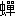
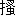

| 向日葵の咲かない夏 | |
| 道尾秀介 | |
| 新潮社 (2008) | |
向日葵の咲かない夏
油の声を耳にして、すぐにの姿を思い浮かべる人は、あまりいないだろう。雨音を聞いて、雨滴のそれぞれが地面に接している瞬間を想像する人がいないように。
大抵の人にとって、油の声というのは――無数の個体が発する声が混ざり合い、重なり合って生まれる、あの濁った、うねるような音のことだ。
そして、僕はその音が苦手だ。
どこかおかしい。どこか狂っている。暑い季節になると、僕はいつもあの音を聞いてそう思う。緑の多い公園の脇は、なるべく足早に通り過ぎ、部屋の窓越しにケヤキの並木を睨みつけながら、鳩尾に力を込める。そして叫び出したくなる。どうかその音をやめてくれと。
あの事件が起きた夏、僕は小学校四年生だった。僕には当時、三歳の妹がいた。月日が経って、僕は大人になったけれど、妹はならなかった。事件のちょうど一年後、四歳の誕生日を迎えてすぐに、彼女は死んでしまった。
考えようによっては、妹は幸せだったのかもしれない。こんな世界を、何十年も生き抜いていくよりは。僕は、ときおり思う。僕も、生まれてこなければよかったと。
妹の遺骨の一部を、僕はいまでも大事に持っている。当時僕が使っていた、背の高い硝子のコップに入れて、ラップをかけ、机の上に置いている。それを見るたび僕は思い出す。小さな指を並べた、あの可愛らしい手。ラテックスのつくり物のようにすべすべした、あのお腹。死に際、僕の膝の上で、全身を痙攣させながら、「忘れないでね」と言った彼女の、あの奇麗な丸い眼。
夏のあいだ、僕は彼女の遺骨を机の引き出しに仕舞い込む。
油の音を耳にしながら、彼女を思い出したりしたら、きっとまた自分が壊れてしまうと、わかっているから。
１
教 室
七月二十日。
風の音が怖かった。僕の左側に並んだ窓硝子の外で、さっきから絶え間なく聞こえていた。
いままで聞いたこともないような音。気味の悪い姿をした、化け物の叫び声が、たくさん混ざり合っているような。
「はいはいお喋りしなーい。お前たち、もう四年生だろうが。タナベ、ちゃんと前向け。いいかー、もう一回言うぞー」
教壇で、青いジャージ姿の岩村先生が、マジックで描いたような眉毛を上げ下げしながら夏休み中の注意事項を話している。僕は顎に力を入れて、必死で口を閉じていた。うっかり口をひらいてしまったら、咽喉の奥に抑えこんでいる悲鳴が、歯のあいだを抜けて、一気に洩れ出てしまいそうだった。
怖かった。
僕の席が、いちばん窓際にあるからだろうか。だから、こんなに恐ろしい音が聞こえてくるのだろうか。そう考えて、僕はそっと後ろの席のスミダさんを振り返ってみた。けれど、やはり彼女も、窓の外になど興味を示さず、ただぼんやりとしているだけだった。
――何か用？
気だるそうな掠れ声でスミダさんが囁く。僕は恥ずかしくなり、すぐに前に向き直った。
「これは、お父さんやお母さんにも伝えておくんだぞー。休み中に何かあったらー、必ず学校に連絡することー」
（僕ん家、電話止められてまあす）（うははははは）（ほんとかよ）（嘘だよ。Ｓの家じゃねーもん）（あいつん家はマジで止められてるんだよな）
「ほらほら静かにー。まだ夏休みじゃないんだからなー」
窓の外。昼間なのに、灰色の空。荒れた海を逆様にしたみたいな雲が、ずっと遠くまでぐるぐると広がっていて、それがものすごいスピードで、窓枠の中を左から右へ流れている。
「連絡先はー、いま配ったプリントのいちばん下に書いてある番号だー。太い字で書いてあるやつだぞー」
（１２９４でぇす）（え、何？）（答えだよ）（答え？）（あ、これ引き算じゃないの？）
「はいはいそれは電話番号です。でもいまの面白いぞー。しかも計算合ってるぞー」
（うふふぅ）（くすくすくすくす）（なんだよお前）（いてっ）
もう少しで、チャイムが鳴ってしまう。そうしたら僕は、この教室から出ていかなければならない。教室を出てしまったら、あの恐ろしい風の中に、一人で立たなければならない。
何か別のことを考えて気持ちを落ち着かせようと、僕はシャーペンを取り出した。机の端に絵を描いて、そのことに集中しようとした。しかし、指先が上手く動かない。描いた線はすべて、がたがたと揺れてしまう。
「おい、いいのかよ、机に落書きなんかして」
隣の席のハチオカが、頭を低くして言った。
「何だそれ――ワニ？」
「何だっていいだろ」
「ああ、トカゲか」
「トカゲじゃない！」
僕は思わず高い声を上げた。一瞬だけ、周囲の視線が僕たちに集まった。
「じゃあ、何なんだよ」
つまらなそうに鼻を鳴らして、ハチオカは首を引っ込めた。
「海に遊びに行く人は、とくに気をつけるようになー。毎年ニュースでやってるだろー。遊んでいる子供が波にさらわれてー――」
（泳げばいいじゃんな）（泳げないんだよ）（何で）（波がすごいから）（何で）
どん、と窓に風の塊がぶつかった。眼に見えるくらい大きく、硝子が震えた。僕は思わずシャーペンを取り落とし、そちらに顔を向けた。そして――。
そして僕は見た。
一瞬のことだった。Ｓ君が、風に乗って、窓の外を横切っていた。左から右に。ここは校舎の二階なのに。灰色のＴシャツに、濃い茶色の半ズボンをはいたＳ君の身体が、紙きれのように、風に煽られて、ものすごいスピードで飛んでいた。窓を横切るとき、Ｓ君は両眼を大きくあけて、教室の中をじろりと見て、ふと寂しそうな顔をして――。
それからサッと飛び去った。
上体を起こし、窓硝子に顔をつける。Ｓ君が飛び去った方向に眼を凝らす。Ｓ君は、もうどこにもいない。風で吹き上げられた校庭の土埃が、もうもうと舞っているだけだった。
「夏休みの最後に、宿題をまとめてやろうと思ってる人はいるかー」
（はぁい）（はい！ はい！）（毎日やんなきゃ駄目なんだよ）（お前もな）
僕はＳ君の席を振り返った。僕の席の四つ右、二つ後ろ。
そこだけ、空いている。ほかの席には、みんなクラスメイトが座っているのに、Ｓ君の席だけが、忘れられたようにぽっかりと空いている。
「宿題は、最後にまとめてやろうとすると大変だからなー。毎日とは言わんが、二日に一回くらいのペースで、少しずつやるんだぞー」
（はぁい）（無理でぇす）（何でだよ）（お祖母ちゃんのとこ行くんだもん）（持ってけよ）
「それからー。今日はＳが休みなのでー、誰かプリントと宿題をＳの家まで届けてあげてくれー」
（お前行けよ）（やだよ臭いもん）（ぎゃははははは）（くっさぁー）
そう。Ｓ君は学校に来ていないのだった。Ｓ君はもともと身体が健康ではないので、学校を休む日が多い。だから今日も、僕はそれほど気に留めてはいなかったのだ。
「しーずーかーに、ほらほら。誰かいないかー。Ｓの家を知ってる人ー」
（先生、マスカワ君が知ってます）（え、俺知らねーよ）（お前ん家の近くじゃんか）（嫌だって）
もういちど、窓硝子に顔を近づける。Ｓ君は、どこに行ったんだろう。
............。
気がつくと、教室がひっそりと静まり返っていた。
みんなが僕を見ていた。岩村先生も、太い眉毛を中途半端に寄せて、教壇の上からじっと僕の顔を見下ろしていた。誰もが、何かに驚いているような表情だった。
「ミチオ――お前、行ってくれるか？」
岩村先生が僕に言う。話し声ひとつ聞こえていなかったはずの教室は、岩村先生のその言葉が終わったあとで、いっそう静かになったように思えた。
そして僕は、初めて気がついた。いつのまにか、僕は右手を挙げていたのだった。そういえば、手を挙げなければと、さっき一瞬考えたような気がする。
「お前、Ｓの家、わかるか？」
僕は先生の顔を見返して、うなずいた。岩村先生は、すっと眉毛の両端を下げ、今度は泣き笑いのような表情になった。
「そうか――うん、よかった。じゃあ、あとでＳの分のプリントと宿題、渡すからな。うん、よかった」
そのあと岩村先生は、一人で何度もうなずいていた。そしてまたみんなに向き直ると、どこか上ずった声を出した。
「ようし、Ｓの家には、ミチオがプリントと宿題を届けてくれるそうだ。みんなも友達が休んだり、困ったりしているときは、ミチオみたいにすすんで協力してあげるんだぞー、いいかー」
（あいつ、Ｓと仲いいの？）（知らねえ）（臭くないのかな）（おい、見てるよ）
僕と眼が合うと、二人のクラスメイトは気まずそうに視線をそらせた。一人は急に岩村先生に注目しだし、もう一人は、机の上に置いた自分の筆箱の中に何か面白いものでも見つけたように、ふいと眉を上げてそれを覗き込んだ。
「ミチオ、Ｓの家に行く途中で、殺されないようにな」
前の席のイビサワが、ぶよぶよした身体をひねって振り返った。もともと吊り上がった両眼が、 の肉でいっそう押し上げられて、ほとんど線のように見えた。
の肉でいっそう押し上げられて、ほとんど線のように見えた。
「気をつけないと、お前も足の骨を折られて、草むらに捨てられるぜ」
イビサワの言いたいことは、わかっていた。ここ一年ほどのあいだに、このＮ町で、犬や猫のおかしな死体が立てつづけに見つかっているのだ。「悪質な悪戯」として、新聞にも載り、地域ではちょっとした騒ぎになっていた。死体が見つかったのは、町境の川べりにはじまり、民家の植え込みや、路地の側溝、建物と建物の隙間など様々な場所で、その数はぜんぶで八体にものぼっている。犬が四体、猫が四体で、野良もいれば飼われていたものもいた。八体目が見つかったのは、つい五日前の七月十五日のことだ。翌朝の新聞にその記事が載っていて、記事の脇に印刷されたＮ町の地図には、これまで死体の見つかったすべての場所が丸印で示されていた。それぞれの丸印の脇に、死体発見の日付が書かれていたが、死んですぐに見つかったものもあれば、見つかったときにはすっかり骨になっていたものもあったようなので、その日付にはあまり意味がなかった。地図上の丸印は町中にばらばらに散っていて、つぎはどこで死体が出るのだろうと、僕たちはみんなびくびくしていた。変質者の仕業とみられ、学校でも生徒に不審者への注意を呼びかけていた。
――ただ死んでいたっていうだけなら、変質者よりもむしろ、交通事故だとか、河川の汚染なんかがまず疑われるんだろうけど――
岩村先生が、いつかのホームルームの時間に言っていた。
――しかし、あれはやっぱり、誰かが......やっているとしか思えないよな――
そう考えられている理由は簡単だ。すべての死体には、二つの共通した特徴があった。一つは、後足の関節――人間でいえば膝の部分の関節が、すべて、逆方向に曲げられているということ。そしてもう一つは、死んだ犬や猫の口に、白い石が押し込まれているということ。
「演劇会があるってのも忘れるなよー。休みが明けてから、一週間しかないからなー。夏休みのうちに、練習できる人は練習しとくようにー」
チャイムが鳴った。
Ｓ君の家
校門までは、一周百メートルの校庭を横切らなくてはならない。
夏の太陽に熱されて、校庭の砂利はからからに乾いていた。一斉に下校する生徒たちに交じって僕は校門へ向かった。左手に、Ｓ君への届け物を持っていた。連絡事項の書かれたプリント二枚。宿題のドリル四冊。茶色い封筒が一枚。
封筒の中身は、たぶん作文だろう。
ちょうど一週間前、国語の宿題で書いた自由作文が、今日、みんなに返却されていた。それぞれの作文の最後に、赤い字で、岩村先生の感想が書き込まれていた。僕は、今年で三歳になった妹のミカが、お母さんのお腹から出てきたときのことを書いた。病院の処置室の外で、お父さんと二人して長椅子に座り、そわそわしながら待っていた、あの思い出を。岩村先生は、「気持ちがよく伝わってきます」と書いてくれた。
空を見ると、さっきまでそこにあったはずの低い雲は、いつのまにか消えていて、真っ白い夏の太陽が現れていた。あれだけものすごかった風も、すっかりやんでいる。
「おう、ミチオ」
後ろから、岩村先生が小走りに近づいてきた。ついさっきまでジャージ姿だったのに、いまは半袖のワイシャツに着替えていた。脇に、背広と通勤鞄をいっしょに抱えている。
「Ｓの家に行くんだろ？ 暑いから、熱射病に気をつけろよ。――何だお前、顔が汗びっしょりじゃないか。ハンカチは？」
「持ってません」
「なら先生のを貸してやるから、ほら。返すのは休み明けでいいからな。それで汗を拭いてけ」
岩村先生は青地に白い縞のハンカチを僕に手渡した。
「じゃあ、先生ちょっと急いでるから。休み中、あんまり人気のないところへは行くなよ」
僕の背中を軽く叩き、岩村先生はまた小走りに去っていった。よほど急いでいたようで、僕が校門を出たときには、もうどこにも見えなかった。
真上から照りつける太陽に、髪の毛をじりじりと焼かれながら「ケヤキ通り」を進む。
ケヤキ通りは、校門から真っ直ぐに延びる、両側に高いケヤキの並木がつづいている広い道路だ。本当にそういう名前なのかどうかは知らないが、僕たちはみんなそう呼んでいた。この道を進むに従って、先を歩く生徒たちの姿がだんだんと減っていくのはいつもの光景だった。ところどころに枝分かれする、左右の路地に入っていくのだ。家への近道なのだろう。
通りの中ほどにある児童公園を右手に過ぎる頃には、僕の前には生徒の姿はすっかりなくなっていた。公園の時計塔を見ると、大きな針は十二時二十分を指していた。
歩きながら、Ｓ君への届け物を見下ろす。手から滲み出た汗が、茶色い封筒に指の形の染みをつくっていた。中まで染みているのではと心配になり、封筒の口から覗いてみたが、どうやら原稿用紙は無事のようだ。
『悪い王様』
並んだ升目の端に、そんなタイトルが見えた。
ケヤキ通りの終わるＴ字路を右に曲がる。そちらは、僕の家のほうへつづく左の道よりも、だいぶ細い。ブタクサの茂った空き地や、砂利敷きの駐車場が道の左右を占め、人の気配もほとんどなかった。
左手の空き地から、生ぬるい風が吹く。その風の中に、僕は――嫌な臭いを嗅いだ。
掌で鼻を覆いながら、風上に眼を向ける。空き地に乗り上げるようにして、一台の車が捨てられていた。ずいぶん前からそこにあるらしく、グレーの塗装がぼろぼろにげている。硝子がすべて粉々に割れているのは、誰かが悪戯したのだろう。車に近づいて、硝子のない後部座席の窓から、中を覗いてみた。その瞬間、僕は顔を殴りつけられたように、ものすごい勢いで上体をのけ反らせた。
猫が死んでいた。
太った、大人の猫だった。雨風にさらされて、がさがさにひび割れたシートの上で、仰向けになって固まっていた。白と薄茶の全身の毛が、斑に抜けて、ところどころにピンク色の地肌が見えている。両眼がすっかり乾涸びて、黒い梅干を埋め込んだみたいだった。半びらきの口は、その両端が耳に向かって切れ込むように持ち上がっていて、まるで、何かを想像しながら、声を出さずに笑っているようだった。鼻の穴に、蟻が出入りしていた。
死体は、おかしな格好をしていた。テレビゲームのインベーダーのような姿。二本の前足が、万歳をするように頭の横にそれぞれ持ち上げられていて、後足も、それと同じ向きに鉤形に曲げられていた。ちょうど全身で、『出』という字に近い形になっているのだった。前足のほうは、自然に上を向いたのだろう。しかし、後足が、自然にあんな角度に曲がるはずがない。明らかに、関節が、本来と逆の向きに曲がっている。そして――。
あれは何だろう。はじめはわからなかった。猫の口から、何か白いものが覗いている。指を伸ばし、触ってみた。――石だ。猫の、笑った口の中から、乾ききって細かい亀裂の入った、白い石が頭を出している。
「ううう......」
僕はようやく理解した。あの殺され方だ。
「うあああああああ！」
夢中で走り出していた。心臓が、咽喉から飛び出しそうなほどに、胸の中で暴れ回っていた。行く手に深い竹藪が立ち塞がり、そこで道は左右に分かれている。左に曲がると、五メートルも進まないうちに、細い砂利道が竹藪の中に入り込んでいる。その細道のつきあたりに、Ｓ君の家があるはずだった。無数の竹が、壁のように左右に連なる細道を、僕は一気に駆け抜けた。
門の前まで辿り着くと、僕は両膝に手をついてその場に屈み込んだ。針を刺し込まれたように、きりきりと頭の奥が痛い。いくら空気を吸っても、吸っても、まだ足りない気がした。
顔を上げ、Ｓ君の家を見る。
表札はない。かわりに、右側のブロック塀の一箇所に、それががされたような長方形の痕があった。目の前の、スライド式の黒い鉄製の門が、少しだけあいている。ちょうど人が一人通れるくらいの隙間だった。
門の脇に呼び鈴があったので、押してみた。内側のバネが壊れていたようで、ボタンは指先で、へこ、と沈んで、そのまま戻らなくなってしまった。チャイムは聞こえない。
そのとき、すぐそばで物音がした。見ると、玄関の左手にある犬小屋からダイキチが身体を半分出して、こちらに顔を向けている。
ダイキチはＳ君の飼っている犬で、茶に白が混じった、 せた雑種だった。一年生の頃、最初にここに遊びに来たとき、僕は初めてダイキチに会った。そのときダイキチはまだ仔犬で、どこからか迷い込んできたのだと、Ｓ君は言っていた。はじめはラッキーという名前をつけたのだけど、どうもそれが見た目と合わないように思えて、やっぱり日本語に変えたのだとか。
せた雑種だった。一年生の頃、最初にここに遊びに来たとき、僕は初めてダイキチに会った。そのときダイキチはまだ仔犬で、どこからか迷い込んできたのだと、Ｓ君は言っていた。はじめはラッキーという名前をつけたのだけど、どうもそれが見た目と合わないように思えて、やっぱり日本語に変えたのだとか。
ダイキチは姿勢を低くして、咽喉の奥から呻り声を発していた。
僕は驚いた。ダイキチが僕にそんな態度をとるのを、初めて見たからだ。ごく最近、近所でＳ君に連れられているのに行き会ったときも、尻尾をぐるぐる回しながら僕の顔を舐めてきたのを憶えている。
僕が門に向かって一歩踏み出すと同時に、ダイキチが素早く犬小屋から跳び出した。門にぶつかるようにして、格子のあいだから鼻先を突き出すと、ものすごい勢いで僕に向かって吠えはじめる。僕を見上げるその眼は、恐ろしくて凶暴だった。
「どうしちゃったの......？」
ダイキチの首には、犬小屋のそばの杭から伸びたロープがつながれていた。そのロープは、あまり長いものではなかったので、真っ直ぐに玄関へと進めば、ダイキチに跳びかかられることはないだろうと思った。
門の隙間を抜けて、玄関へと向かう。そのあいだダイキチは、ロープの長さいっぱいに、僕に向かって首を突き出し、口の端から白い泡を垂らしながら、狂ったように吠え声を上げていた。
ドアの脇に、さっきと同じ形の呼び鈴があった。押してみたら、こちらはちゃんとチャイムが鳴った。
しばらく待ったが、なんの応答もない。もう一度呼び鈴を鳴らしたが、やはり返事はなかった。試しにドアのノブを回してみる。鍵は掛かっていなかった。
「こんにちは」
ドアを細くあけ、声をかける。
「Ｓ君、いますか――」
誰も応えない。薄暗い家の中から、Ｓ君が通りすがるときに気がつく、Ｓ君の臭いがした。
たたきを見ると、Ｓ君の靴があった。――いるのだろうか。
庭へ回ってみることにした。ドアを閉じ、右手の壁伝いに進む。
Ｓ君の家の庭には数え切れないくらいたくさんの木がある。それらの木は、植えられているというよりも、勝手に生えてきたのをそのままにしてあるという印象だった。手入れもされず、どれも枝が伸び放題だ。高い木も低い木も、それぞれ怒ったように、八方に枝を突き出している。
庭のすぐ向こう側に、広いクヌギ林がつづいていて、その境目には低い竹垣が組んであった。
うるさいくらいに油が鳴いている。その油の声に混じって、微かに、きいきいと、おかしな音が聞こえていた。捕まえられたネズミが叫んでいるような、高い、細い、嫌な音。
何だろう。首をひねりながら、庭に面した縁側に沿って、そろそろと歩を進める。
きい、きい――。
庭に面した窓は、ほとんど閉めきってあったが、一番奥の窓だけが、どうやらあいているようだった。風に吹かれて揺れる、黄土色のカーテンの端が、窓枠の下のほうからちらちらと覗いている。そのちょうど正面に、向日葵がたくさん咲いているのが見えた。
きい、きいい――。
おかしな音は、一歩進むごとに、はっきりと耳に届くようになった。
いちばん奥の窓の前に立つ。部屋の中に眼をやると、そこに、Ｓ君がいた。
ぎらぎらと太陽の照りつける明るい縁側と、陽の当たらない薄暗い和室の、ちょうど境目に立ち、Ｓ君は僕を見下ろしていた。Ｓ君の眼は、ひどいやぶにらみだったので、両眼で真っ直ぐに僕を見ていたわけではなかったが、片方の眼で、たしかに僕をじっと見ていた。灰色のＴシャツに、濃い茶色の半ズボンをはいていて、それは僕が教室の窓から見たＳ君の格好と、そっくり同じだった。Ｓ君は、僕に身体の正面を向けたまま、おかしな具合に全身を揺らしていた。小さく、円を描くように。
「何してるの――？」
僕は訊いた。Ｓ君は答えない。紫色の唇は、ぴくりとも動かない。首が、人間の姿とは思えないほど長く伸びている。
心臓が、高いところから落とされたように、どん、と大きく鳴った。短く息を吸い込むと、歯のあいだで空気が鋭く音を立てた。Ｓ君の両足は、床についていない。
「あ――あ......」
半ズボンから伸びたＳ君の腿の内側を、泥のようなものが伝った。それは色黒のＳ君の、細い足を伝い、やがて裸足の爪先からぼたりと落下した。見ると、ちょうど畳と敷居のあいだに、複雑な色をした、小さな水溜りができていた。
呼吸が、一回ごとに速く、浅くなっていった。息を吐くたび、咽喉の奥から、あ、あ、あ、という震えた声が洩れ出た。油の甲高い声に、頭を押さえつけられたように、僕はその場から動くことができなかった。
背もたれのついた椅子が一脚、Ｓ君のすぐ後ろに、横になって転がっている。
Ｓ君の首につながれたロープは、真上にある欄間へと伸びていた。欄間の格子のあいだを通って、そこで一度折り返されたあと、室内へ斜めに下りている。ぴんと張られたそのロープは、部屋の奥へとつづき、先端は、こちらを向いて置かれた大きな洋服笥の、ひらき戸の取っ手にくくりつけてあった。Ｓ君の重みで引っ張られた戸は、そちらの面だけが大きくひらかれていて、洋服笥自体も、少しだけもとの位置からずれている。そのせいで、Ｓ君の身体は床すれすれまで下がっていたのだろう。もし、もう少し洋服笥が軽ければ、あるいはもう少しあの戸が大きければ、Ｓ君の両足は床に届いていたかもしれない。
腹から胸へ、わけのわからない感情が駆け上がった。Ｓ君に近づこうとして、一歩踏み出したとたん、全身を痺れるような感覚が襲った。がくりと膝が折れて、僕は地面にへたり込んだ。
膝に触れる土は、太陽に熱されているはずなのに、冷たかった。両手を縁側に乗せる格好で、僕はＳ君を見上げていた。生ぬるい風が、背後から僕の頭を過ぎて、Ｓ君の身体をまた揺らした。きい、という音が、尖った刃物のように僕の耳を突き刺した。
Ｓ君の姿を、それ以上見ていることはできなかった。両眼をつぶり、ゆっくりと、手足を拾い集めるようにして、僕は立ち上がった。
足を動かす。Ｓ君に背を向け、縁側沿いに引き返す。鼻の穴が、ぴくぴくと痙攣していた。顎が震えて、歯ががちがちと口の中でぶつかり合った。足に力が入らない。上手く歩くことができない。ロープの軋む音が、僕を追いかけるように、背後から聞こえてくる。
縁側の半分ほどまで進んだとき、僕は一度だけ振り向いた。
Ｓ君の姿は、壁に隠れて見えなかった。
たくさんの向日葵が眼に入った。どれも大きな花を咲かせていて、その花を、みんなＳ君のいる部屋のほうへ向けていた。さっきＳ君は、僕を見下ろしていたのではなく、あの強く咲く向日葵を見ていたのかもしれない。そう考えて、急に、ぼろぼろと涙が出てきた。
学 校
校舎の中は静かだった。歩く人のいない廊下は、どこか別の建物の一部のようだった。
一階の廊下を進み、職員室の扉をひらく。
「――どうした？」
僕を振り向いてそう言ったのは、六年生のクラスを担任している西垣先生だった。細くて骨ばった顔に四角い眼鏡をかけた西垣先生は、席を立つと、眉をひそめて僕に近づいてきた。
「泣いてるのか。何かあったのかい？ きみ、たしか四年生の――」
「岩村先生はいますか」
僕の声は震えていた。言い終えたあと、肺が、ひくひくと勝手に動いた。
「ああ、岩村先生はいないんだ。でも――岩村先生じゃないといけないことかな。何かあったのなら、僕が聞くよ。ほらほら泣かない」
西垣先生は僕の腕をぽんぽんと叩いた。
「ミチオ君、喧嘩でもしたの？」
音楽の冨沢先生が、心配そうな顔で近寄ってきた。
「岩村先生、今日はもう戻ってこないのよ。用事があるらしくて」
気がつくと、職員室にいた先生が全員、僕に注目していた。僕は戸惑った。僕が見たものを、誰に、どうやって説明すればいいのだろう。
「お？ 何やってんだ、ミチオ」
背後で声がした。振り返るとそこに岩村先生が立っていた。僕が何か言う前に、西垣先生が口をひらいた。
「あれ、岩村先生。用事はもうお済みに？」
「いやそれが、ちょっと人と待ち合わせの予定だったんですけど、先方の都合が悪くなったらしくて、戻ってきちゃいました。じつはまだ仕事が残ってましてね、ここだけの話」
「今日は、お車で来られたんでしたよね」
「そうです、そうです。待ち合わせの相手と、このまま車で出かけるつもりでいたんですよ。失敗したなあ、こんなことなら、いつもどおり電車で来ればよかった」
岩村先生が僕に向き直った。
「ミチオ、お前さっき校庭で会わなかったっけ？ Ｓの家に行ったんじゃ――ん、何だお前、泣いてるのか？」
「先生、あの......」
言いかけて、口ごもった。ここでＳ君の話をすれば、きっと大騒ぎになる。肺が、またひくひくと震えた。岩村先生はちらりと周囲に視線を走らせると、僕の肩に手を回した。
「ここだと話しづらいか？――よし、じゃあ向こうに行こう。ほらこっち」
僕を職員室の奥へと連れていき、『応接室』と書かれたドアをあけて中に入る。革のソファーの端に僕を座らせると、岩村先生は隣に腰を下ろした。
「――何かあったのか？」
僕は大きく深呼吸をした。そして、たったいまＳ君の家で眼にしたものについて、岩村先生に説明した。そうしているうちに、また涙がぼろぼろと零れてきた。
「それは――本当なんだな」
話の途中から半分浮かせていた腰を、最後には完全に持ち上げて、岩村先生は厳しい顔で僕を見下ろした。僕は涙の味のする唾を呑み込んで、一度だけうなずいた。
「大変なことだぞ、おい......大変なことだ......」
岩村先生は僕の顔を見下ろしたまま掌で額を擦った。
「先生、いまからＳの家に行ってくる。お前はすぐに家に帰れ。いや――ちょっと待て。誰か、ほかの先生に送ってもらおう。そうだ、そうしたほうがいい」
岩村先生は応接室のドアを出ると、誰かに小声で話しかけた。たくさんの押し殺したような声が、入り混じって聞こえはじめた。そのざわめきは、ときおり高くなったり、急に低くなったりしながら、しばらくつづいた。一つの足音がばたばたと遠ざかる。ドアをノックする音。校長先生の声。いまノックされたのは、この応接室の反対側にある、校長室のドアだったのだろう。
入り口から岩村先生が身体を半分だけ覗かせて、僕に素早く手招きをする。立ち上がり、応接室を出ると、校長先生が厳しい顔で立っていた。校長先生がこんな顔をしているのを見るのは、去年の夏、生徒の一人が交通事故に遭ったとき以来だった。校長先生の周りに、ほかの先生たちが集まっている。全員の視線が僕に向けられている。
岩村先生は自分の鞄を脇に抱えていた。
「ミチオ。先生はこれからすぐにＳの家に向かう。冨沢先生が、お前のことを家まで送ってくれるそうだ。家に、お父さんかお母さんは？」
僕は首を横に振った。いま家にいるのは、ミカだけだろう。
「三時過ぎになれば、お母さんが帰ってくると思います」
「いま――一時前。まだけっこう時間があるな。お母さんは、仕事か？」
「パートです。隣のＫ駅の前の――スパゲティ屋さんで」
「電話番号わかるか？」
僕はまた首を横に振った。
「何ていう店だ？」
僕がスパゲティ屋の名前を言うと、岩村先生はすぐに電話で問い合わせてくれた。受話器を肩に挟むようにしながらメモ用紙に電話番号を書き写し、いったん電話を切ると、すぐさま叩くようにボタンをプッシュする。
「――ええ、はい――いえ、本人はいまここに――はい。なるほど、はい......」
しばらくお母さんと話していた岩村先生は、やがて受話器を置き、僕に向き直った。
「お母さん、すぐに家に戻るそうだ。いいか、冨沢先生に送ってもらったら、お母さんが帰ってくるまで、外へは出るんじゃないぞ」
岩村先生は校長先生に向かって首を小さく縦に振ると、小走りに廊下へ出た。しかしそこで、ふと立ち止まり、また部屋に入ってくると、近くの机に置かれた電話の受話器を取った。
「校長――警察へは、私から連絡を入れます。途中で合流して、いっしょに行ったほうがいいでしょうから」
校長先生が顎を引いてうなずく。岩村先生は僕たちに背中を向け、机に覆い被さるようにして、電話機を操作した。
「もしもし、私、Ｎ小学校の岩村と申しますが......」
口許を掌で覆い、低い声で、囁くように、岩村先生は事情を話す。具体的に何と説明しているのかは、よく聞き取れなかった。
やがて受話器を置くと、岩村先生は校長先生に一礼し、また職員室を出ていった。
僕の家
「ミチオ君、ほんとに大丈夫？」
冨沢先生が小首を傾げながら、僕の眼を覗き込んだ。
「先生、このまま学校に戻っちゃってもいいの？」
玄関のたたきで、揃えた両膝に手を添えて、冨沢先生は僕に顔を近づけてくる。先生になってまだ二年しか経っていないという冨沢先生は、お母さんよりもずっと若い。
「妹がいるから、平気です」
お母さんが帰ってくるまで、いっしょに家にいてくれると、冨沢先生は言ってくれたのだ。でも僕は、家族以外の人間に家の中に入られるのが嫌だった。この家の中が――リビングやキッチンが、どうなっているのかを見られるのが嫌だった。
「ミチオ君、妹さんがいるんだっけ。いくつなの？」
たたきの端に揃えられている、ピンク色の小さな運動靴を見ながら、冨沢先生が訊く。
「今年で――七月で、三歳になりました」
「そう、じゃあ来年から幼稚園ね。そんなに小さな妹さんが、いつも一人でお留守番してるんだ」
「はい、うちは――」
冨沢先生の視線から顔をそむけるようにして、僕は答えた。
「うちは、そうなんです。いつも」
冨沢先生の視線が、顔の横にじっと注がれているのを感じる。自分の家にいるのに、僕はとたんに居心地が悪くなる。
「子供だけのときは、家の中にいても気をつけるのよ。ちゃんと戸締りをすること。ほら、最近とくに、変な噂があるでしょう。犬とか猫が――」
階段の上から、ミカが僕を呼んだ。それに救われた気分で、僕は二階を振り返る。冨沢先生も首を伸ばした。
「あそこが、ミチオ君たちの部屋なのね」
階段のとっつきにあるドアが、僕とミカが二人で使っている子供部屋だ。
「あの、僕、妹にごはんを食べさせないといけないから」
「ミチオ君がごはんをつくるの？」
「いえ、ごはんはお母さんがパートに行く前に。僕は、レンジするだけで――」
ミカが、二階からもう一度僕を呼んだ。
「先生、ほんとにもう大丈夫ですから。お母さんも、すぐ帰ってくると思うし」
冨沢先生は、しばらく僕を複雑な表情で見下ろしていたが、やがてふっと肩の力を抜いた。
「じゃあ、ほんとに気をつけるのよ。もし何かあったら、すぐに学校に連絡すること。あとで岩村先生とか、もしかしたら警察の人なんかも来るかもしれないわね。たぶん、いろいろと訊かれることになると思うけど......」
つづける言葉が見つからなかったようで、冨沢先生はただ哀しそうな眼を僕に向けた。
冨沢先生が玄関を出ていくと、僕は先生に念を押されたとおり、しっかりとドアの鍵を回した。階段を上る途中で、Ｓ君への届け物をまだ持っていることに気がついた。これは、あとで岩村先生に戻すべきだろうか。
「ただいま」
ドアをあけると、部屋の中はむんむんしていた。鼻から息を吸い込むだけで、室温が高いのがわかる。
僕は窓の鍵を外して、大きくあけ放った。外の音や匂いといっしょに、気持ちのいい風が入ってきて、黄色いカーテンを膨らませた。
「何でママ、窓ぜんぶ閉めていっちゃうのかな？」
二段ベッドの下の段で寝っ転がっていたミカが、うんざりしたような声を出す。お母さんは、自分が出かけて、家が子供だけになるときには、家中の窓をぴったりと閉めきって鍵を掛けてしまうのだった。暑くても、絶対にあけてはいけないと、僕は厳しく言われている。だからいまあけたこの窓も、お母さんが帰ってきたと同時に、また閉めなければならない。冬はいいけれど、夏はさすがに堪える。
「きっと――危ないからだろうね」
「落っこちるから？」
「違うよ、それなら一階の窓まで閉める必要ないじゃんか。ほら、最近このへんに変な人がいるだろ――犬とか猫を殺してる人」
「あ、ミカ知ってる。ぜんぶで八匹も殺されちゃったんだよ」
僕は無言でうなずいた。ついさっき自分が九匹目を見たことは、黙っていた。
ランドセルを机の脇に掛ける。Ｓ君への届け物は、本棚の、図鑑を並べてある段の右端が空いていたので、とりあえずそこに差し込んでおいた。
「お兄ちゃん、遅かったね」
「うん。ちょっと――いろいろあって」
Ｓ君のことを話すべきだろうか。僕は迷った。
「さっきの人は？」
「ああ、先生。音楽の冨沢先生」
「お兄ちゃん、悪いことしたんだ」
ミカは悪戯っぽい、でもどこか本気で心配しているような口振りで言った。近頃よくミカはこんな仕草を見せるが、その様子は、以前のお母さんにそっくりだった。ミカが生まれる前までは、お母さんもよくこんな仕草を僕にしてみせた。
そんなミカを見ているうちに、なんだか胸が詰まるような心地になった。つづけて、それまで抑えつけていた緊張と不安が急激に僕を襲った。唐突に涙が出そうになり、恥ずかしいことに、三歳の妹に頼りたいという気持ちが、胸に込み上げてきた。
「ミカ、じつは今日ね」
床に胡坐をかき、僕はミカと向き合った。自分の見た出来事を、ミカに話して聞かせた。
「――え！」
ミカの反応は、僕の予想していたものよりもはるかに大きかった。ミカがＳ君のことを、「眼が離れてる人でしょ」と訊いてきたので、僕はちょっと驚いた。
「ミカ、会ったことあるんだっけ？」
「犬といっしょのとき、会った」
そういえばこの前、ダイキチを散歩させているＳ君と行き会ったとき、ミカもいたのだった。
「Ｓ君、何で死んじゃったの？」
「わからないよ。でも――」
「でも何？」
早口で訊き返す。ミカの会話のテンポは、実際のところ、クラスの友達よりもずっと速い。これが九歳とか十歳になったら、いったいどうなるのだろう。もしかしたらその頃には、僕の頭がついていけなくなっているかもしれない。
「でも、なんとなく、想像はできるような気はする」
僕はミカに、Ｓ君がクラスメイトたちと上手くやれていなかったことを話した。
話を聞き終え、しばらく黙っていたあと、ミカは僕にこんなことを訊いた。
「お兄ちゃんは、そんなことしてなかったよね？」
「そんなこと？」
「Ｓ君のこと、いじめたり......」
僕は、言葉に詰まった。もちろんクラスの連中――とくにイビサワやハチオカのように、わざとＳ君に嫌な思いをさせたような憶えは一度もない。でも、Ｓ君が寂しそうにしているとき、すすんで話しかけたり、笑いかけたりしていたかといえば、それにも首を横に振るしかなかった。
「Ｓ君とは、仲良くしてたほうだと思うよ」
視線をそらせ、僕は答えた。
「悪くない関係だったんじゃないかな。Ｓ君が、僕以外のクラスメイトに話しかけてるの、あんまり見たことないし」
僕のそんな曖昧な言い方に、ミカは何も言葉を返さなかった。僕はミカから顔をそむけたまま、じっと口を閉じていた。
黙っていると、だんだんとＳ君のことが思い出されてきて、胸が重たくなった。僕は本当に、Ｓ君と仲良くしていただろうか。誰かと比べてみて、はじめてそんなふうに思えるという程度の関係ではなかったか。クラスメイトたちは、Ｓ君が自殺したと知って、どんな顔をするだろう。みんな、Ｓ君の話をするときは、きまって口をにやにやさせていた。Ｓ君が死んだことも、やはりあんな顔で話し合うのだろうか。汚い冗談を交えて笑い合うのだろうか。それを見たとき、僕はどんな気持ちになるだろう――。
「お兄ちゃん、ごはん食べよ」
「え？」
僕が悩んだり、哀しんだりしているとき、ミカは必ずこうやって、関係のないことをいきなり言い出す。そして、まるで僕を呼び止めるような、そんなミカの言葉に、僕はいつも救われたような気になるのだった。
「そうだね。お腹空いたもんね」
一階のダイニングに下りた。食卓の上に、チャーハンが二皿、ラップをかけて載せられていた。それぞれの皿に添えられたスプーンのうち、一つは、プラスチックの柄がついたやつで、トレミちゃんという、音符の形の頭をした赤ちゃんが柄の部分にプリントされている。「ミカちゃんはトレミちゃんが大好きだから」と言って、お母さんはこのキャラクターグッズばかりを買ってくるが、それはお母さんの勝手な思い込みだった。
電子レンジにチャーハンを入れ、タイマーを適当に回す。庭に出る窓をあけると、雑草の伸びきった芝生から、むっとするような草の臭いが入ってきた。それに混じって、つんと鼻に届いてくるのは、生ゴミの腐った臭いだ。窓のすぐ外に、ビニール袋に入ったゴミがたくさん置かれているのだった。
といってもべつに、ゴミの袋をぜんぶ庭に投げ出しているというわけではない。あの庭のゴミは、家の中から溢れ出たものだ。僕の家は、ダイニングも、キッチンも、リビングも、どこもゴミだらけだった。お母さんが、捨てないからだ。何度か、収集日に僕はゴミを持ち出そうとしたのだが、そのたびにお母さんに、勝手なことをするなと怒鳴られた。お父さんもゴミを捨てようとしたことはあるのだが、一度僕と同じように怒鳴られてからは、もうすっかり諦めてしまっていた。何事につけても、お父さんは諦めが早い。
サンダルを突っかけて庭に出る。雨水が入り込んで、中がどろどろになったゴミ袋を覗いてみたら、半透明のビニールの内側で、小さな蠅がぶんぶん飛び回っているのが見えた。しゃがみ込み、袋の口の結び目をほどいていると、背後でチン、と電子レンジが鳴った。
「お兄ちゃん、チャーハン」
ミカに呼ばれ、僕は家の中に戻った。
お母さん
「じゃあ、来るの？」
もごもごと口を動かしながら、ミカが訊く。僕もチャーハンが口から洩れ出ないよう注意しながら、「何が？」と訊き返した。
「その先生。イワ――」
「岩村先生？ うん、来るんじゃないかな。さっき冨沢先生が言ってた。警察の人も、もしかしたら来るかもしれないって」
僕はちらりと床に眼をやる。かぴかぴに乾いた黄色い米が、何粒かずつ固まって、へばりついているのが見えた。こんな状態を人に見られると思うと溜息が出る。
「何か上手いこと言って、僕たちの部屋に来てもらおうかな。玄関から、真っ直ぐ階段を上ってもらって」
この家で堂々と人に見せられるのは、子供部屋以外にはない。
「お母さんもきっと、そのほうがいいだろうし」
「気にしないよ、ママは」
僕たちがそれぞれの食事を終えようとしたそのとき、玄関の鍵を回す音がした。僕は慌てて立ち上がり、庭へ出る窓をぴしゃりと閉じた。
「お兄ちゃん、二階の窓！」
ミカが短く言う。僕が、「あ」と声を上げたときには、もうお母さんが台所の入り口から顔を覗かせていた。長い髪の何本かが、汗で、海草みたいに顔にへばりついている。
「――いま、何やってたの？」
冷たい声が耳に刺さり、僕は心臓を まれたような気になる。
まれたような気になる。
「蠅がいたんだよ」
僕は答えた。
「窓硝子の外に蠅がくっついてて、気持ち悪いから追い払ったんだ」
「蠅が気持ち悪い？」
お母さんはその場で僕を見下ろしたまま、唇の端を持ち上げた。両眼が意地悪く吊り上がって、カマキリのようだった。そのまましばらく黙っていたかと思うと、お母さんは、もう何度も聞かされているので近頃ではあまりその意味も考えなくなった言葉を口にした。
「気持ち悪いのはお前だよ」
僕は返事をせず、ただ下を向いて椅子に座り直した。
「ミカちゃん、ただいまあ」
同じ口から出てくるとは思えないほどの、高くて甘ったるい声。歌の一部分のような。
「あらあ、スカートがしわしわじゃないの。駄目よ、ミカちゃんは女の子なんだからね。ちゃんとしていなさい」
お母さんは椅子の上に屈み込み、掌で払うようにしてスカートの端を伸ばした。そしてその体勢のまま、顔だけ僕のほうへ向けて、また抑揚のない、冷たい声を出す。
「――ほんとなの？」
「え......」
「Ｓ君よ、ほんとなの？ お前が見つけたって」
Ｓ君が死んでしまったことよりも、僕がそれを見つけたことのほうがよっぽど重大だというように、お母さんは僕を睨みつけた。
「学校からの届け物をしに、僕、Ｓ君の家に行って、玄関から呼んでも、返事がなかったから、庭のほうへ回って――」
「馬鹿じゃないの」
お母さんが僕の話を遮った。
「返事がなかったのなら、玄関先か下駄箱の上にでも届け物を置いて帰ればよかったじゃないの。何でお前はそうやって馬鹿なことばかりするの。お前のせいで、お母さん、仕事も途中で切り上げなきゃならなかったのよ。これから先生だの警察だのも来るんだろうし。――ねえ、あんた私に嫌な思いをさせるのが目的なんでしょ。わざとやってるんでしょ」
「わざとのわけないよ。Ｓ君が死んでるなんて、僕、知らなかった」
「お前の言うことは、嘘ばかりだからね」
お母さんが何を言いたいのか、僕にはわかっていた。あの嘘のことだ。ずっと前――お母さんが僕のことを嫌いになったあの日に、僕がついた嘘のことを言っているのだ。あの日以来、お母さんは僕のことをすっかり信用しなくなった。僕はあれから、一度だって嘘をついたりしていないのに。僕は、心底から反省しているのに。
咽喉の奥に、感情の塊が込み上げた。物も言えず、僕はただ食卓を見下ろしていた。
「暗いんだよ、お前は」
そしてお母さんは、口から土の玉でも吐き出すような言い方で、馬鹿、と付け加えた。この単語を、僕は一日に何度も聞かされる。自分自身で気をつけて、僕は馬鹿じゃないと確認しながら生活していないと、そのうち自分が本当に馬鹿なのではないかと考えてしまいそうだった。でもいまのところ、僕は自分が馬鹿じゃないと知っている。
「ねえ、ミカちゃん」
お母さんの声がまた変わる。
「ミカちゃんはせっかくおりこうなんだから、お兄ちゃんみたいになっちゃいけないのよ。いい？」
僕はチャーハンの最後の一口をすくって口に入れると、食卓を離れた。
「ごちそうさま――ミカ、二階に」
言いかけたとき、
「ミカって呼ぶんじゃないよ！」
お母さんが叫んだ。声が半分裏返っていた。
「どうして」
僕はお母さんの顔を見ずに呟いた。
「ミカをミカって呼んで、何がいけないの？ お母さんだって、呼んでるじゃないか」
お母さんは何かまた叫ぼうとして、それを呑み込んだ。
けっきょく、僕とミカはいっしょに二階へ上がった。お母さんの低い声が追いかけてきた。
「先生が来たら、すぐに下りてくるのよ。私は何も話さないからね」
Ｓ君の身体
「二階の窓、ばれなくてよかったね」
ミカの口調には、明らかに僕を気遣っているとわかる、変なさり気なさがあった。
「うん――お母さんが帰ってるから、もうこのままあけとこう」
「先生たちが来たら、どうやってここに上がってもらうの？」
「玄関から直接この部屋に来てもらうんなら、僕が下で待ってたほうがいいのかもね。でも、いつ来るかわからないし――とりあえず、ここにいるよ」
しかし、あまり待つ必要もなかった。それから十分もしないうちに玄関の呼び鈴が鳴り、岩村先生の声と、お母さんの声と、聞き憶えのない男の人の声が、ぼそぼそと響いてきた。お母さんは本当に必要以上の口を利かなかったようで、すぐに足音が階段を上ってきた。
ドアがノックされ、岩村先生の顔が覗く。
「ミチオ、お邪魔するぞ」
岩村先生の表情は、僕が予想していたものとは違っていた。僕としては当然、深刻な、哀しそうな顔を思い描いていたのだけど、そのとき岩村先生は、困ったような、怒ったような――上手くは言えないけれど、なんだか中途半端な表情を浮かべていた。
「じゃ、刑事さんたちも」
岩村先生が後ろを振り返る。先生の大きな身体に隠れるようにして、二つの背広姿が部屋に入ってきた。一人は、お父さんとちょうど同じくらいの年齢に見えた。せていて、背を屈めるようにして上目遣いにこちらを見ているので、日に焼けた額に横皺がたくさん寄っている。もう一人は、まだ大学生か、もっと下にも見えた。しかし近くでよく見てみると、その人の顔にも案外に皺が多く、けっきょく二人とも同じくらいの歳なのかもしれないと思い直した。
三人は絨毯に胡坐をかいて僕と向き合った。岩村先生が僕の正面に座り、二人の刑事は先生よりも少し後ろの場所を選んだ。
――ここにいてもいいのかな。
ミカが僕に囁いた。少し緊張しているような声だった。僕は、よくはわからないながらも、うなずいてみせた。
「たぶん、すぐ終わると思うし」
岩村先生が僕たちを見比べて、難しい顔をした。
刑事たちが自己紹介をする。若く見えないほうは、谷尾と名乗った。若く見えるほうは竹梨というらしく、年齢と同じで、はっきりしない名前だった。
「どうしましょう、まずは私から――？」
岩村先生が左右を交互に振り返りながら訊く。谷尾刑事のほうが、へこりと首を下げて答えた。
「ええ、それがよろしいかと。私らは、またあとで――な？」
「はい、とりあえずは岩村先生からご説明をしていただいて――ねえ」
視線が順繰りにバトンタッチされ、最後に岩村先生から僕に向けられた。
「ミチオ――あのな」
の無精髭を親指で撫でながら、岩村先生は顔を近づけてくる。
「まずは、ちょっと質問だ。Ｓのことなんだが、お前はＳの家で、Ｓがその――首を吊って死んでいるのを見たんだよな」
僕がうなずくと、岩村先生は重ねて訊いた。
「縁側の内側で、首にロープをかけてぶら下がっていたんだよな？」
「はい、欄間から下がったロープが、Ｓ君の首にかかっていて、その後ろで、背もたれのついた椅子が横になって倒れていて......」
これは学校で、もうすでに話したことだった。刑事がいるから、もう一度同じ話をさせているのだろうか。
「単刀直入に言うぞ――単刀直入、わかるよな？」
先生はなかなか本題に入ろうとしない。咳払いをしたり、太腿をもぞもぞと動かしたりして、まるで、先をつづけたくないので、わざと先延ばしにしているようだった。そして、ようやく岩村先生の口から言葉が出てきたかと思えば――それは、僕にはさっぱり意味のわからないものだった。
「なかったんだよ」
僕は首をひねり、岩村先生を見返した。
「なかった......」
「そう。先生、お巡りさんといっしょにＳの家に駆けつけたんだけどな――Ｓの死体なんて、なかったんだ。どこにも」
岩村先生の背後で、二人の刑事が、僕の反応を確認するかのように、それぞれ首を突き出すのが見えた。
「Ｓ君の死体が、なかった......」
「死体だけじゃない。ロープも、倒れた椅子もなかった。欄間から垂れ下がっているものなんて、先生には見えなかったし、椅子はちゃんと台所に四脚揃っていた。和室にあったのは――」
ちょっと言い澱み、岩村先生は二人の刑事を振り返った。谷尾刑事が「排泄物がね」と言って僕に顔を向ける。
「排泄物があったんだ。もっとも、排泄物そのものじゃなくて、それを拭き取ったような跡だけどね。欄間の下の、ちょうど、畳と敷居のあいだに」
「洋服笥はどうなっていましたか？ 戸が片方ひらいていて、笥自体も手前にずれていたはずなんです。Ｓ君の重みで」
谷尾刑事は首を横に振った。
「私らも見てきたんだけどね。笥は、べつに何ともなかったよ」
階下で電話のベルが鳴った。階段を踏む足音が近づいてきて、「刑事さんに電話です」というお母さんの声がした。谷尾刑事の目配せを受けて竹梨刑事が部屋を出ていく。
「とにかく、確認したいのは――」
岩村先生がまた口をひらいた。
「お前が本当に、Ｓが首を吊っているのを見たのか、ということなんだ」
先生は何を言っているのだろう。
「いま、警察の人たちが、Ｓの家でいろいろと調べてる。床の排泄物の跡とか、欄間に、何か疵が残っているかとか――つまり、あそこでＳが首を吊ったのかどうかをな、調べてる。でも、もしお前が見たものが、何かの見間違いだったとしたら、警察もそんなことをする必要はないんだ」
僕は呆気にとられ、岩村先生の顔をつくづくと眺めた。要するに、あれは見間違いだったと僕に言って欲しいのだろうか。しかし、あれが見間違いのわけがない。あんな見間違いなんて、あるはずがない。ロープの軋む音だって、はっきりと憶えている。Ｓ君の身体が揺れていたのだって、この眼に焼きついている。
「Ｓ君は、ほんとに、首を吊って死んでいました。ロープを、欄間からぶら下げて、それを首にかけて――Ｓ君の身体の真下に、どろどろしたものが落ちているのも、そのとき見ました」
「なるほど......」
岩村先生は唇を曲げて、人差し指で耳の後ろをく。
竹梨刑事が戻ってきた。さっきと同じ場所に腰を下ろすと、岩村先生の背後で、谷尾刑事に何か耳打ちをする。谷尾刑事は口を「ほ」とあけて、しばらく天井を見上げていたが、やがてその視線をゆっくりと岩村先生に向けた。
「――何か、わかりましたか？」
岩村先生の質問に、谷尾刑事はためらいがちにうなずいた。
「職場の花市場にいた、Ｓ君のお母さんと、連絡がついたようです。もうすでに、家に戻っているみたいですな」
「それだけですか？」
「ええ、いや、まあ......」
谷尾刑事は少しあいだを置いてから、歯切れの悪い口調でつづけた。
「本当に、あったみたいです。欄間に、ちょうどロープくらいの太さのもので、下から強く引っ張られたような痕が。それから、洋服笥の前の畳に、笥を引き摺ったらしい疵が残っているのも、どうやら見つかったようで」
それを聞いて岩村先生は、とても意外そうな顔をした。そのことに僕は腹が立った。
今度は竹梨刑事が口をひらく。
「排泄物の痕跡については、まだ本格的な分析をはじめていないようですが――どうも、スイカの種が混じっているのが確認できたようです」
スイカの種、と岩村先生が呟き、谷尾刑事が説明を加えた。
「Ｓ君のお母さんに確認したところ、Ｓ君は昨日の晩に、スイカを一切れ食べたということなんですな」
岩村先生は咽喉の奥で「んんん」と唸った。胡坐の両膝に手を添え、踏ん張るように、じっと顔を下に向けている。僕はいいかげんうんざりしていた。欄間にロープの痕があるのは当たり前だ。床の排泄物がＳ君のものなのも当たり前だ。僕が最初から、そう言っていたじゃないか。
――お兄ちゃん、嘘なんてつかないよ。
ミカが、ぼそぼそと小声で呟いた。僕はわざと大きくうなずいてみせた。
「当たり前だよ。友達が首を吊ったなんて嘘を、僕がつくはずない」
岩村先生がはっと顔を上げた。両手を僕に向け、ぶるぶると首を振る。
「いや、ミチオ、そうじゃないんだ。お前を疑っていたわけじゃなくて――その――あまりに突然だったから、少し混乱していたというか――なるべくなら信じたくなかったというか......」
言葉尻を曖昧に濁して、岩村先生はまたがっくりと肩を落とした。
それから谷尾刑事が、僕にいくつかの質問をした。僕がＳ君の家に行った時刻。僕が正確に何を見たのかなど。僕は質問に正直に答えた。ほとんどが、家に警察が来るかもしれないと冨沢先生に言われたときから、たぶん訊かれるだろうと予想していた質問だった。しかし、そうでない質問が二つだけあった。僕が見たＳ君は、本当に死んでいるようだったか。そして、Ｓ君の家の中やその周囲に、誰かいなかったか。
「Ｓ君は死んでいた、と思います。だって、完全に身体の力が抜けていたし、首がすごく長くなっていたし......」
僕の返答に、谷尾刑事は唇を横に結び、竹梨刑事は肩をすぼめ、岩村先生は溜息をついた。
「誰かがいたかどうかは――わかりません。でも、僕は誰も見てません」
「何か、物音を聞いたというようなことは？」
「なかったと思います。の声がうるさかったから、はっきりとはわからないけど」
の声、と繰り返して谷尾刑事は鼻の横をいた。
「――こんなところですかね？」
手帳にボールペンを走らせていた竹梨刑事が、前後のページをぺらぺらと確認しながら言う。谷尾刑事は眉を上げてうなずいた。二人は立ち上がり、そのあとで岩村先生も、のろのろと腰を上げる。
「どうもありがとうね、いろいろと教えてくれて」
谷尾刑事が眼の横の皺を深くしてみせた。
「もしあとで、何か思い出したり、気づいたりしたら、連絡をもらえると助かるよ」
背広の内ポケットから名刺を取り出し、僕に差し出す。名前の脇に、『刑事部捜査第一課』と印刷されていた。僕はそれを、とりあえず自分の財布に仕舞った。
「先生は、これから――？」
谷尾刑事が岩村先生に顔を向ける。
「学校に戻らなければなりません。対策を講じないと」
「では、途中までごいっしょに参りましょう。我々は現場に戻ります。人間を集めて、早いとこ周辺の捜索をはじめないといけない。まあ、すでに少人数での捜索は開始されているようですがね。地域一帯から外へ向かう車線を対象に、検問の手配も進んでいるようですし」
「検問？――ああ、そうか。Ｓの......」
岩村先生はちらりと僕を見て、言葉のつづきを呑み込んだ。
お母さんの言葉
刑事たちと岩村先生を玄関まで送ろうと、僕は三人につづいて部屋のドアを出た。ふと左手に眼をやると、暗がりにお母さんが立っていた。壁を背に、身動きもせず、じっと僕を見下ろしている。
「あれ、お母さん、そこにいらしたんですか。失礼しました」
階段を下りかけていた岩村先生が、振り向いて言う。つづいて谷尾刑事が、つんのめるようにして立ち止まり、頭の脇に手をかざしてみせた。
「どうもどうも、ご迷惑をおかけしました。もうこれで帰りますんで。――息子さん、大変でしたね。何か、楽しいお話でもしてあげてください」
お母さんは何も答えず、ただ唇の端を少し持ち上げた。谷尾刑事は僅かに首を傾げるような仕草をして、竹梨刑事と視線を交わす。三人が玄関を出ていくのを、僕は階段の上から見送った。
「お前、また嘘をついたね」
抑揚のない声が、いきなり降ってきた。意味がわからず、僕はお母さんの顔を見上げる。
「お母さん、ここで聞いてたわよ。Ｓ君が首を吊っていたなんて、嘘だったのね。お前また、お母さんを騙したのね」
「違うよ、ほんとだよ。でも、Ｓ君の身体が、消えちゃったんだ」
ここで話を聞いていたのなら、わかるはずだ。
「排泄物とか、ロープの痕とか――刑事さんが、ちゃんと言ってたじゃん」
「そんなもの、お前がやったんだろう？ Ｓ君が首を吊ったように見せかけるために、お前が」
「するはずないじゃない。僕がそんなことして何になるの？ 僕ほんとに――」
「信じられるわけないだろ！」
お母さんが右手を勢いよく振り上げ、僕は身を硬くした。お母さんは、ばん、と音をさせて後ろの壁を掌で打った。
「とにかく、お前の言うことなんて、お母さんは信じない」
声が震えていた。
「お前はいつだって嘘ばっかりつくんだ。嘘ばっかりついて、人に迷惑をかけて――」
そこまで言うと、お母さんは急に言葉を切った。しばらく黙っていたかと思うと、
「本当のこと言おうか」
今度は一転して低い声を出した。
「お母さんね、先生から連絡がきてＳ君のことを聞いたとき、思ったのよ。――お前が□□□□□□□って」
最後の言葉は、僕の耳の中で、うわんと大きく反響し、それからばらばらに砕け散った。それは僕にとって、あまりに衝撃的な言葉だった。僕の心は、それを受け止めることを拒否した。これは自分を守るために、いつからか僕が憶えた方法だった。意識してそうしているわけではないけれど、自分の心を攻撃しようとする言葉を、僕はこうして拒絶することができるようになっていた。これができなかったなら、この家の中で、いま頃僕はとっくに壊れていただろう。
やがてお母さんはゆっくりと階段を下りていった。
その後ろ姿をぼんやりと眺めながら、僕は思った。
それは、いつも僕の胸の中にある思いだった。
この世界は、どこかおかしい。
２
トコお婆さん
「――どういうことなんだろう。何で死体が消えちゃったんだ？」
ベッドの枠に寄りかかって座り込み、僕は腕を組んだ。
「誰かが持ってったの？」
隣でミカが言う。もちろん、それしか考えられない。Ｓ君が自分で動いたというのでなければ、誰かが動かしたのだろう。
「でも、それならよっぽど素早くやらなきゃならないよ。だって、僕はＳ君の死体を見つけて、すぐに学校に知らせに行ったんだから。――僕がＳ君の死体を見つけたとき、周りには誰もいなかった。庭にも、家の近くにも。家の中はしんとしてたし、だいたい玄関にはＳ君の靴しかなかったんだ。いたのはダイキチだけだよ」
「でも、わかんないよ――誰か、隠れてたのかも」
「何で？」
「Ｓ君の死体を持っていきたかったから」
僕はちょっとのあいだ天井を見上げた。それからミカに向き直って、また同じことを訊いた。
「何で？」
ミカは小さく溜息をつく。
「そんなことわかんないよ。ミカ、なんとなく言ってみただけだもん」
僕たちは二人して「ううん」と唸って黙り込んだ。
しばらくすると、ミカが急に高い声を出した。
「いいこと考えた！」
僕は「お」とミカを振り向いた。ミカがこういう台詞を口にするときは、たいてい本当にいいことを思いついたときなのだ。
「トコお婆さんに相談しようよ」
「それだ！」
思わず手を打った。
トコお婆さんというのは、近所に住んでいる、僕たちと仲良しのお婆さんだった。「トコ」で一文字なのか、それとも「ト子」なのか、わからない。とにかく僕たちはそれまでも、何か困ったことがあると、まずトコお婆さんに相談していた。トコお婆さんは僕たちのことを気に入ってくれているようで、いつも親身になって話を聞いてくれる。
「何で気がつかなかったんだろう。そうだよ、トコお婆さんならこの謎を絶対解いてくれるよ。もし、どうしても解けなかったら――そのときは、あの力を使ってもらえばいいんだ」
僕とミカは、すぐに家を出ることにした。階段を下り、玄関で靴を履いていると、あけっ放しのドアの向こうに、ダイニングの椅子に座ってテレビを見ているお母さんの背中が見えた。なるべく音を立てないように気をつけたのだが、僕がドアのノブを回したとき、背後からお母さんの声が飛んできた。
「どこ行くつもり」
「ちょっと......トコお婆さんの家に」
お母さんはふいと眉をひそめた。それから「ああ」と唇を曲げる。
「あのキチガイのところ」
僕はそのままドアを出た。
炎天下、僕たちは油の声を聞きながらトコお婆さんの家に向かった。ポケットに入っていたハンカチで、汗を拭きながら歩いた。
「お兄ちゃん、そんなハンカチ持ってたっけ？」
「担任の岩村先生に、借りたんだよ。――あ、さっき返せばよかった」
団地を出て、大通りを、学校とは反対の方向に五分ほど進むと商店街が見えてくる。その入り口に、『大池製 所』という看板を掲げた建物がある。工場と民家がつながったようなつくりで、手前側の、コンクリートでできた真四角の建物が、お婆さんの息子や従業員たちが働く作業場、その向こうにある木造の部分が、家族の暮らす住居だった。住居のドアの脇には、『軍荼利明王御祈所』と墨で書かれた、古い木の看板が掲げられている。僕が初めてここへ来たとき、『軍荼利』は『グンダリ』と読むのだと、トコお婆さんが教えてくれた。昔のインドの言葉で、『とぐろを巻くもの』という意味なのだそうだ。そのときは、お母さんも僕といっしょにいた。ミカが生まれる前までは、僕とお母さんはよく二人で出かけていたのだ。
所』という看板を掲げた建物がある。工場と民家がつながったようなつくりで、手前側の、コンクリートでできた真四角の建物が、お婆さんの息子や従業員たちが働く作業場、その向こうにある木造の部分が、家族の暮らす住居だった。住居のドアの脇には、『軍荼利明王御祈所』と墨で書かれた、古い木の看板が掲げられている。僕が初めてここへ来たとき、『軍荼利』は『グンダリ』と読むのだと、トコお婆さんが教えてくれた。昔のインドの言葉で、『とぐろを巻くもの』という意味なのだそうだ。そのときは、お母さんも僕といっしょにいた。ミカが生まれる前までは、僕とお母さんはよく二人で出かけていたのだ。
「お、久しぶりだな」
工場の入り口に小父さんがいた。トコお婆さんの一人息子で、僕たちはいつも「の小父さん」と呼んでいた。地面に重ねてあった平たい木箱の一つを、掛け声とともに両手で抱え上げてから、小父さんは顎をしゃくって家のほうを示す。
「最近来てくれねえもんだから、うちのばあさんが寂しがってるぞ」
小父さんは「ラ行」をだいたい巻き舌にして喋った。僕はそれが好きだった。
「いま、いますか？」
「ああ、いつもんとこにいるんじゃねえか？」
住居の窓の前に移動すると、ひらかれた窓の内側にトコお婆さんの横顔が覗いていた。トコお婆さんは大抵そこにいて、出歩いているところをあまり見たことがない。
――あの窓から、外を見てるのがばあさんの趣味なんだ――
の小父さんが、いつだったか言っていた。
――趣味は、金がかからないに越したことはねえ――
「お婆さん、こんにちは」
窓枠越しに挨拶をすると、トコお婆さんはとても嬉しそうな声を上げた。
「あらあミチオ君、来てくれたのね。お婆さん、寂しかったのよお」
テレビに出てくるおかまのようなやり方で、トコお婆さんは上目遣いに僕を見る。
「このあいだの、あれは解決したの？ 線路の音の問題は」
トコお婆さんの質問に、僕は大きくうなずき返した。
「鉄が、縮むんでしょ」
トコお婆さんはにっこりと笑って、「正解」と言った。
電車に乗ったときに聞こえる線路の音が季節によって違うのに、僕は以前から疑問を持っていたのだ。それをひと月ほど前、ミカといっしょにここへ来て、トコお婆さんに質問したのだった。そのときトコお婆さんはこう言った。
――ミチオ君は、寒いとどうなる？――
それが、いつものトコお婆さんの教え方だった。僕にヒントだけをくれて、肝心なところは教えない。そのことは僕にとって不満でもあり、また逆に楽しみでもあった。
僕はそのとき聞いたトコお婆さんの言葉の意味を、家で、学校で、ずっと考えていた。そしてついこの前、ようやくわかったのだ。
「鉄は、夏には伸びて、冬には縮んじゃうから、線路っていうのはところどころに隙間をあけてつなげてあるんだ。その隙間が、冬には大きくなるから、ガタンゴトンというあの音も、大きくなる。そうでしょ？」
「やるじゃない、ミチオ君」
トコお婆さんは、いかにも感心したというように、僕の顔を見直した。それから、その視線をふと下げて、急に高い声を出す。
「あらあ、ミカちゃんもいたのお！」
「いたよ。お婆さんこんにちは」
「少し大きくなったんじゃない？」
「なるわけないじゃん、一ヶ月で」
僕が口を挟むと、トコお婆さんはミカを見下ろしたまま「そうお？」と言った。
「それよりさ、また、お婆さんに相談があるんだ」
「あら、なあに？」
お婆さんの声は、何か悪戯でも思いついたように、微かな笑いを含んでいた。でもすぐに、僕の顔がいつもと違っていることに気がついたのか、ふいとその声を低めた。
「――深刻そうね」
「うん。すごく」
僕はトコお婆さんに、Ｓ君が死んだことを話した。トコお婆さんはＳ君のことを知らないようだったが、僕の友達が死んだということに、まず驚き、つぎにとても哀しそうな声を洩らした。
「どうして、そんなことが起きちゃうんだろうねえ......」
そう言いながら自分の手の甲をじっと見つめる。それから、聞き取れないくらいの声で、ぽつぽつと何か呟いた。その様子を見ているうちに、僕も、いまさらながら眼の奥が痛くなり、涙が込み上げてくるのを感じた。
「お兄ちゃん」
ミカが、僕を励ますように小声で言う。僕は顎に力を入れて、顔を上に向けた。
僕はトコお婆さんに、Ｓ君の死体が消えてしまったことを話した。
「消えた......？」
「そう。死体も、ロープも。椅子は台所にちゃんと置いてあったし、洋服笥も、もとの位置に戻してあったらしいんだ。でも、僕が見たとき、Ｓ君は本当に死んでた。だから、誰かがＳ君の死体を動かして、ロープを隠したり、椅子や笥を戻したりしたとしか考えられない。排泄物も、その誰かが拭き取ったんだと思う」
「排泄物を拭き取った跡が、あったのね」
「うん。それはＳ君のものだったって、刑事さんが言ってた」
トコお婆さんはしばらくのあいだ、じっと押し黙っていた。それからゆっくりと僕から視線をそらして、こう言った。
「最初から、考えたほうがいいようね」
「最初から？」
「そう――いちばん最初から。Ｓ君が、死んだところから」
「死んだところから？――死体が消えたところからじゃなくて？」
僕は訊き返したが、トコお婆さんは返事をしなかった。
そのまま、一分近くが経った。僕とミカとトコお婆さんが、三人で黙り込んでいるのを不思議に思ったのか、商店街に出入りする人たちがちらちらと僕たちの顔を覗き見ていくのがわかった。
「お婆さん、あの力、使ってくれないの？」
ミカが言う。するとトコお婆さんは困ったように、「最近やってないからねえ」と呟いた。
「上手くできるかどうか、わからないよ」
「試しに、やってみて。僕たち、ほんとに困ってるんだ」
僕がお願いすると、トコお婆さんは、考え込むように眼を閉じた。
僕は、ちらりとお婆さんの背後を見た。部屋の一角が板の間になっていて、そこに、高さが一メートル半ほどもある木彫りの仏像が見える。あれが、軍荼利明王なのだそうだ。正面を睨むその顔は、なんとも言えず恐ろしい形相だった。岩の台座に乗っているように見えるが、聞いたところでは、あの台座の部分も木彫りらしい。軍荼利明王は、眼が三つ、腕が八本で、それぞれの手が、鉾や火炎など、いろいろなものを掲げていた。すべての腕と、そして足に、何匹もの蛇がぐるぐると巻きついている。それらの蛇は、生まれ変わりを意味するのだそうだ。
「オン アミリティ......」
突然、トコお婆さんの口から言葉が洩れ出た。僕は、はっとしてトコお婆さんに顔を向ける。それは、聞き憶えのある言葉だった。トコお婆さんは、あの力を使ってくれたのだ。
「オン アミリティ ウン パッタ......オン アミリティ ウン パッタ......オン アミリティ ウン パッタ......」
何度も何度も、トコお婆さんは同じ呪文を繰り返す。眼を閉じたまま、熱心に、低い声で。僕は自分の心臓が、別の生き物のように、胸の中でどくどくと大きく鼓動しているのを感じていた。
唐突に、トコお婆さんが呪文を止めた。
僕は息をひそめてその顔に注目した。
トコお婆さんは、小さな、掠れた声でこう囁いた。
「臭いが――」
それだけだった。
「臭い？ それ、どういう意味？」
しかしトコお婆さんは答えてはくれなかった。それから僕たちが何を訊いても、トコお婆さんは口をひらこうとしなかった。疲れきったように、放心したように、どこか一点を、ただじっと見つめているばかりだった。
何かの気配
その夜、お父さんは珍しく会社が早く終わったらしく、八時頃には家にいた。お母さんはお父さんに、Ｓ君の話をまったくしなかった。これでは、Ｓ君の死体が消えたことはともかく、Ｓ君の死んだこと自体がどうでもいいとされているような気がして、僕は悔しかった。とはいえ、お母さんのいる前でＳ君の話を持ち出せば、どうせまた嘘つきだの人を騙しただのと言われるのが落ちだ。だから僕も黙っていた。
夕食はカレーライスだった。食事をはじめてすぐに、お母さんが席を立ち、食卓には僕とミカとお父さんだけになった。その隙を狙って、僕はお父さんにＳ君の話を切り出そうとした。しかし残念なことに、お母さんはすぐに戻ってきた。
「ねえミカちゃん、今日お母さんね、トレミちゃんのカップを買ってきたのよ」
床に散らばったゴミのあいだを器用に歩きながら、歌うように言う。
「ほおら、可愛いでしょう？」
僕の向かい側に、お母さんは白いマグカップを置いた。表面に、飛び跳ねるトレミちゃんがプリントされている。すでにこの家には、トレミちゃんの茶碗、箸、スプーン、フォークがあるので、これでだいたいの食器類は揃ったことになる。食事どき、僕の目の前はトレミちゃんだらけだった。
「このカップに何を入れましょうか？ ジュースがいい？ 麦茶がいい？」
――いつもジュースじゃん。
ミカがぼそりと言う。お母さんは、踊るような仕草で冷蔵庫からリンゴジュースを取り出してきてマグカップに注いだ。僕も一応、自分の硝子のコップをその隣に差し出してみたが、やはりお母さんに一蹴された。
「お前は水を飲みな」
僕は立ち上がり、流し台でコップに水を汲んだ。食卓に戻ってきたとき、お父さんが眼鏡越しにちらりと僕に眼を向けた。薄く口をあけて、「まいったね」というように息だけで笑うと、すぐにまたその眼をそらした。お父さんはいつも、平穏をいちばんに考える。
お父さんを見て、僕はよくカメを思い出す。眠いような、疲れたような眼をして、砂と水のあいだでぼんやりとしているクサガメだ。上唇がちょっと飛び出しているところも似ているし、お父さんの動作はいつもゆっくりしている。何があっても、慌てたところを見たことがない。
カレーライスを口に運びながら、僕はそわそわしていた。このままだと、Ｓ君のことをお父さんに話すチャンスがなくなってしまう。いずれ、何かのおりに、お父さんはきっとＳ君の一件を知ることになるだろう。僕が、ああいった形で関係していたことも。そのとき、お父さんはどんなに驚くことか。僕がその話をお父さんにしなかったことに、どんなにショックを受けることか。僕は、お父さんに嫌われたくはない。
「ねえ、お父さん」
迷った末、僕はこんなことを言ってみた。
「人は、死んだらどうなるの？」
こういった話し方なら、お母さんも余計なことは言わないだろうし、お父さんも、あとでＳ君のことを知ったとき、僕がこのとき何を言おうとしていたのかわかってくれるだろう。上手くすれば、「友人が死んでしまったという事実にショックを受けて、感受性の強い息子はそのことを直接話すことができなかったのだ」と思い込んでくれるかもしれない。我ながら、見事なアイデアだった。
「死んだら、か？ そうだな、俺の聞いた話だと――人は死ぬと、何かに生まれ変わるらしい。そういう考え方が、日本にはあるんだ。親爺の葬式のとき、坊さんが話してた。――ああ、お前もいたじゃないか、そのとき」
「うん。でも、よく憶えてない」
人は生まれ変わる、という内容だけは憶えていた。しかしその先は、なんだか難しい話をつづけていたという印象が残っているだけだった。
「そうか、あのときまだ、お前は四歳だったもんな。五歳だっけ」
お父さんは眼鏡の奥で眼をしょぼしょぼとさせてから、話をつづけた。
「――人は、死ぬと身体から魂が抜け出て、その魂は、この世とあの世のあいだでうろうろ迷うんだ。その迷っている期間のことを、何だ......中有って呼ぶらしい。つまり魂が、あの世とこの世との中間にあるわけだ」
風に煽られながら、紙切れのように空を飛ぶＳ君の姿を、僕は思い出した。あれはすると、Ｓ君の魂だったのだろうか。
「中有の状態にある魂には、七日ごとに、生まれ変わるチャンスがめぐってくる。最初の七日目で駄目だったら、つぎの七日目、それでも駄目だったら、またつぎの七日目ってな」
「一週間ごとなんだ」
「そう、一週間ごと。それぞれのチャンスで、生まれ変わる人もいれば、そうでない人もいる」
「じゃあ、ずっと生まれ変わらない人もいるの？」
「いや。何回目に生まれ変わるのかは、人によって違うんだけど、それでも七かける七――つまり四十九日目には、みんな必ず何かに生まれ変わることができるんだと。まあ、宗派によって考え方は違うんだろうけどな」
言い終えて、お父さんはちらりとお母さんの顔を見た。お母さんは、苛立たしげな様子で、黙ってカレーライスを食べていた。僕は、ようやく胸のつかえが取れたような心地になり、食事を再開した。Ｓ君が生まれ変わったとしたら、何になるだろう。そんなことをぼんやりと考えてみる。お父さんはきっと、カメになるのではないか。お母さんは、カマキリに違いない。Ｓ君は――。
お父さんがおかしな仕草を見せたのは、そのときだった。
「ん？」
ダイニングのドアの外に眼をやって眉を寄せた。手にしたスプーンを宙に止め、首を少し突き出した格好で、電灯のついていない暗い廊下をじっと見つめている。
「どうしたの？」
僕は訊いた。
「いや、どうしたってわけじゃないんだが......」
その両眼は廊下に向けられたままだった。
「何よ、あなた」
お母さんが不機嫌そうに、お父さんの顔と、その視線の先とを見比べる。廊下には何もない。暗がりで、壁掛け時計が八時十五分を指しているだけだ。
「親爺の墓参りも、最近行ってないなあ......」
そんなことを言いながら、お父さんはまた食卓に向き直った。僕はもう一度「何だったの？」と訊いてみたが、お父さんはのんびりと瞬きをして、肩をすくめるだけだった。それから、食事を終えるまで、お父さんはずっと黙りこくっていた。廊下のほうには、一度も視線を向けなかった。その横顔は、何かを一心に考えているようでもあり、ただぼんやりとしているようでもあった。お父さんは、何を見たのだろう。僕は気になって仕方がなかった。
カレーライスを食べ終えると、トイレに行きたくなった。
「ちょっとトイレ」
きったないなあ、と、ミカが本当に嫌そうな声を出した。
トイレに向かうとき、僕は廊下の暗がりや階段の裏側を、なんとなく覗き込んでみた。しかし、影と埃以外は何も見えなかった。トイレのドアを閉め、便器に座っていると――。
廊下に足音が聞こえた。それは、人が普通に歩いているよりも、少しゆっくりとしたものだった。足音が、こちらに向かって近づいてくるようなので、僕はお父さんかお母さんが、僕が入っていることを忘れて、用を足しにきたのだと思った。
足音は、ドアの前で止まった。
「入ってるよ」
僕は言ったが、相手は返事をしなかった。ずっと、そこに立っているようだった。水を流し、ドアをあける。廊下には誰もいなかった。
首をひねりながら食卓に戻る。
「いま、誰かトイレに来た？」
お父さんは首を横に振り、お母さんは黙ってスプーンを動かしながら、ただ面倒くさそうに鼻息を洩らした。あまりしつこく訊ねると、お母さんがまた怒りだすかもしれないので、僕は自分の使った食器を流し台に運ぶと、ミカといっしょに二階に上がった。
部屋のドアの前で、立ち止まる。
「入らないの？」
ミカが不思議そうに訊く。
「いや、入るよ。でも――」
なんとなく、ドアをあけるのがためらわれた。何故そう感じたのかと訊かれても、わからない。ただ単純に、そのとき僕は、目の前のドアをあけたくないと思った。
とはいえ、ここでこうして立っていても仕方がない。僕はノブに手をかけた。しかしやはり、いきなりそれを引く気にはなれなかったので、僕はそっと、細めにドアをひらいてみた。その隙間に顔を近づける。電灯の消された部屋は、薄暗かった。
一瞬、そこに鏡があるのかと思った。
すぐ鼻先に、顔があった。眼を大きく見ひらいていた。口が、何か大声で叫んでいるように縦にあけられて、その上下に、並びの悪い歯の先が、ぎざぎざに覗いていた。
僕はそのままゆっくりとドアを閉めた。
「――何で閉めるの？」
ミカが訊く。言葉が出てこなかった。
「ねえ、お兄ちゃん、どうしたの？」
「やばいよ、ミカ......」
苦労して、僕は言葉を吐き出した。
「Ｓ君が、来たかもしれない」
「Ｓ君が？ どこに？」
僕は答えるかわりに片手を上げて、目の前のドアを指さした。
「なに変なこと言ってんの......」
ミカの声が強張る。
いまのは、たしかにＳ君の顔だった。大きく見ひらいた眼で、僕を睨んでいた。声は聞こえなかったが、僕に向かって何かを叫んでいた。
「いや。そんなこと、あるはずない」
僕は頭を振った。さっきお父さんから、魂がどうのこうのという話を聞いたせいだ。だから、ありもしないものが見えたんだ。――そう自分に言い聞かせた。そして、ふたたびドアのノブに手をかけた。指先が震えていた。
「あけるよ、ミカ」
「うん......」
ノブを回し、勢いをつけて一気にドアを引いた。部屋の中の空気が、音を立てて流れ出し、わっと顔にぶつかった。僕は上体を引きながらも、ドアの向こうにしっかりと眼を凝らした。
そこには何もなかった。
腕を伸ばし、電灯のスイッチを押す。天井の蛍光灯が、二、三度ちかちかと瞬いてから、明るく室内を照らし出した。ドア口に立ったまま、僕は部屋の隅々に、念入りに視線をめぐらせた。やはりＳ君の姿など、どこにもなかった。
「だよね」
「もう......」
Ｓ君の作文
その夜、机に向かって僕が考えごとをしていると、窓際で網戸越しに外を眺めていたミカが言った。
「こうやってると、なんか、トコお婆さんの気持ちがわかる」
椅子を反転させ、ミカを振り返る。頼りないコオロギの声が、どこからか聞こえていた。
「同じ趣味を持つには、まだ若いんじゃないの？」
「お兄ちゃんもこっち来なよ。面白いよ」
立ち上がり、ミカと並んで窓の外を見た。そこから見える景色といえば、すぐ隣に建っている家のベランダと、小さな庭。あとはただ、濃淡のある暗い空が広がっているだけだ。
「――何が面白いの？」
「面白いよ。ほらあれ見て、カブトガニみたい」
「どれ――ああ、隣の柿の木？ カブトガニって、ミカ、よくそんな名前知ってるね」
「テレビでいっしょに見たじゃん」
「そうだっけ」
「ねえ、空だって、不思議だよ。だって、星が浮いてるんだよ。落っこちないで」
「ああ、それはね、重力がないからだよ」
ミカはこちらを見もせずに「夢がない人」と呟いた。星が落ちてこないことの、どこが夢なのかわからなかったので、僕は椅子に戻り、背もたれを抱え込む格好で逆向きに腰を下ろした。
「それにしてもさ――臭いって、いったい何のことだろうね」
「トコお婆さんの言ってた？」
「そう。それと、最初から考えたほうがいいっていうのも、さっぱり意味がわからない」
あの口振りはまるで、「Ｓ君の死体が消えたことだけを考えても、きっとわからないよ」と言っているかのようだった。
「ねえミカ。臭いっていうのは、もしかしたら、Ｓ君の排泄物のことかな。スイカの種が混じっていたっていう」
「臭ってたの？ お兄ちゃんが見つけたとき」
僕はあのときの状況を思い出してみた。ロープの先で揺れるＳ君。その真下にできていた、排泄物の水溜り。
「うん、たしかにちょっと臭かったね。そのときは意識してなかったけど。でも、そのことと、Ｓ君の死体が消えちゃったことが、どう関係するんだろ......」
首をひねる。その拍子に、茶色いものが眼に入った。本棚の、図鑑の右側に差し込んでおいた、Ｓ君への届け物だ。腕を伸ばし、それを手に取る。
「お兄ちゃん、それ何？」
「Ｓ君の作文。今日、ほんとはＳ君に届けるように言われてたんだ」
封筒から中身を抜き出し、Ｓ君の書いた雑な文字に眼をやった。『悪い王様』というタイトルのそれは、作文といっても、どうやらＳ君の経験談ではなく、物語のようだ。
一枚目の原稿用紙に、薄っすらと、小さな×印の痕のようなものが見える。天井の蛍光灯にかざしてみると、その印は一つではなく、紙の上に散らしたように、あちこちにあった。×印のつけられた文字は、「は、ん、靴、い、物、で、ど、せ」だった。
「何だこれ」
「ねえ、それ暗号？」
ミカの声は少し嬉しそうだった。僕は「まさか」と笑って、蛍光灯の下で、原稿用紙の角度をいろいろと変えてみた。×印は紙に直接描いてあるのではなく、微かな窪みとして残っている。たとえば、白紙の原稿用紙に鉛筆で一度×印を描いてから、それを消して、その上に作文を書いたとしたら、こんな感じになるだろうか。
「落書きにでも使ったのかな」
ミカが作文を読んで欲しいと言うので、僕はあまり気が進まなかったが、内容を読み上げてやることにした。
「むかし、悪い王様がいました」
ミカは、窓の外に顔を向けたまま、僕のたどたどしい朗読に耳を傾けた。
「――その王様は、三ヶ月に一人、領土のどこかから人をさらってきては、その人たちを、お城のとなりにある高い塔のてっぺんにとじこめていました。さらわれてくる人々の中には、色々な身分の者がいました。くつ屋、先生、てつ学者、新米の兵たい。彼らには、さらわれなければならない理由など、まったくありませんでした。
ほんとうのところ、だれでもよかったのでした。王様が彼らをさらってくるのは、彼らの持つ、ある食べ物がほしかったためなのですが、それはじつはだれでも持っているものだったからです。
人々がとじこめられる塔のてっぺんというのは、こんな場所でした。レンガのかべに囲まれた小部屋になっていて、その広さは、ほんの馬車の荷台ほど。横になってねむることもできません。窓は一つもなくて、真っ暗です。そのかわり、レンガのかべの一ヶ所から、二本のつつが、内と外に向かってのびていました。ちょうどそうがん鏡のように、その二本のつつのはばは、人の目のはばと同じに合わせてありました。真っ暗な部屋の中からは、二本のつつのこちら側だけが、ぽつぽつと光って見えます。
とじこめられた人は、こどくと不安にかられながらも、これは何だろうと、必ずそのつつをのぞきこみます。そして、その二本のつつ以外にはまったく何もない部屋でしたので、すぐに、毎日のぞくようになります。彼らは日に一度与えられる、わずかなパンと水だけで生きのびて、来る日も来る日も、一日中、その二本のつつをのぞいてくらすのでした。
つつの先に見えるのは、お城の屋根でした。その屋根の先たんには、いつも三角形の国旗がはためいていました。とじこめられた人は、毎日毎日、朝から晩まで、お城の屋根と国旗とを、ながめているのです。彼らは、その限られた景色の中に、自分を助けてくれる何かが、いつか現れてくれるのを、じっと待っているのでした。雨の日も風の日も、つつの先の景色をながめて、助けが現れるのを待って、やせ細った体で、生きのびるのでした。
彼らはそうして、三ヶ月のあいだ、そこにとじこめられています。毎朝毎朝、目がさめるとすぐに、彼らはつつの先をのぞきます。そして、前の日と何も変わらない景色をそこに見つけて、悲しいなみだを流すのです。
三ヶ月たったとき、王様はいよいよ彼らから、王様の好物の、ある食べ物を取り上げます。
三ヶ月目の朝、何も知らない彼らは、いつものように願いをこめて、二つのつつをのぞきこみます。そして必ず、あ、と声を上げるのでした。
お城の屋根に、はためく旗。それが、いつものあの国旗ではないのでした。とらわれ人は、はっとして二本のつつに両目を押しつけ、その旗を見直します。そして、心ぞうをどきりとさせるのです。
国旗のかわりに立てられた旗には、こう書いてあります。
『待っていろ もうすぐ 助けにいく』
それを一目見たとらわれ人は、うれしさにふるえます。ついに来た。ついにこの日が来たのだと、希望に目をかがやかせます。
さて、そのとき、王様は朝の食たくについています。タイミングを見計らって、食たくの上のボタンをおします。ボタンをおすと、機械が作動します。
機械というのは、きょ大なそうじ機でした。そうじ機のパイプは、塔のてっぺんまでつづいていました。そしてそのパイプの先たんは、あの二本のつつにつながっているのでした。
やがて、王様の前に置かれたお皿の上に、ころころと二つの丸いものが転がり落ちてきます。それは、塔のてっぺんにとらわれた人の、目玉なのです。
王様はフォークでそれをつきさし、うまそうにぺろりと食べてしまいます。そして言うのでした。
『ああ、希望。わたしはこれを食べるのが大好きなんだ』
王様の好物とは、希望なのでした。王様はそれを食べて、国を大きくしていたのでした。しかしやがて、その国はほろびてしまったといいます」
＊＊＊
七月二十日午前七時五十分。
海老のように腰を曲げて、古瀬泰造は褐色の落葉を踏みつけながら歩いていた。上下揃いの、グレーの作業服。左手には小さなメモ帳と、鉛筆が一本。
「今日はなんだ、やけに腰が痛えな――」
枯れ枝のような指先で、泰造はそろそろと腰を摩る。
「この仕事がなきゃ、おっくうで外なんぞ歩かねえだろうな」
仕事といっても、アルバイトである。泰造は毎朝、八時ちょうどに、このクヌギ林の奥に設置された百葉箱を覗きに行く。百葉箱の中には温度計と乾湿計がそれぞれ一本ずつ据えられていて、泰造はそれらの目盛りを読んでメモ帳に書き写すのだ。このアルバイトをはじめて、そろそろ一年が経とうとしている。
アルバイトの依頼主は、岐阜県にある某農業大学の研究室だ。全国のクヌギ林のいくつかで、丸一年間、温度と湿度のデータを集め、何かの研究に利用するらしい。そのデータ集めを代行するアルバイトを募集する記事が、新聞の地域欄に載っていて、泰造はそれに応募したのだった。ほかにも何名かの応募があったらしいのだが、その中で自宅がもっともこのクヌギ林に近いということで、泰造が選ばれた。なにしろ泰造の家はクヌギ林の縁にあるのだ。研究室が設置した百葉箱は、泰造の家の裏手からクヌギ林の中に入って、林道を二十分ほど歩いた場所にあった。
温度と湿度のデータは、一ヶ月分をまとめて着払いで大学まで郵送する。それに対し、毎月八千円の現金書留が送られてくる。
もっとも、べつに金が欲しかったわけではない。
十年と少し前、泰造は二十歳から勤めつづけた会社で、めでたく定年を迎えた。サラリーマン時代から無駄金を使わずにいたので、いまでも自分の老後を支えられる程度の貯金はあるし、厚生年金も満額貰えている。そもそも金がたくさんあったところで、使い道など思いつきもしない。妻は死んだし、一人娘はとっくに嫁に行った。
きっと、何かのかたちで人と関わりたかったのだろう。いまのように独り言が多くなったのも、思えば妻が死んだ二年前からだ。
風が、頭上の葉末を鳴らす。
朝のクヌギ林は、少し汗ばむ程度の心地よい空気に満ちていた。木々の樹冠が夏の太陽を遮り、堆積した落葉の上に不規則なモザイク状の光を落としている。
やがて泰造は目的地に辿り着いた。林道の脇に、百葉箱がぽつねんと設置されている。
この百葉箱は学生の手づくりらしいが、なかなかよくできている。四本脚で地面から一メートルほどの高さに持ち上げられていて、箱の部分の大きさは六十センチ角くらいだろうか。きちんと設計してあるらしく、雨漏りや、風によるぐらつきなんかも、見たところなさそうだ。白いペンキで全体を塗ってあり、なんだか小人の別荘のように見える。箱の四面は鎧板で、そのうちの一面が観音びらきの扉になっていた。扉が北側に設けられているのは、そこをひらいたときに直射日光が入るのを防ぐためなのだとか。
泰造はズボンのポケットから小さな鍵を取り出すと、扉にぶら下がった南京錠を、手馴れた仕草で外した。中を覗き込み、温度計と乾湿計の目盛りをチェックしてメモ帳に書き写す。
「異常なし、と」
べつに異常を見つけに来ているわけではないが、作業を終えてそう呟くのが、泰造の常だった。
扉をきっちりと閉じ、もとどおりに南京錠を掛ける。来た道を戻ろうと、踵を返したそのとき――。
......僕□□□□□□□□？......
子供の声がした。
おや、と思って泰造は振り向いた。
耳を澄ます。折悪しく風が吹き、クヌギの葉を騒がせた。葉鳴りはすぐにやんだが――子供の声も、それきり聞こえない。
皺だらけの唇をきゅっとすぼめて、泰造は林道の先に視線を伸ばす。クヌギ林は十メートルほど先で終わっていて、そこに低い竹垣が左右に延びているのが見える。
「いまのは、Ｓ君の声だな」
色黒で、せていて、長さの揃っていない真っ黒な髪を、いつもぼさぼさにしている男の子。半ズボンからにょっきりと出た細い両脚はかなりのＯ脚で、そのせいか、ひょこひょこと変わった歩き方をしていた。両眼がひどいやぶにらみで、見るたびに泰造は、可哀想にと思った。
Ｓの家は、クヌギ林を挟んで、泰造の家のちょうど反対側に位置している。百葉箱のあるこの場所からだと、すぐ目と鼻の先だ。あの竹垣の向こう側は、もうＳの家の敷地になっている。Ｓはそこで母親と二人で暮らしていた。父親は、ずいぶん前に死んでしまったのだとか。
首を伸ばし、竹垣の先に眼を凝らす。
木々の葉越しに、Ｓの家の縁側が見えた。縁側に面して、出入りのできる大きな窓が並んでおり、そのいちばん右端の窓だけが、いっぱいにひらかれている。そこに、Ｓがいた。Ｓの姿は、窓枠に四角く仕切られた中にあり、その光景は、泰造のいる位置からだと、ちょうど小さなテレビ画面を見ているかのようだった。
「何してんだ......？」
そのときＳがいったい何をしようとしていたのか、深く考えることはしなかった。泰造はそれを、後にひどく悔やむことになる。もう数歩進んで、Ｓのいる部屋の様子をしっかりと見ていれば、こんなことにはならなかったのにと。
「おお、痛え......」
首を伸ばして眼を細めているうちに、泰造は腰に鈍痛を感じた。顔をしかめ、ふたたび海老の姿勢に戻る。
「たまには朝から蕎麦でも茹でるかな――」
身体を反転させ、泰造は林道を戻っていった。
樹冠の隙間から見える夏の空には、いつのまにか灰色の雲が広がっていた。
＊＊＊
同日午後三時十五分。
スーパーの袋を片手に提げ、泰造はとぼとぼと家路を辿っていた。太陽がアスファルトを強烈に熱して、行く手の地際には薄っすらと陽炎が見える。
一昨年、泰造がちょうど七十回目の誕生日を迎えた日に、それまでの人生の半分以上をともに過ごした妻が、膵臓癌で逝った。その頃から急激に、泰造は身体のあちこちに不調を感じるようになった。動悸。目眩。偏頭痛。とりわけひどいのが、腰の痛みだった。朝、床を出てから、夜また床に入るまで、腰の周りを粘土で塗り固められたような不快な重量感が、絶えずつきまとっている。そしてときおり、楔を打ち込まれたかと思うほどの激痛が、何の前触れもなく襲ってくる。電話帳で調べた整骨院で診てもらったところ、変形性腰椎症という症状だそうで、加齢によって生じるものなのだという。椎間板や腰の関節や靭帯が、すっかり老化しているのだそうだ。四回ほど治療に通ってみたが、治療費が高い割にちっとも良くならないので、それきりその整骨院には行っていない。
――精神的な要因も、あるんじゃないかと思います――
最後の治療の際、担当の若い整体師がそんなことを言っていたが、あれは治療の効果が見られないことへの言い訳だったのか。それとも、プロとしての正確な診断だったのか。
「しかし、海老になって歩くと楽なのは、どういうわけだ......」
いまそうしているように、腰をできるだけ曲げた状態を維持していると、痛みがいくぶん和らぐ。これは整体師のアドバイスではなく、泰造自身の発見だった。きっと痛みの原因となっている、椎間板や関節の微妙なずれが、上手いこと補正される姿勢なのだろう。このことに気づいて以来、泰造は、人が見ればふざけているのかと思うくらいに腰を曲げて歩く。身体を、くの字をとおり越してつの字にして。
自宅に到着し、泰造は化粧板の捲れ上がったドアを入った。
居間を抜け、台所で冷蔵庫のドアをあけると、スーパーの袋からホッケのひらきと竹輪を取り出して冷蔵庫に移す。どちらも、泰造の家の庭にやってくる雌猫に、食べさせてやるつもりで買ってきたものだ。
その猫が姿を見せるようになったのは、ちょうど泰造の妻が死んだ直後からだった。少し太った、尻尾の短い三毛猫で、一度、食べ残しの焼き魚を放ってやって以来、毎日のようにやってきては餌をねだるようになった。相手をしているうちに、なんとなくそれが死んだ妻の生まれ変わりのように思えてきて、いまでは買い物に行ったときに必ず猫の食べられそうな食材を買って帰るようになった。
窓の外に眼を向ける。花壇もなく、小さな物置が一つ置いてあるだけの殺風景な庭。ちょうどそこへ、件の雌猫が、のそのそと尻を揺らしながら現れた。泰造は冷蔵庫に仕舞ったばかりの竹輪を取り出し、一本投げてやった。雌猫はそれを咥えると、有り難そうな仕草を見せるでもなく、すぐにまた庭の外へと姿を消す。無愛想なところも、死んだ妻にそっくりだ。
殺されるんじゃないぞ――。
庭先に視線を据えたまま、泰造は胸の中で呟いた。
玄関で呼び鈴が鳴る。
「何だ、珍しい......」
ドアをあけると、そこには背広姿の見知らぬ男が二人立っていた。親子かな、と思った。父親に見えるほうは、のこけた男で、上目遣いにこちらを見る表情が、なんだか卑屈な印象だ。息子らしきほうは、額の広い、顔のつるつるした男だった。
「どうも、お邪魔いたします。突然ごめんなさいね」
年かさのほうが、馴れ馴れしい口調で言い、それから二人が同時に、背広のポケットから黒い手帳を取り出した。表紙をひらいて中身を見せるのも同時だった。
「警察――ですか」
「ええ。近くで、ちょっと事件がありましてね。こうやって一軒一軒、回らせてもらってます」
そう言ってひょこりと頭を下げた男は、手帳によると谷尾というらしい。もう一人は竹梨という名前のようだ。
「事件。それは、どういった？」
探るように、泰造は訊いた。
「この裏の、クヌギ林の向こうに、家が一軒ありますでしょう」
谷尾刑事が答える。一瞬、泰造の脳裏を、あるイメージが掠めた。窓枠に四角く仕切られた、小さなテレビ画面のような光景。その中に映る、色黒の小柄な少年。
「そこのお宅の、お子さんがですね――行方不明になりまして」
「いなくなったんですか？」
「そう、いなくなったんですよ。ええと――古瀬さん」
谷尾刑事は上体をのけ反らすようにして、ドアの脇にある郵便受けの名前を確認した。
「古瀬さんは、今日、何かお見かけになりませんでしたか？ 何というかその、変わったものを？」
慎重に言葉を選んでいるのがわかる言い方だった。
「変わったものも何も――私、そのＳ君を見ましたよ、今朝」
泰造の返答に、二人の刑事は揃って眉を吊り上げた。
「あの、それは、いつ、どこで？」
竹梨刑事が初めて口をひらく。意外と声が低かった。よく見ると顔もけっこう老けていて、この二人は、あるいはあまり年齢が変わらないのかもしれないと泰造は思い直した。
「今朝の、八時ちょうどです。この時刻は正確ですよ」
泰造は、自分が毎朝同じ時刻に、クヌギ林の奥にある百葉箱を覗きに行くことを説明した。
「そこからＳ君の家は、すぐそばなんです。竹垣の先が、もうＳ君の家の庭になってますんで」
「ははあ、なるほど」
二人の刑事は百葉箱の位置がだいたい想像できたようだった。
「で、そこから私、見ました。庭に面した窓の、いちばん右端にＳ君がいるのを」
「そのときＳ君は、どんな様子でしたか？」
谷尾刑事が訊く。
「どんな様子――いや、それほどじいっと見ていたわけじゃないんで。でも、普通でしたよ。部屋で、一人でなんかやってました」
「なんかって？」
泰造はしばし乾いた唇を指先で擦ってから、
「――そりゃ、わかりません」
そう答えた。二人はそれほどがっかりした様子でもなかった。谷尾刑事が、泰造に別の質問をする。
「今日、何か大きな荷物を運んでいるような人を、お近くでお見かけになったようなことは？」
泰造は首を横に振った。相手は「そうですか」と肩をすくめる。
「じゃあ、また何かありましたら、お邪魔させてもらいますね」
谷尾刑事が目尻に皺を刻み、頭の横で掌を立ててみせる。隣の竹梨刑事を促して、二人は玄関をあとにした。薄い陽炎の先に消えていく二つの後ろ姿を、泰造はぼんやりと見送った。
そのとき、泰造の脳裏には、ある情景がはっきりと再現されていた。
今朝、Ｓの家の庭に背を向けて、とぼとぼと家路を辿っていたそのとき。林道の中ほど――Ｓの家と自分の家の、ちょうど中間地点で、背後に聞いた足音。慌てているような、乱れた歩調。立ち止まり、泰造は振り返る。相手の姿が視界の端に映り――。
「話しちまうべきだったんだろうなあ......」
せっかく、警察の人間と向き合っていたのだから。
いつかは、話さなければなるまい。
泰造は、粘ついた唾液を呑み、小さく息を吐いた。
３
Ｓ 君
何かをずっと憶えておくというのは大変なことだ。しかし、何かをわざと忘れることに比べると、大したことはない。
夏休みに入って数日が経った。Ｓ君の件については、先生からも警察からも、あれからまったく連絡はなかった。新聞を捲ってみても、Ｓ君のことが書かれた記事はどこにも見つからない。まだ警察が何も発表していないのだろう。その理由は、なんとなくわかった。Ｓ君が本当に死んでいるのかどうかが、はっきりしていないからに違いない。ただ、捜査はつづけられているようだ。近所でよくパトカーを見かけるし、地域から外へ向かう車線では、検問が朝から晩まで行われていた。もっとも、検問が行われているということは、まだ何も見つかっていないということなのだろう。
『Ｎ町でまた動物の不審死』
そんな見出しを、地域のページで見た。小さな地図に、新しく発見された猫の死体の場所が描き加えられていて、それは、やはりあの場所だった。Ｓ君の家の近く――僕が猫の死体を見た空き地だ。足の関節が折られていたことや、口に石が詰め込まれていたことも、もちろん書かれていた。しかしその理由については、相変わらず不明とされていた。
僕の朝は大抵、「ミカちゃん、行ってくるわねえ」という、お母さんの高い声で眼を醒ますことからはじまった。玄関のドアが閉まる音を確認してから、二段ベッドを下り、部屋の窓をあける。それから一階へ行き、冷蔵庫を探って朝ごはんを見つけ、それを食べながらテレビを見たり、庭で蟻の巣を掘ったりして過ごす。そうしているうちに、お昼になる。その頃になるとミカが、「お腹空いた」と言い出し、じゃあ昼ごはんを食べようかということになる。毎日食卓の上に、ラップをかけた食事が用意されてはいたが、それは一人分だけだった。岩村先生と刑事たちが家に来たあの日以来、お母さんは僕の昼ごはんをまったくつくらなくなった。トレミちゃんの食器に盛られ、トレミちゃんの箸やスプーンが添えられたその食事に、僕が手をつけるわけにはやはりいかないので、ミカにごはんを食べさせたあと、けっきょく僕はまた一人で冷蔵庫を探る。
そんな数日を過ごしながら、僕が一心に試みていたのが、忘れることだった。
何を忘れるのかというと、あの夜、カレーライスを食べながら、突然廊下の暗がりをじっと見つめた、お父さんの仕草。それから、トイレのドアの前で立ち止まった、あの足音。そして何より、部屋のドアの内側に一瞬だけ見た、Ｓ君の顔だ。
けれども、忘れることなんてできなかった。考えまい考えまいと、すればするほど、僕の頭の中はＳ君でいっぱいになった。僕の脳味噌の中で、Ｓ君は、蒼褪めた顔でふらふらと歩き回ったり、いきなりぎゃあと叫び出したり、そうかと思えば、すうっと半透明になってみせたりした。
無理に忘れようとしないほうがいい。
これは、よく晴れた日の昼間、食卓でぼんやりしている僕に、ミカがくれたアドバイスだ。ミカはたどたどしい口調で、こんなふうなことを言った。――あの夜、僕はＳ君の顔を見たし、足音も聞いた。でもそれは気のせいだった。そう考えたほうがいいんじゃないかと。
いっそ、一度ぜんぶ受け止めてから、笑い話にしようということなのだろう。
「それがなかなかね、難しいんだよ。そりゃ僕だって、そう考えたいさ。でも、やっぱりあれが気のせいだったとはどうしても思えないんだよ。だって、Ｓ君の首吊り死体を見たのは事実だし、お父さんは魂がどうのこうのって言うし」
僕の言い草は、我ながらとてもうじうじしていた。
「でも、あれからもう一週間も経つんだよ。お兄ちゃん、ずっとそうやって――」
と、ここでミカは、唐突に言葉を切った。
「何で、黙るんだよ」
僕はミカを横目で見た。
「べつに、何でもない」
ミカは小さな声で応じた。
それから僕たちは沈黙した。ミカが何を考えているのか、僕にはわかっていた。そして、それは僕の考えていることと同じだということも。
僕たちの沈黙に合わせるように、窓の外がふと薄暗くなった。雲が太陽にかかったのだろうが、最悪のタイミングだった。
僕の視線はいつのまにかミカの顔を離れ、壁の一箇所に向けられていた。そこには月めくりのカレンダーが画鋲で留めてある。虫取り網を両手で持ち上げたトレミちゃんの絵が、上半分に大きく描かれていて、その下に、七月の数字が三十一個並んでいる。
今日は――七月二十七日。
僕がＳ君の死体を見たのは――七月二十日。
「気にすることないよ」
ミカが明るい声で言う。
「気にするって、何をだよ」
「何をってことはないけど――気にしないほうがいいよ」
「だから、何を気にしないんだよ」
「とにかく気にしないこと、いい？」
「よくないよ。気にしない気にしないって、それじゃ何を気にしないんだか」
「何でもいいの。何にも気にしないの」
「気にしてよ」
............。
僕たちは顔を突き合わせ、互いを見合った。ミカが低い声で「いま、聞こえた？」と訊く。僕はもっと低い声で「聞こえた」と答えた。
「どこから？」
ミカの質問に答えるかわりに、僕は無言で、ダイニングのドアの向こう――二階へとつづく階段に視線を向けた。いま、最後に聞こえた声は、どう考えてもＳ君のものだった。そしてそれは、あの階段の、上のほうから聞こえたように思えた。
「――見てくる」
僕は席を立った。
階段の下まで移動し、顔を上に向ける。閉じられたままの、子供部屋のドア。階段に足をかける。あまりの緊張に、足の感覚がおかしくなっていて、踏み板がスポンジか何かのように感じられた。ゆっくりとそれを上りながら、僕は自分の心臓が、肋骨の内側で、動物のように暴れているのを意識していた。
階段を上りきり、ドアのノブに手をかける。ごくりと唾を呑み、ノブを手前に引く。部屋の中には何もない。誰もいない。僕は上下左右に、慎重に視線を移動させた。床。二段ベッド。机。椅子。本棚。足が震える。脇の下に汗が流れる。窓。カーテン。壁。天井。息が苦しくなる。鳩尾が冷たくなる。
（おじゃましてるよ）
全身の血管を、一気に血が駆け抜けた。瞬間的に意識が遠のく。しかし顎に力を込めて僕は眼を見ひらいた。Ｓ君の声。姿は見えない。どこにも見えない。くすくすと笑う声。壁際から聞こえる。いや、壁じゃない。窓。窓の外――いや、外じゃなく――。
「やあ、ミチオ君」
Ｓ君の身体は――。
また揺れていた。窓から入り込む微かな風のせいで、小さく、円を描くようにして。
「久しぶりだね――って、たかだか一週間ぶりだけど」
言葉が出てこなかった。僕は部屋の入り口に突っ立ったまま、窓枠の内側にぶら下がっているＳ君を、ただただ見つめていた。
「びっくりした？ あはは、びっくりしたでしょ」
Ｓ君の声は、人間だったときよりも、少しきんきんしていた。小さなラジオから聞こえる声に似ていた。
「どう、この格好？ ちょっといいと思わない？」
Ｓ君は身体を反転させた。下を向いていた頭が、上になった。細い脚をせかせかと動かして、Ｓ君は自分の出した糸を三センチくらい上り、そこでまたぴたりと止まった。それからくるりと僕を振り向いた。
「僕、蜘蛛になったんだ」
ミカとＳ君
一階に下りると、僕は無言でダイニングを横切ってキッチンに向かった。ミカが背後から「どうだった？」と訊く。僕は何も答えず、食器戸棚の戸をひらいて中を探った。
「ねえ、どうだったの、二階に何かいた？――お兄ちゃん何してるの？」
戸棚の奥からジャムの空き瓶を引っ張り出すと、今度はその下の引き出しを覗く。アイスピックはすぐに見つかった。それらを手に、また階段へと引き返す。ミカの呼び止める声を無視して、急ぎ足で二階に向かう。ドアをあけるとＳ君が不満そうに言った。
「何だよミチオ君。せっかくまた会えたっていうのに、いきなり出ていったりしてさ」
「静かにして」
言いながら、僕はジャムの瓶の蓋を外す。
「ここに入って――早く」
「え、入るの？ でもこれ、ジャムの瓶じゃん、嫌だよ」
「いいから」
僕はＳ君を無理やり瓶の中に入れて蓋を閉めた。窓枠にそれを置き、右手にアイスピックを構える。
「ちょっとミチオ君、何してんの？ まさか――あ！」
僕は右手を力いっぱい振り下ろした。Ｓ君が瞬間的に上げた悲鳴は、がつんというアイスピックの音にき消された。右手をもう一度振り上げ、振り下ろす。その動作を何度もつづける。
ようやく作業が終わったとき、Ｓ君が大きく息をついた。
「――何だ、空気孔か」
「喋らないで。ミカに聞かれる」
完全に、僕は気が動転していた。それでも必死に考えていた。とにかく大事なのは、二つだ。一つは、Ｓ君が本当に生まれ変わったという事実を、しっかりと受け入れなければならないということ。そしてもう一つは、それを決してミカに知られてはならないということ。
「ミカって――ああ、ミチオ君の妹の？ この前、僕ん家の近所で会ったよね、ダイキチの散歩のとき。いま三歳だっけ？」
僕は唇に人差し指を立ててみせた。Ｓ君は小声でつづけた。
「何でミカちゃんには僕のこと秘密にするの？」
「何でって――Ｓ君、自分が何に生まれ変わったのか、考えてみなよ」
「ん――」
Ｓ君は瓶の中で、少しのあいだ沈黙したあと、「ああ」と納得した声を洩らした。
「そうか、僕は蜘蛛か。やっぱりまずいよね」
「うん、まずい。だけど、いずれにしてもＳ君にはこの部屋にいてもらわないといけない。お母さんが見つけたら、すぐに捨てちゃうだろうから」
「捨てる！」
「静かに！」
僕は空気孔を塞ぐようにして、瓶の蓋に掌を被せた。
「とにかく――ここは、僕とミカの二人の部屋なんだ。だからミカも、大抵はここにいる」
「じゃ、どうすんのさ？」
「とりあえず、僕の布団の下に入れさせてもらう。二段ベッドの、上の段。ミカがいるときは絶対に声を出さないで」
Ｓ君はしぶしぶ承諾した。せっかく僕のところへ来てくれたＳ君に対して、とても申し訳ないとは思ったが、やはり背に腹はかえられない。
その日、夕食のあと、僕はずっとベッドにいた。布団の上に胡坐をかき、Ｓ君の入った瓶を見下ろして、頭を抱えていた。Ｓ君が何か言い出そうとするたびに、慌てて蓋に掌を被せた。
今後のことについて、僕は猛烈に頭を働かせていた。しかしやはり、これといったアイデアは浮かんでこない。とりあえず、ついさっきまで頭を悩ませていた、Ｓ君の身体が消えてしまったという謎については、これで本人に訊けるわけだから、もう考えることはないとしても――問題は、いまのＳ君だ。
「お兄ちゃん、具合悪いの？」
ベッドの下の段からミカが心配そうに声をかけてきた。僕は「べつに」と、適当な返事をした。
そのうちに、トイレに行きたくなった。はじめは我慢しようかとも思ったが、五分も経つと、どうしようもなくなってきた。僕はＳ君に向かって人差し指を立て、眼でしっかりと合図をしてからベッドを下りた。
用を足して部屋に戻ると、いきなりミカが言った。
「何でＳ君のこと黙ってたの？」
自分の顔から、いっぺんに血の気が引いていくのを感じた。
「Ｓ君、上の段にいるんでしょ？」
僕はその場に突っ立ったまま、二段ベッドの上下に、交互に視線を走らせる。
「ミカのことなら、心配ないよ。Ｓ君が蜘蛛だったとしても――瓶の中にいるんでしょ？ ちゃんと蓋も閉めてあるみたいだし。平気だよ」
「ミカ、え、どうしてそんなことまで......」
ききききき、というＳ君の甲高い笑い声が響いた。僕は思わず肩をすくませてベッドの上を振り仰ぐ。
「ごめんよミチオ君。僕、つい喋っちゃってさ」
「Ｓ君――」
「でも、ミカちゃん、そんなに驚かなかったよ」
「驚いたよ」
ミカが口を挟む。
「驚いたけど、でも――」
少し間を置いてから、ミカは言った。
「こんなことも、あっていいんじゃない？」
けっきょく、僕たちはその部屋で三人で暮らすこととなった。
Ｓ君の告白
Ｓ君の瓶は、窓枠の上に移動させた。
その夜のうちに、Ｓ君は瓶の中に複雑な巣をつくりはじめた。お尻から白い糸を繰り出しながら、せっせと上下左右に動き回るＳ君の姿を、僕とミカはあっけにとられて眺めていた。
「上手いもんだね」
「ね、すごい」
「Ｓ君、それ、誰に教えてもらったわけでもないんでしょ？」
僕が訊くと、Ｓ君は縦糸から縦糸に飛び移りながら、さも馬鹿馬鹿しそうに答えた。
「そりゃそうさ。虫なんてみんな、生きてるだけで猛烈に忙しいんだから。親が子供に何かを教えてる暇なんてないよ。そんなことしてるあいだに、お腹が減って死んじゃうよ」
そう言ってからＳ君は、小さく笑った。
「死んじゃうだって――はは、不吉だね」
僕は複雑な気持ちで、とりあえずうなずいた。
「ねえ、蜘蛛のＳ君にも、ママがいるの？」
ミカが質問をした。Ｓ君は糸と糸との交差部分を、脚の先で念入りに確認しながら、気のない返事をした。
「よくわかんないよ。今朝気づいたときにはもう、一人でこの家の庭を歩いていたんだから」
「Ｓ君、うちの庭で生まれたんだ？」
「そうみたいだね――あ、何だここが外れてたのか......」
Ｓ君は自分の巣づくりに夢中で、あまり僕たちと会話をする気分ではないようだった。
「もうすっかりでき上がってるみたいに見えるけどね」
僕の言葉に、ミカも同意した。しかしＳ君は巣づくりをやめる気配を見せない。仕方なく僕とミカは、二人で今後のことを話し合った。
「とにかく、お母さんに見つかるとまずい」
「どこかに隠しとく？」
「そうだね。瓶ごとどこかに――あ、僕のランドセルはどうかな。Ｓ君を置いて家を空けるとき、Ｓ君の瓶を僕のランドセルに入れておくっていうのは？ どうせ夏休み中は使わないんだし」
「え、でも......ミカ、ママがランドセルの中を覗いてるの、見たことあるよ」
「嘘？――僕のいないときに？」
「そう。でも、すぐに蓋、閉じてたけど」
僕は胸が重たくなった。べつにランドセルに変なものを入れているわけではないが、やはり勝手に覗かれるのは嫌だった。
「じゃあ、こうしよう。机の、右下の大きな引き出しに入れておく。あそこなら鍵が掛かるし。よし、これで隠し場所は解決だ。それから――あそうだ、ごはんはどうしよう。Ｓ君の食事」
「庭で捕まえようよ。蠅とか蟻とか」
「そんなものでいいのかな――ねえ、Ｓ君、蠅とか蟻でいい？」
いよいよ巣の仕上げに入っていたＳ君は、こちらを見もしないで「ああ、いいね」と答えた。
時計の針が十時を回った頃、Ｓ君の巣はようやく完成した。瓶の、半分より少し上あたりに斜めに張られた巣は、細部までぬかりなくつくられているようだった。ぴんと伸びた無数の糸が、縦横に複雑に絡み合っていて、見事なものだ。ただ、三十分前とどこが違うかと訊かれても、よくわからない。きっと雪だるまやトランプの城と同じで、つくっている本人が「できた」と口にすれば、それで完成なのだろう。張ったばかりの巣の端で、Ｓ君は満足げにしゃがみ込み、ふるふると身体を揺らしながら糸の強度を確かめていた。
「ミチオ君、ミカちゃん、待たせたね――じゃ、そろそろお話をしようか」
Ｓ君は、人間だったときよりもずいぶんと明るくなったように思えた。
「僕に訊きたいことがあるんじゃないの？」
「あるさ、いろいろとね」
僕はＳ君の入った瓶を窓枠から取り上げると、それを床に置き、自分は胡坐をかいて、Ｓ君と正面から向かい合う体勢をとった。
「ええと、まずは――」
とりあえず、僕たちのあいだで、いまいちばんの疑問となっていることを訊ねてみる。
「Ｓ君の、身体なんだけどさ――あれはいったい、どうなっちゃったの？」
「そんなの、僕が知るわけないじゃん」
Ｓ君は気の抜けたような高い声を洩らした。
「だって、死んだ瞬間、目の前が真っ暗になっちゃったんだもん。でも普通は、あれじゃないの？ 火葬場で焼かれて、骨にされて、お墓に入れられるんじゃないの？」
「そりゃ、普通はそうさ。僕は、Ｓ君のことを訊いてるんだよ。――ん、あれ」
僕はようやく事の次第に思い至った。
「そうか――Ｓ君に、わかるわけないのか」
考えてみれば、それは当然のことだった。死んだあとのＳ君の身体がどこへ行ったかなんて、Ｓ君が知っているわけがないのだ。
「そうだよね」
ミカが溜息をつく。僕もがっくりと肩を落とした。僕たちは、Ｓ君の身体が消えた謎について、本人に訊きさえすればすべて解決すると考えていたのだ。
僕たちの態度を不審に思ったらしく、Ｓ君が急に声を低くする。
「ねえ、ちょっと待って。まさかとは思うけどさ......」
Ｓ君はしばらくのあいだ言葉に迷っていたようだが、やがて探るように訊いてきた。
「僕の死体、どっか行っちゃったとか？」
僕は黙ってうなずいた。次の瞬間Ｓ君が、えええええ！ と声を引っくり返し、僕は跳びつくようにして瓶の蓋に掌を被せた。それでもＳ君は瓶の中で、くぐもった高い声を上げつづけた。
「静かに――ねえＳ君、頼むから！」
Ｓ君の叫び声がやむのを待って、僕は蓋から掌を外した。
「まあ、そういうわけなんだよ」
僕が言い、
「Ｓ君の身体、消えちゃったんだって」
ミカがつづけた。
Ｓ君は新居の端で、しばらく黙り込んでいた。やがて次のような台詞をぼそぼそと口にした。その台詞は、一週間前にＳ君の首吊り死体を見つけたときと同じくらい、僕にとっては衝撃的だった。いや、むしろこのときのほうが僕のショックは大きかったかもしれない。
「さてはあいつ、僕を殺したあと、死体を持ち去ったな......」
急に、部屋がしんと静まった。
最初に口を利いたのはミカだった。
「殺した――って言ったの？」
Ｓ君はどうでもよさそうに「ああ言ったよ」と答えてから、またぶつぶつと呟いた。
「あの野郎、おかしなことばっかりしやがって......」
「Ｓ君――ねえ、Ｓ君」
僕はやっとのことで言葉を取り戻した。ごくりと唾を呑み、いちばん大事なところを確認する。
「Ｓ君は、自殺したんだよね？」
Ｓ君は、ふん、と瓶の中から僕を見上げた。
「自殺なんてするもんか。僕は殺されたんだ」
「誰に......」
「先生にだよ」
Ｓ君は吐き出すように答えた。
「僕は、岩村先生に殺されたんだ」
あの日、何があったか
「岩村先生って、お兄ちゃんたちの学校の......？」
夢を見ているような声で、ミカが訊ねる。
「そうだよ。ミチオ君とか僕の、担任の先生。ミカちゃん、会ったことある？」
「ないけど――名前、知ってる」
「そっか。まあ、会わないに越したことないよ。あいつ、とんでもない奴だから」
「ちょっと、Ｓ君、説明してよ」
僕が割り込んだ。
「何で岩村先生がＳ君を殺すの？」
するとＳ君は、ぴくりと身じろぎをしてから、その場でじっとうずくまるような体勢をとった。
「――いまは、言えない」
それは、さっきまでとはまったく違う、暗い、抑揚のない声だった。僕が口をひらこうとすると、Ｓ君はそれを制すようにつづけた。
「ミチオ君には関係のないことだしね。もちろんミカちゃんにも」
岩村先生がＳ君を殺す理由など、僕には想像もつかなかった。それにしても、いまは言えないということは、いつかは話してくれるつもりなのだろうか。
「でも、僕には信じられないよ。まさか岩村先生がＳ君を――。だいいち岩村先生、僕がＳ君の家で死体を見つけたことを話したとき、ものすごく驚いてたよ」
僕はあの日の出来事を、順を追って手短に説明した。Ｓ君は僕の話の途中から、くつくつと、おかしそうに笑っていた。
「驚いたのなんて演技に決まってるじゃないか。あいつほら、学生時代、演劇部だったって言ってたろう？」
たしかにそんな話を聞いた気がする。いまも岩村先生は、学校の演劇部の顧問をやっている。
「じゃあ、一週間前のあれは、ぜんぶ演技だったの？」
「そう、演技。ストーリーをつくるのだって、あいつならお手のもんさ。あいつ、いつも自慢してたじゃん、自分は昔、小説を出版したことがあるんだって。――どういうわけか、タイトルは絶対に教えてくれなかったけどね」
「でも僕、Ｓ君が欄間からロープを垂らして首を吊ってるのを、たしかに見たよ」
「そんなの、大人の力でどうにでもなるよ。とくにあいつ、身体でかいじゃん。子供を一人欄間からロープで吊るすのなんて簡単なことさ。偽装工作、とか言うだろう？ とにかく僕は、自分で首を吊った憶えなんて、金輪際ない」
最後の言葉は、ひと文字ひと文字をわざと区切るような言い方だった。
「僕が憶えているのは、岩村先生が僕の首にいきなりロープを巻きつけて、力任せに引っ張ったってことだけさ。身体がぐいぐい持ち上がって、顔全体が火みたいに熱くなってきて、両足が床から離れる感覚があって、それから――」
Ｓ君はそこでいったん言葉を切り、すぐに小さく溜息をついた。
「駄目だ。そのあとは思い出せないや」
「それって、あの日の何時頃のことなの？」
「朝だよ。ミチオ君たちが学校に行く、もっと前」
「そんなに早い時間だったんだ......」
もっとも、岩村先生が本当にＳ君を殺したとするなら、その時間帯くらいしか考えられない。あの日、岩村先生は、終業式のあいだも、そのあとのホームルームのときも、ずっと僕たちの眼の届くところにいたのだから。
「岩村先生が僕の家に来たのは、八時頃かな。――お母さんが仕事に出かけたすぐあとだったから。僕のお母さん、花市場で働いてるから、そのくらいの時間にはもう家にいないんだ」
「前に、そんな話してたよね。朝ごはんも、一人で食べてるって」
僕が知っていたくらいだから、岩村先生も知っていただろう。
「じゃあ岩村先生は、Ｓ君のお母さんがいなくなるのを見計らってＳ君の家に？」
Ｓ君は瓶の中で「たぶんね」と返した。
「お母さんが出かけるまで、家の前の竹藪にでも隠れていたんだと思う。だって、お母さんが家を出てから二分も経たないうちに、玄関の呼び鈴が鳴ったんだもの。タイミング良すぎるよ」
「まさか、はじめからＳ君を殺すつもりで――」
「そうだと思う。もちろん僕のほうはそんなこと考えもしなかったから、岩村先生があんな時間に突然やってきて、驚いた。しかも、僕が玄関のドアをあけるなり、物も言わずに入ってくるんだ。ものすごく怖い顔してさ。僕、岩村先生があんな顔してるの初めて見たよ」
岩村先生は、身体が大きいだけで意外と気は小さいというのが、僕たち生徒がみんな持っている印象だった。四十歳に近くなって、まだ独身なのも、そのせいなのではないかと僕たちは噂し合っていた。
三年生から四年生にかけてはクラス替えがないので、岩村先生の顔はもう一年半も毎日のように見ている。そのあいだ僕は一度も、岩村先生が本当に怒った顔をしているのを見たことがなかった。
「――岩村先生、僕の家に入ってくるなり、いきなり言ったんだ。椅子を一脚、和室に持ってこいって。低い、感情のない声だった。僕、あんな話し方をする人、テレビでも見たことないよ。『僕が座るんですか？』って訊き返したんだけど、岩村先生は無言で睨むだけだった。僕はとりあえず言われたとおりにした。台所から椅子を持ってきて、岩村先生が示した場所に置いた。そしたら、やっぱり岩村先生、僕にそこに座れって言うんだ。で、僕が椅子に座ったとたん――」
「首を絞められた？」
「そう、絞められて、持ち上げられた」
部屋の温度が、一瞬にして下がった気がした。
「ねえ、さっきの話なんだけど――Ｓ君の死体は、いったいどうなっちゃったんだろう？」
「さあ。消えたんなら、きっとどこかに隠したんじゃないの」
「誰が？」
「だから、岩村先生に決まってるじゃないか」
さも当然だというようなＳ君の言葉に、僕は思わず首をひねる。
「でも、どうして岩村先生が死体を隠すの？ それに、そもそも岩村先生がＳ君の家に駆けつけたときには、もうすでに死体はなくなってたんだよ」
「ミチオ君。きみの話だと、岩村先生は一人で職員室を出て、僕の家に行ったんだよね？ きみといっしょでなく」
「そう。僕は家に帰るように言われた。冨沢先生に送ってもらえって」
「岩村先生はそのとき、僕の死体を確認しに行ったんじゃない。隠しに行ったのさ」
自信あり気にＳ君は言った。
「でもＳ君。岩村先生はＳ君の家に着いたとき、一人だったわけじゃないんだよ。お巡りさんがいっしょだった。学校を出る前に、岩村先生は警察に連絡したんだ。職員室の隅で、受話器に向かって事情を説明してるのを見たよ」
「それも演技さ。そのとき、実際は電話なんてかけていなかったんだよ。ミチオ君、岩村先生の指が一、一、〇、って番号を押すの、ちゃんと見た？」
そういえばあのとき岩村先生は、机に覆い被さるようにして電話機を操作していた。僕がそれを言うとＳ君はすぐさま「でしょ？」と返した。
「岩村先生は、学校を出ると、まず僕の家へ行って死体を隠した。そして、それから警察に、今度は実際に電話をした。『かくかくしかじかで、これからＳという生徒の家に行くのですが、ごいっしょにお願いします』とか何とか言ってね。ほんとは、たったいまその家に行ってきたばかりなのに」
くくく、とＳ君は含み笑いをした。
「ちょっと待ってよ。だいたいどうして岩村先生はＳ君の死体を隠したりしたのさ。自分で殺した生徒の死体を、わざわざほかの生徒に見せておいて、何でそのあとまた隠すの？」
「だから、そんなの僕にはわからないよ。僕が知ってるのは、あいつが僕を殺したってことだけさ。あとは、ミチオ君の話から想像するしかない。――まあ、だいたいの推理はできるけどね」
「それ聞かせてよ」
僕は思わず膝を乗り出した。
「いいよべつに。じゃあ、どこからはじめようか。岩村先生の行動を、順を追って話したほうがわかりやすいな。ええと、僕が考えるに――」
Ｓ君は一瞬間を置いてから、説明を開始した。
「順序としては、こうじゃないかな。岩村先生は、ある理由から、僕を殺そうとした。でもそれは、殺人事件ではまずいと考えた。警察の捜査が大掛かりになって、関係者の一人としてアリバイだの何だのを調べられちゃうからね。だから岩村先生は、僕を自殺に見せかけて殺すことにしたんだ。岩村先生はあの朝、ロープで首を絞めて僕を殺したあと、その死体を欄間から吊るした。これで自殺死体の出来上がり。そして、学校に向かう。――そのとき、岩村先生はきっと、庭の外のクヌギ林に入り込んだんだと思う。玄関から出ていくより、庭を横切ってクヌギ林を抜けたほうが、人に見られる確率が低いと踏んでね。ところが――岩村先生の考えは間違っていた」
「どう、間違ってたの？」
「あの時間は、じつはクヌギ林に入り込んだほうが、よっぽど人に会う可能性が高いんだ。だって、毎朝八時前後に、必ずあの林の中を歩いている人がいるんだから」
「あ」
僕は思い出した。
「もしかしてそれ、腰の曲がったお爺さんのこと？」
以前、Ｓ君に聞いたことがある。あの家の庭の、すぐ先に、小人の小屋のような箱があって、毎朝八時にその箱を覗きに来るお爺さんがいるのだと。
「そうそう、そのお爺さん」
Ｓ君は満足げに言った。
「おそらく、岩村先生はクヌギ林の中で、お爺さんに姿を見られてしまったんだ。――岩村先生は焦った。あとで僕の首吊り死体が見つかったとき、警察が死亡推定時刻を調べたら、自分が関係していることが確実にばれてしまう。でも、いまから僕の死体を隠す時間はない。先生も生徒も、八時半に教室に集まることになっていたからね。もし僕の死体を隠してから、時間に遅れて学校へ行ったりしたら、あとで僕の行方不明がわかったときに、けっきょく岩村先生は疑われてしまうことになる――僕がいなくなった日の朝、僕の家のすぐそばの林の中を歩いているのを、見られているわけだから。仕方なく、岩村先生はそのまま何食わぬ顔で学校に行った。そして、上手い方法を思いついた。もともとの計画どおり、僕が自殺をしたと思わせることができ、しかも自分が疑われない方法を」
「それは、どんな方法？」
「一度、誰かに僕の首吊り死体を見せてから、それを隠してしまえばいい」
Ｓ君の口調は、ここで少しゆっくりになった。
「そうすれば、僕は自殺したということになるし、死体がないから死亡推定時刻を調べられることもない。朝の八時に自分の姿が僕の家の近くで目撃されていたとしても、そのことと僕の自殺が関係しているとは思われないだろうと考えたんだ。そこで、岩村先生は、生徒の一人を僕の家に行かせることにした。僕に届け物をさせるというやり方でね。僕の死体を見つけるのが自分のクラスの生徒なら、そのまま警察に通報したりせず、自分に知らせに学校へ戻ってくると考えたんだ。その役割を、あの日はたまたまミチオ君が務めることになったのさ」
「じゃあ――僕は、まんまと利用されたってこと？」
Ｓ君は「残念ながらね」と答えた。
「岩村先生の計算どおり、ミチオ君は僕の家で首吊り死体を見つけたあと、学校へ戻った。そして岩村先生に、自分の見たものを伝えた。先生は驚いた振りをして学校を飛び出し、僕の死体を隠した。――その結果が、いまの状態なわけさ。僕は自殺をしたということになっていて、不可解なのは、僕の死体が消えたことだけだ。それに関しては、岩村先生はお巡りさんといっしょに僕の家に駆けつけたことになっているわけだから、疑われることはない」
「ははあ......」
「岩村先生にとっては、このほうがよかったと思うよ。だって、最初の予定どおり、僕の首吊り死体が見つかっていたとしたら――きっと警察は、偽装工作を見抜いていただろうからね。よくはわからないけど、絞殺と首吊りとでは、死体に残るロープの痕も微妙に違うらしいし。要するに、あの朝、岩村先生が計画を変更せざるをえなくなったのは、本人にとっては幸運だったのさ」
「なるほどねえ......」
僕は絨毯を睨み、しばらく頭の中でＳ君の話を反復していた。自分の記憶と、Ｓ君の説明を照らし合わせてみる。あの日、僕が見たもの――岩村先生の態度、行動――。
Ｓ君の推理は、おおむね正しいように思えた。
「それにしても、岩村先生はＳ君の死体をいったいどこに隠したんだろう？」
「ううん、とりあえずは、自分の車だろうね」
「車か......」
たしかに岩村先生はあの日、どこかの駐車場に車を停めてあると言っていた。
「ミチオ君、その駐車場って、学校の近くだったわけでしょ？」
「そうだと思う」
「ミチオ君の話を聞いて、学校を出た岩村先生は、駐車場から車を出して僕の家に向かった。竹藪のあいだの細道に、バックで車を突っ込めば、死体をトランクに積み込むのを人に見られる心配はない。もともとあのへんに通行人なんてほとんどいないしね。岩村先生は僕の死体をトランクに詰めたあと、車を近くに隠した。それから警察に連絡して、お巡りさんといっしょにもう一度僕の家に行った」
「そうか、それなら時間的にも無理じゃないよね。車があれば、死体を隠すのも、動かすのも、素早くできるものね」
腕を組み、しばらくふんふんとうなずいているうちに、僕は、ただ一つだけわからないことがあるのに気がついた。
「ねえ、どうして岩村先生は、Ｓ君の死体を隠したとき、あんな余計なことまでしたのかな？ ほら、ロープをいっしょに持ち去ったり、椅子を台所に戻したり、ずれた笥をもとの位置に直したり、それから、排泄物を拭き取ったり」
せっかく僕にＳ君の死体まで見せて、自殺に見せかけようとしたというのに、わざわざそんなことをする意味がどこにあったのか。
「ああそれは、たぶん――指紋じゃないかな」
「指紋......」
「あの朝、僕を殺しに来たとき、岩村先生、けっこういろんなところに素手で触ってたもの。僕を殺したときも素手だったし、そのあと自殺を偽装したときも、きっとそうだったんだと思う。玄関の呼び鈴を押したときもね。はじめは、僕は自殺死体で見つかる予定だったから、指紋のことなんて気にしていなかったんだよ。――ところが急に、僕の死体を隠さなければならなくなった。死体が消えたということになれば、警察の捜査が大掛かりになって、家中の指紋が調べられることになる。だから岩村先生は、僕の死体を隠しに行ったとき、自分の指紋を拭き取ろうとした。でも、指紋がどこに残っているか、完全にはわからない。どこに触ったのか思い出せない」
「で、どうして笥や椅子を戻すの？」
Ｓ君の言いたいことがいまいち理解できなかった。
「想像してみるといいよ。お巡りさんといっしょに僕の家に行ったとき、もしそこが、ミチオ君の話のとおりだけど僕の死体だけがないという状況だったとしたらどうなる？ これはもう、すぐさま重大事件だよね。きっとお巡りさんはこう言うよ。『どこにも触れないでください』って。そして、あとで警察は家中の指紋を調べる。そこで岩村先生の指紋が出てきたとしたら――」
「疑われちゃうね」
殺人はともかく、死体が消えたことについては、何か関係していると思われるだろう。
「そう。指紋のせいで、いっぱつで疑われちゃう。――でも、お巡りさんといっしょに駆けつけたとき、僕の家の中に、一見おかしなところはなくて、ミチオ君の話は何かの間違いだったんじゃないかということになればどうだろう。岩村先生は、お巡りさんの目の前で、べたべたと、いろんなところに触ることができる。何の疑いも持たれずに、新たに自分の指紋をつけることができる。『あれ、おかしいですねえ、ここも、ここも、なんともなっていない、あれ、あれ』とか言いながらね。そうすれば、あとで警察が指紋を調べたとき、岩村先生の指紋があちこちから出てきても不審には思われない」
「へええ......」
たしかに、それなら辻褄が合っている。
「どうして何も見ないでそんなこと喋れるの？」
僕はＳ君の推理力に舌を巻いた。Ｓ君にこんな才能があったなんて、まったく知らなかった。
さっきから、ミカが隣でしきりに相槌を打っていた。果たしてＳ君の説明を、ミカは理解できているのだろうか。
「でもね、ミチオ君」
Ｓ君は少しだけ真面目な口調で言った。
「いま僕が話した内容が、すべて真実だとは考えないほうがいいよ」
「どういうこと？」
「思い込みは禁物だということさ。いまの話は、あくまで僕の推理であり、一つの可能性でしかない。それが本当かどうかなんて、僕たちにはまだわからないんだ。――人間、一度こうだと思い込んでしまったら、なかなかその考えを変えることができないからね。そうなってしまうと、これから目の前に、いまの話と矛盾する何かが現れたとき、それに対応することができなくなる。要するに、物事を正確に見ることができなくなってしまう」
Ｓ君の言いたいことは、よくわかった。僕はそれを肝に銘じた。
「あ！」
これまで黙っていたミカが急に高い声を出した。
「トコお婆さんのヒントの意味、ミカ、わかったよ」
「ヒント――ああ、あの『臭いが』っていう？」
「そう。あれはね、ハンカチだよ！」
ミカはずいぶんと興奮しているようだったが、僕にはミカの言っていることが理解できなかった。しかし、しばらくすると僕の頭の中にも、ぴん、と高い音が鳴り響いた。
「そうか、ハンカチか！」
「ねえミチオ君、それって何の話？」
僕はＳ君に、トコお婆さんのことを話して聞かせた。
「ふうん、そうなんだ。――で、何だったの？ そのお婆さんの言っていた臭いって」
「ダイキチが吠えた理由さ」
僕は得意になって説明した。
「あの日、ダイキチが僕に吠えたのは、僕が岩村先生のハンカチを持っていたからだったんだ。ダイキチは、Ｓ君を殺した人間の臭いが近づいてきたから吠えたんだよ」
「ああ、なるほど、そういうことね」
Ｓ君は、大して興味を示してくれなかった。もっとも、Ｓ君を殺した犯人が岩村先生であるということがわかっているいま、たしかにこのヒントの解明は何の役にも立ちはしない。僕はすぐに、浮かれているのが馬鹿馬鹿しくなってきた。ミカも僕と同じ心境だったらしく、それ以上何も言わず、もぞもぞと居住まいを正した。
「それはそうと――ねえ、Ｓ君。そろそろ教えてよ」
僕はＳ君の顔を覗き込む。
「どうして岩村先生はＳ君を殺したの？ ある理由って、いったい――」
「だから、話すよ、いつか」
Ｓ君の声が、また低くなった。
「ただし――ミチオ君とミカちゃんが、僕に協力してくれたらね」
「協力？」
僕たちの声は同時だった。
「そう、協力。じつは、さっきからいろいろと話をしているあいだ、僕ずっと考えていたことがあるんだ。――二人に、僕のお願いを聞いて欲しい」
僕やミカが、Ｓ君のために何ができるというのだろう。僕がそれを訊ねると、Ｓ君はゆっくりとした、この言葉が重要なものだということをことさら印象づけるような言い方で、僕たちにこう宣言した。
「――僕の身体を見つけて欲しいんだ」
その夜
「僕、岩村先生に上手いことやられたのが、悔しくて仕方がないんだよ。殺されちゃったことは、まあ、いまさらどうしようもないとしても――それが岩村先生の犯行だってことが、誰にも知られていないのが、悔しい。ほんとに」
その気持ちは僕にもわかった。
「だから、自分の死体を見つけたいんだね......」
死体が出てくれば、そこからいろいろな証拠が見つかるだろう。そうなれば、たしかに岩村先生を追い詰めることができるかもしれない。
Ｓ君の依頼を、僕とミカは承諾した。もちろん不安はあった。しかしそれと同時に、なんだか自分の身体に不思議な力が湧いてくるのを僕は感じていた。
僕たち三人は、Ｓ君の死体を探すために具体的にどうすればいいのかを相談した。まずは、死体がいまどこにあるのかを知る必要がある。Ｓ君は、それが岩村先生の家にあると断言した。
「そうとしか考えられないよ。もぐもぐ袋詰めにされてるか、それともばらばらになって冷凍庫に押し込まれているかはわからないけどね」
岩村先生は、たしかアパートの一人住まいだ。
「どうして岩村先生の家にあると思うの？」
「だって、あの日、岩村先生が刑事さんたちといっしょにミチオ君の家を出たとき、もう警察の検問の手配が進んでいたんでしょ？ 岩村先生が僕の死体を積んだ車を動かすのは、検問がはじまってしまってからでは遅い。警察に車を止められて『もしもしちょっとトランクの中を』なんて言われたら、お終いだからね。だから岩村先生は、ミチオ君の家を出て、刑事さんたちと別れると、すぐに車を自宅の駐車場まで移動させたに違いない。そのあと、どこかへ死体を隠しに行ければよかったんだけど、刑事さんたちに『学校へ戻る』と言ってしまった手前、そのとおりにしなければまずい。――岩村先生はおそらく、僕の死体を車から自分の家に運び込んで、そのまま電車で学校へ戻ったんだ。そしてたぶん、いまでも家から持ち出せずにいるんじゃないかな。だってほら、検問がまだつづいているんだよね」
「うん。あちこちで見かける」
なるほど。Ｓ君の死体は、やはりＳ君の言うように、岩村先生の家にあるのかもしれない。
「でも、岩村先生の家にあるものを、どうやって見つけるのさ」
「忍び込むんだよ」
Ｓ君は平然と言う。
岩村先生の住所がわからないと僕が言うと、Ｓ君は「クラス名簿を見ればいい」と返した。
「あれに、担任の住所も載ってたじゃん」
「でも、お母さんがどこかに仕舞っちゃってるんだ」
「そっか。あ、岩村先生から年賀状は来なかった？」
「それもお母さんがどこかに......」
「しょうがないなあ。じゃあ電話帳だ。それくらいはあるでしょ？」
「あるけど――岩村先生のフルネームを知らないよ。岩村なんて苗字、たくさん載ってるだろうから......」
「岩村、何だっけ。たしか、オカマみたいな名前なんだよね、顔に似合わず」
僕たちは少し考えてみたが、岩村先生の下の名前はどうしても浮かんでこなかった。
「まあミチオ君、そんなのはすぐにわかるさ。学校にある名簿を見てもいいし、なんなら本人に訊いてもいいじゃない」
「それにしてもさ、住所がわかったとしても、玄関のドアには鍵が掛かってると思うよ。どうやって忍び込むの？」
するとＳ君は、しばらく考えてから、「あそうだ」と声を上げた。
「岩村先生を尾行すればいいんだ。そうすれば一石二鳥だよ。住んでる場所もわかるし、ドアの鍵もあけてくれる。それから、岩村先生に気づかれないように、玄関から入り込めばいい。家にいるあいだは、たぶん鍵を掛けていないと思うし」
「ずいぶんと簡単に言うけど――」
そのとき、お母さんが階段を上ってくる足音が聞こえてきて、僕たちは会話を中断した。僕はＳ君の入った瓶を二段ベッドの上に隠すついでに、自分も布団に入って寝た振りをした。
「さあミカちゃあん、おねむの時間ですよお」
お母さんがドアを入ってくる。
ベッドの下の段で、布団が整えられる気配を感じながら、僕はじっと押し黙っていた。僕が余計な口を利くと、お母さんはいつも僕の布団を引きがして怒鳴りつけてくる。それ自体はいまさら何とも思わないが、いまばかりは、やられるとまずい。Ｓ君の入った瓶をお母さんが見たら、どうなることか。
「ちゃんと肩まで布団をかけるのよ。お風邪を引きますからねえ」
ベッドの端から首を出し、ちらりと下を覗いてみる。お母さんは、胸に『Ｍ・Ｍ』とアップリケされた、ピンク色のトレミちゃんパジャマのボタンを、一つ一つ丁寧に嵌めてやっているところだった。
「はい、できた。さあミカちゃん、おめめつぶってえ」
そのおめめがこっちを見ていることに気づき、僕はお母さんが何か言いだす前に、慌てて首を引っ込めた。おやすみのキスをする、ぶちゅ、という音が聞こえた。
やがて部屋の灯りが消され――足音が階段を下りていった。
僕は頭の後ろに両手を重ね、暗い天井を睨んで溜息をついた。
「ミチオ君のお母さん、ちょっとおかしいよね」
枕の隣に置いた瓶の中から、Ｓ君が、僕を慰めるように声をかけてきた。しかし僕は、お母さんのことなんて、まったく考えていなかった。
「いま僕の頭の中は、尾行のことでいっぱいだよ」
「あ、やっぱし不安？」
「そりゃ不安さ。上手くやれる自信ないし」
「平気、平気、きっと上手くいく。三人寄ればナントカって言うじゃん」
「でも、体力勝負では絶対勝てっこないよ。もし岩村先生が僕に向かってきたら......」
そのとき、Ｓ君が小声で呟いた。
「これじゃあ、あのことはますます言い出せないなあ......」
「――あのこと？」
「あ、聞こえちゃった？」
「聞こえたよ。話したいんでしょう？」
「話したいっていうか――話しておかないと、まずいかな、と思う」
歯切れの悪い言い方だった。僕が促すと、Ｓ君はつづけた。
「さっき――ミチオ君とミカちゃんに、トコお婆さんの話を聞いたとき、僕の反応、微妙だったでしょ？」
「ああ、あんまり興味がなさそうだったね。まあでも、ダイキチが岩村先生の臭いに吠えたことがわかったからって、たしかにいまさら何の意味も――」
「いや、そうじゃないんだ。僕の反応が微妙だった理由はね――きみたちの考えは間違っているんじゃないか、と思ったからなんだ」
僕は首を回してＳ君を見た。
「どういう意味？」
「ダイキチは、岩村先生のハンカチの臭いに対して吠えた――それ自体は間違っていないんだろうけど、その理由が、ちょっと違ってるんじゃないかな、と」
「どう違ってたの？」
「あいつ、そんなに頭良くないよ。どちらかというと、馬鹿の部類に入ると思う。だからきっと、自分の飼い主を殺した人間の臭いを嗅いだところで、吠えたりしない。ダイキチが吠えたのは、もっと本能的な理由からじゃないかな」
「本能――って」
「僕は、こう思うんだ。ダイキチが岩村先生の臭いに対して吠えたのは――それが自分の仲間を殺した人間の臭いだったからじゃないかって」
「自分の仲間？」
「僕の死体、もしかしたら、足の骨が折られてるかもしれない」
「ねえ、待ってよ」
「口に、石が詰め込まれているかもしれないし」
「ちょっとＳ君、まさか......」
ある恐ろしい考えが、僕の頭に浮かんでいた。そしてその考えが正しいことは、Ｓ君の言葉によってすぐに証明された。
「岩村先生、僕の首にロープをかけて持ち上げたとき、言ってたんだ」
Ｓ君は一度言葉を切ってから、弱々しい声でつづけた。
「お前も犬猫みたいに殺してやるよって」
＊＊＊
七月二十九日午後一時四十分。
ようやく、図書館の構えが見えてきた。白い壁が、夏の日差しを思うさま照り返している。建物の前のレンガ敷きのスペースに、石でできた少女が数人並んで、静止しながら踊り戯れていた。
自動ドアをくぐると、ひんやりとした空気が全身を包む。日盛りを歩いたせいで、両腿が気だるかった。
館内は意外と混み合っていた。学校が夏休みの最中だからだろう。並んだ閲覧用テーブルのそれぞれに、白い百合の花が飾られていて、子供たちがそれを珍しそうに眺めている。
泰造が図書館へやってきたのは、ある小説を探すためだった。サラリーマン時代、何気なく買った一冊。一人称で終始淡々と書かれたその小説は、ある偏った性癖を持つ人物が主人公だった。あまりに生々しい描写の連続に、途中で読み進むのが苦痛になったのを憶えている。
その小説の存在を泰造が思い出したのは、つい昨夜のことだ。いまの自分にとって、何かの助けになるかもしれない――そんな予感を、そのとき泰造は強く感じたのだった。根拠など、もちろん何もなかったが。
少年を殺害し、その遺体を陵辱する。
それが、小説の主人公の持つ性癖だった。
――何て言いましたっけ、ほらあの、首吊り死体が消えちゃった小学生――
三日前に聞いた、若い整体師の言葉が耳によみがえる。数ヶ月ぶりに治療に行った整骨院で、診察台に腹ばいになり、腰に整体師の肘の動きを感じながら、泰造は彼の言葉に耳を傾けていたのだった。
――可哀想なことですよねえ。だって、いじめを苦に自殺したっていうだけでも十分可哀想なのに、しかもその死体を誰かが持ち去ったっていうんですから――
地元の客ばかりを相手にしているためか、整体師はずいぶんと詳しいことまで知っていて、彼はそれをすべて泰造に話して聞かせてくれた。
その内容はこんなものだった。
Ｓという少年が、自宅の和室で首を吊って自殺した。遺書はなかったが、学校での交友関係が上手くいっていなかったのが、死を選んだ理由らしい。Ｓの死体は、たまたまＳの家を訪問したクラスメイトが発見した。彼はすぐさま学校へ連絡したのだが、岩村という担任教師が警官とともに駆けつけてみると、和室にぶら下がっていたはずの死体が、どこかへ消えていた。
――警察はまだ何も発表してはいないようですが......それでも、狭い地域のことですからね。噂はすぐに広まります――
小説のコーナーは、著者名別に分類されていた。目的の本の著者名を忘れてしまっていたので、泰造は記憶にあるタイトルを探して書棚のあいだを歩き回ることになった。しかし、膨大な数の本の中からタイトルだけで一冊の本を探し出すのは、ほとんど不可能に思えた。
「これじゃ、らちがあかないな......」
いいかげんなところで切り上げて、泰造は『検索コーナー』と書かれた一角に向かった。そこには検索用コンピュータが数台、説明書きとともに並んでいたが、説明書きを何度読んでみても内容はちんぷんかんぷんで、使い方はさっぱりわからない。仕方なくその旨を受付の若い女性に伝えると、彼女は非常に気持ちの良い対応で、泰造のかわりにコンピュータを手馴れた仕草で操作してくれた。
「小説なんですが、著者名を忘れてしまったもので......」
「大丈夫ですよ。タイトルは、おわかりになりますか？」
「ええ、たしか『性愛の審判』――ああいや、『性愛への審判』でしたか」
「はい、ちょっとお待ちくださいね――セ......イ......ア......イ......ああ、ございますね。『性愛への審判』です」
「ああ、やっぱりそっちでしたか――で、どのあたりに？」
「いちばん手前の棚の、いちばんこちら側ですね」
「ああ、そんなに目立つところに」
それほど有名な本でもあるまいに――。
泰造は少し意外に感じた。
「書かれたのが、地元の方みたいですね。『地域の作家』のコーナーですから」
「そうなんですか......？」
自分の心臓が、きくりと鳴るのがわかった。
これは、果たして偶然なのだろうか――。
受付の女性に礼を言い、教えられた場所に移動する。『地域の作家』というインデックスで区分けされた一角に、たしかにその小説は並べられていた。抜き取って表紙を見る。憶えのある装丁だ。泰造はすぐさま著者名に眼をやった。
「六村かおる――」
そういえば、こんな名前だったか。
小説を手に受付へと戻る。
「この著者について、少し教えていただきたいのですが」
泰造の質問を聞くと、受付の女性はぱちぱちと手元のキーボードを叩き、すぐに回答を返してくれた。そしてそれは、意外な、驚くべきものだった。
こんなことを、自分は予測していただろうか？
こんな可能性を、自分は想像していただろうか？
「何てことだ......」
近くにあったソファーに、泰造は脱力するように腰を下ろした。膝の上で、小説を持つ手が細かく震えているのがわかった。自分の呼吸音が、やけにはっきりと聞こえた。
数十分が経過しても、泰造は図書館の片隅で、ソファーから動くことができずにいた。膝の上の小説の表紙を、じっと見つめていた。頭の中は、ある考えで埋め尽くされていた。
若い整体師が、自分に話して聞かせてくれた内容。
それは、おおむね正しいのだろう。
しかし、その内容にはただ一点、修正せねばならない部分がある。
いつまでも震えのやまない自分の指先を見据え、泰造は乾いた唇を動かした。
「あの子は――自殺じゃない」
４
Ｓ君のための集会
電話が鳴ったのは七月三十日の夜のことだった。クラスの連絡網は出席番号順に回されるので、僕の家にはマエザワのお母さんがかけてきた。ダイニングの受話器を取ったのは、たまたまトイレに下りてきていた僕だった。
「そうなのよ。Ｓ君のことを、お話しするらしいの。でももうみんな知ってるわよね。すっかり噂になっちゃったから。――とにかく、そういうことらしいわ」
「わかりました。ええと......九時......半......」
そばに落ちていたチラシの裏に、僕は集合時間をメモした。
「胸に、名札をちゃんとつけてくるようにって。あれが、けっこう不審者除けになるらしいわ。あ、それとね、できればお友達と二人以上で来るようにって」
「はい、じゃあそうします」
次の連絡先には、マエザワのお母さんが電話を回すと言ってくれた。
「夏休み中で、旅行に行っちゃってる人も多いから――留守だったりすると、面倒でしょ？」
電話を切るなり、さっきからこっちを見ていたお母さんが「誰？」と訊いてきた。僕が事情を説明すると、お母さんの顔が、玩具屋で見たゴムのマスクみたいに、ぐにゃりと不快そうに歪んだ。きっと、僕がＳ君の首吊り死体を見つけたあの日のことを思い出したのだろう。
階段を上り、子供部屋に戻る。ちょうどミカとＳ君が、小さな声でくすくすと笑い合っているところだった。その様子があまりに楽しそうだったので、僕はわざとＳ君の入った瓶を顔の前まで持ち上げて話しかけた。
「明日、学校で集会があるんだって。Ｓ君のことを、みんなに話すらしいよ」
「びっくりしたなあ。いきなり持ち上げないでよ」
Ｓ君は糸の上で、微妙な動きでバランスをとった。
「――え、僕のことを話す？」
「そう。でもマエザワのお母さんの話では、もうみんな知ってるみたいだけど」
「あ、知ってるんだ。そうだよね、噂なんてすぐに広まるもんね」
「Ｓ君も、いっしょに行こうよ。できれば友達といっしょに来るようにって言ってたし」
「友達って――それが僕じゃ、意味ないじゃん。まあいいや、いっしょに行くよ。僕たちの場合、誰に気をつければいいのか、十分すぎるほどわかってるからね」
「ええ、じゃあミカ、一人？」
ミカが残念そうに言う。
「ミカちゃんも連れていってあげれば？ こっそり、先生に見つからないようにして」
「こっそりはＳ君だけで精一杯だよ。二人とも連れていくなんて無理さ」
「最悪、先生に見つかっちゃっても、適当に言い訳すればいいんだよ。『両親が留守にしていて、心配なので連れてきちゃいました』とか言って」
「そりゃそうだけど......」
ミカが期待を込めた声で「いいの？」と訊いてきたので、僕は仕方なく、「上手く家から連れ出すことができたらね」と答えた。実際のところ、そっちのほうがよっぽど難しいことだった。一度、ミカを学校に連れていこうとして、お母さんにひどく怒鳴られた苦い経験がある。明日、僕の出かける時間には、まだお母さんは家にいるだろう。
「それはそうと、Ｓ君の瓶はどうやって持っていこうか」
「ランドセルの中はどうだろ？」
「ランドセルを背負っていくのはおかしいよ。授業があるわけじゃないんだし」
そんな話をしているうちに、ふと思い出したことがあった。本棚に手を伸ばし、図鑑の脇から茶色い封筒を取り上げる。
「ねえ、Ｓ君、これ憶えてる？」
封筒から原稿用紙を抜き出してＳ君に見せた。
「終業式の日に、先生から返却されたんだ。ほら、僕あの日、Ｓ君に届け物をするためにＳ君の家に行ったって言ったじゃない。その届け物の中に、これもあったんだよ。――この作文、なんか気持ち悪いね」
「読んだの？」
Ｓ君の声が、急に低くなった。
「うん、読んだ。Ｓ君に悪いとは思ったんだけど――」
「捨てて」
僕の言葉に割り込むように、Ｓ君が短く言う。
「え、何でさ。せっかく書いた作文なのに」
言いながら、僕は原稿用紙の面に視線を落とした。『悪い王様』というタイトル。Ｓ君の書いた雑な文字。一枚目の表面に薄っすらと見える、小さな×印の窪み。
「は、ん、靴、い、物、で、ど、せ......」
×印のつけられた文字を、なんとなく読み上げてみた。するとＳ君がいきなりヒステリックな声を上げた。
「捨ててって言ってるじゃないか！」
僕はびっくりしてＳ君を見下ろす。
「――どうしちゃったの？」
しかし、Ｓ君は何も答えなかった。
「お兄ちゃん、捨ててあげて......」
ミカが小さく言った。ミカは怖がっているようだった。僕も、なんだか気味が悪くなってきたので、原稿用紙と封筒をまとめてゴミ箱に放り込んだ。
集会の日
けっきょくＳ君は、僕のハンカチで瓶をくるんで学校に連れていくことにした。
「周りが見えないけど、いいよね？」
「それはいいけど、落とさないでよ」
「気をつける。――ねえ、ミカはどうする？ ミカも」
言いかけたところで、お母さんが階段を上ってきた。
「ミカちゃん、お早う。トレミちゃんカップに甘ぁいホットミルクが――」
お母さんはドア口でぴたりと動きを止め、僕とミカをじろりと見比べた。
「お前、まさか連れていこうとしてるんじゃないよね？」
僕は黙って首を横に振った。そのまま、ハンカチでくるんだＳ君の瓶をむと、ミカに一瞬だけ目線を送って、部屋を出た。階段を下る途中で、背後から、歌うようなお母さんの声が聞こえてきた。
「ミカちゃんのお兄ちゃんは、ちょっとここがおかしいの。ミカちゃんは、ああなっちゃ駄目よ」
「おかしいのは、ミチオ君のお母さんのほうだ」
Ｓ君が呟く。僕は答えず、玄関のたたきで靴を履いた。爪先に、何か変な感触があったので、足を抜いて靴の中を見てみると、丸めたティッシュペーパーが入っていた。靴下の先に、ねばねばしたものがくっついている。どうやら鼻水のようだった。
「偶然、偶然」
言いながら、脱いだ靴をたたきの端に寄せた。かわりに、下駄箱から、ずっと前に履いていた運動靴を取り出し、それに足を入れた。少しきつかったが、紐を目一杯緩めれば、履けないことはなかった。
「ミチオ君、あれ何？ あの白い鉢」
下駄箱の奥に、小さなプラスチックの鉢が押し込まれているのに気がついたらしく、Ｓ君が訊いた。
「何で下駄箱に入れてあるの？ 土ばっかり入ってて、植物が植わってないみたいだけど」
「あれは――」
言いかけて、僕は首を振った。
「あれも、ゴミだよ。ただの」
ドアを出ると、涼しい風が吹いていた。朝から家の外に出るのは久しぶりだったので、なんだか物珍しい感じがして、少しだけ気分が晴れた。きらきらと光るアスファルトを踏みながら、青く澄んだ空に眼をやると、遠くに大きな入道雲が見えた。理科の教科書の、『雲の世界』というページに載っていた写真にそっくりだった。
「そういえば、ベニヤで作った雲、無駄になっちゃったね」
Ｓ君が言う。
「ほら、演劇会で使うつもりだったやつ」
「ああ、あの雲ね。背景の」
「僕がこんなことになっちゃって、なんだかミチオ君には申し訳ないよ。ペアの相手が、いなくなっちゃったわけだし、そもそも演劇会自体、今年はきっと中止になるだろうしね」
夏休み明けに、四年生全体で演劇会というものをやることになっていた。演劇部の顧問である岩村先生の主催だ。籤引きでそれぞれペアを決め、自分たちで考えた劇を体育館の舞台で披露する、というものだった。僕はＳ君とペアを組むことになっていた。劇の内容はまだ決めていなかったが、準備の時間に、Ｓ君の提案で、とりあえず背景の雲だけをつくっておいたのだった。じつを言うと、僕は演劇会が嫌で嫌で仕方がなかったのだけど、それはなるべく態度に出さないようにしていた。だからＳ君は、本当に僕が残念がっていると思っているのだろう。
「Ｓ君が気にすることないよ。それより――慌てて出てきちゃったから、まだちょっと早いね。どうする？」
「ちょうどよかった。学校に行く前に、寄ってもらいたいところがあったんだ」
Ｓ君は照れたように笑った。
「――僕、お母さんに会いたくなっちゃってさ」
早く家を出ることになってむしろよかったと、僕はそのとき思った。お父さんを亡くしているＳ君は、小さい頃からお母さんと二人きりで暮らしていたのだ。あの日以来、離れ離れになってしまって、きっと寂しい思いをしていたことだろう。
「じゃ、そうしようか。あんまり早く学校に着いて、人が少ないところで岩村先生に会ったら嫌だもんね。お母さんに会いに行こう」
「まあ、会うって言っても、まさか話をするわけじゃないけどね。いまの僕の姿を見たら、お母さん、引っくり返って気絶しちゃうもの。昔から、虫とか大嫌いだったから」
「でも、それがＳ君だってわかれば平気なんじゃない。僕から話してみようか？」
「無理無理、絶対無理だって」
Ｓ君は乾いた声で笑った。
「母親だからって、子供がどんな姿をしていても平気ってことはないよ」
笑っているのに、どこか寂しそうな声だった。
「――そういえば、Ｓ君のお母さん、どうしてるんだろうね」
これまで一度も考えたことがなかった。あの日以来、僕のところに何か訊きにくるだろうと予想していたのだが、いまのところそういうことはなかった。
「Ｓ君のことは、死んじゃったと思ってるのかな？」
「さあ――きっと、生きてることを期待してるんじゃない？ 死体が見つからないんだから。母親って、そういうものだよ」
なんとなく、会話が途切れた。僕は黙ったまま、うつむき加減に歩を進めた。
ふと頭の片隅を、ある思いがよぎった。僕は顔を見せないほうがいいのではないか。Ｓ君のお母さんは、もしかすると、僕の顔をあまり見たくないのではないか――。
なんとなく、そんな気がしたのだった。僕がそれを言い出そうとしたとき、Ｓ君の嬉しそうな声が、ハンカチの中から聞こえてきた。
「お母さんの顔見たら、やっぱり懐かしいかなあ。僕、泣いちゃうかも。なんて言ってみたりして。まだ二週間も経ってないか。わはは」
竹藪の細道に足を踏み入れたところで、行く手からダイキチの激しい吠え声が聞こえてきた。
「ねえＳ君、ダイキチが吠えてるよ」
「ほんとだ。誰か人が来てるのかな？ まさか......」
僕はその場に立ち止まったまま、しばらくじっと道の先を睨んでいた。竹に挟まれた道は、微妙な角度で右向きに曲がっていて、ここからだとＳ君の家は見えない。
「とりあえず、行ってみよう」
左右に竹の葉鳴りを聞きながら、ゆっくりと進む。半分ほど歩いたところで、家の門が見えた。その手前に、人が一人、こちらに背中を向けて立っている。
「ミチオ君、誰かいる？」
Ｓ君が小声で訊く。僕も小声で答えた。
「男の人。後ろ姿だからよくわからないけど、岩村先生じゃないね」
「ねえ、ちょっとこのハンカチ取ってよ。僕の知ってる人かもしれないから」
ハンカチの結び目に手をやったとき、いきなり悲鳴が聞こえてきた。はっとして顔を上げる。
「何だいまの？ ミチオ君、いったい――うわ、ちょっと、揺らさないで！」
僕は走り出していた。ダイキチに乗りかかられ、地面に倒れて叫んでいるのは、グレーの作業服のお爺さんだった。門を入ったところを襲われたようだ。僕は門の中に駆け込むと、お爺さんの腕をんで手前に引っ張った。ダイキチは、今度は僕に向かって跳びかかろうと姿勢を低くしたが、僕が拳を振り上げて脅かすと、ひん、と鼻を鳴らして後ずさりした。僕は渾身の力を込めて、お爺さんをぐいぐいと引っ張りつづけ――ダイキチの首につながったロープの長さが届かない位置まで、どうにか移動させた。
お爺さんは、眼をいてダイキチと僕に交互に顔を向けた。ぜいぜいと咽喉が鳴っている。
「ダイキチは、警戒心が強いんです」
僕が言うと、お爺さんは「ダイキチ」と掠れた声で呟いた。
「ああ、あの犬......ダイキチ......名前か......」
完全に、息が切れている。
ずん、と音がした。見ると、ダイキチが、まだお爺さんに向かって跳びかかろうとしていた。首にロープがつながれているにもかかわらず、土を蹴って跳ね上がり、そのたびに空中で後ろに引き戻されている。
「なんて......おっかない......犬だ......」
「でも、ここなら平気です。ロープが杭につながれてるから」
しかし、その杭に眼をやったとたん、僕はぞっとした。ダイキチがひと跳ねするたびに、地面から露出した部分が、少しずつ長くなっているのだった。
「抜ける......」
僕がそう口にした瞬間、杭は本当に地面からすっぽりと抜け出て宙を飛んだ。ダイキチが姿勢を低くしてさらに構える。
「駄目よ！」
そんな声とともに、玄関のドアが内側から勢いよくひらかれた。Ｓ君のお母さんだった。ダイキチはそちらに顔を向けて、ぶる、と口の端を鳴らした。Ｓ君のお母さんは左手でダイキチの首輪をみ、右手で、足元に転がっていた杭をもとの穴に刺し戻した。拳大の石を拾い上げ、それで杭の頭をごんごんと叩く。それからようやくこちらに向き直った。
「ミチオ君......」
せたが、ひくりと強張るのがわかった。Ｓ君と同じ、やぶにらみの眼が、微かに震えた。
「お早うございます――」
僕は、とりあえず頭を下げた。Ｓ君のお母さんは複雑な表情を返した。笑いかけようとしたのだけど、何か強い、大きな感情に、それを邪魔されたような。
「いやしかし、驚いたな......」
お爺さんがのそりと立ち上がった。腰を曲げた姿勢で、お尻の土を掌でぽんぽんと払う。
「申し訳ありませんでした、うちの犬がご迷惑を......」
思い出したように、Ｓ君のお母さんがお爺さんに近づく。お爺さんは低く笑った。
「いや、こちらこそ。立派な番犬がいるというのに、無警戒に門を入ってしまったもんで」
「お洋服も汚れてしまって――」
「お洋服――ああこれ。構いません。どうせ何日も洗濯なんてしていないんですから」
二人のやりとりを見ながら、僕はそっと手を動かして、瓶を包むハンカチをずらした。硝子の一箇所から外が見えるように、向きを調節する。
「あの、ミチオ君の――？」
Ｓ君のお母さんが、戸惑った顔で僕とお爺さんを見比べる。
「いえいえ、違います。私、近所に住んでいる者で、古瀬といいます。お宅のお庭の向こうの、クヌギ林の反対側に家がありまして。――この子は、私を助けてくれたんですよ」
Ｓ君のお母さんは僕を見て、「ありがとうね」と言った。聞き取れないほどの小さな声だった。
「あの、それで古瀬さんは、うちに何か――？」
「ええ。じつはですね、その......」
お爺さんは少し口ごもってから、「息子さんのことで」と言った。Ｓ君のお母さんの唇が、すっと横に結ばれるのがわかった。それから二人は、その場に立ったまま黙り込んでしまった。僕は、自分がいるせいで話をつづけられないのだろうと思った。
「じゃあ、僕、学校に行かなくちゃならないから」
門の前を離れようとすると、
「あの、ミチオ君――」
Ｓ君のお母さんに呼び止められた。振り返り、相手の顔を見上げる。Ｓ君に似た薄い唇が、何か言おうと少しだけひらかれたが――けっきょくそのまま閉じられた。Ｓ君のお母さんは、僕を見下ろしたまま、哀しそうな顔で、ゆっくりと首を横に振った。
Ｓ君の家をあとにするとき、僕はなんだか大きな鉄の玉でも呑まされた気分だった。
「ミチオ君。さっき、ハンカチずらしてくれてありがとうね」
竹の葉鳴りの中で、Ｓ君が言う。
「おかげで、お母さんの顔が見えたよ。少しだけだったけど」
「懐かしかった？」
「うん、そりゃあね......」
恥ずかしそうな、くすぐったそうな声だった。
「ねえＳ君。あのお爺さん、誰なの？」
「え？ ああ――ほら、例のお爺さんだよ。毎朝八時にクヌギ林の箱を覗きに来る」
「やっぱりそうか。へえ、ほんとに腰が曲がってるんだね。――そのお爺さんが、Ｓ君の家に何しに来たんだろう？ なんか、Ｓ君のことでお母さんに話があるみたいだったけど」
言ってから僕は「あ」と口をあけた。
「もしかして、Ｓ君が殺された日の朝、クヌギ林で岩村先生を見たことを、伝えに来たとか？」
「僕もいまそれを考えてた。そうだといいんだけど......」
「でも、どうしてＳ君のお母さんに話しに来るんだろうね。警察じゃなく」
「さあ、どうしてだろう――わからない。もしかすると、警察にはもう話してあるのかもよ。上手くすれば、僕たちが岩村先生の家に忍び込む必要なんてなくなるかもしれない。だって、警察が先に動いてくれれば、僕たちがわざわざ危険を冒すことはないんだからね」
僕は大いにうなずいた。そうなれば大助かりだ。
「しかし――さっきダイキチのやつ、ずいぶん吠えてたなあ」
不思議そうに、Ｓ君は言う。
「吠えてただけじゃないよ。ダイキチ、お爺さんに跳びかかったんだ。僕が助けなきゃ、危ないところだったよ」
「え、そうなの？ なんか、瓶の外でそんなふうな物音がしてるとは思ったけど。――あいつ、僕がいなくなって、性格が荒れたのかな。不良になったのかも」
Ｔ字路を曲がり、ケヤキ通りに入ると、ほかの生徒たちの姿がちらほらと見えはじめた。児童公園の時計塔を見上げたら、ちょうど集会の十分前だった。
「犬に生まれ変わって、ダイキチと遊んでみるのも面白かったかもしれない。あのとき神様に、蜘蛛じゃなくて犬って言ってればよかったかな......」
Ｓ君が言うが、なんだか意味がよくわからなかった。
「神様って？」
「ああ、ごめん。いまの独り言」
「Ｓ君、神様に会ったの？」
「うん。と言っても、まさか本物の神様じゃないよ。向日葵のこと」
ますますわからない。
「あのときね――最期に、向日葵が見えたんだ」
懐かしむように、Ｓ君は語りだした。
「ほら、僕の家の庭に、たくさん植えてあるじゃない、向日葵。僕が死んだ和室の、ちょうど正面に。僕の家、庭が北向きになってるもんだから、花はみんな家のほうを向いて咲くんだ。だから僕は、岩村先生に持ち上げられたとき、ちょうどその花たちと向き合う格好になった。――意識を失う瞬間、あの向日葵の花だけが、やけにはっきりと見えたんだよね」
僕は黙ってＳ君の話を聞いていた。
「暗くなっていく視界の中で、きらきらと明るく光っててさ。ほんと、まるで神様みたいだった。でね、僕、いよいよ死んじゃうっていう瞬間に、その神様にお願いしたんだ。人間以外に生まれ変わらせてくださいって。人間は、もう嫌ですって。僕、蜘蛛が好きだったから、できれば蜘蛛がいいですって言った。もちろん、声は上手く出せなかったけどね」
Ｓ君の言葉は、ぽつんと氷の欠片を落としたように、僕の心を冷たくした。
「人間は、嫌だったんだ......」
「そりゃそうさ。だって、僕の人生って、学校で無視されて、家に帰ってごはん食べて寝て、また学校で無視されて、家に帰って――それがぜんぶだったんだ」
Ｓ君はそう言ったあと、「それがぜんぶだった」ともう一度繰り返した。
「あげくに、首を絞められて殺されたかと思えば、死体をどこかに持っていかれちゃうし――まあ、死体が持っていかれるとは、そのときは知らなかったけどさ」
後ろの席
集会は体育館で行われた。演台の上で校長先生が話した内容は、僕の予想していたものとはぜんぜん違っていた。僕の名前も出てこなければ、Ｓ君の首吊り死体が一度目撃されていることも、その死体が消えてしまったことも、校長先生はまったく口にしなかった。要するに発表されたのは、「四年生のＳ君が行方不明になりました」ということだけだった。
「そういうわけで、我々はＳ君の情報を集めるという目的もあって、夏休み中も毎日学校に来ています。もし何かあったら、すぐに学校まで連絡するように。危ない目に遭ったとか、怪しい人を見かけたとか――」
集会のあと、岩村先生が、自分のクラスの生徒は教室に集まるようにと指示を出した。
「何か、別の話でもあるのかな？」
Ｓ君が囁いた。
「さあ。まさか、じつは私が殺しました、なんて発表するわけじゃないだろうけど」
教室に入り、窓際の席につく。黒板の横に置いてあるステンレスの雑巾掛けが、窓から射し込む太陽の光を反射して、地図のような模様を天井に描いていた。椅子が、なんだかお尻にしっくりこない。席を間違えたかと一瞬思ったが、机の端には、あの日、風の音に怯えながら描いた落書きがちゃんとあった。十一日ぶりで、お尻が椅子の感触を忘れていたようだ。
そっと後ろの席を振り返る。そこに、スミダさんの姿はなかった。久々に会えることを、じつは期待していたので、ちょっとがっかりした。
Ｓ君の瓶は、膝のあいだに挟み込むかたちで椅子の上に置いた。足と机に隠れて、ちょうど周りから見えない位置になったので、ハンカチは外しておいた。上体を引いて瓶の中を覗くと、嬉しそうにきょろきょろと周囲を見回すＳ君が見えた。
三々五々、クラスメイトたちが教室に集まってくる。真っ黒に日焼けしている顔も多かった。スミダさんが女友達といっしょに入ってくるのが見えたとき、僕は急に足元がむずむずするのを感じた。
「おやミチオ君、なんだか態度がおかしいね」
僕はＳ君のわざとらしい言葉を無視した。
スミダさんが席に着いたので、僕は振り返って「お早う」と声をかけた。Ｓ君が瓶の中で、くく、と笑うのがわかった。たぶん、僕の膝が微かに震えたのを感じたのだろう。
――お早う。久しぶりね。
ちょっと気だるそうな、掠れ声。日焼けしているクラスメイトの多い中で、スミダさんの白い肌は、とても奇麗で、清潔に見えた。
「うん。久しぶり」
僕たちの会話は、それで終わった。もっとも、これでも上手くいったほうだ。
「はい、席に着くー」
岩村先生の大きな声。僕は身体の向きを戻した。先生の顔を見たとたん、周りの景色が真っ白になって消えた。
「急に集会の連絡がきて、みんな驚いたろう？」
岩村先生は教壇から僕たちの顔をゆっくりと見回す。僕と眼が合ったとき、一瞬その視線を止めて、軽くうなずくような仕草をみせた。
「教室に集まってもらったのは、みんなにちょっと訊きたいことがあったからなんだ。さっき、校長先生からお話があったと思うが――」
岩村先生は、校長先生が話したのと同じ内容をもう一度繰り返した。そのあとで、僕たちに二つ、質問があると言った。
「一つは――終業式の日、どこかでＳの姿を見なかったか、ということだ。どうだろう、誰か、見た人はいないか？」
誰も手を挙げなかった。岩村先生は僕に、微かに眼で合図をした。「お前はいいからな」ということなのだろう。
「じゃあ、もう一つ。あの日、Ｓの家か、その近くで、誰かの姿を見た人はいないか？ Ｓと、Ｓのお母さん以外の誰かを」
今度も反応はなかった。
「そうか――うん、わかった」
岩村先生は微妙な表情をつくると、一人で何度もうなずいた。わざわざ生徒を集めて、こんな質問をした意図は、僕にはわかりきっていた。要するに岩村先生は、自分の姿をちょっとでも目撃した人がいないか心配しているのだ。
それからすぐに僕たちは解散となった。岩村先生がはじめに教室を出て、そのあとで、がやがやと互いに無責任な噂を口にし合いながら、クラスメイトたちが教室をあとにした。僕も席を立とうとしたら、前の席のイビサワが、贅肉だらけの上半身を捻じって顔を向けた。
「ミチオ、聞いたぜ」
イビサワの眼は、相変わらず肉で押し上げられて細かった。
「お前なんだろ？ Ｓの死体見つけたの」
イビサワは僕の顔に思いっきり自分の顔を近づけてきた。口の中で、唾で濡れた舌がナメクジのように動いているのが見えて気持ち悪かった。もしイビサワが死んだら絶対にナメクジになるな、と僕は思った。
「どうだった？ やっぱり、すごかったか？」
僕は黙って視線をそらせた。相手にしたくなかったし、イビサワはゆうべ餃子か何かを食べたらしく、息の臭いがたまらないほどだったからだ。
「何だよ、もったいぶるなよミチオ。俺、うちの父ちゃんに聞いたんだけどさ、人間って、首吊ると、すげえ伸びるんだって？」
「何がだよ」
イビサワは嬉しそうに「首だよ首」と言う。
「知らないよ。憶えてない」
そう答えながらも、僕の頭の中には、あの日のＳ君の姿がまざまざと浮かんでいた。たしかにあのときＳ君の首は、ものすごい長さになっていた。
「ミチオ君、ミチオ君......」
Ｓ君が囁く。僕は慌ててイビサワの顔に眼をやったが、イビサワはその声に気づいてはいないようだ。僕は、いかにも疲れた、というように、机の端に頭をもたれさせた。が、じつは膝に挟んだ瓶に耳を向けていた。
「ね、あいつに、こう言ってやりなよ......」
Ｓ君は僕に、ある提案をした。それを聞いて僕は思わずにやりとした。その笑いをすぐに引っ込め、真面目な表情をつくると、イビサワに向き直る。
「じつはさ――」
僕はＳ君に言われたとおりのことを喋った。
「Ｓ君、以前僕に、こんなこと言ってたんだ」
イビサワが、期待で胸がいっぱいといった様子で、顔を近づけてくる。僕はなるべく声を低くして、さも重大な秘密を打ち明けるような口調で、こうつづけた。
「イビサワだけは、許さない――って」
そのときのイビサワの顔は見ものだった。脂肪の垂れ下がったがいっぺんに引き攣り、期待に輝いていた両眼は、ぴたりと静止して硝子のように色を失い、へらへらと笑っていた唇は、そのままの形で硬直した。さらにつぎの瞬間、顔中の筋肉が一気に脱力して、全体的に、ぐにゃ、といった感じに変わった。
イビサワはのろのろとした動作で立ち上がると、ゾンビのように足を動かして出口に向かった。途中で、がん、と机の角に腰をぶつけたが、それにも気づいていないようだった。胸のすくその眺めに、僕とＳ君は声を殺して笑い合った。
「――意地悪ね。ミチオ君も、Ｓ君も」
スミダさんが声をかけてきたのは、そのときだった。
僕は思わず背筋を強張らせた。恐る恐る、後ろを振り返る。
「Ｓ君、やっぱり死んじゃってたんだ。その瓶の中にいるの、Ｓ君でしょ？」
「いや、あの......」
さっと周囲を見回す。教室に残っているのは、僕とスミダさんだけだった。
「生まれ変わったってことは、死んじゃったってことだよね。Ｓ君、可哀想」
僕は言葉を失った。
「それ、何？......ああ、蜘蛛。そういえばＳ君、ちょっと蜘蛛っぽかったもんね」
瓶の中でＳ君が「そうかな」と場違いな感想を洩らす。「そうだよ」とスミダさんが返した。二人の真ん中で、僕は口を半分ひらいたまま、物も言えずにいた。
「地黒で、がに股で、眼が離れてたし......でも、あたしは嫌いじゃなかったな」
Ｓ君が「へえ、そりゃなにより」と不平そうに言ったとき、女の子が教室に入ってきた。スミダさんは最後に早口で、
――平気だよ。あたし、誰にも言わないから。
そう言った。女の子は僕をちらりと見て、そのままスミダさんを連れて教室を出ていってしまった。
「まずいよ......」
廊下に姿を消すスミダさんを、僕は呆然と見送った。
「ねえ、まずいよＳ君......スミダさん、Ｓ君のこと知っちゃった」
「べつにいいんじゃない？ 誰にも言わないって言ってたし」
「そうかな......」
「そうさ。それよりミチオ君、いよいよ決行だね」
「え、決行――何を？」
「尾行だよ、尾行」
Ｓ君は、当たり前のように言った。
「今日みたいなチャンス、もうないよ」
推理の修正
Ｓ君の提案で、僕たちは校舎の外で岩村先生を待ち伏せることにした。
校舎を出ると、そこに意外な顔が二つあった。
「おお、きみか。この前は、どうもね」
谷尾刑事が目尻に皺を刻んで笑いかける。
「ミチオ君――少しは元気になったかい？」
竹梨刑事が心配そうに顔を寄せた。
半袖のワイシャツ姿の二人を見上げて僕は訊いた。
「あれから、何かわかりましたか？」
「それがね――いまのところ、まだ何もわかっていないんだ。頼りない警察で、申し訳ない」
谷尾刑事は首をすくませると、ポケットからハンカチを取り出して、日焼けの染みついた額をぽんぽんと叩いた。竹梨刑事がつづける。
「今日ここへ来たのも、先生方に、いろいろとお話をお訊きするためなんだよ。何か、ヒントになるようなことがあるかと思って。これから職員室にお邪魔させてもらうところなんだ」
僕はふと思い出した。
「あの、ちょっと訊いてもいいですか？」
「何だい？」
「Ｓ君の死体が、なくなった日のことなんですけど。――あの日、岩村先生が警察に電話をしましたよね。あれって何時頃のことだったんですか？」
二人の刑事は同時に眉を上げ、顔を見合わせた。
「――探偵ごっこかい？」
谷尾刑事が自分の耳たぶを引っ張りながら、困ったように僕を見下ろす。
「いえ、あの、そういうわけじゃないんです。僕、あんまりショックだったから、あの日のことをよく憶えていないんです。それがなんだか、すっきりしなくて――だから、何時に何があったのか、ちょっとでもわかればと思っただけです」
なかなか上手い嘘だと思った。しかし刑事相手には通じなかったようだ。
「心配いらないよ。岩村先生は、何にも悪いことなんてしていない」
谷尾刑事は苦笑して、竹梨刑事のワイシャツの胸ポケットから勝手に手帳を抜き出すとページを捲った。
「通報の電話は、十二時五十三分。それからすぐに、最寄の交番に連絡が回されて、それを受けた巡査が交番を飛び出した。そして、Ｓ君の家の前で岩村先生と会い、二人で家に入った――」
谷尾刑事はぱたりと手帳を閉じ、竹梨刑事の胸ポケットに戻す。
「問題なし、だろう？」
「十二時五十三分......」
岩村先生が職員室を出たのは、ちょうどそのくらいの時間だった。
すると岩村先生はあのとき、ほんとうに警察に電話をかけていたのだ。となると――学校を出て、Ｓ君の死体を隠してから警察を呼んだというＳ君の推理は間違いだったのだろうか。
「じゃあ、我々はもう行くよ。職員室で、先生方が待ってらっしゃるからね」
「あの、もう一つだけ教えてください」
背を向けようとする二人の刑事に、僕は慌てて声をかけた。
「あの日の朝――怪しい男を見たような人はいませんでしたか？ たとえば、Ｓ君の家の近くとか......そう、クヌギ林の中とかで」
竹梨刑事がポケットから手帳を取り出そうとするのを、谷尾刑事が制した。それから僕をじっと見下ろす。
「どうして、そんなことを訊くんだい？ あの日の朝なんて――まだＳ君の死体が消える前のことじゃないか。しかも、怪しい男というのは......？」
僕が言葉に詰まると、谷尾刑事は諭すようにつづけた。
「まあ、とにかく――あの日の朝は、怪しい男も女も、誰も目撃されていないよ。もちろんＳ君の遺体が消える以前のことだから、それほど徹底的に調べたわけじゃないけどね」
谷尾刑事は茶ばんだ手を僕の頭にぽんと乗せると、「探偵、敗れたり」と言って声を出して笑った。隣で竹梨刑事も苦笑していた。
二人はその場をあとにして、校舎の中へと入っていった。
「――ミチオ君。僕の推理は間違っていたんじゃないかって、思ってるでしょ？」
「うん、だって......」
「言ったろう。あの夜、僕が話したことが、すべて正しいなんて思っちゃいけないんだ。シャーロック・ホームじゃないんだから、いっぱつで正解を言い当てるなんて無理さ。どんなに正しそうに思える推理でも、細かい間違いはつきものだよ。重要なのは、間違いが見つかったそのときに、どうするかだ」
「どうするの？」
探偵の名前を間違ったことは敢えて指摘しなかった。
「考えるんだよ。――もっとも、今回のは考えるまでもないけどね」
「え、じゃあ......」
「あの日、職員室を出た岩村先生は、すぐにお巡りさんと合流して僕の家に行った。そのとき僕の死体はどこにもなかった。――ということは、もうその時点で岩村先生が僕の死体を隠していたということになる。では、いつ隠したか。それができるタイミングは一つしか考えられない」
「いつ？」
「ミチオ君が僕の家を出た直後さ。岩村先生は、きみが僕の家を泣きながら飛び出すのを、竹藪の中か、あるいはどこかの物陰で見ていたんだ。そして、あらかじめ近くに持ってきていた車を、門の前までバックで入れて、僕の死体を積み込んだ。それからまた車をどこかに隠して、学校へ引き返した」
そういえば岩村先生はあのとき、僕のあとから学校に戻ってきた。
「考えてみれば、このほうが前回想定したものよりも確実だよね。だって、きみが僕の家で死体を見つけてくるのを、学校でじっと待っていたとしたら、不測の事態に対応できないもの」
「不測の事態って？」
「たとえばきみが、僕の家に届け物をするのを、途中で面倒くさくなって、やめちゃうとか。あるいは僕の死体を見つけたあと、学校へ戻らずに、直接警察に連絡しちゃうとか」
「あ、なるほど。岩村先生がＳ君の家のそばに隠れていれば、そんな事態に対応できるわけか」
「そう。もしきみが、僕の家に行かずに帰っちゃった場合には、きみの家に電話をかけて、『何だ、Ｓの家に行かなかったのか？ 早く行ってこい』と言えばいい。そして、もしきみが死体を見つけたあと、すぐに警察に連絡してしまったとしても、きみと入れ替わりに僕の家に入って死体を隠すなら、警察が駆けつけたときには無事、死体はなくなっていることになる」
「でも、たとえば僕が、Ｓ君の家の電話を使って警察に連絡して、そのあと、ずっとそこを動かなかったら？」
「そのときは、きみも殺せばいい」
「え......」
僕の反応に、Ｓ君は笑い声を上げた。
「嘘だよ。ミチオ君が僕の家から警察に連絡するなんて、ありえない。だって僕の家、電話止められてたんだもの」
「あ、そうか。そうだったね――」
教室で、誰かがそんな話をしていた。
「まあ、そんなわけで、ミチオ君が見た僕の死体は、まさに岩村先生の車のトランクに詰め込まれる直前の死体だったわけさ」
疑問の一つは、これで解決した。
「じゃあ、もう一つ。あの朝、怪しい人物を見た人はいなかったって刑事さん言ってたよね。ということは、あのお爺さん、やっぱり警察に何も話してないってことでしょ。どうしてかな？」
「そうだね。その点は僕も気になる。岩村先生がお爺さんに姿を見られたと思ったのは、勘違いだったのか。それとも、お爺さんは岩村先生を見たのに、それを忘れちゃったのか。あるいは、警察に言えない、何かの理由があるのか」
「何かの理由って？」
Ｓ君は少し考えてから答えた。
「もしかしたら、岩村先生に脅されたのかもしれない。自分を見たことを、人に話すなって」
「お爺さんが人に話さないのなら、岩村先生がＳ君の死体を隠す必要はないんじゃないの？」
「だね。まあ、実際のところはわからないよ。いずれにしても、細かい部分はまたあとで考えればいい。どうせ今日で、岩村先生は最後なんだ。僕たち――じゃない、きみの手によって、自宅から死体が発見されてしまうわけだから」
いとも平然と言うＳ君を、僕は恨めしく思った。Ｓ君は気楽なものだ。蜘蛛なのだから。もし何か失敗をして、岩村先生に襲われるようなことになったとしても、Ｓ君は何の心配もいらない。でも僕は人間だ。しかも、力は弱いし、背も低い。クラスメイトに、ミニオとかミリオとか呼ばれることだってあるくらいだ。
「それにしてもミチオ君、これからどうしようか。岩村先生、まだしばらくは出てこないよね」
「刑事さんたち、職員室でいろいろと質問するって言ってたもんね」
「そうだ。ミカちゃんを連れに、いったん家に戻ろうか」
「――は？」
僕は口を縦にひらいた。
「何でミカを？」
「ほら、もしミチオ君が岩村先生に捕まっちゃった場合、助けを呼べる誰かが必要だろう？」
「Ｓ君、本気でそんなこと言ってるの？」
そう訊き返しながらも、僕は、ミカがいてくれれば少しは心強いのではないかと頭の隅で考えていた。
「まあいずれにしても、尾行なんて、そんなに心配するほどのことでもないよ。べつに、見つかっちゃっても構わないわけだから。僕の死体を見つけたあと、家を出るときにだけ気をつければいいんだ。せっかくだし、ミカちゃんも連れていこうよ」
「せっかくって――」
迷いながらも、僕の足は家のほうへと向かっていた。そして結論の出ないうちに、僕たちは家に辿り着いてしまった。
玄関に近づくと、軒の下に大きな蜘蛛が巣を張っているのに気がついた。
「わ、見てよミチオ君、女郎蜘蛛だ――でかいやつだなあ」
たしかに大きかった。腹が僕の親指くらいあり、黒と黄色の縞の上に、薄っすらと毛が生えているのまで見える。
「Ｓ君、こんなのに生まれ変わらないでよかったね」
「ミチオ君にとってもね」
そんなことを言い合いながら二階を見上げると、窓際にミカの姿があった。僕たちに向かって、何か合図を送っているようだったが、窓硝子に太陽がぎらぎらと反射して、よく見えなかった。
鍵をあけ、玄関のドアを入る。
お母さんがパートに出かけていたので、ミカを連れ出すのは何の問題もなかった。
５
岩村先生を尾行する
岩村先生が校庭に姿を現したのは、校舎の時計がちょうど十一時を指したときだった。
「行こう、ミチオ君、ミカちゃん」
Ｓ君の言葉に黙ってうなずき、僕は隠れていたヒイラギの木陰から足を踏み出した。
岩村先生は校門を出ると、うつむき加減にケヤキ通りを直進した。さっき教室で見たときと同じ、半袖のワイシャツ姿だった。歩きながら、岩村先生はのろのろとネクタイを外し、ズボンのポケットに押し込んだ。日差しの強くなってきた空を仰ぎ、溜息をつくように肩を上下させたあと、途中の路地を左手に入る。
「買い物してくのかな？」
ミカがそう訊いたのは、その路地の先が商店街につながっているからだった。
「いや、きっと駅に向かってるんだ。商店街を抜けると、駅だから」
「ミチオ君、切符買うお金ある？」
僕は無言でズボンのポケットを叩いてみせた。
路地を二度曲がり、岩村先生は商店街に入り込む。僕たちは、道行く人の足元から足元へと移動しつつ、そのあとをつけた。
商店街の端は大通りにぶつかっている。大池製所のある場所だ。この交差点を右に曲がれば、僕の家の方角だった。岩村先生は左手に折れた。その先にあるのはＮ駅だ。
「あらあ、ミチオ君にミカちゃんじゃないのお」
いきなり声をかけられ、ぎょっとした。見ると、大池製所に隣接した民家の窓から、トコお婆さんがこっちを見ている。岩村先生は足を止め、トコお婆さんに眼をやったあと、ちらりとこちらを振り返った。僕は慌てて腰を屈め、そばを歩いていた太った小母さんの陰に身を隠した。
「また来てくれたのねえ。お婆さん、嬉し――」
唇に人差し指をあてた僕の仕草に気づいたらしく、トコお婆さんはそこで言葉を止めた。
岩村先生はふたたび前に向き直って歩き出した。どうやら見つからなかったようだ。僕は視線を岩村先生に向けたまま、素早く窓辺に近づいて「今度また来るから」と囁いた。トコお婆さんは、ちょっと残念そうな声を洩らしたあと、口の中でいつもの呪文を呟いた。
「オン アミリティ ウン パッタ......」
事情を心得た上で僕を勇気づけるような、熱の込められた声だった。
岩村先生を追って商店街を出る。角を左に曲がり、大通りの歩道を進む。『Ｎ駅入口』という交差点で、岩村先生はもう一度左に折れた。駅に行き着く。改札の駅員に定期券を見せ、岩村先生は構内に入っていった。僕は券売機に駆け寄ると、スリットに百円玉を三枚滑り込ませ、点灯したボタンのうち、いちばん右側にあるやつを押した。
「ミチオ君、それで金額足りるの？」
「わからない。何とかなるよ」
行き交う人のあいだを小走りに移動して、改札に近づく。切符に鋏を入れてもらい、ミカとくっつくようにしていっしょに改札を抜けたとき、背後から駅員に呼び止められた。
「きみ、ちょっと」
「切符は僕だけでいいんですよね。妹は三歳だしＳ君は――」
慌てて言葉を返す僕に、駅員は首を振って答えた。
「もちろん切符は小学生になるまで必要ないよ。そうじゃなくて――きみ、切符を買うとき『こども』のボタンを押さなかったろう。大人用の金額になっちゃってるよ」
もったいないことをした、と一瞬思ったが、いまはそんなことを気にしている場合ではない。「交換してあげる」と言う駅員に曖昧に笑いかけ、僕は先を急いだ。
ホームへとつづく階段を駆け上がったところで、すぐそこに立っていた男の人に、思い切りぶつかった。
「すみません」
「お――何やってるんだミチオ」
全身から、いっぺんに血の気が引くのがわかった。太い眉を寄せ、不思議そうに僕を見下ろしているのは、誰あろう岩村先生だった。僕が咄嗟にとった行動は、Ｓ君の入った瓶を背中に隠すことだった。しかしあとで考えてみれば、これは何の意味もないことだった。
「どこか、出かけるのか？」
震えだしそうになる顎に力を込めて、僕はどうにか言葉を返す。
「いとこの家に行くんです。呼ばれたんです」
「ああ、そうか。なら、先生といっしょに乗っていこう。お前はどこで降りるんだ？」
「どこで......」
まったく単語が出てこなかった。足がすくみ、手が震えた。そのときミカが、Ｍ大前という駅名を口にした。僕はミカの判断に任せようと思った。
「――そう、Ｍ大前です」
「なんだ、そっちか。じゃあ先生の家とは逆だな」
言いながら岩村先生は、首を回して後ろを見た。Ｍ大前に停まる電車が来るのは、岩村先生が身体を向けているのと反対側の線路なのだ。
「子供だけのときは、気をつけるんだぞ」
ホームに電車が滑り込んできた。
「じゃあ、先生、これに乗っていくから」
僕とミカを、ちらりと見比べて、岩村先生は電車に乗り込んだ。僕はゆっくりとその場を離れ、停車中の電車に沿ってホームの端を歩いた。発車のアナウンスが聞こえ、いよいよドアが閉まるという瞬間に、近くの入り口に飛び込む。すぐ背後でドアが閉まった。
そこは、岩村先生が乗り込んだ車両の、二つ後ろだった。
「ほら。ミカちゃんを連れてきてよかったじゃない」
「うん、助かった――ありがと、ミカ」
「ミカ、知ってる駅の名前をなんとなく言っただけだよ」
そうだったのか。
「でもさっき、お兄ちゃん、やばかったね」
「ね、ミチオ君、あのままだったら、『わ、わかりません！』とか言い出してたかも」
くすくすと笑い合う二人に、僕は憮然とした顔をしてみせた。しかし、ピンチを切り抜けた安心感から、自分の唇が少し緩んでいるのがわかった。
動き出した電車はしだいに速度を上げていった。
駅に停車するたび、僕はドア口から首を突き出して岩村先生の姿を探した。とうとうそれを見つけたのは、Ｎ駅を出て四つ目の駅だった。
「行こう」
ホームへと出る。まばらな人影に混じって、岩村先生の後ろ姿を、一定の間隔をあけて追いかける。周囲に見える町並みは、僕たちの暮らすＮ町よりも、少し寂しい印象だった。
駅前の大通りを十分ほど歩いたところで、岩村先生は左手につづく壁の切れ目に姿を消した。そこはコンクリートの階段になっていた。岩村先生がそれを上りきるのを待って、小走りにあとを追う。人気のない住宅地に出た。正面に、二階建てのアパートが見える。古そうな建物で、もともと白かったらしい壁のあちこちが、黴で黒く変色していた。
「ミチオ君、あそこかな、岩村先生の家」
「うん。周りにはそれらしい建物もないし......」
予想どおり、岩村先生はアパートに近づくと、ポケットから鍵を取り出した。僕たちは道の脇に寄り、電信柱の陰に隠れて様子を窺った。一階の外廊下の右端に、郵便受けが設置されている。岩村先生はその一つを覗き込んで、中から茶色い封筒を取り出すと、それをしげしげと眺めながら、並んだドアのいちばん左に近づいた。鍵を回し、ドアをひらく。薄暗い玄関が一瞬だけ見えた。岩村先生の背中がドアの中に消える。
「――Ｓ君、どうする？」
「狭そうなアパートだから、岩村先生が中にいるあいだに忍び込むのは無理のようだね。よし、計画変更だ。岩村先生が出かけるのを待とう」
「ずっと家から出なかったら？」
「そのときは仕方がない、出直そうよ。とりあえず、ここに隠れているのは危険だ。岩村先生がこの道を通って出かけた場合、逃げ場がない」
アパートの左側に、砂利敷きの駐車場が広がっていたので、僕たちはそこへ移動した。
駐車場側の壁に、カーテンの閉じられた窓が一つある。岩村先生の部屋の窓だろう。そこからいつ岩村先生が顔を出すかわからないので、僕はアパートの壁にぴったりと身を寄せる体勢をとった。
「岩村先生の車、この中にあるのかな」
Ｓ君の言葉に、僕は視線をめぐらす。
「あ、あそこ」
タイガーロープで仕切られたそれぞれの駐車スペースの端には、長方形の白いプレートが寝かされていて、その一つに『岩村』と書かれているのを見つけた。停められていた車は、埃だらけの灰色のセダンだった。
「あの車で、僕の死体をここまで運んできたのか。あそこから家に死体を移すのは、簡単だったろうね」
Ｓ君の声は淡々としていた。
「ミチオ君、何か証拠が残っているかもしれない。車の中を覗いてみよう」
「でも、もし岩村先生がカーテンをあけて外を見たら――」
そのとき、玄関のドアがひらく音がした。僕たちは近くにあったワゴン車の陰に素早く移動した。足音がこちらへ近づいてくる。僕は地面に腹ばいになった。苦いような地面の臭いを、すぐ鼻先に嗅ぎながら、ワゴン車の下からじっと眼を凝らす。サイズの大きな革靴が、砂利を踏み、岩村先生の車へと近づいていく。消える。――ドアの音。エンジンが回る音。
「しめた！」
Ｓ君が声を上げる。僕は慎重に身を起こした。
走り去る岩村先生の車を、僕たちはワゴン車の陰から見送った。
「ミチオ君、ミカちゃん、チャンスだ」
「うん」
返事をしたのはミカだけだった。僕の足は、その場に貼りついたように、動かなかった。恐怖が、爪先から一気に全身を駆け上がるのを感じた。
「ミチオ君――早く！」
「お兄ちゃん」
「わかってる」
ようやく足を踏み出す。掌に汗が滲む。息をするたび、肩が大きく上下する。
僕がここまでやってきたのは、Ｓ君の死体を見つけてあげたい一心からだった。しかし、そのとき僕を動かしたのは、妹に恥ずかしい姿を見せたくないという気持ち以外の何物でもなかった。――自分がこれから何を見ることになるのか、もしもそのとき知っていれば、きっと僕はそんな見栄などすぐさま捨てて、駅へと引き返していたことだろう。自分のやろうとしていることがどんなに危険なことなのか、僕は気づくべきだった。
気づくべきだった。
ごくりと唾を呑み、アパートの壁沿いにゆっくりと進む。外廊下の柵の隙間を抜けて、岩村先生の部屋の前に立つ。ドアノブを握り、そろりと回してみる。鍵は掛かっていなかった。まさか、すぐに戻ってくるつもりなのだろうか。
「いや、それほど短時間では戻ってこないよ。車に乗っていったんだから」
Ｓ君の言葉を信じ、僕はドアをあけた。暗い室内が見える。――猛烈に、悪い予感がした。
「ミカは、ここにいたほうがいい」
「えええ......」
「いいから。駐車場側の、壁際に隠れてて」
僕は無理やりミカをそこへ押し込んだ。
「Ｓ君、行くよ」
「オッケー」
あらためてドアを入る。運動靴を脱ぎ、それを手に持つ。左手にＳ君、右手に運動靴という格好で、僕は上がり框に足を乗せた。狭い廊下の正面に、磨りガラスの嵌まった木製のドアがある。廊下を進むと、途中で、左側に、トイレと浴室が向かい合っているスペースが見えた。正面のドアに行き着く。音を立てずに、そっとひらく。そこは狭いダイニングキッチンだった。右手に見える流し台に、使ったままの食器が雑然と積まれている。四角い木製のテーブルに、椅子が二脚。冷蔵庫があったが、一人暮らし用なのか、見たことのないくらい小さなものだった。
ダイニングキッチンの先に、半分ひらいた襖が見えた。
「あの奥が、岩村先生が普段過ごしてる部屋だろうね」
囁くＳ君にうなずき返し、僕はそちらに足を向ける。あの向こうに何があるのだろう。Ｓ君の身体。両足を折られて、口に石を詰め込まれた身体。息が上手くできなかった。吐く量よりも吸う量のほうが多くなってしまい、僕は肺を膨らませたまま、小刻みに呼吸を繰り返した。部屋の前に立つ。襖の向こう側を覗き込む。その瞬間――。
僕はそれに気がついた。
六畳ほどの部屋の奥に、ベッドが一台。左側に、テレビとビデオデッキ。ラベルの貼られてないビデオテープが、デッキの横に高く積まれている。部屋の右側は押入れになっているようだ。そして、部屋の真ん中には、硝子テーブルが一つ置かれていて――。
「ミチオ君、何だろう、あの写真......」
硝子の天板の上に、まるでトランプの一組のように、大量の写真が散らばっているのだった。僕は硝子テーブルに近づき、身を屈めた。普通の写真の形と、少し違う。縦長で、画像が上側にずれている。
「ポラだね」
Ｓ君が言う。テーブルの上の写真は、どれもポラロイド写真だった。手を伸ばす。上のほうに重なっている何枚かを脇に退けて、その下にあるものを見る。さらにそれもき分けて、奥の写真に眼を通す。
「これ......」
僕は言葉を失った。Ｓ君も、じっと押し黙った。
写真はすべて、男の子のものだった。僕と同年代くらいの男の子たちが、四角い枠の中で、笑ったり、泣いたり、ポーズをとったりしていた。そして、そのほとんど全員が、服を着ていなかった。下着も、何も。
一枚を手に取る。それは、木陰に立った男の子が、素っ裸でカメラに向かってピースサインを突き出しているものだった。背景に海が見えた。
もう一枚を拾い上げる。コインロッカーが並んだ手前で、男の子が、こちらにお尻を向けて下着を脱いでいる。どう見ても、黙って撮影されたものだ。
写真の山の隣に、茶色い縦長の封筒があった。さっき岩村先生が郵便受けから取り出したものだろう。封筒の口は、セロハンテープでぴったりと閉じられている。
「あけてみようか......」
僕は口の中で言った。Ｓ君は無言だった。セロハンテープに指をかけ、少しずつ、慎重に引く。三十秒ほどで、封筒の口はあいた。中身は写真のようだった。指を差し入れ、取り出してみる。五枚あった。やはりポラロイド写真だ。そして、そのどれもが、テーブルの上に散らばっている写真と同じようなものだった。中に、ひときわ僕の眼を引いたものがあった。それは、どこかの部屋の中で、丸裸の男の子が、椅子に座らされているものだった。顔はわからない――男の子が、黒い羽根の形の仮面で眼の周りを隠していたからだった。それでも、男の子の口元が、照れたように、少し笑っているのはわかった。両手と両足は、黒い紐で椅子に縛りつけられていた。
僕は写真を封筒に戻し、セロハンテープを貼り直した。
「ミチオ君」
Ｓ君がぽつりと言う。
「――岩村先生が僕を殺した理由、なんとなくわかった？」
それに答えようと僕が口をひらきかけたとき、遠くから車のエンジン音が近づいてきた。タイヤがざりざりと砂利を踏む音が聞こえ――。
「まさか」
Ｓ君が短く言う。僕は窓辺に駆け寄る。カーテンの隙間から外を見ると、そこに、あの灰色のセダンがあった。ドアをあけ、岩村先生がのそりと上半身を覗かせている。
「ミチオ君、やばい！」
僕は玄関へと走る。ドアの前まで辿り着いたとき、Ｓ君が叫んだ。
「いま出たら見つかる！」
身体を反転させ、家の中を振り返る。
「ミチオ君、トイレだ――いや、お風呂場！」
廊下を駆け戻り、左手に曲がる。浴室のスライド式のドアをあけ、その中に飛び込む。叩きつけるようにドアを閉め、息を殺して耳を澄ます。自分の呼吸音に混じって、玄関の外に、足音が近づいてくるのが聞こえた。――しかし。
「止まった......」
足音は、唐突に止まった。たぶん玄関の、すぐ脇だ。ぶつぶつと何かを呟く、岩村先生の声。つぎの瞬間、僕は口から氷の棒を突っ込まれたように全身を硬直させた。
「ミカ......！」
「ミチオ！――おい、ミチオ！」
岩村先生の声。僕を呼んでいる。身体がぶるぶると震えだす。額を密着させた浴室のドアが、それに合わせて音を立てる。岩村先生は、僕が家の中にいるとは気づいていないようだった。
玄関のドアがひらく音。靴を脱ぐ気配。廊下を足音が過ぎていった。僕はそっと目の前のドアをスライドさせる。息を止め、その隙間から身体を押し出す。
「あせっちゃ駄目だ」
Ｓ君が諫めたが、僕は、いましかないと思った。岩村先生が浴室にやってきてしまったら最後なのだ。いまなら逃げ出せる。
廊下の縁から片眼を出す。奥の部屋――襖の向こうに、胡坐をかいた岩村先生の背中が見えた。コンビニのものらしい、白いビニール袋をいじっている。岩村先生はそこからビールの缶を取り出すと、プルタブを引いて、一口飲んだ。僕は息を殺してその様子を見ていた。
やがて、何かを思い出したように、岩村先生がのそりと立ち上がった。大きな身体が襖の陰に消えた。部屋の左側で、がちゃがちゃと何かをいじっている。
チャンスだ。
廊下に踏み出る。足音を消して、玄関へと向かう。薄い氷の上を歩くように、ゆっくりと、ゆっくりと足を動かす。一歩一歩を慎重に運ぶ。脇の下を汗が流れ落ちた。玄関のたたきに下りる。心臓が真っ白になっていく気がした。ドアノブに手を伸ばす。冷たい感触。逃げ出せる。しかし――僕はそこで、ぴたりと動きを止めた。Ｓ君の声が聞こえたからだった。
背後から。
振り返る。岩村先生は硝子テーブルの脇に戻り、天板に肘をついて部屋の左奥に顔を向けていた。何かに集中しているようだ。Ｓ君の声が、また聞こえた。笑っている。
気がつくと、僕はそちらに身体を向けていた。そして、あろうことか、奥の部屋に向かって足を踏み出していたのだった。
「ミチオ君、何やってるんだ」
瓶の中でＳ君が怯えた声を出す。それでも僕は前に進む。何かに取り憑かれたように。ダイニングキッチンの向こうの、岩村先生の背中が、少しずつ近づく。少しずつ大きくなる。とうとう僕たちのあいだの距離は一メートルほどにまで短くなった。
岩村先生が顔を向けているものが、僕の視界に入った。テレビ画面だった。僕はそれを見た。画面は、がくがくと、ときおりぶれた。そこには人間が一人、映っている。
Ｓ君だった。
下着も着けていない、Ｓ君だった。
（やだよ......）
画面の中のＳ君が、にやにやした顔で言う。それから、え、というように、こちらを覗き込んだ。そしてまた、顔を歪めて笑う。
（やだって......）
ビデオカメラを持った人物に、何かを指示されて、それを嫌がっているような光景だった。しかし、本当に嫌がっているのではないのが、その表情からわかった。Ｓ君は、どこか、喜んでいた。嬉しがっていた。
背景を見て、Ｓ君のいる場所がどこなのか、僕にはすぐにわかった。白いスチール製のロッカー。壁にテープで留められた、『忘れ物に注意』という手書きの張り紙。学校の更衣室だ。
岩村先生が手元のリモコンを操作した。画面の中のＳ君の声が、いきなり大きくなった。
（何でそんなのがいいの......？）
岩村先生は、しばらく画面に見入っていた。そのうちに、ふと上体を前に倒すと、腕を伸ばして、そこにあったヘッドフォンを手に取った。プラグをテレビのジャックに差し込む。Ｓ君の声が消える。岩村先生はふたたびもとの体勢に戻った。
僕は後ろを向き、ゆっくりとその場を離れた。頭が、きりきりと締めつけられているようだった。わけのわからない、たくさんの思いが、胸の中で渦巻いていた。暗い廊下を抜け、玄関のドアをあける。眩しい光に眼がくらんだ。岩村先生に気づかれるとか、気づかれないとか、そんなことはもう頭になかった。もしもいま、岩村先生がこちらを振り向いてしまったとしても、そのときは大声を上げてやればいい。叫んでやればいい。
ドアを閉める。駐車場側の壁際で、ミカが「お兄ちゃん」と泣き出しそうな声を洩らした。
「岩村先生が帰ってきちゃって――ミカ、どうしようかと思って――岩村先生、ミカのこと見て、それから、お兄ちゃんのこと、大きな声で呼んで――でも、ミカが何も言わないでいたら、そのまま家の中に......」
岩村先生は、駅で会ったミカと、ここにいたミカが、ただ似ているだけだと思ったのだろう。
「ごめんね、心配かけて」
下を向いたまま、僕は言った。
「――もう、帰ろう」
帰り道
僕たちが岩村先生の家で何を見たのか、ミカには黙っていた。
Ｎ駅に着くと、午後一時を回っていた。お腹が空いたとミカが言うので、僕はタクシー乗り場の脇に店を出していた焼き鳥屋の小父さんに百六十円を渡して、ネギマとナンコツを買った。
「ミチオ君、どこか、寄り道していかない？」
それまでずっと無言だったＳ君が、久々に口を利いた。力のない声だった。
「じゃあ、あの公園に行こうか。この前、写生会で行ったところ」
駅の反対側は、なだらかな上り坂になっていて、その途中に大きな公園がある。本当の名前は知らないが、僕たちが『ＪＲ公園』と呼んでいる、駅と、その周りの町並みが見渡せる場所だった。クラス全体でそこへ写生会に行ったのは、今年の春のことだ。そのとき僕は、公園の端に流れている人工の川を、画用紙に描き写した。誰もいなかったはずの水辺に、スミダさんの姿を描き添えたことで、イビサワやハチオカに散々からかわれたのを憶えている。
ゲート脇の自動販売機でコーラを一本買った。それで、僕の財布の中にはとうとう十円玉が一つきりになった。
人気のない展望広場まで行き、コーラのプルタブを引く。甘くて、よく冷えていて、咽喉に流し込んだ瞬間、手足に力が湧いてくるようだった。げっぷをしながら、ミカにもすすめると、ミカは「いらない」と言った。
「あ、そうか。これ炭酸だ」
僕とミカは、ベンチに並んで焼き鳥を食べた。Ｓ君は瓶の中で黙り込んでいた。
「こういうのって、おつだよね」
わざと何気ない口調で話しかけてみたのだが、Ｓ君は返事もしなかった。
奥歯でネギを みながら顔を上げると、目の前に僕たちの町が広がっていた。遠くに、ぼんやりと霞んだ山並みも見える。今朝見たような入道雲は、いまはどこにもなく、かわりに細かく千切れたような雲が、空一面に広がっていた。明日は雨でも降るのかもしれない。
みながら顔を上げると、目の前に僕たちの町が広がっていた。遠くに、ぼんやりと霞んだ山並みも見える。今朝見たような入道雲は、いまはどこにもなく、かわりに細かく千切れたような雲が、空一面に広がっていた。明日は雨でも降るのかもしれない。
「ミチオ君――二人だけで話せる？」
答える前に、僕はちらりとミカを見た。ミカは口に鶏肉を入れたまま「いいよ」と言った。
展望広場の先端で、景色に眼をやるミカの後ろ姿を眺めながら、僕たちは話をした。
「岩村先生の家で見たもの――何だかわかる、ミチオ君？」
「よく、わからない」
僕は正直なところを答えた。Ｓ君は小さく笑った。
「ああいうのが好きな人って、いるんだよ。ああいう――普通じゃない形が」
普通の形がどういうものなのか、僕にはぴんとこなかった。
「Ｓ君も、好きだったの？」
「僕が？――まさか」
汚いものを吐き出すような言い方だった。
「僕は、岩村先生に上手いこと騙されていたんだ。最初に更衣室で裸にされたとき、僕はすごく嫌だった。恥ずかしかった。でも、岩村先生は僕に言った。これは楽しいことだ――いまは何にも感じなくても、そのうち楽しく思えるようになるんだって。僕はそれを、だんだん信じるようになった」
無感情な声でつづける。
「僕、友達がいなかったろう？ それに、お父さんもいない。岩村先生が自分に優しくしてくれるのが、ちょっと嬉しかったんだ。誰にも話すなっていう言いつけも、だから絶対に破らなかった。岩村先生に嫌われたくないっていう気持ちがあったんだ。――いま思えば、そもそも岩村先生は、僕がそんな気持ちになるって知っていたからこそ、僕を選んだのかもしれない。ミチオ君は、あんなことされてないでしょう？」
僕は首を横に振った。ビデオを最後まで見てはいなかったので、あんなことというのがどんなことなのかは、想像するしかなかった。
「ああいう趣味が、度を越すと、相手を殺したくなるものなのかな。それとも、僕がいつか誰かに喋っちゃうことを心配して、殺したのかもね......」
その言葉にも、僕は黙ってうなずき返すしかなかった。
高台を、涼しい風が通り抜けていく。
しばらくの沈黙のあと、Ｓ君はこんなことを言い出した。
「僕、ミチオ君たちに謝らなくちゃならない」
「何を？」
「ほら、このあいだ僕、言ったでしょ――岩村先生はある理由から僕を殺したって。でも、本当のこと言うと、僕もいまいち、よくわかってなかったんだ。いまでもわからない。あのビデオに映っていたようなことが、僕を殺したことにつながっているんだって、ぼんやりと見当がつく程度なんだよ。だからって、それをはっきり言っちゃったら、ミチオ君たちが僕のお願いを聞いてくれないんじゃないかと思った。不安だったんだ。つまり――殺された理由もはっきり言えないのでは、岩村先生が僕を殺したっていう言葉自体を、二人は信じてくれないんじゃないかって」
Ｓ君は早口になっていた。
「だから僕はあんな言い方をしたんだ。ある理由なんていう意味深な言い方をね。だってほら、岩村先生が自分を殺した理由を、僕が知っていて、わざと黙っていると思わせておいたほうが、ずっと謎めいているだろう？ これならミチオ君たちが僕の身体を探すことに興味を持ってくれると踏んだんだ。だから――」
「もう、いいよ」
僕はＳ君の言葉を遮った。
空の高いところを、飛行機がゆっくりと飛んでいた。
「もうこれ以上、嘘はつかないでいいよ」
「え......」
「誰にだって、言いたくないことはあるんだ。――僕にだってあるよ」
千切れた雲と雲のあいだを、飛行機雲が真っ直ぐに伸びていく。
僕は、哀しい気持ちでいっぱいだった。
Ｓ君は、まさか僕たちが忍び込んでいるときに、岩村先生があのビデオを再生するとは思っていなかったのだろう。まさか僕に、知られることになるとは思っていなかったのだろう。岩村先生とのあいだに何があったのか――何をされたのか。本当は最後まで、黙っているつもりだった。自分がどうして殺されたのか、よくわからないというのは事実かもしれない。でもそれを正直に言わずに、ある理由、なんて言い方をしたのは、僕たちに興味を持たせるためなんかじゃない。きっと、ただ――言いたくなかったのだ。隠しておきたかったのだ。だからＳ君は、ある理由、なんていう曖昧な言い方であの場を誤魔化したのだ。
しかし、それだからといって、僕にＳ君を責める気持ちはまったくなかった。ただ僕は、Ｓ君を可哀想に思った。
「それよりさ――」
僕は努めて明るい声を出した。
「Ｓ君の身体、見つからなくて残念だったね。でも僕、何とかして見つけてみせるよ。また忍び込んでもいいし、もしそのチャンスが来なくても、きっとほかに手はある。必ず岩村先生の罪を暴いてやる」
そう言いながらも、すぐにその手段が浮かんでこないのが悔しかった。
唇を結び、足元の芝生に視線を落とす。岩村先生の罪を暴く何かいい方法がないものかと、頭を働かせる。岩村先生の家でＳ君の死体を見つける以外に、何か――。
そうだ。岩村先生のあの趣味のことを警察に告げるというのはどうだろう。そうすれば、岩村先生とＳ君の死とのあいだに何か関係があると疑ってくれるかもしれない。僕はその考えをＳ君に話した。
「でも、岩村先生が否定したら、それまでだよ。写真やビデオも、隠すか、捨てるかされたら、もう証拠はどこにもない。小学生の言葉くらいで、いきなり家宅捜索なんてしてくれないだろうしね......」
まったくそのとおりだった。別の方法を考えるしかない。僕は溜息をついて、コーラの缶を口にあてた。中身はすっかりぬるくなっていた。
そうして頭をひねっているうちに、僕はある感覚が、じりじりと頭の隅でくすぶっていることに気がついていた。岩村先生の家を出たとき――いや、あの写真やビデオを見たそのときから、微かにおぼえていた感覚。
違和感。そうじゃない。――何だろう。もっと曖昧で、中途半端な。
その感覚は、頭の隅でくすぶりながら、だんだんとはっきりした形に変わっていった。
「そうだ、驚かなかったんだ......」
不意に、声が洩れた。
「え？」
「僕、驚かなかったんだ。写真やビデオを見たとき、ショックは受けたけど、心底驚いたりはしなかった。あのとき僕、なんとなく、頭のどこかで、意外なことじゃないって感じてた」
ビデオにＳ君が映っていたことにはびっくりしたが、そういうものが岩村先生の家にあったということ自体には、あまり驚かなかった。違和感をおぼえなかったという違和感。それが、曖昧な感覚の正体だったのだ。
「岩村先生の趣味について、何か思い当たることが、あったんだね？」
僕は少し考えてから、首を縦に振った。
僕の頭の中には、ある情景が浮かんでいた。教室で、アンケート用紙を配る岩村先生。どこか不自然な、落ち着かないその目線。
――匿名だからなー。○×形式だから、字を見てそれが誰だかばれる心配もないぞー――
配られたアンケート用紙には、おかしな質問がいくつも書かれていた。家にいるとき、一人で自分の股間を触ったことがありますか？ 自分の身体を見て、最近変わったと思うことはありますか？ お風呂には一人で入りますか？ （○と答えた人は）それはどうしてですか？......
――なるべく正直に答えるんだぞー。これは、ちゃんとした調査なんだからなー――
くすくすと笑いながらも、僕たちはアンケート用紙に答えを記入した。用紙を回収するときは、どれが誰のものかわかってしまわないようにと、ばらばらに集められた。
「Ｓ君。あのアンケート、おかしかったよね......」
「うん。ちゃんとした調査なんかじゃなかったんだ。完全に、岩村先生の趣味さ。僕たちの、あんまり人に話さないような部分を、岩村先生が知りたかっただけなんだ」
「あれは、匿名じゃなかった」
あのとき、僕は見ていた。配られる前のアンケート用紙の束。その側面に斜めに引かれた、一本の直線。
「そう――名前を書かなくても、筆跡がわからなくても、集めるときにごちゃごちゃに混ざってしまっても、よかったんだ。誰が書いたものなのか、あとでちゃんとわかるようになっていた。配る前の用紙の横に、鉛筆か何かで斜めの直線を引いておけばいい。そうしておいて、回収したあと、その直線どおりに並び方を戻せばいいんだ。用紙が配られた順番さえ憶えていれば、どれが誰の回答なのか、すぐにわかる。――きっと岩村先生、僕たちの記入したアンケート、家に持って帰ったんだろうね。そして、あの硝子テーブルの上に並べて、一人でにやにやしてたんだ」
やられた。僕はあのときアンケートに、何の疑いも持っていなかった。すべての質問に、正直に答えた。どうせ匿名なのだからと、恥ずかしさも感じずに。
「ほかにもあるよね」
Ｓ君の言葉に僕はうなずく。思い当たることはいくつもあった。春の写生会のときもそうだ。学校からこの公園まで、僕たちは二列になって、隣同士で手をつなぐよう、岩村先生に言われた。女子は女子と、男子は男子と。女の子たちは、何の抵抗もなく指示のとおりにしていたが、僕たちはそうじゃなかった。はっきり言えば、嫌だった。男同士で手をつなぐなんて気持ち悪いと思った。でも岩村先生は「はぐれると大変だろう」と言って、僕たちの手を持って無理につながせた。そしてその様子を、満足そうに見下ろしていた。
「要するに変態なんだよ、あいつは」
怒りのこもった声でＳ君が言う。
「頭がおかしいんだ。僕は、頭のおかしい変態に殺されたんだ。何にも悪いことなんてしてないのに殺されたんだ。死体だって、お墓にも入れてもらえずに、きっとまだあいつの手元にあるんだ。僕は、死んでからも、あいつにおかしなことをされているんだ。両足をばきばき折られているかもしれない。口に石が詰め込まれているかもしれない。それとも、もっと気持ち悪いことをされているかもしれない。僕は――」
Ｓ君は、つづけて何か言おうとしたようだが、それを抑えつけるように「悔しいよ」と低く呟いた。そして、それきり沈黙した。
焼き鳥の串をコーラの缶に突っ込み、立ち上がった。何かを思い切り殴りつけたい気分だった。こんな気分になったのは、生まれて初めてのことだ。
「ミカ、帰ろう」
展望広場の先端にいるミカに近づいた。途中で振り返り、ベンチの上のＳ君に言った。
「絶対、何とかなる。何とかするよ。僕が、岩村先生を追い詰めるよ」
Ｓ君が何か言い返したが、ちょうど風が吹いて、よく聞き取れなかった。
そのとき、僕はまだ気づいていなかった。
シャツの胸にあったはずの名札が、いつのまにか消えていたことに。
＊＊＊
七月三十一日午前九時八分。
この家には古い匂いがあるな、と思った。
古い、日本の家の匂いだ。長い長い日常が堆積して、酵したような、つんと鼻をつくその匂いを、泰造は嫌いではなかった。幼い頃を過ごした九州の実家にも、これと同じ匂いがあった。
さっきの犬が、まだ玄関先で吠えている。ダイキチという、ちょっと変わった名前の、せた犬だ。一見して警戒心が強そうだという印象は受けたが――まさか跳びかかられることになろうとは。あの小学生が助けてくれなかったら、どうなっていたことか。泰造はいまさらながらぞっと身を震わせた。
あけ放たれた窓の外に、向日葵が咲いている。十株以上はあるだろうか。黒と黄色の大きな花が、ずらりと並んでいる。花だけでなく、太い茎からそれぞれ八方に広がっている葉も、また見事なものだった。茎の下部にある葉ほど大きく、地際近くのものなど泰造の両の掌を合わせても足りないほどだろう。巾着のように縮こまり、ぶらりと垂れ下がっている葉が一つあるが、きっとあれはアブラムシの仕業だ。よく見ると、その一本だけ花が咲いていない。
向日葵の先に視線を向ける。木が、ずいぶんとたくさん植わっている。桜、楠、枇杷、山茶花――。あまり手入れはされていないようで、どれも怒ったように方々へ枝を突き出していた。
うるさいくらいの油の声。うわんと混ざり合って、まるで熱された空気全体が鳴動しているような。
甲高いその音の中に、泰造は先ほどから別の音を聞いていた。
警報だ。人には聞こえない警報。泰造の胸の中にだけ響く、微かなその音。
「悪い予感――か」
子供の頃から、そうだった。泰造の胸の奥には、得体の知れない小さな何かが棲んでいて、ふとしたときに、こうして声を上げる。そして、それに耳を貸さなかったとき――泰造は決まって後悔することになるのだった。あの声に従っていればよかったと。
「あのときも、そうだった......」
九歳の頃、母が死んだ。まだ、三十路に足を踏み入れたばかりだった。父はすでに戦争で死んでいたので、泰造は母と二人きり、小さな借家に暮らしていた。近所にあった紡績工場で働きながら、母は女手一つで懸命に泰造を育てていた。日曜も祝日もないほどの、忙しい日々。
いまでも、よく憶えている。
母は、やつれてはいたが、美しかった。息子の泰造の眼から見ても、花のように奇麗だった。
その母が突然死んだ。ある朝、泰造が布団を覗くと、眼をあけたまま冷たくなっていた。医者も首をひねるほどの、唐突な死だった。
母には身寄りがなかった。親戚は皆、戦災で死んでいた。だから母の葬儀は、すべて近隣の者の手で行われた。葬儀社など普及する以前のことだ。その日、泰造は縁側に座り込み、一人ぼんやりと庭に顔を向けていた。自分自身が死んでしまったような心地で、知っている顔や、知らない顔が、目の前をせわしく行き来するのを眺めていた。あれも、夏の暑い最中だった。
あのときも、警報は鳴っていたのだ。
壊れた笛のような、赤子の叫びのような、耳には聞こえない微かな音が、胸の奥で鳴り響いていた。そしてそれはしだいに人間の言葉へと変わっていった。泰造に向かって、執拗に訴える声に変わっていった。そこにいてはいけない――耳を塞げ――耳を塞げ――耳を――。
「畜生......」
頭を振り、泰造は記憶の残滓を振り払う。大きく息をつきながら、両手の指先でこめかみを押さえつける。これから自分がやろうとしていることが、決して間違ってはいないのだと、自らの脳味噌に言い聞かせるかのように。
「――どうぞ」
いきなり横から湯呑みが差し出され、ぎょっとした。いつのまにかＳの母親が、自分のすぐ隣に膝をついていた。なんて気配のない人だろうと、泰造は思わずその顔を見直す。浅黒い、せ細った。Ｓと同じやぶにらみの眼が、どんよりと暗く沈んでいる。
「美味しくなかったら、すみません」
掠れがちの、小さな声だった。
「いえ。どうか、お構いなくお願いいたします」
Ｓの母は、名を美津江というらしい。
美津江は静かに膝を移動させて、泰造の斜め前へと移動した。皺の寄った、あまり清潔そうではない濃灰色のブラウスに、似たような色の長いスカート。泰造のほうを見るでもなく、じっと畳に視線を据えたその横顔には、生気というものがまるで感じられない。
「庭に、たくさん木がありますね」
泰造は美津江から視線を外した。
「これは、あれですな。季節ごとに花が咲くようになっているんですな。春の桜、初夏の楠、秋の枇杷に、冬の山茶花――そして夏は向日葵、と」
「亡くなった主人が、好きだったんです」
「向日葵が一本、アブラムシにやられていますね。葉がひらく前に、奴らにつかれると、ああやって葉が巻いてしまうんですよ、巾着みたいに。花が咲いていないのも、そのせいでしょう」
「古瀬さん、お詳しいんですね」
「まあ、年寄りですから」
泰造は声を上げて笑ったが、相手は無反応だった。
しばらく、油の声だけが聞こえていた。
「あの――お話といいますのは？」
美津江が思い切ったように口をひらく。
泰造は覚悟を決めた。湯呑みに手を伸ばし、一口啜ってから、相手に顔を向ける。
「はじめに申し上げます。これは、Ｓ君のお母さんとしては、あまりお聞きになりたくない話なのかもしれません」
美津江がきくりと身体を硬くするのがわかった。
泰造は、Ｓが死んだあの日の朝、自分がクヌギ林の中からＳの姿を見たことを話した。
「そうですか......古瀬さんのことだったんですね」
目撃者がいたということ自体は、すでに警察から聞いていたようだ。泰造はつづける。
「あの日の午後、刑事さんが二人、家に来まして。そこで私は、自分の見たものをお話ししました。でも、その――一つだけ、言い忘れたことがあったんです」
自分の膝先を見つめていた美津江が、ふと眼を上げた。
「私、Ｓ君の声を聞きました」
「あの子の、声を......？」
「そうです。私、それを聞いたときは、ただの独り言だと思いました。Ｓ君が、一人で何か喋っているんだな、と。しかし、あとで思い返してみると、あれは――」
胸の中で、警報が鳴る。泰造はそれを聞くまいとして、声に力を込める。
「あれは、誰かに話しかけていたのではないか――そう考えるようになりました」
美津江は泰造の顔をまじまじと見つめ、唇を横に結んだ。やがて、聞き取れないほどの声で言う。
「つまり、古瀬さんのおっしゃりたいのは――」
「Ｓ君は、一人じゃなかったんです。あのとき。誰かといっしょにいたんです」
話しだすと、言葉は自然と勢いづいた。ためらいはもうなかった。
「私が聞いたＳ君の言葉は、僕ナントカカントカ、というものでした。何と言ったかは正確にはわかりません。クヌギの葉鳴りのせいで、よく聞こえなかったんです。それでも、どうして独り言じゃないと考えるようになったかといいますと――その言葉が、誰かに質問をしているような、確認をしているような、そんな抑揚だったからです。つまり、僕ナントカカントカ？ というようにです。独り言で、そんな言い方はしません。それに、よくよく考えてみれば、独り言っていうのは大抵、小さな声で呟くものでしょう。口の中でこう、ぶつぶつと。この部屋から、庭越しに、林の中まで聞こえるはずがない。あれは――」
言葉を切り、泰造は粘ついた唾液を呑み込む。
「あれは、誰かに話しかけていたんです。私はそう思うんです」
＊＊＊
同日午後二時四十分。
雨の坂道を並んで下りながら、泰造と美津江は互いにじっと押し黙っていた。二人がそれぞれさしている透明なビニール傘は、警察署の玄関まで送りに出た谷尾刑事が、空を見て貸してくれたものだ。白いプラスチックの柄に、黒いマジックで『一課』と書いてあった。
「今日は、ありがとうございました」
雨音に消え入りそうな声で美津江が言う。
「警察にまでお付き合いいただいて、とても、心強かったです」
泰造は複雑な気持ちで首を横に振った。
警察署を訪れた泰造と美津江が通されたのは、二階にある『応接室３』というプレートの貼られたドアの中だった。対応にやってきた谷尾刑事の顔は、はじめは期待に満ちていた。しかし、泰造たちの話を聞いたとたん、その表情は露骨に残念そうなものに変わった。
――情報の一つとして、参考にさせてもらいます。しかし、その、現時点での私の感想を言わせていただきますと――
泰造と美津江を上目遣いに見比べて、谷尾刑事は額に横皺を刻んだ。
――おそらく、それは独り言だったのではないかと――
泰造は、それでもいくらか食い下がったのだが、谷尾刑事が態度を変えることはなかった。そのことが、心底意外だった。自殺だと思われていた少年が、じつはそうではなかったかもしれないという可能性を示唆しているというのに、この反応はどうだ。
しかし、よくよく考えてみれば、それはもっともな態度だったのかもしれない。彼らが現在捜査しているのは、自殺死体の遺棄事件であり、彼らが目下行っているのは、その死体の捜索なのだ。いまさら、こんな曖昧な根拠をもとに、Ｓの自殺という事実自体を云々されても、混乱を招くだけだと考えるのは当然だろう。動ける捜査員の数は限られている。しかも、あれから十日以上が経つというのに、未だ消えた死体を発見することができずにいるのだ。いまは、捜査員全員が力を結集して、死体の捜索に全力を注ぐという姿勢を維持すべきと判断するのは、大いにうなずけることだった。
自分の考えが甘かったことに、泰造は一人恥じ入った。
しかし、まだ手はある――。
一昨日のことを思い出す。図書館。小説。六村かおるという、あの著者名。
雨音が不意に高まった。ぼつ、と一粒、大きな雨滴が傘を叩いたかと思えば、それはすぐに数を増し、あたり一面にざっと降り広がった。地面のあちこちに黒い水溜りが生じ、雨水を激しく跳ね上げる。空はいよいよ暗くなり、風も出てきた。まるで海上で、いきなり嵐に襲われたかのようだった。
「なんて天気だ。これじゃあ、傘なんて役に立ちませんな」
「ええ、本当に......」
そんなやりとりも、あたり一面に降りかかる無数の雨滴がき消してしまう。
「タクシーを拾ったほうがよさそうですね。そうしましょう」
返事も待たず、泰造は首を回して、通りかかるタクシーを探す。しかし、雨に煙って道の先がよく見えない。たくさんの人影が、屋根の下に入ろうと足早に行き交っていた。
「でも古瀬さん、もう少し歩けば駅です。そこに停まっているタクシーに――」
「ああ、そうですね」
二人は小走りに坂を下った。駅前に、空車のタクシーが数台並んでいるのが見えた。そのうちの一台に近づいて、泰造が合図をする。ドアがひらいた。
「さあ、乗ってください」
「すみません。――あの、古瀬さんは、お乗りにならないんですか？」
「ええ、私はちょっと駅前に用事がありますもんで」
後部座席に乗り込んだ美津江に、財布から千円札を二枚取り出して渡した。首を振って断る相手の手に、無理に紙幣を押しつけると、タクシーに背中を向ける。
駅の構内に入ると、傘を叩く雨音が消えたせいで、実際以上の静けさを感じた。背後でタクシーの走り去る気配がした。
傘を閉じ、暗い空を振り仰ぐ。
「やむまで、待つか......」
駅前に用事などなかった。ただ、一人になって、考えたいだけだった。
行き交う人々の邪魔にならないよう、泰造はのろのろと壁際まで移動した。ビニール傘を杖のように正面に立て、柄に両手を重ねる。濡れた、皺だらけのその手を、じっと見る。
「悪い予感も、外れるときがある――」
けっきょく、何も起こらなかったのだから。泰造の行動は、まったく無意味だったのだから。
そのとき、ばしゃばしゃと駅に向かって駆けてくる足音が聞こえてきた。
「あの子......」
知った顔が、雨の向こうに見えた。
６
渡されたメモ書き
「お兄ちゃん、早く！」
「わかってるよ――Ｓ君、大丈夫？ 水、入ってない？」
「いまのところね。でも、なるべくその手、蓋から放さないでね」
展望広場をあとにして、ＪＲ公園のゲートを出たところでいきなり降りだした雨は、坂を下っているうちにどんどん強くなっていった。傘を持っていない僕たちは、とにかく駅まで急いで戻るしかなかった。
「よし、ミチオ君、駅が見えてきた」
構内へ飛び込み、ようやく息をつく。
「はあ、助かった――」
頭を振って髪の毛の水を飛ばしていたら、遠くから名前を呼ばれた。
首を回してそちらを見ると、
「あ、お爺さん」
そこにいたのは、今朝Ｓ君の家の前で会った、あのお爺さんだった。
「はは、よかった。憶えていてくれたね」
僕はミカに、簡単に事情を説明してやった。
お爺さんは透明なビニール傘を杖のようにつきながら近づいてきた。グレーの作業服の両肩が、ひどく濡れて黒ずんでいる。
「今朝は、すまなかったね。助かったよ。――きみはなかなか勇敢だ」
「ダイキチは、一年生のときから知ってますから。前は、あんな性格じゃなかったんだけど......」
「大好きだったＳ君がいなくなって、寂しいのかもしれないね。Ｓ君とダイキチはとても仲良しだったと、お母さんが言っていた」
そういえば、今朝、お爺さんはＳ君のお母さんに何を話しに行ったのだろう。僕はそれをお爺さんに訊ねてみた。
「ああ――いや、べつにそれほど重要なことではないよ」
お爺さんの物言いは、いかにも何かを誤魔化している感じだった。
「Ｓ君に、関係のあることだったんですか？」
「うん――まあ、それはそうなんだが」
「それってもしかして、あの日の朝のことですか？」
僕がそう訊いたとき、お爺さんの両眼が一瞬、何倍にも大きくなった気がした。
「どうして、そう思うんだい？」
声が、急に低くなる。
「どうして――あの日の朝、なんて言い方をするんだ？」
しまった。これでは、僕がＳ君の自殺に疑いを持っていると言っているようなものだ。僕は頭の中で、なんとか言葉を組み立てた。
「僕、前にＳ君から、お爺さんのこと聞いてたんです。何かの用事で、毎朝八時に、Ｓ君の家の庭のすぐ先まで歩いてくるんだって。だから、朝って言ったんです」
苦し紛れの説明だったが、どうやらお爺さんは納得してくれたようだ。僕はひとまず安心した。そして、この機会に、お爺さんがあの朝、岩村先生の姿を目撃していたのかどうかを確認しておこうと思った。なるべく気軽な調子に聞こえるよう、声色を調節して僕は訊いた。
「お爺さん――あの日の朝、クヌギ林の中で、誰かに会いませんでしたか？」
そのときのお爺さんの反応は、僕が予想もしていないものだった。皺だらけの顔が、瞬時に強張った。僕を見るその眼が、カッと見ひらかれた。そうかと思うと、乾いた唇が、はじめは小さく、やがて大きく震えだし、僕は一瞬、お爺さんが僕に襲いかかろうとしているのではないかと想像した。しかし、そういうことはなかった。やがて、お爺さんは僕の顔から視線を外し、傘の柄に乗せた自分の両手をじっと見据えた。しばらくそうしていたあと、喉仏を、ぐり、と一回動かして、また僕に向き直った。
「きみは――何か、知っているのか？」
嗄れた声だった。努力して、落ち着こうとしているのがわかる声だった。そのとき僕は確信した。お爺さんは、やはりあの朝、岩村先生を目撃していたのだ。目撃していながら、何かの理由で、それを警察に言い出せずにいるのだ。
「いえ、あの、知りません――何も」
お爺さんが足を踏み出し、僕に一歩近づいた。
「本当に、知らないのか？」
無表情なのが、かえって不気味だった。僕は思わず後ずさる。
「ほんとに知りません。ただ......」
「ただ？」
Ｓ君が瓶の中から「話したほうがいい」と短く囁いた。僕はＳ君の判断を信用することにした。
「僕、Ｓ君が自殺したことが、どうしても信じられないんです。もちろん、首を吊っていたＳ君の姿が、見間違いだったと思っているわけじゃありません。でも、何ていうか――Ｓ君は、何か、悪いことに巻き込まれちゃったんじゃないかっていう気がして、仕方がないんです」
お爺さんの表情が、微妙なものに変わった。
「Ｓ君の死体を見たクラスメイトというのは、きみのことだったのか」
Ｓ君のお母さんから、とっくに聞いているものと思っていたので、その言葉は意外だった。
「そうか、それは――大変だったね」
お爺さんは眉を下げ、僕をまじまじと見た。それから思い出したように顔を近づける。
「Ｓ君の自殺を信じられないと言ったね。何か、悪いことに巻き込まれたんじゃないかと。それは――どういう意味だい？」
「そんな気が、するだけです」
「きみが言いたいのは、つまりこういうことなのかい？ Ｓ君は自殺ではなく、誰かに殺されたのではないかと」
自分の言いたかったことを、逆にお爺さんに口にされ、驚いた。そして僕は、お爺さんはもしかして自分の目撃談を僕に話すつもりなのではと考えた。
「そう、言いたいのかい？」
お爺さんが質問を繰り返す。僕はようやく首を縦に振る。
いつ、お爺さんの口から岩村先生の名前が出てくるかと、僕は緊張して身構えた。いや、お爺さんは岩村先生の名前は知らないかもしれない。「身体の大きな男」というような言い方で、僕に説明をする可能性もある。
「セイアイエノシンパン......」
やがて、お爺さんの口はそんな言葉を呟いた。
「え......」
「本の、名前なんだ。知っているかい？」
僕は首を横に振った。するとお爺さんは、ズボンのポケットを探って、一冊のメモ帳と、鉛筆を取り出した。角が濡れてふやけた紙面に、素早く鉛筆を走らせると、それを千切り取って僕のほうへ差し出す。
『性愛への審判 六村かおる』
角ばった字で、そう書かれていた。
「きみが考えていることに、関係があるかどうか、わからない。でも、なんだか私は気になっていてね」
「この本がですか？」
お爺さんはうなずく。眼は、僕のほうを見ていなかった。まるで、何かうしろめたいことでもしているような――そんな様子だった。
「上が題名、下が著者――それを書いた人の名だ。もちろんペンネームだから、本名は別にある」
僕にはお爺さんの言おうとしていることがわからなかった。
「その小説の内容は、とても気持ちの悪いものなんだ。主人公の男が、少年を殺して、その死体に悪戯をするというものだ」
「殺して、死体に悪戯？」
周囲の音が一瞬にして消えた。僕の耳には、もうお爺さんの言葉しか聞こえなかった。視界は狭まり、その真ん中で、お爺さんの色褪せた唇だけが動いていた。
「私は、こんな小説を書く人間の気が知れない。子供を殺すなんて。しかも、その死体を相手に、いろいろと――悪いことをするなんてね。昔、この小説を読んだときは、読んだこと自体をひどく後悔したくらいだ。でも、今回のＳ君の事件を知ったとき、何か引っかかるものがあった。私の頭の中に、不意にこの小説の題名が浮かんだんだよ。そして、それがどうしても頭から離れなくなった」
「この小説が――Ｓ君のことと、何か関係があるんですか？」
「それは、私にもわからない。ただ、とても気になることだけは確かなんだ。私の思い込みだといいんだが......」
お爺さんは唇を横に結び、ごくりと唾を呑んだ。
「とにかく、そのメモを持っていくといい。きみがＳ君の自殺を疑っているのなら、何かのヒントになるかもしれない」
「はい、でも――」
お爺さんは僕に身体の正面を向けたまま、一歩後退した。
「風邪を引くから、そろそろ帰ったほうがいい。もう、雨もやんでいるようだしね」
顔の横を明るい光が照らしていることに、僕はいまさらながら気がついた。見れば、空一面を覆っていた雲は灰色から白に変わっていて、その隙間に太陽が覗いている。
お爺さんは、僕に向かって小さく一度うなずくと、人混みの中へ歩き去ろうとした。しかし、ためらうように立ち止まり、またこちらを振り返る。
「ミチオ君。きみは、何歳だ？」
「え――九歳です。来月の途中で、十歳になります」
「そうか......」
お爺さんの顔が、ふと哀しそうに歪んだ。そう見えただけかもしれない。
歩き去るお爺さんの後ろ姿を、僕はぼんやりと見送った。それが人混みに紛れて見えなくなると、お爺さんに手渡されたメモ書きに視線を落とした。
「ちょっと変な人だね」
Ｓ君が不思議そうに言う。
「何か、思いつめているみたいだったけど。――そういえば、あのお爺さん、どうしてミチオ君の名前知ってたのかな？」
「今朝、Ｓ君のお母さんが僕のこと呼んだからだろうね。それとも、胸の名札を見たのかも。今日は珍しく名札をつけてるから――」
言いながら自分のシャツの胸を見下ろして、僕は蒼褪めた。
英語とダイキチ
一つ言えるのは、早く事を起こさないと、自分の身が危ないかもしれないということだった。
「だって、岩村先生の部屋で落としたとしか考えられないよ」
家に向かって大通りの歩道を歩きながら、僕はいまにも叫び出しそうだった。
「お兄ちゃん――」
「落ち着いて、ミチオ君。大丈夫だから」
「大丈夫なもんか。考えてもみなよ、岩村先生が自分の部屋で僕の名札を見つけたら、どうなると思う？ 忍び込んだことが完全にばれちゃうじゃないか」
「自分のクラスの生徒の名札だろう？ たまたま持って帰ってきちゃったと考えるかもしれないさ。学校で、いつの間にか自分の鞄か何かにくっついていて、それをそのまま――」
「無理だよ。だって岩村先生は今日、玄関先でミカの姿を見てるんだ。あのときは、そこにいたのが、駅で僕といっしょにいたミカと、ただ似てるだけだと思ったかもしれない――ミカが何も言わずにいてくれたから。でも、部屋の中で僕の名札が見つかったら、もうそんなふうには考えないよ。あのとき僕が部屋の中にいたんだ、僕は硝子テーブルの上に散らばっていた写真を見たんだ、デッキで再生したビデオを見てしまったんだって、そう考えるに決まってる」
僕はつづけざまに言葉を吐き出した。そうしていないと、いまにも恐怖に圧し潰されてしまいそうだった。
「岩村先生を追い詰めるしかない。警察に、少しでも早く岩村先生を捕まえてもらって、牢屋に入れてもらうしかない。そうしないと、僕が狙われる。僕がやられる」
「だから、ミチオ君、とにかく落ち着きなよ。そのためには、きちんと考えないと」
「Ｓ君はいいさ、もう死んでるんだから！」
僕はつい大声を出した。そしてすぐに、はっとした。
「いや、ごめん......」
歩道の脇で、足を止める。
「いまの、本気じゃない。違うんだよ」
「違わないじゃん。僕はたしかに、一度殺されてるものね」
Ｓ君は瓶の中で低く笑った。
「でも、これだけは言っておくよ。僕は、いまは、死んでない。こうして、ミチオ君やミカちゃんといっしょにいる。死んでないということは、いつでも死ぬ可能性があるってことだ。そして、そうなる可能性は、ミチオ君よりも、ずっと高いんだ。何倍も、何倍もね」
「ねえ、Ｓ君、僕――」
「どうだい、ミチオ君は、自分が誰かに踏まれて死ぬことがあると思うかい？ 指先でつままれて、死ぬと思うかい？ 自分よりもはるかに大きな生き物に、ぱくっとやられて、呑み込まれちゃうと思う？ 蠅叩きを振り下ろされただけで、身体がぺちゃんこになって、お腹から内臓が飛び出して――」
「だから、守ってあげてるじゃないか！」
一度は消えかけた苛立ちが、またふつふつと沸き起こった。
「瓶の中に入れて、蓋をして、ちゃんと空気孔まであけて、大事にしてるじゃないか。さっき雨が降ったときだって、水が入らないようにしてあげたし、ごはんだって毎日きちんと捕まえてあげてるし」
「あげてる、あげてる、あげてる――へえ、ミチオ君は僕をそんなふうに見てたんだ。可哀想なＳ君は、僕が大切に飼ってあげないと、すぐにお亡くなりになってしまうんです。そんなところかい？ いいかいミチオ君、これだけは言っておくよ。僕は、きみの、ペットじゃない」
「これだけは言っておくって、さっきからそればっかりじゃないか。これだけこれだけ――いったいいくつ、これだけがあるんだよ」
「ごめんよ、同じことしか言えなくて。あいにく蜘蛛なもんでね、人間様のようには頭が回らないんだ」
「うるさいなあ......」
ミカのひと言に、僕たちはぴたりと言い合いを中断した。その言い方が、ほんとうに嫌そうだったからだ。
「いっしょに考えよ。お兄ちゃんも、Ｓ君も」
「でもミカ、考えるっていっても――」
唇を尖らせて、三歳の妹にまで何か言い返そうとしている自分にふと気づく。無理に言葉を呑み込むと、僕は肺の中の空気を勢いよく吐き出し、下を向いてふたたび歩き出した。
通りを行き交う車のタイヤが、濡れた路面を威勢よく鳴らすのを聞きながら、必死に考えた。部屋で僕の名札を見つけた岩村先生は、まず何をするだろう。僕の家に電話をかけて、僕を呼び出すだろうか。それともどこか外で、僕を待ち伏せるだろうか。九月になり、新学期がはじまれば、当然また学校で顔を合わせるが、それまで待っているとはとても思えない。夏休み中に、何か仕掛けてくるに違いない。僕たちにはもう時間がない。岩村先生を追い詰めるための方法を、一刻も早く考えなければならない。
「ああ、もうこんなところまで戻ってたんだ」
Ｓ君の言葉に顔を上げると、ほんの数メートル前方に、商店街の入り口が見えていた。
「いるかな......」
ミカのそんな呟きを聞いた瞬間、暗く沈んでいた僕の心に、ぱっと明るく電灯がともった。
「そうか！ 僕たちには強い味方がいたんだ！」
僕は大池製所のほうへと小走りに近づいた。作業場の入り口に、の小父さんの姿が見える。小麦で真っ白になった前掛けを、ばんばんと壁に叩きつけているところだった。舞い上がる白い粉に眼を細めながら、小父さんはこちらに顔を向けた。
「おう、また来てくれたか――何だ、元気のねえ顔だな」
「こんにちは、小父さん。トコお婆さんいますか？」
「ああ、あっちで瞑想してるよ。叩き起こしても構わねえんじゃねえか？」
小父さんはそう言ってから、愉快そうに大声で笑い、また前掛けを壁にぶつけはじめた。僕たちはいつもの窓辺に移動した。
トコお婆さんは、ひらかれた窓の向こう側で、じっと眼を閉じていた。まさか本当に叩き起こすわけにもいかないので、僕たちはしばらくその場で待った。部屋の奥では軍荼利明王が、岩の台座に乗り上がって正面を睨んでいる。
「眼が三つに、腕が八本――へえ、ほんとにミチオ君の言ってたとおりだね。あ、手足に蛇が巻きついてる」
「あれは、生まれ変わりを意味するんだって」
「ははあ、生まれ変わりねえ......」
やがてトコお婆さんが、ひくりと瞼を震わせて眼をひらいた。
「あらあ、ごめんなさいね。お婆さん、ちょっと考え事をしていたものだから」
「こんにちは、お婆さん。この前はありがとう。お婆さんのくれたヒント、役に立ったよ」
「ヒント――って何だい？」
トコお婆さんがあの力を使ったとき、自分の口から出た言葉をあとになって憶えていないのは、いつものことだった。僕は「とにかくありがとう」と繰り返した。
「そうそう、ミチオ君、ミカちゃん。午前中にも見かけたけど」
トコお婆さんはふいと声をひそめた。
「――危ないことは、もう済んだの？」
「何でわかるの？」
「わかるわよお、ミチオ君たちとは付き合い長いんだから。でも、あんまりおかしなことをするもんじゃないわよ。何かが起きてからでは、遅いからね」
ところが、その何かが起きてしまったのだ。
「また、相談があるんだ。僕たちいま、ちょっと困ったことになってる。このあいだのほら、自殺した僕の友達の話、憶えてるでしょ？」
「憶えてるわよお。可哀想なお友達......Ｓ君っていったっけね。死体がどこに行ったのかは、わかったの？」
「いや、それがじつは......」
僕は迷った。トコお婆さんの助けを借りたいが、そのためにはこれまでの経緯をぜんぶ話さなくてはならない。しかし、そんなことをしていいものだろうか。トコお婆さんを巻き込んでしまうことに、なりはしまいか。とはいえ、それを知ってもらわなければ相談のしようがない。
「ちょっと、見て欲しいものがあるんだ」
僕はＳ君の入った瓶を持ち上げてトコお婆さんに近づけた。するとトコお婆さんは「ははあ......」と、納得したような声を洩らした。
「え――わかるの？」
「わかるわよお」
自信ありげに言う。
「これは、ジャムの瓶ね。たぶん、イチゴジャム」
「うん、それはそうなんだけど――」
気を取り直し、僕が説明をしようとすると、トコお婆さんが、おや、というような顔をして瓶に鼻先を寄せた。
「何か、いるね」
「............は」
Ｓ君が小さな声で何か言った。よく聞き取れなかった。
「んん？」
トコお婆さんは鼻先をさらに近づける。
「こ.........は」
「んんん？」
「こんにちは！」
いきなり高い声を出して、Ｓ君が自分の巣の上で大きく飛び跳ねた。トコお婆さんは「うわ！」と口をあけて、勢いよく顔を引いた。Ｓ君がわざと相手を驚かそうとしたのは明らかだった。
「ちょっとＳ君、ふざけないでよ」
僕は注意したが、Ｓ君は瓶の中で愉快そうに、けたけたと笑っている。
「何だいこれ、蜘蛛かい？ 蜘蛛が喋るのかい？」
トコお婆さんはＳ君をまじまじと見る。両眼が、完全に丸くなっている。
「そう――じつはね、お婆さん。これがＳ君なんだ」
「はあ？」
僕はトコお婆さんに、すべてを話した。Ｓ君が蜘蛛になって僕の家に来たこと。Ｓ君は本当は、自殺ではなかったこと。毎朝八時にクヌギ林の中を歩くお爺さんの話。岩村先生の家に忍び込んだこと。そこで見たもの。トコお婆さんは、途中で言葉を挟むことなく、黙って僕の話に耳を傾けてくれた。男の子たちの写真や、Ｓ君のビデオの話をするとき、その場にミカがいることが気になったが、ミカはよく意味がわかっていないのか、少しも表情を変えなかった。
「なるほどねえ......」
僕が言葉を切ったとき、トコお婆さんは深い息をついた。
「なかなか、複雑なことになっちゃってるわけだねえ」
その声に、疑いの色はまったくなかった。僕はそのことがまず嬉しかった。普通の大人相手では、こうはいかない。
「そうなんだ。それで僕たちは、岩村先生を追い詰める方法を探してる」
「追い詰める、か。難しいだろうねえ......」
「さっき駅で、お爺さんに会ったんだ。ほら例の、毎朝クヌギ林を歩く人。お爺さんは、やっぱり何か知ってるようだった。で、僕に、変なメモ書きをくれた」
見せてくれと言うので、僕はお爺さんにもらったメモ書きをポケットから出して、トコお婆さんの顔の前に掲げてみせた。
「小説らしいんだ。子供を殺して、死体におかしなことをするっていう内容の」
「性愛への審判――六村かおる、ねえ......」
しかしやはりトコお婆さんにも、それが何を意味しているのかはわからないようだった。
「ねえ、トコお婆さん。あれ、やってくれないの？」
ミカが言う。僕もちょうど、同じことを言い出そうとしていたときだった。
「お婆さん、お願いできないかな？」
今回は、トコお婆さんもすぐに了解してくれた。
「でも、Ｓ君がびっくりしないかしらねえ」
「僕、平気だよ。ミチオ君たちから、ある程度は聞いてるから。ウン、ナントカ――ってやつでしょ？」
「少し、違うけどねえ」
言いながら、すでにトコお婆さんは眼を閉じていた。十秒ほどそうしていたあと、口の中でぶつぶつと、あの呪文を唱えはじめる。
「オン アミリティ ウン パッタ......」
聞き慣れた、トコお婆さんのお告げ。軍荼利明王の――。
「オン アミリティ ウン パッタ......オン アミリティ ウン パッタ......オン アミリティ ウン パッタ......オン アミリティ......」
こんなに長いのは初めてだった。トコお婆さんは全身全霊で祈ってくれているようだった。その声は、ときに高く、ときに低くなり、最後にはボリュームのつまみを思い切りひねったように一気に高まって――。
そして、ぷつりと途絶えた。
僕たちはトコお婆さんの顔に注目した。その口が何を呟くのか、不安に耐えながら待った。
「ダイキチ......」
トコお婆さんが口にしたのは、なんとも意外な単語だった。
「ダイキチ......英語......」
それだけだった。
「お婆さん、ダイキチって――僕の犬？」
Ｓ君の質問に、トコお婆さんは何も答えなかった。薄く眼をひらき、深い息をついてじっと自分の鼻先を見つめている。
「Ｓ君、訊いてもわからないよ。お婆さんはいつも、これをやったあと、自分の言ったことを憶えていないんだ。――でも、きっと役には立つ。家に帰って、僕たちでじっくり考えてみよう」
「ほんとに役に立つのかなあ......」
Ｓ君は半信半疑のようだった。
「ほんとさ。いつだって、そうだったもの」
トコお婆さんにお礼を言い、僕たちは窓辺を離れた。
名 前
家に戻ったのは午後三時半だった。そのすぐあとに、お母さんがパート先から帰ってきた。
「ミカちゃん、ただいまあ」
お母さんが胸に抱えていたのは『ファンシーＱ』という派手な丸字のロゴがプリントされた、ピンク色のビニール袋だった。
「ねえミカちゃん、ママ、何を買ってきたと思う？」
お母さんは「ほおら」と言いながらビニール袋の中身を取り出した。『トレミちゃんお化粧ポーチ』だった。いまテレビでＣＭをやっているやつだ。
「ちょっと早かったかしら？ でもねミカちゃん、女の子はお化粧すると、とっても奇麗になるのよ。さあ、こっち来て、ここに座って。ママがお化粧したげる」
僕は二階に上がるふりをして、廊下の陰からその様子を観察していた。Ｓ君も興味津々のようだった。お母さんはダイニングの椅子の脇に膝をつき、化粧ポーチの中からつぎつぎと子供用の化粧品を取り出しては、「素敵！」とか「可愛い！」とか言いながら、自分のおみやげの効果を相手の顔面に押しつけはじめた。しかし、やがてでき上がったカラフルな顔は、素敵でもなければ可愛くもなく、ひと言で言えば不気味だった。そして、お母さんもまた、そのことにすぐに気がついたようだ。それまで嬉々としていた横顔が、一変して不機嫌そうに歪むのがわかった。
「新しい化粧品って、慣れるまでがけっこう大変なのよね」
自分のハンドバッグからハンカチを取り出すと、お母さんは小走りにキッチンへ向かった。水道でハンカチを濡らして戻ってくる。
「ちょっとずつ、練習しましょうね。いまのは、なし、なし」
もとの顔に戻るまで二十秒もかからなかった。僕はほっとした。
「いやあ、しかし――恐ろしい顔だったね」
Ｓ君が感想を洩らしたのは、僕たち三人が子供部屋に入り、ドアを閉めたあとだった。
「あんなのが暗闇で突然現れたら、僕、死んじゃうよ」
ひねりを加えた冗談に、笑う気にはなれなかった。不意に湧いた、ある思いが、僕の頭を離れなくなっていたのだ。
女の子というものは、やはりある程度の年齢になれば、化粧をするようになるのが普通なのだろうか。ミカも、まさかさっきのような顔が好みだとは思わないが、そのうち、お洒落をしてみたいなんて言い出すときが来るのだろうか。僕はミカの顔をちらりと見た。ミカは、こちらに眼を向けなかった。ミカが何を考えているのか、僕にはわからなかった。
「あれ、どしたの二人とも？」
Ｓ君が不思議そうに訊く。
「何でもないよ」
僕は答えた。
「それより、トコお婆さんの言葉だ。あれを考えよう」
「そうそう、あのヒントを解明しないとね――ミチオ君、紙とペンある？」
僕は机の引き出しを探った。ペンはすぐに見つかったが、メモ用紙のようなものは仕舞っていなかったので、とりあえず、小学校の入学記念に学校で配られたプリントの、裏側を使うことにした。『わたしたちのまち』という、イラスト入りの地図で、同じものがぜんぶで十二枚もある。月ごとに町を歩いてみよう、ということらしいが、僕は一度も実行したことはなかった。
「じゃあミチオ君、まずはそこに、あの魔法使いのヒントを書いてみてくれるかい」
Ｓ君がトコお婆さんを信用しているのかどうか、いまいち判断することができなかったが、僕は言われたとおりにした。――ダイキチ。英語。
「なんだよミチオ君、それ、赤ペンじゃん」
「引き出しに、これしかなかったんだ。あ、ランドセルの中にシャーペンがある。待ってて――」
「まあいいさ。ちょっと気持ち悪いけど」
たしかに、赤いサインペンで書かれたその二つの単語は、かなり不気味な印象だった。
「よし。それじゃあミチオ君、つぎに――」
「つぎに？」
「考えよう」
それから僕たちは、互いに知恵を絞って、言葉の意味を推理し合った。Ｓ君は、『ダイキチ』というのは『犬』のことなのではないかと言った。
「で、それを英語にするんだ」
「『ドッグ』――ってこと？」
「そう、『ドッグ』。『ドッグ』がヒントということは――」
この考えはすぐに行き詰まった。『ドッグ』から連想されることが、何一つ浮かんでこなかったのだ。『ダイキチ』は、やはりそのまま『ダイキチ』なのではないかと僕は主張した。
「トコお婆さんのヒントは、いつも言葉不足だけど、何かを別の言葉に言い換えたりはしないよ。そういうのは、これまで一度もなかった」
「じゃあ、『英語』ってのは？」
「それも――やっぱりそのまま、『英語』なんじゃないかな。意味はわからないけど」
「意味がわからないんじゃあ、どうしようも――ん？――あ？」
「何？」
「『英語』ってのはさ、単に僕たちがそう聞き取っただけなのかもしれないよ。外人の喋る『英語』じゃなくて、何か別の言葉だったのかも。たとえば――人の名前だったとか。『エイゴ』っていう」
「なるほどね。そういう男の人いるもんね。名前と名前で、『ダイキチ』との釣り合いもとれてる気がするし」
僕はプリントの裏に赤ペンで、『エイゴ』と読める名前をいくつか書き出そうとした。が、漢字が一つも浮かばなかったので、とりあえずカタカナで『エイゴ』と書いた。そうしながら、この考えも間違っているのではないかという気になった。
「エイゴなんて名前の人、僕、一人も知らないよ。――Ｓ君は？」
Ｓ君も知らないと言った。ミカにも訊いてみたが、やはり心当たりはないようだった。
「あ、ミチオ君、岩村先生は？ 岩村エイゴじゃなかった？」
「そうだっけ？――いや、違う。もっと、オカマみたいな名前だった。だいたい、いまさら岩村先生の名前がヒントになるとは思えないよ。岩村先生がＳ君を殺したことは、わかりきってるんだから」
「だよね」
「『犬』じゃなくて、『ドッグ』じゃなくて、『エイゴ』じゃなくて......」
そのときだった。Ｓ君がいきなり大きな声を上げた。
「わかった！ わかった、わかった！」
僕とミカは期待を込めてＳ君の言葉のつづきを待った。しかしＳ君は、すぐには話そうとしなかった。
「......が......だから......ということは......」
もったいぶっているというわけではなく、頭の中で何かを懸命に整理しているようだった。
「ミチオ君」
やがてＳ君は、こんなことを言い出した。
「僕がダイキチに、『ダイキチ』っていう名前をつけたときの話、憶えてる？」
「ああ、前に話してくれたよね。たしか、はじめは英語の名前をつけて......」
なにやら、僕の頭の中にも、かちんと鳴るものがあった。Ｓ君はつづける。
「そう。はじめ僕は、あいつが家に迷い込んできたとき、『ラッキー』っていう名前をつけた。ところが、なんだか見た目と合わない気がして、すぐに変えたんだ。でも、一度つけた名前をぜんぜん別のものに変えちゃうのは、あいつにも申し訳ないように思えた。だから僕は、『ラッキー』っていう名前を、そのまま日本語にしたんだ」
「つまり――『ダイキチ』だよね」
もう少しで、Ｓ君の言おうとしていることが僕にも理解できそうだった。しかし、どうも上手く頭が回らない。答えはすぐそこに見えている気がするのに、それをはっきりと読み取ることができない。
「そこで、だ」
Ｓ君は低い声になる。
「ミチオ君、駅でお爺さんにもらった、あのメモ書きを出してくれる？」
僕はメモ書きをポケットから取り出してプリントの隣に置いた。
「このメモが、何か関係あるの？」
「あるさ、大いにね。――いいかい、トコお婆さんのヒントは、その著者名のことだったんだよ。『六村かおる』っていう。さあ、ここできみに問題だ。岩村の『岩』は、英語で何と言う？」
「あ......」
そして、僕にもようやくすべてがわかった。
「『ロック』だ。ということは、『六村』は――」
「岩村！」
そう言ったのはミカだった。Ｓ君は満足そうに「そのとおり」と返した。
「その小説――子供を殺して死体に悪戯するという、その小説を書いたのは、岩村先生だったんだよ。岩村先生は昔、小説を出版したことがあるって言ってたけど、それはこの小説のことだったんだ。『かおる』っていう名前のほうは、本名だろうね」
「あ、そうだ、そうだよ。岩村先生の名前は、たしかに『かおる』だった」
いまになって思い出すのが、我ながら情けない。
「――と、いうわけで」
Ｓ君が、仕切り直しをするように、ゆっくりとした口調で言う。
「この小説が、岩村先生を追い詰める道具になるということを、トコお婆さんは僕たちに教えてくれたのさ」
「でも、どうやって小説を道具に使うの？」
「簡単なことだよ。岩村先生がこんな小説を書いたということを、警察に教えてあげるだけでいい。そうすれば警察は、まさかいきなり岩村先生を捕まえたりはしないだろうけど、少なくとも、『こいつ怪しいな』くらいの気持ちにはなってくれる。そして、岩村先生の身辺をいろいろと調査してくれる。――叩けば、あちこちから埃が出るよ。もくもくとね。あの趣味のこともばれるし、僕を殺した証拠も、きっとどこかから出てくる。もし車の中を調べてくれれば、トランクに人間の死体を載せて運んだ形跡が、必ず見つかるだろうし」
なるほど、と僕は手を叩いた。目の前の霧が、いっぺんに晴れた気がした。
「でもね、ミチオ君――その前に、やらなきゃならないことがある」
「何をするの？」
「警察に連絡する前に、まず僕たちの考えが正しいことを、確かめなくちゃ。つまり、六村かおるの正体が、岩村先生だってことをね。それに、小説の内容にも、実際に眼を通しておいたほうがいいんじゃないかな。ぜんぶじゃなくても、少しくらいは。そうしないと、警察に事情を話すとき、きっと説得力に欠ける」
「小説の内容は、本屋で立ち読みすればわかるとして、それが岩村先生の書いたものなのかどうかは、どうやって調べるの？」
Ｓ君はしばらく考えてから、「そうだ」と高い声で言った。
「明日、図書館に行こう。小説の内容に眼を通すこともできるし、係の人に訊けば、きっと著者のことも教えてくれる。一石二鳥だよ」
たしか、一石二鳥という言葉は、岩村先生の尾行を計画したときにも出てきた。
嫌な予感がした。
図書館
月が変わった。八月一日は、その夏の最高気温を記録したと、あとで知った。
アスファルトにゆらゆらと陽炎が立ち昇っている。その中を泳ぐようにして、ようやく図書館のそばまでやってきたときには、僕の全身は汗でべたべたになっていた。顔が蒸しタオルで包まれているようだった。
「ミカ、もう少しだからね。――Ｓ君も、平気？」
「平気さ。一回、サウナに入ってみたいと思ってたんだ」
レンガ敷きのスペースを抜け、女の子たちがダンスをしている石像の前を過ぎる。自動ドアを入ると、とたんに涼しい空気が身体を包んだ。
夏休み中なので、児童書のコーナーと閲覧スペースが親子連れで混み合っていた。閲覧用テーブルの横を過ぎるとき、僕はふと足を止めて、そちらに眼をやった。小学生が、がやがやと集まっているその中に、スミダさんの姿を見た気がしたからだ。
「ミチオ君、どうしたの？」
「ねえ、あれスミダさんかな」
「どれ、どこ」
「ほら、あそこのテーブル......」
Ｓ君が小さく笑った。
「違うよ、似てるだけだよ。嫌だなあミチオ君は、スミダさんで頭がいっぱいなんだから」
「そういうわけじゃないよ。でも......そうか、似てるだけか」
よくよく見ると、たしかにＳ君の言うとおりだった。
「スミダさんって？」
ミカが訊く。僕は「クラスメイトだよ」とだけ答えて、また歩き出した。
「ミカちゃん。スミダさんはね、ただのクラスメイトじゃないんだよ」
Ｓ君が、わざと意味深な口調で言う。
「どういうこと？」
「ミチオ君の後ろの席の子なんだけど、じつは――」
「余計なこと言わないでいいんだよ」
Ｓ君が何を言い出そうとしているのか、だいたい予想がついたので、僕は先手を打った。
「早いとこ用事を済ませなきゃならないんだから」
「おやミチオ君、ずいぶんカッカするんだね」
「なんか怪しい......」
ミカが小声で言った。
そうしているうちに、僕たちは書棚がずらりと並んでいるスペースに行き着いていた。いちばん手前の棚に、『地域の作家』というインデックスが貼られている。
「ミチオ君、ここにありそうじゃない？」
「そうだね――あ、あそこ！」
目的の本は早くも見つかった。腕を伸ばし、それを抜き取る。
『性愛への審判 六村かおる』
ハードカバーの表を見る。そこには気味の悪い絵が描かれていた。
四角い部屋。壁も天井も床も、すべてコンクリートのような灰色。床の真ん中に木箱が置いてあり、その中で裸の男の子が一人、右向きに体育座りをしている。顔を上に向けていて、両眼と口のあるべきところは、ぽっかりとした、ただの黒い穴として描かれていた。ちょうど、埴輪の顔のように見える。男の子の隣に、ピエロのような人物がいた。ピエロのような、というのは、服装がそう見えるというだけで、顔は一枚の黒い羽根で隠されていた。団扇よりも大きな羽根だった。その人物は、こちらに身体の正面を向け、右手で鳥の羽根を自分の顔に被せながら、トランプのジョーカーのような格好で踊っている。
「なんか――読む気しないね」
Ｓ君がぽつりと呟く。僕は無言でその本をひらいた。一ページ目に眼をやる。難しい漢字が多い。ぱらぱらとページを捲りながら、内容を拾い読みしていく。この際、物語はどうでもよかった。本の中に、あのお爺さんが話していたようなシーンが描かれているかどうかだけ、確認できればよかった。そして、それはすぐに確認できた。というよりも、その本は、ほとんどすべてのページが、男の子を殺したり、その死体をいじったりするシーンで埋め尽くされていた。物語など、そもそもないのかもしれなかった。性器。喜悦。怒張。粘液。懇願。――そんな単語が、各ページに何度も何度も、繰り返し出てきた。僕が意味を知っているものもあれば、知らないものもあった。眼を通した文章の中には、すんなりと読めはするのに、どうしても意味がわからないという箇所もあった。きっと、作者の考えていること自体が、僕の理解を超えていたのだろう。
ページを捲っているうちに、なんだか僕は、読んでいるのではなく、見ているような気になってきた。自分の身体を、不快な臭いの空気が包んでいくのを感じた。それは、上手くは言えないが、乾燥したミルクのような、貝の中身のような、濁った水槽のような――そんな臭いだった。
やがて僕は本を閉じた。
「――行こう」
本を手に、入り口の正面にある受付まで戻る。カウンターの向こうに、若い女の人がいた。僕が本を差し出して、作者のことを知りたいと言うと、相手はちょっと驚いたような顔をした。
「この本、最近流行ってるの？ この前のお爺さんも、同じことを訊いていったけど......」
密 告
「あのお爺さん、僕を殺した犯人が岩村先生だってことを知ってるんだよ。クヌギ林で姿を目撃しただけじゃなく、ぜんぶ知ってるんだ」
図書館を出るなりＳ君が言う。僕は脇に『性愛への審判』を抱えていた。けっきょく、借り出してきたのだった。
「なのに、何かの理由で、それを言えずにいるんだ。だからミチオ君に、あの本のことを教えた。――自分のかわりに、ミチオ君が岩村先生の罪を暴いてくれることを期待してね」
その考えには僕も賛成だった。
「でも、何かの理由って？」
「岩村先生に脅されたのか、それとも、自分の考えにいまいち自信が持てないでいるのか......」
Ｓ君の声はだんだんと小さくなっていった。
歩道の脇に夕顔が一つ、白い花をひらいていた。もうそんな時間か、と僕は思った。図書館で本を読むのに、だいぶ時間を食ってしまっていたのだ。
「ミチオ君、とにかく、僕たちでやるしかないよ。お爺さんがどうして自分で警察に岩村先生のことを言い出さないのか、それはわからないけど――ミチオ君に思いを託したのは確かなんだ。それにほら、名札のこともある。岩村先生が、自分の部屋にミチオ君が忍び込んだことに気がついてしまっているのなら、もうあまり時間がない」
そう。それは僕自身も昨日、口にしたことだった。
脇に抱えた本が、とても重いものに感じられた。
「電話があるよ」
ミカが言う。すぐ目の前に、電話ボックスがあった。
「ちょうどいい、ミチオ君、ここから警察にかけようよ。本のことを伝えちゃおう」
「でも、何て説明するの？ お爺さんのことを、話してもいいのかな」
「ああ、それは黙ってたほうがいいかもね。自分で警察に言えない理由があるのなら、お爺さんの名前――古田さん」
「古瀬さん」
「その名前も、伏せておいてあげたほうが無難だね。いっそ、ミチオ君が自分で気づいたことにしちゃったほうがいいかもしれない。それでもべつに、不自然じゃないだろう？」
「そうだね。――じゃあ、電話してみるよ」
決心して、僕は電話ボックスに入った。ポケットから財布を取り出す。中には、ちょうど十円玉が一枚きり入っていた。受話器を耳にあて、硬貨をスリットに入れる。
「一一〇番で、いいのかな......」
「直通の連絡先、教えてくれなかったの？」
そういえば、谷尾刑事から名刺をもらって財布の中に仕舞っていたのを思い出した。それを取り出し、少しふやけた紙面に印刷された番号をプッシュする。ワンコールで女の人が出た。僕は自分の名前を告げ、谷尾刑事に伝えたいことがあると言った。エーデルワイスの保留音がしばらくつづいたあと、電話口に出たのは、さっきと同じ女の人だった。
「谷尾は、Ｎ小学校に行ってるみたいね。いま、お家？ すぐに電話させるわ」
「あ、いいです。そこ、僕の学校だから――行ってみます」
家に電話をされて、お母さんが出たら、また面倒なことになる。僕は受話器を置いた。
「何で学校に行くなんて言っちゃったのさ。やばいよ、岩村先生に会ったらどうするの？」
Ｓ君に言われ、はっとした。まずい。完全にうっかりしていた。
「どうしよう――もう一回電話するお金ないよ」
「まあ、いくら岩村先生でも、まさか刑事さんがいる前でおかしなことはしないだろうけど......」
迷ったあげく、僕たちはやはり学校へ向かうことにした。考えようによっては、どこかで偶然岩村先生に出くわすよりも、周りに人がいる場所で顔を合わせたほうが、むしろ安全かもしれないと結論づけたのだった。
「でもミチオ君、岩村先生の姿があるときは、絶対に刑事さんたちのそばを離れちゃ駄目だよ」
「わかってる」
途中でいったん家に寄り、僕たちはミカを置いていった。ミカは昨日、岩村先生に姿を見られているからだ。
ケヤキ通りを抜けて学校に辿り着いたときには、もう太陽が傾きはじめていた。
薄暗い校舎へと入る。玄関ホールも、左右に延びる廊下も、しんと静まり返っている。床のタイルに、僕の影が落ちていた。一つきりのその影を見ているうちに、Ｓ君と二人でいることはいるのだけど、実際には一人なのだということが強烈に意識されてきた。
「職員室に行ってみよう」
Ｓ君の言葉にうなずき、一階の廊下を進む。職員室の戸は閉まっていたが、磨り硝子の小窓が白く光っていたので、そこに人がいることはわかった。戸の前に立ち、ノックをしようとしたところで、中から聞き慣れた声がした。
「じゃ、たびたびどうもすみませんでした。また、何かあったらご連絡いたしますんで」
がらりと戸がひらく。出てきた相手は「わ」と言って両手を上げた。
「――何だミチオ君か。びっくりしたよ」
谷尾刑事だった。万歳をした格好のまま、眼を細めて僕に笑いかけている。後ろに竹梨刑事の姿もあった。胸の中に、一気に安心感が広がっていくのをおぼえた。
「名刺を見て電話したら、学校に行ってるって言われたんです」
「ああ、連絡をくれたんだね。ありがとう。――で、どんな用件だったのかな？」
谷尾刑事は膝に手をあて、腰を落として僕の顔を覗き込んだ。
「あの、じつは僕、ちょっと気になることがあって――」
「ミチオ、お前、何やってるんだ？」
僕は石のように固まった。二人の背後から顔を覗かせているのは、岩村先生だった。
「もう日も暮れるのに、一人で来たのか。気をつけるように言ってあるだろう」
その口調に、怒りが込められているのがわかった。僕はとたんに口から言葉が出なくなった。全身が、爪先からだんだんと冷たくなっていく。
「まあ、先生。せっかくこうして来てくれたんですから」
谷尾刑事がなだめると、岩村先生は少しだけ表情を緩め、腕を組んで溜息をついた。その視線が、ふと僕の身体の右側に向けられる。岩村先生の顔つきが一変した。両眼が大きく見ひらかれ、唇が横に結ばれた。岩村先生の視線の先にあるのは、僕が右手に抱えた、あの本だった。袋に入れてこなかったことを僕は後悔したが、もう遅かった。
「――で、ミチオ君。何が気になるって？」
谷尾刑事が向き直る。その後ろで岩村先生が、僕の手にした本をじっと睨みつけている。ときおり、その眼をちらりと僕の顔に向ける。怒りと不安が入り混じった表情。
「何か、言いにくいことなのかい？」
谷尾刑事は僕の顔をじっと見た。
「いえ、あの。大したことじゃないんです......」
「私が、聞いておきますよ」
そう言ったのは岩村先生だった。
「子供ですからね。刑事さん相手じゃ、緊張してしまうんでしょう」
「この顔でも、やっぱり緊張しますかね？」
谷尾刑事は首を振り向かせ、自分のを掌でぴしゃりと叩いて笑ってみせた。竹梨刑事も笑う。岩村先生がいちばん大きな声で笑った。
「あとで、私から内容をご連絡しますよ。――これでも、プロですからね。子供の話を聞くのは上手いもんです。自分で言うのも、あれですが」
「ははあ――それもそうですな」
谷尾刑事は身を起こし、僕の肩にぽんと手を置いた。
「じゃあ、岩村先生にお話ししてみるかい？」
「あの、でも......」
返答に迷っていると、岩村先生が、わけのわからないことを言い出した。
「おお、何だ、それ、先生がＳに貸した本じゃないか。そうか、ミチオ、お前、それをＳから借りていたんだな。Ｓがあんなことになったものだから、本をどうすればいいか、わからなくなったんだろう。――いいよ、先生に返してくれれば。はは、何だそういうことだったのか。しかし、気になることがあるなんて、お前、相変わらず大げさな言い方をする奴だな」
谷尾刑事が、僕と岩村先生の顔を見比べる。それから唇を突き出して眉を上げた。
「本――ね」
がっかりしたような声だった。
「そういうわけです、刑事さん。すみませんね。こいつは、いつも、何かというと大げさなことを言って、周りをちょっと困らせるんです。本人は悪気があってやっているわけじゃないんでしょうが」
岩村先生は二人の刑事に笑いかけた。
「――じゃあ、刑事さん。ほんとにどうも、ご苦労さまです。時間が遅いんで、こいつは私が送って帰りますよ」
「そうですね。夕暮れ時に子供に一人歩きをされると、我々も心配ですから。――ちょっとごめんね」
谷尾刑事は僕の横を抜けて薄暗い廊下に出た。そのあとに竹梨刑事がつづく。
「岩村先生――それじゃ、また」
「ええ。何かあったら、すぐにお知らせします。些細なことでも、それが何の役に立つか、素人にはわかりませんからね」
「そういうことです。先生は、わかってらっしゃる」
刑事たちが廊下を遠ざかっていく。僕はその背中を呆然と眺めた。
「――ミチオ」
さっきまでとはまったく違う、低い声。
「こっちを向け」
僕は言われたとおりにする。がらんとした職員室。ほかの先生の姿を探すが、どうしたわけか、誰もいない。
「みんな、帰ったよ」
僕の考えを読み取ったように岩村先生が言う。
「ついさっき、帰った。ここにいるのは、俺と、お前だけだ」
岩村先生が、僕に向かって一歩踏み出した。僕は思わず後退する。
「その本は、何だ？」
「何でもありません」
「そんなはずはないだろう。お前――刑事さんたちに、何を言おうとしていた？」
感情を抑えているような、ゆっくりとした声。どろんとした無表情な眼。
「何も......」
「気になることがあるって？」
「いえ、だから大したことじゃ」
「大したことなんだろう？ 重要なことなんだろう？」
岩村先生の大きな身体が、少しずつ、僕に近づいてくる。不意に、その右手が持ち上がり、壁のほうへと伸びる。そこにあるのは、電灯のスイッチだった。ばん、と大きな音を立てて、岩村先生の掌がスイッチに叩きつけられた。電灯が消える。窓の夕陽を背に、岩村先生の姿が真っ黒く浮き立つ。
「その本を、刑事に見せるつもりだったんだろう――ミチオ」
僕が何かを答える前に、岩村先生は素早く腕を伸ばした。僕の右手から本を取り上げ、自分の顔の前に持ってくる。
「よくわかったな――これが俺の書いた本だって」
岩村先生は本を引っくり返し、裏表紙に眼をやった。
「図書館か。なるほど。ふん、そこで教えてもらったわけか」
表情のないその眼を、真っ直ぐ僕に向ける。
「お前――誰に聞いた？」
「あの、先生の言うとおりです。僕、図書館で......」
「そうじゃない。これを書いたのが俺だということは、図書館で聞いたのかもしれない。しかし、こういう本があるということ自体は、誰かに聞いたんだろう？ お前が自分で気づくはずがない。小学生が知っているような本じゃないからな」
岩村先生は僕のすぐそばまで顔を近づけて、「誰だ？」と繰り返した。無精髭や肌の凸凹が、はっきりと見えた。
「――言いたくないのか」
うなずくことも、首を横に振ることもできなかった。僕はただ口を閉じて、全身を強張らせていた。膝が、がくがくと震えているのがわかった。身体全体が心臓になったように、手が、足が、耳の中が、眼の奥が、どくんどくんと同時に脈打っていた。それに合わせて、岩村先生の姿が、視界の中で、大きくなったり小さくなったりした。
「まあいい。とにかく――これは、俺から図書館に返しておく。お前は、この本のことは、もう忘れろ。警察に余計なことを話そうなんて、二度と考えるな。いいな？」
岩村先生は僕に背を向け、暗いオレンジ色の部屋へと戻った。自分の机に、叩きつけるように本を置くと、もう一度僕を振り返る。顔が、黒い影の塊のように見えた。
「――いいな？」
僕はうなずき、職員室をあとにした。
夜の声
食卓の向かい側に並べられたトレミちゃんの食器類をぼんやりと眺めながら、僕は機械のように淡々と、手と口を動かしていた。シシャモの味も、タクアンの味も、ぜんぜんわからなかった。
僕に残された道は、二つに一つだ。
岩村先生を追い詰める別の方法を探すか。それとも、諦めるか。
――もうこのへんで、やめといたほうがいいかもしれない――
学校からの帰り道、Ｓ君は僕に言った。
――岩村先生の罪を暴くことができないのは残念だけど、これ以上は危険すぎるよ――
それでも僕は、ここまで来て逃げ出すのが、どうしても嫌だった。何かいい方法が、きっと見つかるはずだと考えていた。もちろん恐ろしさはあった。Ｓ君の言葉に従って、すべてを投げ出してしまいたいという衝動が、頭の隅を行ったり来たりしていた。しかし、最後までやり遂げたいという気持ちは、それよりもずっと強かった。Ｓ君とクラスメイトだったとき、楽しい付き合いをしてあげられなかったことを、僕は後悔していたのかもしれない。だから、Ｓ君の役に立ちたいという思いが、何にも増して僕を動かそうとしていたのかもしれない。
あまりに複雑なことになってしまい、僕は自分自身の気持ちさえ、よくわからなくなっていた。
箸を置き、考える。岩村先生を追い詰める手段は、本当にもうないのだろうか。
部屋に忍び込んで死体を見つけるというやり方も、例の本のことを警察に告げるというやり方も、どちらもいまとなっては難しい。部屋への侵入は警戒しているだろうし、本のほうも、警察からそのことで何か訊かれた瞬間、岩村先生は情報の出所を僕だと考えるだろう。警察がすぐに岩村先生を捕まえてくれれば問題はないが、それは考えにくい。岩村先生が僕のところへ仕返しにやってくるほうが、よっぽど早いに違いない。
「どうした――食欲ないのか？」
珍しく、お父さんが声をかけてきた。眼鏡の奥の眠たげな眼が、僕の顔を覗き込んでいる。
「夏風邪でも引いたか？ せっかく夏休みなのに――」
「ねえねえねえ、聞いてくれる？」
いきなりお母さんが口をひらく。甘えるような、ねっとりした声。いつものことだ。お父さんが僕に話しかけているのを見ると、きまってお母さんは途中で割り込んでくる。僕たちに会話させるのを、許さないというように。とくに僕がＳ君の死体を見つけたあの日からは、それはもう露骨なものだった。
「昨日、ミカちゃんがね、お化粧にチャレンジしたのよ。すごく上手くいったわ。もう、ほんとに可愛かったんだから」
「ああ、そうなのか。化粧をね......」
お父さんは泣き笑いのような顔をした。
「ミカちゃんはもともと肌が白いから、お化粧が似合うのよ。栗毛の髪に合わせて、明るい感じの色がとくにぴったりくるわ。ねえミカちゃん、あとでお父さんにも見せてあげましょうね。また、ママが上手にやってあげる」
ミカがぶつぶつと何か呟いた。気持ち悪いからナントカ、とたしかに僕には聞こえた。しかしお母さんは、「そおう？ 嬉しい？」とつづけた。僕はミカに目配せをして、下唇を突き出した。ミカはちろりと舌を出し返した。
「なあ、洋子」
思い切ったように、お父さんが呼びかける。
「化粧ってのはちょっと、いきすぎなんじゃないかな」
お母さんの眼から、瞬時に笑いが消えた。
「――どういう意味？」
お父さんは食卓の上に視線を落とし、弱々しく呟く。
「俺はその、そういうのは、ちょっと、あんまり......」
空気が、しんと固まった。こういった展開はべつに珍しくもないので、僕は黙って席を立った。ミカに向かって小さくうなずき、二人してそっと食卓を離れる。お母さんはもう、僕たちに眼もくれなかった。ただじっと、お父さんの顔を正面から睨みつけている。廊下に出て、階段を上っている途中、そろそろくるぞ、と思ったちょうどそのタイミングで、お母さんの甲高い声がつづけざまに聞こえてきた。ひどい言葉で、お父さんを罵っていた。ときおり、お父さんが低い声で何か言い返している。しかしすぐに、それにお母さんの声が覆い被さった。お父さんの声だけが、やがて聞こえなくなった。
「またやってるね、ミチオ君のお母さん」
子供部屋に入り、ドアを閉めると、窓枠の上でＳ君が言った。
「ミチオ君は、こういう大人同士の喧嘩の声って、平気？ 聞いていても、何とも思わない？」
「まあ、慣れてるからね」
「僕、小さいときにお父さんが死んじゃって、夫婦喧嘩とか見たことないから――すごく怖いよ」
珍しく、心細げな声だった。岩村先生の件が行き詰まってしまったことが、Ｓ君を弱気にさせているのだろうか。それとも、この夫婦喧嘩の声というものは、それを耳にしたことのない人からしてみれば、本当に怖いものなのかもしれない。
僕はといえば、夫婦喧嘩の声よりも、それがあった日の夜にきまって聞こえてくる、あの声のほうが嫌だった。ベッドで眼をつぶっていると、階下から微かに洩れ響いてくる、あの声。お母さんの声。最初は小さく、低く、それがだんだんと大きく、高くなっていき――最後には、泣き声に変わる。
「それよりさ、Ｓ君。考えようよ」
僕は頭を切り替えた。
「岩村先生を追い詰める方法を、じっくり考えよう」
しかし、その夜のうちに、上手いアイデアは何一つ浮かんでこなかった。
不安と苛立ちの入り混じった、落ち着かない気分のまま、僕は布団に入った。Ｓ君は疲れていたのか、僕の枕元で、すぐに寝入ったようだった。しかし僕はなかなか寝付かれなかった。何度か枕を引っくり返し、そのたび、暗い天井に向かって溜息をついた。
「ねえ、お兄ちゃん」
ようやくうとうとしかけた頃、下の段からミカが声をかけてきた。僕は鼻息で返事をした。
「スミダさんって、どんな感じ？」
突飛な質問に、僕の眠気は吹っ飛んだ。身体を横に向け、ベッドの端から顔を出す。
「スミダさん？――え、何でそんなこと訊くの？」
「いいから教えて」
どこか、僕を咎めているような言い方だった。
「どんな感じって――」
なんだかよくわからなかったが、僕は思いつくかぎりの、スミダさんの印象を並べ立ててみた。一つ挙げると、もう一つがすぐに浮かび、それを言うとまた別の印象を口にしたくなり――けっきょく、僕は長々と、詳細にスミダさんのことを説明していた。
「ふうん......」
ミカの感想は、それだけだった。興味がないなら訊かなきゃいいのに、と僕は思った。
ふたたび仰向けになり、眼をつぶる。しかしそこでミカがまた僕を呼んだ。
「何だよ今度は」
「ミカ、寂しいからＳ君といっしょに寝たい」
「――は？」
「Ｓ君を、ミカの隣に連れてきてよ」
面倒くさかったが、とりあえず僕はミカの頼みを聞いてやった。枕元の瓶を手に取り、ベッドの梯子を下りる。
「ん――あれ、ミチオ君、どうしたの？」
「知らないよ。ミカが寂しいんだってさ」
ミカの隣にＳ君の瓶を置き、僕はまた梯子を上った。
横になり、身体の力を抜く。すっかり眼が冴えてしまっていた。
（......の？）（違うよ、ミカはね......）（え、ほんと？）
下から、Ｓ君とミカの囁き合う声が聞こえてくる。そのせいで、僕は余計に眠れなくなった。
（じゃあ、ミカちゃんは......）（たまにね）（でも、どんなとき......）
会話の内容が聞き取れないのが、もどかしかった。べつに、盗み聞きをしたいわけではないが、すっかり聞こえるか、まったく聞こえないか、どちらかにして欲しかった。中途半端だから気になるのだ。
「うるさいな――眠れないよ」
僕はとうとう声を上げた。すると、話し声はぴたりとやんだ。しかしそれからすぐに、くすくすと声を抑えて笑い合うのが、また聞こえてきた。僕は、わざと苛立たしげな溜息をついてやった。やがて――笑い声も消えた。
ようやく静かになった。
そのまま時間が過ぎた。
胸の中に、おかしな感情が渦巻いていることに、僕は気がついていた。それが、どんな形をした感情なのか、自分でもよくわからなかった。喜怒哀楽のどれともつかない、もやもやとした思い。ドライアイスから流れ出す、白い霧のように、それは僕の胸の底に静かに広がっていった。
階下から、あの声が聞こえはじめた。お母さんの声。だんだんと高くなる声。
僕はいつものようにタオルケットを頭の上まで持ち上げて、顔と耳を覆った。息苦しかったし、それで声がまったく聞こえなくなるわけでもなかったが、少しは気分が楽になるのだ。
しかしその夜は、逆効果だった。
息苦しさが、僕の頭の中に、様々なイメージをつづけざまに映し出した。岩村先生の部屋で見た、あの写真。裸。恥ずかしそうな顔。にやついた顔。ついで、図書館で読んだあの本の内容が、断片的に思い出されてきた。汗。ひらかれる両足。そこに近づく唇。――タオルケットを通して、あの声は響きつづける。僕は耐え切れず、両手で直接耳を塞いだ。声はやんだ。すっかり聞こえなくなった。しかし、それにかわって、今度はＳ君とミカの囁き合う声が入り込んできた。それは、ありえないことだった。こうして耳をぴったりと塞いでいるのに。聞こえるはずなどないのに。
それでも二人の囁きは、いつまでもいつまでもつづいた。
進 展
八月二日。
唐突に僕の眼を醒まさせたのは、けたたましいパトカーのサイレンだった。
「何だろう......」
僕は上体を起こした。ベッドの下の段から、Ｓ君の声が返ってきた。
「一台じゃないね。二台か三台――もしかしたら、それ以上かも」
急いでベッドの梯子を下り、窓辺へ駆けつける。カーテンをひらいて外を見回したが、パトカーの姿は見えない。朝靄が、あたり一面にたちこめていた。
「僕の家だ――ミチオ君、いまのサイレン、僕の家のほうに向かってた」
「Ｓ君の家で、何かあったんだ」
「まさか、お母さんが大怪我でも......？」
Ｓ君が不安げな声を上げる。
「いや、それはないよ。怪我で、パトカーが来るはずない」
「え、ということは......」
Ｓ君は極端な想像をしたようだったが、僕は先回りしてそれを否定した。
「Ｓ君のお母さんに、おかしなことが起きるもんか。平気だよ。――とにかく行ってみよう」
僕は大急ぎで着替えを済ませた。壁の時計はまだ七時も回っていない。
「――お兄ちゃん、何してんの？」
眠たそうな声を出すミカに、「出かけてくる」とだけ言い置いて、僕たちは部屋を出た。お父さんもお母さんも、まだ寝ているようだった。
家の外は真っ白だった。夢の中の町のような、輪郭の曖昧な景色の中を、僕たちはＳ君の家に向かって進んだ。ときおり道の左右に、ぽつぽつと黒い人影が立っていた。あたりを見回したり、首を傾げたりしているところをみると、やはりサイレンの行方が気になっているようだ。
やがて前方の白い靄の中に、赤い灯がちかちかと瞬いているのが見えてきた。
「Ｓ君、竹藪の前にパトカーが停まってる」
「やっぱり僕の家で何かあったんだ」
パトカーは、ぜんぶで三台停まっていた。制服の警官が忙しそうに動き回っている。運転席の無線機に向かって、何かをしきりに説明している警官もいた。パトカーの周りに、寝巻き姿の大人たちがたくさん集まっている。
（可哀想に）（何でまた庭に）（ひどいねえ......）
人混みをすり抜け、Ｓ君の家へとつづく細道の入り口まで来たところで、靄の向こうからダイキチの吠え声が聞こえてきた。怯えているような、怒っているような声。
「あ、きみ、駄目だよ」
そばに立っていた警官が、僕の顔の前に片手を突き出した。
「いま、この先は入れない」
「呼ばれたんです。谷尾刑事と、竹梨刑事に」
僕が咄嗟の思いつきを口にすると、警官はちょっと不思議そうな顔をしたあと、眉を上げて僕の前から手を下ろした。僕はすぐさまＳ君の家の門まで駆けた。ダイキチが、口の両脇に白い泡をだらだらと垂らしながら、あたり構わず激しく吠え散らしている。
「人の声がする――庭のほうだ」
そちらに足を向ける。壁伝いに庭へ出ようとしたところで、僕はぎくりと身体を強張らせた。
「お母さん、泣いてる......」
白い靄を切り裂くように、いきなり響いてきたのは、Ｓ君のお母さんの泣き叫ぶ声だった。咽喉が千切れてしまうのではないかというくらいの、甲高い声。泣きながら、必死に言葉を口にしているようだったが、完全に取り乱しているらしく、何を言っているのかまったく聞き取れない。
そろりと首を伸ばし、庭を覗き込む。制服の警官が四、五人、半円を描く形で立っているのが見えた。ちょうど、庭の真ん中あたりだ。
地面にべったりと座り込んでいる、Ｓ君のお母さん。その肩に手をあてているのは竹梨刑事だ。二人に背を向ける格好で、谷尾刑事が、トランシーバーに向かって早口に何か言っている。
鼻を突く、嫌な臭い。
「見つかったんだ......」
放心したように、Ｓ君が呟く。僕は無言でうなずく。
警官たちの半円の中心――Ｓ君のお母さんが座り込んでいる、その正面――全員に囲まれるようにして、斑に生えた雑草の上に投げ出されているのは、Ｓ君だった。
灰色のＴシャツに、濃い茶色の半ズボン。あの日僕が見たままの、Ｓ君の姿。大の字に仰向けになり、その手足は黒く変色している。首に、ロープが巻きついたままだ。Ｓ君は、白い靄に向かい、眼と口を大きくひらいて――いや、違う。両眼と口の部分が、ぽかんと真っ黒に見えるのは、それらが大きくひらかれているからではなかった。そこにあるのは、三つの穴なのだった。Ｓ君の顔は、もう、骸骨になりかけているのだ。それはすでに人間の顔ではなかった。ボウリングの玉のような、埴輪のような、変わり果てた顔。
「何で、庭に――ねえ、僕の身体、何で庭なんかに......」
Ｓ君が声を震わせる。
僕は言葉を返すことができなかった。呼吸が速くなる。息を吸うたびに、嫌な臭いが肺に流れ込んでくる。左右から針を刺し込まれたように、唐突な耳鳴りが頭の中に響く。
一つの顔が、こちらを向いているのに気がついた。トランシーバーを耳にあてている谷尾刑事だ。せわしく口を動かしながら、眉を寄せて僕をじっと見ている。やがて通話を終えると、谷尾刑事はトランシーバーを背広の内ポケットにねじ込みながら、つかつかと早足で近づいてきた。
「ミチオ君、きみ、ここで何をやってるんだ。入っちゃ駄目だって言われなかったかい？」
僕は相手の顔をしばらく見上げ、またＳ君の身体に視線を戻した。言葉が見つからなかった。
僕の眼線を追い、谷尾刑事は長い息をつく。
「まあ、そういうことなんだ。今朝、Ｓ君が見つかった。――さあミチオ君、きみはもう家に戻ったほうがいい。友達には、あまり見られたくない姿だろうから」
僕は無言でその場をあとにした。足に力が入らず、水の上を歩いているようだった。
竹藪の細道を出てきた僕を、寝巻き姿の大人たちがちらちらと見た。みんな、何か訊きたげな様子だったが、実際に声をかけてくる人はいなかった。
ケヤキ通りを左手に過ぎる。僕たちは、どちらも言葉を発することはなかった。
僕の家へとつづく曲がり角を左に折れようとしたところで、道の先から、知った顔が近づいてくるのに気がついた。
「トコお婆さんだ......」
Ｓ君が言う。
トコお婆さんは、僕たちには気づいていないようだった。ぼんやりと正面に顔を向けたまま、真っ直ぐに、Ｓ君の家のほうへと向かう。呼び止めようかと思ったが、全身に力が入らず、声を出すのもおっくうだった。靄の中に消えていくその後ろ姿を、僕たちはただじっと見送った。
テレビのニュース
僕たちがＳ君の死体発見の詳細を知ったのは、その日の昼過ぎのことだった。ダイニングの食卓で、僕とＳ君とミカは、テレビのニュースに見入っていた。
ニュースの中で、実名は一切挙げられず、Ｓ君は「Ｎ町の小学生」と呼ばれていた。Ｓ君の死体は、ゆうべのうちに「飼い犬」がどこからか運んできたらしい。それを今朝早く、「小学生の母親」が発見したようだ。しかし、そのとき死体は大きなビニール袋に包まれた状態だったので、移動の痕跡を辿ることは難しい――つまり、どこから運ばれてきたのかは、わからないということだった。
「きっと、夜のあいだに、岩村先生が僕の死体を家の近くに捨てたんだ」
ニュースを見ながら、Ｓ君は興奮した口調で言った。
「憶えてるだろう？ お母さんが、ダイキチのロープがつながれてる杭を、土に刺し直したときのこと。ほら、ダイキチがお爺さんに跳びかかった朝。――あのとき、杭はきちんと刺さってなかったんだ。だから、ダイキチは、夜中に出歩いちゃった。で、偶然にも岩村先生が捨てた僕の死体を見つけて、家まで運んできた」
僕も同じ意見だった。
ところで、ニュースの内容に、「足が折られていた」というようなものは含まれていなかった。それは、おそらく実際にそうだったのだろう。僕が見た死体も、足がおかしな方向に曲がっているようには見えなかった。
「岩村先生は、Ｓ君の足を折ったりはしてなかったみたいだね」
「うん、まあ、それだけでもよかったよ」
しかし、キャスターは最後に、つぎのようなひと言を口にしたのだった。
――小学生の口の中から、石の成分が検出されたことから、警察ではこの地域で起きている動物の不審死と関連づけて、捜査を進めている模様です――
椅子の上で、僕は身を固くした。
「ちくしょう、石のほうは、やられてたか......」
Ｓ君が悔しそうな声を出す。
「まあ、きっと自分の死体にも悪戯されてるだろうと予想はしていたけど――実際に確認されてみると、やっぱりショックだよ」
Ｓ君と同様、僕もまたショックに打たれていた。
「ねえ、Ｓ君」
ニュースの終わったテレビを消し、僕はＳ君に向き直った。
「岩村先生は、どうしてこれまでずっと隠していたＳ君の死体を、急に捨てることにしたんだと思う？」
言ってから、「捨てる」という言葉を使ってしまったことを後悔した。Ｓ君本人が、いましがた口にした表現だったが、他人に言われるといい気はしないだろう。
しかしＳ君は、別段気にしてはいないようだった。
「簡単なことさ。怖くなったんだよ。――昨日岩村先生は、ミチオ君があの本のことに気づき、自分に疑いを持っていることを知った。完璧だったはずの自分の犯罪が、こともあろうに自分のクラスの生徒に見破られていたことに驚いた。しかも、本のことを知っているのはミチオ君だけじゃないと、岩村先生は考えた。誰かがミチオ君に、それを伝えたのに違いない。となると、少なくとももう一人、自分の犯罪に気がついている人物がいるわけだ。ミチオ君に、本のことを教えた人物が。そして、それは小学生なんかじゃなく、大人に違いない。だから岩村先生は――」
「これ以上、Ｓ君の死体を手元に置いておくのは、危険だと思った」
「だろうね」
「でもどうして、わざわざ死体をＳ君の家の近くまで運んできたんだろう。それよりも、山奥かどこかに持っていって、焼くか埋めるかしたほうがよかったんじゃない？」
「そっちのほうが、よっぽど危ないよ。検問がまだつづいているからね。途中で引っかかっちゃったら、万事休すだ。でもほら、検問は、地域から外へ向かう車だけを対象にしているわけだから――」
そうか、なるほど。
「――死体を捨てに行くのなら、Ｓ君の家に向かって車を走らせるしかない」
「そういうこと」
その日、僕たちは三時と六時に、またテレビの前に集まった。ニュースの続報が気になったのだ。六時のときには、お母さんが帰ってきていたので、僕はＳ君の瓶をシャツのお腹に入れて、テレビの音声だけが聞こえるようにした。しかし、新しい情報は何もなかった。説明しているキャスターこそ違ったが、その内容は昼過ぎに見たニュースとまったく同じだった。
「進展、ないみたいだね」
「警察が公表していないだけかもよ」
僕たちがテレビの前で言葉を失ったのは、夜十時のことだった。その日最後のニュース番組にチャンネルを合わせ、あまり期待もせずに、僕は画面に見入っていた。野球の勝ち負けが伝えられ、全国の花火大会の日程と、明日の天気が報じられて――。
「あれ......」
まず、首をひねった。画面には、赤色灯を回すパトカーといっしょに、見たことのある景色が映っていた。もちろん、それまでのニュース番組で、僕は近所の景色が画面に映るのをすでに見ていたので、それ自体は別段珍しいものではなかった。ただ、今回僕が不思議に思ったのは、背景が暗いことだった。夜の映像。どうして暗くなってから、またパトカーの赤色灯が回されているのだろう。
「ねえＳ君、何か見つかったのかもしれない」
僕の予想は当たっていた。ただ、その内容は、僕が漠然と考えていたようなこととはまったく違っていた。そもそも、その報道自体が、Ｓ君の事件の続報ではなかったのだ。
男の人が、カメラとマイクを向けられている。ひどく取り乱して、泣きながら必死にコメントしている。切れ切れの声の中に、何度も何度も「許せない」という言葉が繰り返される。涙と鼻水に濡れた、僕のよく知っているその顔は、ライトを当てられて、てらてらと光っていた。
「の小父さん」
ミカが声を上げた。
画面が切り替わり、『大池製所』という看板が大写しになる。淡々と流れるキャスターの声。
――無造作に路地の側溝に投げ出されたその死体は、足の骨が折られており――
テレビの音声が、どこか遠くで聞こえているようだった。
――さらに、口の中には石が詰め込まれていたことから――
また、画面が変わる。写真だ。物思いに沈んでいるような、その横顔。僕が見慣れた横顔。
――警察では、これまでに発見されている、動物の不審死、さらに、今日発見された小学生の遺体の件との関連を調べています――
「どうして......」
口が、勝手にそう呟いていた。
写真に写っていたのは、トコお婆さんだった。
７
Ｓ君の秘密
翌日、僕はＳ君と二人で大池製所に向かっていた。ミカもいっしょに来るはずだったのだが、朝から身体がだるいと言って元気がなかったので、連れてこなかった。
「ミカちゃん平気かな？ なんか、お腹のあたりがむずむずするって言ってたけど」
「え、そんなこと言ってた？」
「言ってたよ。ミチオ君がトイレ行ってるときかな」
「そうなんだ。――Ｓ君、ミカとけっこう気が合うみたいだね」
「気が合う？ まだ子供じゃん、遊んであげてるだけだよ。まあそりゃ、可愛いとは思うけどさ」
僕たちは大池製所に辿り着いた。
の小父さんは僕の顔を見ると、「よう」と言って弱々しく笑った。
「ばあさん、死んじまったよ......」
小父さんの両眼は真っ赤だった。いつもは丁寧に剃ってある髭が、顎や鼻の下に黒々と生えている。作業場の入り口では、くたびれた背広を着た男の人が、難しい顔をして奥さんと話し込んでいた。メモ帳にペンを走らせているところを見ると、警察かもしれない。
「犯人が捕まったら、俺が殺してやる。そいつの、足を折って、口に石を詰め込んでやる。ばあさんと同じ目に遭わせて......」
下を向き、独り言のようにそう呟く小父さんの声は、静かだが、とても激しいものだった。
「いつでも用意はできてるんだ。いつでもばあさんの仇をとってやれるんだ......」
言いながら小父さんは、ズボンのポケットに右手を突っ込んで、ごそごそと動かす。
「用意......？」
僕が訊くと、小父さんは「そうさ」と答えて右手を僕の顔の前に差し出した。掌に載せられていたのは、白い石だった。
「たくさんある。女房に、箱ごと買ってこさせたんだ。そうだ、ミチオ君にも一つ持っていってもらおう。ばあさんの仇を討ちたいだろう？ これで、犯人を同じ目に遭わせてやりたいだろう？ ばあさんと、仲よかったもんな」
小父さんは僕の腕を取り、掌に無理やり石を握らせようとする。ポケットに入れてあったせいか、石は表面が湿ってぬるぬるしていて、その感触は、捻れた小父さんの感情そのもののように思えた。僕はぞっとして、身体ごと腕を引いた。石は僕たちの手を離れ、ぼと、と地面に落ちた。小父さんはそれを拾おうともせず、ただじっと見下ろして、微かに唇を震わせた。
「あの、小父さん。じつは――」
小父さんの様子が落ち着くのを待って、僕は、昨日の朝、トコお婆さんの姿を見かけたことを話した。
「ああ、その時間か――」
小父さんは赤い眼をしょぼつかせてうなずいた。
「ミチオ君のほかにも、そのくらいの時間にばあさんの姿を見たって人が、何人か警察に情報を寄せてくれているらしいんだ。昨日、俺が起きたときにはもうばあさん、いなかったから――きっと、朝の散歩にでも出て、そのまま、やられちまったんだろうな」
「あんなに早い時間に、散歩に出かけること、いままでもあったんですか？」
僕がそう訊くと、小父さんは「気まぐれだったからね」と言って声を詰まらせた。
警察らしい男の人が、背後から小父さんを呼んだ。小父さんは僕にもう一度寂しげな笑顔を見せると、「じゃあな」と言ってそちらに下がっていった。
僕はあの窓辺に移動した。暗い部屋の中で、軍荼利明王の像だけが、相変わらず恐ろしい形相で正面を睨みつけている。言葉にならない思いが、胸の中に湧き上がった。そして、僕も小父さんと同じことを考えた。トコお婆さんを殺した犯人を、殺してやりたいと。足を折って、口に石を詰め込んでやりたいと。
「あの神様、嘘っぱちじゃん」
Ｓ君が吐き出すように言った。
大池製所をあとにして僕たちが向かったのは、Ｓ君の家だった。Ｓ君のお母さんに、昨日の末について訊いてみようと思ったのだ。ニュースで報じられたこと以外に、まだ発表されていない事実があるかもしれないと、僕たちは考えていた。警察に訊いても教えてくれないだろうから、Ｓ君のお母さんに会いに行こうというわけだった。
「疲れきってるだろうし――迷惑かな」
僕はそれだけが心配だった。
「でもミチオ君、仕方がないよ。僕を殺した犯人を捕まえるために、情報を集めなきゃならないんだから。犯人が捕まれば、きっとお母さんも喜んでくれるさ」
玄関のドアをあけたＳ君のお母さんは、僕の顔を見て、はっと息を呑んだ。よほど驚いたようで、しばらくは物も言わずに、やぶにらみの眼を震わせて僕を見下ろしていた。
黒いスカートに、黒いブラウスを身につけていた。
「Ｓ君のこと、聞きました」
Ｓ君のお母さんは、僕を見つめたまま、ゆっくりと顎を引いた。
「――ニュースを見たのね？」
どうやら、昨日の朝、僕が庭を覗いていたことは、谷尾刑事から聞いていないようだ。僕は、それならそのほうがいいと思い、黙っていることにした。
ダイキチが自分の小屋の中で、疲れきったように丸くなっているのが見えた。警察に、身体や、口の中を調べられたのかもしれない。
「あの――」
どうやって話を切り出すべきか、まったく考えていなかった。頭の中で言葉を探していたら、Ｓ君のお母さんは、家の中に入るよう僕に言った。僕はＳ君のお母さんにつづいて玄関を入った。僕がそばを通ったとき、ダイキチが、針にでも刺されたように、びくりと頭を起こすのが見えた。ひゅうう、という隙間風のような声を洩らして、犬小屋のさらに奥のほうへと身体を押し込む。飼い主以外の人間を、完全に怖がってしまっているようだった。
Ｓ君の死んだ和室で、僕たちは向き合って座った。
「ミチオ君、いろいろとありがとね。あの子のことで、警察に協力してくれたり――大変だったでしょう」
Ｓ君のお母さんは僕に、いままできちんとしたお礼を言いに行けなかったことを謝った。
僕はただ首を横に振った。
「それ――蜘蛛かしら」
僕のお尻の横に置いた瓶を、Ｓ君のお母さんはちらりと見る。
「夏休みの、自由研究で使うんです」
適当な答えを返すと、Ｓ君のお母さんは一瞬眼を細めてから、視線を自分の膝先に移した。
「そうね――いまは、夏休みだったわね」
しばらくの沈黙があった。
庭に眼をやる。向日葵が大きな花をずらりと並べていた。その向こう側で、伸び放題の雑草が、あちこちで踏み倒されているのは、昨日大勢の人間が出入りしたためだろう。
「あの子、自殺じゃなかったかもしれないの。誰かに、殺されたのかもしれないのよ」
淡々としたその声に、僕は視線を戻した。
「テレビのニュースで、石のこと、知りました。口に、石を入れられた痕があったって」
「ええ、そう。歯の裏側に、石の成分が残っていたらしいわ」
僕は思い切って訊ねた。
「小母さんは、Ｓ君がもし殺されたのだとして――その犯人は、近所で犬や猫を殺している犯人と、いっしょだと思いますか？」
迷うように少し間を置いてから、Ｓ君のお母さんは「私にはわからない」と答えた。
「でも、口に石が入れられていたんですものね。偶然のわけがないとは思う。警察も、そう考えているみたい。私には、『何かの関係があるかもしれません』なんて言い方をしていたけど――きっと、もう確信しているのでしょうね。刑事さん同士の言葉のやりとりから、そう感じたわ。それにほら、昨日の夜の件もあるし」
「トコお婆さんの......」
「ええ、大池さんのお宅の。あの死体も、同じことをされていたんですってね。それが、あの子の身体と同じ日に見つかっているんですもの。やっぱり――偶然なんかじゃないのでしょうね。大池さんのお婆ちゃんには、いろいろとお世話になっていたから、私......」
Ｓ君のお母さんは視線をそらせて眼を閉じた。
静かだった庭で、油が一匹鳴き出す。すぐに、無数の鳴き声がそれに重なった。夏の空気が、うわんと揺れた気がした。
「小母さん、犯人に心当たりはないんですか？」
Ｓ君のお母さんは、ゆるゆると首を振った。
「何か、気づいたことはありませんか？ Ｓ君の死ぬ前とか、あととかに」
「警察にもお話ししたんだけど――何も、思い浮かばないの」
そう言って小さく溜息をつく。
「私、あの子のことを、あまり知らなかったみたいね。こんなことになってみて、初めて気がついたわ。あの子を育てることだけに――お金をつくることだけに、一生懸命になって――働いてばかりで。話し相手にもなってやらないで。あの日だって、私が早朝から働きに出たりしていなければ、あの子はいまでも生きていたかもしれない......」
色のない唇が、微かに震えだす。僕は思わず顔をそむけた。
「ミチオ君も、あの子のためにいろいろと考えてくれているみたいね。でも、ごめんなさい。私には、本当に何も思い浮かばないの」
そう言ってから、Ｓ君のお母さんは口の中で、「ごめんなさい」ともう一度繰り返した。その言葉は、僕に向けられているものではないような気がした。
「ダイキチが、どこからＳ君を運んできたのか――やっぱり、まだわからないんですか？」
「ええ、そうみたい」
Ｓ君のお母さんは、せた両手を自分の顔に被せた。大きく息を吸い、ゆっくりと吐き出す。
これ以上は、いられないと思った。Ｓ君のお母さんも辛いだろうし、僕も辛かった。
「あの、すみませんでした。僕、もうこれで――」
立ち上がろうとすると、
「待って、ミチオ君」
Ｓ君のお母さんに止められた。しばらくのあいだ、自分の中の何かと戦っているように、Ｓ君のお母さんは僕の顔をじっと見つめていた。
「警察に、お話ししていないことがあるの」
「え......」
「あの子を殺した犯人を捕まえる役には立たないんじゃないかと思って、黙っていたの。他人には、あまり言いたくなかったの。あの子のためにも......」
僕は座布団に座り直した。
「Ｓ君のために、言いたくないって――」
「私、あの子を、怖いと思うときがあった。自分の息子なのに、どこか――おかしいんじゃないかって、思うときがあった」
「おかしい......？」
ここで、Ｓ君のお母さんは、僕に突飛な質問をした。
「ダイキチが、どうしてあの子の死体を運んできたか、わかる？」
僕は首をひねる。無言で説明を待つ。
「あの子がね、ダイキチに、そういう練習をさせていたのよ」
「練習――え、自分の死体を探す？」
思わず声が高くなった。しかしＳ君のお母さんは「そうじゃないの」と首を振った。
「自分の死体じゃなくて――腐った肉を、探して、持ってこさせる練習をさせていたの。どうしてそんなことをさせているのか、私にはさっぱりわからなかった。なんだか怖くて......自分の息子なのに、気味が悪くて......訊けなかった......」
鼻の横を、涙が流れ落ちた。
Ｓ君のお母さんの説明は、こうだった。
一年ほど前のこと。夕暮れ時にふと庭を覗くと、隅のほうで、Ｓ君がダイキチの首輪をみ、しきりに何かを言い聞かせているのが見えた。ダイキチの首輪からは、ロープが外されていた。
――行け！――
Ｓ君がそう声をかけ、ダイキチから手を放すと、ダイキチは一散に駆け出した。庭を横切り、反対側の隅まで走っていくと、そこにあった何かを咥えてすぐさまＳ君のもとへと駆け戻った。
「それが、よく見ると、豚肉の切り身だったの。私は、すぐに思い出したわ。何日か前に、冷蔵庫に仕舞っておいたはずの肉が、なくなっていたことがあって――そのときは自分の勘違いだと思って、それほど気にも留めていなかったんだけど。きっとあの子は、冷蔵庫から肉を取り出して、どこかに隠していたのね。そして、何日か経ってから、ダイキチにそれを探す練習をさせていたのだと思うわ」
それ以降、何度か同じようなことがあったらしい。冷蔵庫に仕舞っておいた肉が、いつの間にかなくなっている。その数日後に、Ｓ君がダイキチにそれを探す練習をさせている。Ｓ君の号令で、ダイキチが駆け出す先は、庭の隅のときもあれば、この縁の下のときもあったのだとか。
「いちど、思い切ってあの子に訊ねてみたわ。どうしてそんなことをさせているのかって。あの子は、ただ無表情に私を睨みつけた。そして、何も言わなかった......」
それ以来、Ｓ君のお母さんは、訊ねるのをやめたのだという。
「本当に、駄目な母親だと思った。あの子が、怖いという気持ちと、あの子に嫌われたくないという気持ちが、自分の心の中で......混ざり合って......自分の息子なのに......どうしていいかわからなくて......」
Ｓ君のお母さんは、声を上げて泣きだした。僕はただ、それを見つめていた。
すっかり頭が混乱していた。どういうことだ。Ｓ君はいったい何をやっていたんだ。
そして僕は思い出した。トコお婆さんの口にした、「臭い」というあの言葉。僕たちは、はじめそれを、僕のポケットに入っていた岩村先生のハンカチのことだと考えていた。Ｓ君を殺した人間の臭いに、ダイキチは吠えたのだと。そしてつぎに、Ｓ君の言葉から、じつはそうではなく、ダイキチは自分の仲間を殺した人間の臭いに吠えたのだと考えるようになった。岩村先生が犬猫を殺していたから、その臭いに吠えたのだと。しかし、もしかすると――トコお婆さんは、死体の臭いのことを言っていたのではないだろうか。あの日、Ｓ君の家に行く直前、僕は空き地に捨てられた車の中で猫の死体を見ていた。そのすぐそばまで近づいていた。あのとき僕の身体についた、腐った肉の臭いに、ダイキチは反応したのではなかったのか。トコお婆さんは僕に、それを教えたのではなかったのか。
「あの、それは――ずっとやっていたんですか？ Ｓ君は、死ぬ前まで、ずっと？」
Ｓ君のお母さんは、泣きながら首を振る。
「ひと月くらいのあいだだった。だからこそ、私は、それを胸の奥に仕舞い込むことができたの。自分の中で、なかったことにして......見なかったことにして......」
しゃくり上げる友達のお母さんを目の前にして、僕はどうしていいかわからなかった。ただ、励ましてあげなければ、という気持ちだけが強く胸に込み上げた。
瓶の中に眼をやる。Ｓ君は巣の端で、じっと身体を固まらせていた。僕たちの会話が、聞こえていないかのようだった。
「たぶん、きっと――そんなに深い意味はなかったんだと思います。Ｓ君、遊びで、冗談で、やってたんじゃないかと思います。気味が悪いとか、そういうのとは違って――」
Ｓ君のお母さんが立ち上がった。その動作があまりに素早かったので、僕はぎょっとした。部屋の隅にある押入れをあけ、奥から何かを取り出す。振り返り、僕に向けてそれを差し出す。
「遊びや冗談で、こんなことしない」
感情の爆発を抑えているような、低い声だった。
「あの子がダイキチと、おかしなことをはじめるずっと前に、見つけたのよ。あの子がまだ、二年生のとき。縁の下に隠してあったわ」
それは、瓶だった。いまＳ君が入っているジャムの瓶と、同じくらいの大きさのものだ。ただ、Ｓ君の瓶がずん胴なのに対して、いま目の前に差し出されているその瓶は、口が狭くなっている。
「床の下から仔猫の鳴き声がするから、私は野良猫が子供を産んだのだと思ってた。しばらくその鳴き声はつづいてた。でも、一ヶ月くらいすると、ぱったりと聞こえなくなった。気になって覗いてみたら――」
Ｓ君のお母さんは、きつく両眼を閉じて、瘧のように身体を震わせた。
瓶の中には、一匹の動物の骨が入っていた。仔猫の骨のようだった。
僕は、口が利けなくなっていた。あまりの恐ろしさに、全身の感覚がなくなっていた。瓶に猫の骨が入っていたこと自体が、恐ろしかったわけではない。僕が衝撃を受けたのは――。
「ミチオ君も......あの子が怖くなったでしょう？」
Ｓ君のお母さんが、ぽつりと言う。
「私の気持ち、わかるでしょう？」
「どうして、僕に、そんなものを見せたんですか......」
やっとのことで、僕はそれだけを口にした。Ｓ君のお母さんは、唇を横に結んで下を向いた。
「僕、やっぱり帰ります」
Ｓ君の入った瓶を手に、立ち上がる。部屋に背を向け、走るように廊下を抜けて、僕は玄関を飛び出した。背後から聞こえてきたのは、細い、高い、苦しげな泣き声だった。
混 乱
「どうしても、話してくれないの？」
家路を辿りながら僕は訊いた。
「だから、さっきから話してるじゃないか。意味もなく、遊びでやってたんだよ。ダイキチに腐った肉を探させたら、どうなるかなって、なんとなく思いついたんだ。ミチオ君だって、さっき自分で言ってたじゃん、お母さんに。ただ、遊びで、冗談でやってたんだろうって」
「じゃあ、あの瓶は？ どうしてＳ君、あんなことしたの？ あれも冗談だったって言うの？」
「そうさ、冗談さ。縁の下で仔猫の死体を見つけたから、なんとなく瓶に入れておいたんだ。まさかお母さんがそれを見つけちゃうとは、思ってなかったけどね」
Ｓ君は淡々と答える。しかし、その言葉がまったくの嘘であることは明らかだった。
「そんなはずはない。Ｓ君は、仔猫の骨を見つけて、瓶に入れたんじゃない」
「へえ、どうしてそんなことがミチオ君にわかるのさ。見てたわけじゃないのに」
「じゃあ、教えてよ。Ｓ君、僕に教えてよ」
僕は思い切って言った。
「どうやって、あの瓶に、仔猫の骨を入れたっていうの？ どう見ても、瓶の口が仔猫の頭よりも小さいのに、どうやって入れたっていうの？」
突然、Ｓ君が甲高い声で笑った。金属を擦るような笑い声だった。
「何だ、そこまで見てたのか。それならしょうがないね」
Ｓ君は言う。
「そう、ミチオ君の考えているとおりさ。僕は、あの瓶の中で、仔猫を飼ってたんだ。育ててたんだ。――あんまり長生きはしてくれなかったけどね」
それは、僕の予想していた答えだった。にもかかわらず、僕はそれを耳にした瞬間、全身が恐怖に囚われた。
「でも、それだって、単なる思いつきにすぎなかった。深い意味なんてなかったんだ。ボトル・シップっていうのがあるだろう？ あれみたいに、ボトル・キャットがつくれないかと思ったんだ。そして、試してみた――それだけさ。だからといって、おかしなことを考えないで欲しいね。言っとくけど僕は、いまミチオ君が頭の隅で考えているようなことは、やってない。絶対に、やってない」
立ち止まり、僕はＳ君を見下ろす。
「――僕が考えていること？」
「そうさ。誤魔化したって駄目だよ。ミチオ君が考えていることなんて、すぐにわかっちゃうんだから」
ごくりと唾を呑む。咽喉に引っかかりそうになる声を、なんとか絞り出す。
「言ってみて」
「ミチオ君はいま、こう考えているんだろう？――このＮ町で一年前からつづいている犬猫殺しは、じつは僕の仕業だった。僕はそのことを隠すために、それが岩村先生の犯罪だと、ミチオ君に伝えた。自分を殺した岩村先生が、じつは犬や猫も殺していたのだと、ミチオ君に思い込ませようとした」
ひと息にそこまで喋ると、Ｓ君は「違うかい？」と言って言葉を切った。
僕は無言で、ふたたび歩き出した。
「何とか言ったらどう？ 僕はきみを疑っていますって、はっきり言えば？」
そう――Ｓ君の言葉はたしかに正しかった。
僕はさっきから、犬猫殺しはＳ君の仕業だったのではないかと考えていた。なにしろあんなものを見せつけられてしまったのだ、そう考えてしまうのは仕方のないことだ。
「まあ、疑うのなら、それでもいいけどね。そのかわり、自分が混乱するだけだよ」
「――混乱？」
「そうさ。だって、考えてもみなよ。岩村先生が僕を殺して、口に石を詰め込んだ。そして、その僕は、地域で犬猫を殺しては、口に石を詰め込んでいた。――それが事実だとしたら、ミチオ君、どう理屈をつけるの？ どうやって説明ができる？」
それは、たしかにＳ君の言うとおりだった。僕はしばらく懸命に頭を働かせていた。そしてそのうちに、一つだけ、説明が成り立つことに気がついた。
「ブー、外れ」
Ｓ君の声に、はっとして顔を上げる。
「ミチオ君、いまこう考えたでしょ。僕は何かの理由で、一年前から犬猫を殺して、口に石を詰め込んでいた。ところがある日、岩村先生が、僕の犯罪に気づいてしまった。岩村先生は実は動物大好き人間で、犬猫の復讐のために、僕を、僕が犬猫に対してやっていたのと同じ方法で殺した」
言い返すことができなかった。Ｓ君の説明は、僕が頭に描いていたのとそっくり同じだった。
「言ったろう？ ミチオ君の考えていることなんてぜんぶわかっちゃうんだ。でも、その説はありえないね」
「どうして？」
「ミチオ君は、トコお婆さんの件を忘れてるよ。死体に、あんなに明確な共通点があるんだ。犬猫を殺していた犯人と、トコお婆さんを殺した犯人は、同じ人物のはずだろう？ そう考えるのが自然さ。あんな趣味、そうそう持っている人がいるとは思えないからね――足を折って、口に石を入れるなんて。ミチオ君、いまの僕に、トコお婆さんを殺すことなんてできると思う？」
そう、できるわけがない。
「とにかく、僕を信じる信じないは、ミチオ君の勝手さ。でも、これだけは言わせてもらうよ。――僕は、何も悪いことはしていない。僕に、殺される理由なんてなかった。瓶の中に猫を入れていたのだって、いまミチオ君がやっていることと、何が違うっていうのさ。何も違わない。ミチオ君だって、僕と同じことをしてるんだ。もし僕が、瓶の中に入れられているのを、本当は嫌がっていたとしたらどうする？ それにほら――」
「わかったよ」
僕はＳ君の言葉を遮った。
「――信じるよ」
Ｓ君は、ふん、と言って黙り込んだ。
家に着くまでのあいだ、僕たちはひと言も口を利かなかった。
下を向き、淡々と足を動かしながら、僕は考えていた。Ｓ君と、これまでどおり付き合っていけるだろうか。Ｓ君のことを、僕は信じることができるのだろうか。
衝 動
部屋に入ると、ミカが寝ていた。その隣に、ミカの脱いだものが、無造作に置かれている。
「はは、ミカちゃん裸ん坊だ」
「見るなよ！」
僕はつい大きな声を上げた。瓶の中でＳ君が、くく、と人を馬鹿にするような笑いを洩らすのが聞こえた。
「あ、Ｓ君、お帰りなさい」
寝ぼけた声でミカが言う。そのひと言に僕は、自分の頭に一気に血が昇るのを感じた。
「ミカ、僕もいるよ」
努力して低い声を出し、なんとか苛立ちを抑える。
「僕には、お帰りなさいって言わないの？」
「あれ、ミカ、言わなかった？ じゃあ、いまから言うね」
「もういいよ。そんなの、言い直してもしょうがないだろ」
僕はＳ君の瓶を、ミカのすぐ隣に置いた。
「そんなにＳ君が好きなら、二人で仲良くしてればいいさ。Ｓ君も、ミカのこと可愛いって言ってたし」
頭を満たす混乱が、だんだんと、いびつなかたちをとっていくのを、僕は感じていた。そのいびつなものに、身体を、口を、勝手に動かされているようだった。
「僕は邪魔みたいだから、ここにいないほうがいいね」
そう言い置いて、僕は部屋に背を向けた。ドア口で一度振り返り、ミカに言った。
「そのかわり、気をつけたほうがいいよ。ミカはまだ知らないだろうけどね、Ｓ君は――」
「言うな！」
Ｓ君が叫ぶ。その声に、ものすごい敵意が込められているのがわかった。僕はぴたりと口を閉じ、息を止めた。そしてすぐに、そんな自分自身に対して怒りをおぼえた。あんなに小さな姿をしたＳ君の声に、驚いてしまった自分が、恥ずかしかった。
「――下にいるから」
ドアを閉め、足を鳴らして階段を下りる。いちばん下の段まで行き着くと、そこにべったりと座り込んだ。頭の中で、いろいろな思いが、ぐるぐると渦を巻いていた。自分が何をしているのか、よくわからなかった。ただ、自分の周りの何もかもが、苛立たしくて、憎たらしかった。
踏み板の冷たい感触をお尻に感じながら、両手で顔を覆う。どういうわけか、ミカがお母さんのお腹から出てきたときのことが思い出された。顔を覆った掌の内側に、ぼんやりと病院のロビーが浮かんだ。三年前の景色。眼を閉じると、その情景はいっそうはっきりと僕の前に広がった。そう、あのときも僕は――。
いまと同じように、病院の長椅子に座り込んで、じっとうつむいていたのだった。
――心配か？――
お父さんが、僕の首の後ろに手を回してきた。あの頃、お父さんの眼は、カメのように眠たげではなかった。もっと、はっきりと、しっかりとしていた。
――平気さ。何も問題はないって、お医者さんも言ってるんだから。お前だって、いっしょに説明を聞いてたろう？――
お父さんは笑った。懐かしい、その笑い声。静かな病院の廊下に反響していた。遠くのほうで、子供が走り回るスリッパの音が、手拍子のように聞こえていた。
――お前、もうすぐお兄ちゃんになるんだからな。もっと、しっかりしないと駄目だぞ――
お父さんは僕の首を温かい手でんで、ゆさゆさと揺らした。それは、お父さんが僕をからかうときによくやる仕草で、お父さんのその手の動きに身をまかせていると、僕はいつも不思議と安心した。きっと、お父さんもそのことをよく知っていたのだろう、お父さんがそれをやるときは、いつだって僕がそうして欲しいと考えているときだった。
――大丈夫、何の問題もない。お母さんも、それからミカもな――
――ミカ？――
僕はお父さんの顔を見上げた。
――ああそうか、お前にはまだ言っていなかったっけ――
お父さんは、僕を見下ろして眼を細めた。
――そういう名前にしようと思うんだ。この前、お母さんと相談して決めたんだよ――
――え、じゃあ、お腹の子供は女の子なの？――
――いや、わからん――
いとも気軽にそう答えて、お父さんは笑う。
――性別は教えないでくれって、お医者さんにお願いしてあるからな。実際はどうなのかわからない。ただ、お母さんが言うんだ。自分のお腹の子は、絶対に女の子だって。母親ってのは、そういうことが、けっこうわかるらしいよ。お父さんもそんな気がする。ほら最近、お母さんの顔が、優しい感じになってるだろう？ あれは女の子が生まれる証拠だよ――
胸が、急にわくわくしてきた。それまで僕は、自分がお兄さんになるのだということは、わりと意識していたが、僕をお兄さんとする相手が弟なのか妹なのかということについては考えたこともなかった。
――へえ、ミカか。いいね――
――可愛がってやれよ、お前も――
――うん、絶対仲良くする――
..................。
............。
......。
眼をひらくと、膝のあいだから床板の木目が見えた。
鼻の下で、乾いた鼻水が、糊のようにかさかさになっていた。それを手の甲で拭い、立ち上がる。玄関へと向かう。靴を履き、ドアをあける。首を上に向ける。
あいつは、まだそこにいた。
感 情
部屋に戻るとミカが僕に言った。
「ねえ、お兄ちゃん、さっきは――」
「さっき？ え、何かあったっけ？ もう忘れちゃったから、どうでもいいよ」
ミカの言葉を遮って僕は明るい声を出した。
「ミチオ君、やっぱり、ちゃんと話し合おう。このままじゃ――」
「Ｓ君も何言ってるの？ 話し合う必要なんてないじゃん。僕はＳ君のこと信用してるし、これからだってそうさ。Ｓ君、考えすぎだって」
僕は早口でぺらぺらと喋った。
Ｓ君は少しのあいだ、戸惑ったような仕草を見せていたが、やがてほっとした声を洩らした。
「そっか、考えすぎか」
「そうさ。――あれでしょ、きっとＳ君もミカも、僕が何か怒ってるとでも思ったんでしょ？ 馬鹿馬鹿しいよそんなの、可笑しいって」
僕は笑った。ミカとＳ君も、少し遅れて笑った。
「そうそう、Ｓ君にプレゼントがあるんだ」
「え、何、何？」
「はい、これ」
僕は、それまで背中に隠していた右手を、さっと目の前に差し出した。その瞬間、Ｓ君はびくりと身体を硬直させて息を詰めた。
「新しい友達、ほら」
言いながら僕は、右手に持った透明なビニール袋を、Ｓ君のほうへと近づける。袋の中で、がさりと音が鳴る。それは、玄関の軒の下に巣を張っていた、あの巨大な女郎蜘蛛だった。
「ミチオ君......何だよ、それ」
Ｓ君の声は、微かに震えていた。
「なんだってそんなもの――」
「だから、新しい友達だって言ってるじゃん。ああ、友達っていうよりも、仲間って呼ぶのかな。どっちでもいいや。とにかく仲良くするといいよ。ほら見て、すごいでしょ、脚の一本一本が、マッチ棒くらいの長さだ。お腹なんて、これきっと五十円玉くらいあるよ。わ、毛が生えてる。見て見て、脚にもお腹にも、ものすごい毛が生えてる」
僕はビニール袋をさらにＳ君に近づける。Ｓ君は瓶の中でじりじりと後ずさる。
「ちょっとミチオ君、やめてよ――近づけないでってば――あ、何やってんの、ねえちょっと」
僕はＳ君の入った瓶をみ、その蓋に手をかけて回していた。
「この瓶じゃ、少し窮屈かもしれないけど、まあ二人で遊べないことはないと思うよ。そのうち、もっと大きめの瓶を探してくるからね。戸棚の奥にある梅酒のやつが、もうすぐ空くだろうし」
「ミチオ君やめてよ、ねえミチオ君」
Ｓ君の言葉を無視して、僕は瓶の蓋をくるくると回す。やがて、ぱか、と音を立てて蓋が外れた。Ｓ君が瓶の中で、ぎくりと身構えるのがわかった。
「お兄ちゃん、やめて......」
ミカが掠れた声を出した。
「駄目だよ、そんなことしちゃ――Ｓ君、怖がってるよ」
「怖がってる？ 何で怖がるのさ、友達なのに」
僕はビニール袋の口を下にして、瓶に近づけた。袋の中で、女郎蜘蛛が、がさごそと太い脚を動かすのが見える。Ｓ君は巣のいちばん端まで後退した。
「無理だよ、そんなに大きいの。Ｓ君、友達になれないよ、ねえ、お兄ちゃん無理だよ」
「はいご対面ー。ほら入って入って、Ｓ君が待ってるんだから」
「お兄ちゃん！」
僕はビニール袋をゆさゆさと上下に揺らす。その動きに合わせて、女郎蜘蛛はゆっくりと、瓶の口に向かって下りていく。
「やめてよミチオ君やめてよ、やめてって、やめて――」
「ほらほら、もうちょっとだ、早く早く――よし、いいぞ、あと一歩」
「やめろおおおおお！」
Ｓ君が大声でそう叫ぶのと、女郎蜘蛛が瓶の中に落ちるのは同時だった。ぎゃああああああ、と耳が痛くなるくらいの悲鳴を上げながら、Ｓ君は巣から跳び下りて、瓶の底へと落下した。ミカが甲高く叫ぶ。女郎蜘蛛はＳ君の張った糸に脚をとられて、不平そうに蠢く。Ｓ君は意味のわからないことを叫びながら瓶の底を走り回る。ぐるぐると、硝子の壁に沿って、ものすごいスピードで回転する。
「あははは、Ｓ君、喜んでるよ。ほらミカ、見て、Ｓ君が喜んでる」
「お兄ちゃん！」
女郎蜘蛛は自分の脚に絡みついていた糸を、どうにか外した。そしてゆっくりと瓶のいちばん外側まで移動して、硝子面に辿り着くと、のそりと頭を下に向けた。
「ほら、友達がＳ君のこと見てるよ、ほら、そっち行くよＳ君」
Ｓ君はさらにスピードを上げて、瓶の底を狂ったように回る。女郎蜘蛛は瓶の側面を、じりじりと下降する。ミカが笛のように叫ぶ。
「ほら、行った行った。Ｓ君、駄目だよそんなに走り回っちゃ、友達が興奮しちゃうよ。あ、ほら怒ってる、友達が怒ってるよ」
僕は眼を吊り上げて、口を大きくあけて、身を乗り出して、瓶の中を観察していた。あはあはと笑いながら、背筋がしびれるような感覚に囚われながら、握りしめた手に汗を滲ませながら、逃げ回るＳ君を見ていた。そして――。
あるときＳ君は、ぴたりと動きを止めた。もう逃げ切れないと、観念したかのようだった。瓶の底で――女郎蜘蛛の真下で。
それからＳ君は、低い、暗い、無感情な声で、僕にこう言った。
「ミチオ君も、みんなと同じだったんだね」
――そのとき、僕を襲った恐怖。
自分がやっている、そのこと自体が、僕に与えた恐怖。自分自身に対する怖ろしさ。
僕の口が何かを叫んだ。何と叫んだのか、自分でもわからなかった。次の瞬間、僕は勢いよく右手を目の前に走らせていた。掌で瓶がはじかれ、床を転がった。その中から女郎蜘蛛が飛び出して、絨毯の上を走る。僕は、自分の右手を、それに向かって力いっぱい振り下ろした。
掌の下で、女郎蜘蛛のつぶれる、ぶち、という感触がした。
静けさが、部屋を満たしていた。
恐る恐る顔を上げた。ミカが無言で僕を見ていた。部屋の隅に横倒しになった、Ｓ君の瓶。その中で、Ｓ君が、じっと身体を固まらせている。耳の奥で、自分の息遣いが聞こえる。
ゆっくりと、右手を持ち上げた。女郎蜘蛛は、絨毯の上で平たくなっていた。全身から液体を洩らして、ぴくりとも動かなかった。
「違うんだよ――」
つぶれた女郎蜘蛛を見下ろしながら、僕は呻いた。
「違うんだよ、本気だったわけじゃないんだ――ねえ、わかるでしょ、本気じゃなかったんだよ。こんなことしたら、二人とも驚くかなって思って、それで僕――」
口から出てくる言葉が、耳の中で反響した。胸が、どうしようもなく苦しかった。
「僕、本気じゃなかった――」
「わかってるよ」
Ｓ君が言った。
「冗談だったんでしょ？ わかってるって。ミチオ君が、あんなこと本気でやるわけないじゃん」
その声は、まだ微かに震えている。
「ねえ、ミカちゃん？ ミカちゃんも、知ってたよね。冗談だって」
「うん――知ってた。お兄ちゃん、あんなことしない」
「でしょ？ でも――ああ、驚いたなあ。あんまり真に迫ってるんだもの。ミチオ君、ああいうの上手いね。僕、もうちょっとで騙されるところだった」
「Ｓ君――」
「ああそうだ、ミチオ君、瓶の向き、ちゃんと直してよ。横になっていたんじゃ落ち着かないよ。それから蓋も、もとどおりに閉めといてね。屋根がないと、やっぱり格好悪いから」
「Ｓ君、僕――」
「いいから」
Ｓ君は僕の言葉を遮った。
「何にも言わないでいいから。ただ、一つだけ僕に約束して欲しいんだ。もう、ああいう冗談はやらないって。だってさ、あんまり趣味のいい冗談じゃないじゃん。それに、けっこう危ないし。ほら、万一のことってのがあるでしょ？」
Ｓ君の言葉に、僕はうなずいた。手を伸ばし、瓶の向きを戻して、蓋を閉めた。
Ｓ君は満足そうに言った。
「よし、これでぜんぶ、もとどおりだ。ね、ミカちゃん、そうだよね？」
「うん、もとどおり」
ミカも明るい声でそう答えた。
急に、涙が溢れた。僕は、自分にあんな残酷なことができるなんて、思ってもみなかった。しかし、さっきは、自分の胸の奥にある感情が、いまにも爆発してしまいそうな気がして――ああいうことをしなければ、自分自身が壊れてしまいそうな気がして、気がついたら、身体が勝手に動いていたのだ。
そして僕はいま、少しだけ、わかったように思えた。Ｓ君が、どうして瓶の中で仔猫を飼うようなことをしていたのか。どうして、あんな残酷なことをしていたのか。
なんとなくだけど、理解できるような気がした。
花 火
その夜、お母さんが買い物に出かけた隙を見て、僕はキッチンの戸棚の奥から花火セットとライターを持ち出した。夏休みに入る前に、お父さんが気まぐれに買ってきたものだ。
――急に、やりたくなってな。付き合ってくれるか？――
あのときお父さんは、何故か僕だけを誘った。僕たちは二人で庭に出て、花火で遊んだ。けっきょく、途中でお母さんが無理やりお父さんを家に引き込んでしまったので、花火セットの中身はほとんど減らなかった。短い時間だったし、会話も弾んだわけではなかったが、それでも僕にとっては、なかなか思い出深い出来事だ。眼鏡にきらきらと花火の色を反射させていたお父さんの顔は、カメではなかった。久しぶりに、お父さんの本当の顔を見た気がした。
だからこそ、僕はＳ君とミカを花火に誘ったのだった。
「お母さんが帰ってくる前に、やっちゃおう」
窓をあけ、サンダルを履いて庭に出る。夏の草いきれが、あたりを包み、地面のあちこちでコオロギが鳴いていた。
「花火かあ、久しぶりだなあ」
Ｓ君の声は弾んでいた。ミカもずいぶんと興奮しているようで、自分では花火を持つこともできないくせに、「早く、早く」と、さっきからもう数え切れないくらい同じ言葉を連発していた。
空はとても奇麗だった。雲が一つも見当たらず、深い海の底のような、青味がかった黒が一面に広がっていた。その空の真ん中に、タマゴボーロみたいな月が黄色く浮かんでいた。
「じゃ、一本目」
赤と黄色の縞の入った、細い花火を選んで、ライターで火をつける。先っぽから、ちろちろと頼りない火花が、途切れ途切れに飛び出した。地味なやつだな、と思っていた矢先、いきなりシューという音とともに、豪勢なオレンジ色の火が噴き出した。どうやら少し湿気ていたらしい。
「わお、こうでなくっちゃ！」
「びっくりしたあ！」
Ｓ君とミカが同時に声を上げる。
やがて、それが燃え尽きると、僕はまた別のやつに火をつけた。それが終わると、またつぎを取り出した。どれも同じように、最初のうちはちろちろと弱々しく火花を飛ばしていたかと思うと、あとから、ようやく本来の燃え方を思い出したように、一気に明るい炎を噴き出した。
「やっぱり、いいよね、花火って」
うっとりとしたような声でＳ君が言う。Ｓ君の入った瓶は、僕の持った花火の様子を映して、赤、黄、ピンクに、てらてらと光っていた。
「見てるだけでも、もちろん奇麗だけどさ、匂いがいいよね。つんと鼻にくる、この火薬の匂い」
「そう。夏って感じがするよね。蚊取り線香の匂いとかといっしょで」
「嫌なこと言うなよミチオ君。蚊取り線香の煙なんて嗅いだら、僕、ぶっ倒れちゃうよ」
「あれって、蚊だけに効くんじゃないの？ だから蚊取り線香っていうんでしょ」
「あそうなの？」
僕たちがそんな会話をしていたら、ミカが口を挟んで、蚊取り線香と線香花火はぜんぜん違う形をしているのに、どうしてどちらも線香なのかという質問をした。その質問に、僕もＳ君も思わず唸った。僕たちが答えられない質問をしたというだけで、ミカはなんだか嬉しそうだった。
五本六本と、つづけざまにやっているうちに、見ると花火セットの中身はもう半分ほどに減っていた。僕たちはつぎの一本を最後にしようと決めた。そろそろお母さんも帰ってくる。
最後の花火は、さっきミカが話題にした、線香花火に決めた。垂れ下がった軸の先端に火をつけると、中心の真っ赤な雫の周りに、じりじりと微かな音を立てて、小さな雷のような黄色い光が無数に飛び散った。燃えていく線香花火を見つめながら僕は、もしいま時間が止まったら、もっと奇麗だろうと思った。この小さな雷は、たくさんの細い枝のように、じっと固まって、そしてその固まった光の枝を、掌で押したら、きっと飴のようにぱりぱりと崩れて、どんなに素敵な眺めだろうと想像した。
線香花火が燃え尽きた、ちょうどそのとき、遠くの路地に足音が聞こえた。
「お母さん、帰ってきたかも」
「ミチオ君、仕舞ったほうがいいね、花火」
僕は花火の燃えかすをまとめてビニール袋に入れた。家に入り、二階へと上がっていく途中で、「ミカちゃん、ただいまあ」というお母さんの声が聞こえてきた。
花火セットの残りは、ライターといっしょにランドセルの中に仕舞っておいた。
ミカのベッド
枕もとの瓶の中で、Ｓ君はよく眠っているようだった。ミカも、花火ではしゃいで疲れたのか、夕食を食べた直後から、すでにぐっすりと寝入っていた。
僕は一人、暗い天井を見つめていた。
本当に、いろいろなことがあった一日だった。今日だけじゃない。Ｓ君の死んだ、あの終業式の日から、僕は立てつづけにいろいろなことを体験した。
なかなか寝付けなかった。数々の出来事を思い返しているうちに、全身が火照ってきて、心臓がとくとくと速まって、眼は冴えてくるいっぽうだった。全身に、ずいぶんと汗をかいていた。頭の後ろがむずむずして、何度も枕の位置を変えた。
――ばあさん、死んじまったよ――
トコお婆さんが殺された。一年前から見つかっている犬猫の死体と、まったく同じ状態で、無残に殺されていた。思えばトコお婆さんは、僕とミカのことをいちばんよくわかってくれていた。そのトコお婆さんが、もう、どこにもいなくなってしまった。
――ミチオ君も......あの子が怖くなったでしょう？――
どうしてＳ君は、あんなことをしていたのか。ダイキチに腐った肉を取りに行かせる練習など、何のためにさせていたのか。単なる思いつきでやっていただけだとＳ君は言った。僕は、その言葉を信じるべきなのだろうか。
――いまミチオ君が頭の隅で考えているようなことは、やってない。絶対に――
犬猫殺しについて、Ｓ君は何も知らないという。
――瓶の中に猫を入れていたのだって、いまミチオ君がやっていることと、何が違うっていうのさ――
――もし僕が、瓶の中に入れられているのを、本当は嫌がっていたとしたらどうする？――
――あ、Ｓ君、お帰りなさい――
――ミチオ君も、みんなと同じだったんだね――
大声で叫び出したい気分だった。僕にはわからなかった。誰が正しいのか。何が悪いことなのか。どれが嘘で、どれが本当なのか。花火をしているとき、僕はＳ君を信じようと思った。しかし、いまになってみると、自分のそんな思いさえ嘘だったのではないかという気がしてしまう。あれは、花火が燃えているあいだだけ、たまたま僕の胸に浮かんでいた、偽物の感情だったのではないか。花火が消えてしまえば、やはり僕はもとの僕に戻ってしまい、Ｓ君を疑い、怖がり、身近にいることに不安を感じているのではないのか。
ミカがうらやましかった。ミカは、いつでも心が奇麗だ。何も疑ったりしない。
もし自分があんなふうになれたら。あんなふうに振る舞えたら。
「ミカ......」
小さく呼びかけてみた。返事はなかった。部屋は、しんと静まったままだった。
わけのわからない哀しみが、不意に僕を襲った。涙が溢れそうだった。無理に眼をひらき、天井を見つめたまま、僕は胸に溜まった哀しい気持ちが消えてなくなってくれるのを、じっと待った。しかしそれは、なかなか消えてはくれなかった。
ミカに、そばにいて欲しい。ミカに触れたい。
僕の胸は、ただその思いだけでいっぱいになった。
「ミカ――」
ゆっくりと身体を起こす。ベッドのスプリングが小さく鳴った。タオルケットを脇にどけ、這うような格好で、ベッドの上を移動する。柵を乗り越え、梯子に足をかける。
一段一段、静かに梯子を下りた。
両足が床につく。すやすやと眠っているミカの姿を、暗がりをすかして、じっと見た。可愛い寝顔。三年前、初めて見た寝顔と、何も変わらない気がする。
「ミカ」
小さく、声をかけた。ミカはすっかり熟睡しているようで、身動きもしない。
「ミカ――」
僕は眠っているミカに這い寄った。その寝顔を見つめながら、隣に自分の身体を横たえた。
ミカ――。
触れてはいけない。――そんな言葉が、突然、頭の中に響いた。それは、僕自身の言葉だったかもしれないし、それとも、もっと大きな何かが、僕に語りかけたのかもしれない。触れてはいけない。近づきすぎてはいけない。僕たちのあいだにある、見えない壁。これまで意識したこともなかったその壁の存在を、そのとき僕ははっきりと思い知った。それでも僕は――。
もう、自分の気持ちを抑えることができなかった。
見えない壁を、僕は自分の意思で取り払った。
腕を伸ばす。ミカのに触れる。
ミカは、ぴくんと反応した。それからぼんやりと眼をあけて、僕を見た。
「お兄ちゃん......？」
寝惚けた声を出す。僕は何も言えなかった。何を言えばいいのかわからなかった。
「――何で、ここで寝てるの？」
寂しくて、哀しくて、怖かった。そしてそれらとは別の、なんだかわけのわからない衝動が、僕の全身を包んでいた。僕はミカの腕をそっとんだ。ミカは、不思議そうな顔で僕を見た。
「お兄ちゃん、どうしたの......あ、ちょっと」
僕は――。
どうしてあんなことをしたのだろう。そうするつもりなんて、まったくなかったのに。
いつのまにか、僕はミカの指を、自分の口に含んでいた。
ミカは驚いて手を引こうとした。でも僕は、それを許さなかった。
「お兄ちゃん、嫌だよ――」
どくどくと全身を流れるような、いままで感じたことのない衝動にかられて、僕はただミカの可愛らしい指を唇で挟み込んでいた。小さな関節や、爪を、舌先で探っていた。心臓の動きに合わせて、視界が、ちかちかと赤く明滅していた。
やがてミカは諦めたのか、あるときふっと力を抜いた。
＊＊＊
八月二日午前七時二十分。
「――何です？」
泰造は思わず訊き返した。谷尾刑事の言葉が聞こえなかったわけではない。自分が内容を聞き違えたと思ったのだ。
「Ｓ君の、遺体が見つかったんです。ゆうべのうちに、庭に投げ出されていました」
相手の言葉は、やはり泰造が聞き取ったとおりのものだった。
「庭に......」
愕然と相手の顔を見直す。二人は、竹垣越しに向き合っていた。
「遺体は、ビニール袋に入った状態でした。あそこにある、あれですな」
谷尾刑事は額に深い皺を刻み、背後の庭の一角を目線で示した。地面に広げられたブルーシートの上に、大型の白いゴミ袋が置かれている。Ｓの遺体は、すでにどこかへ運び出されたあとのようで、どこにも見当たらない。和室に美津江の姿が見えた。縁側のそばで、じっと膝を抱え、庭に顔を向けている。視線の先は、真っ直ぐに正面の向日葵へと伸びていた。ただ、それを見ているというわけではなさそうだ。美津江の意識がそこにないことは、その表情から一見してわかる。谷尾刑事と話している泰造の存在にさえ、彼女は気づいていないようだった。
「あの袋と、遺体に残された痕跡から見て、どうも、飼い犬が咥えて運んできたようなんです」
「ダイキチが――いったい、どこから？」
「さあ、それが、わからんのですよ。まったく、どこで見つけてきたんだか......」
言葉の最後は溜息に変わった。
「古瀬さん。夜中に、何か――たとえば犬の吠える声とか、重たい物を引き摺る音とか――そんなものをお聞きになったような憶えは？」
泰造はかぶりを振った。
「そうですか」
相手は、大して落胆した様子でもなかった。答えを期待しての質問ではなかったのだろう。
「じゃあ、私はそろそろ戻ります。お一人でお歩きになるときは、なるべくご注意ください。夜間の外出なんかは、お控えになったほうがよろしいかと思います」
ぺこりと頭を下げて、谷尾刑事は泰造に背中を向ける。先日警察署で会ったときよりも、ずいぶんと態度が慇懃なのは、捜査に進展がないことに負い目を感じているせいだろうか。
「あの――」
少し迷ってから、泰造は谷尾刑事を呼び止めた。
「あれから、何かわかりましたか？――ほら、この前、Ｓ君のお母さんといっしょに警察署へお伺いしましたでしょう。あの件で」
谷尾刑事は、ゆっくりとした動作で泰造に身体の正面を向けた。
「その件についてですが――」
泰造の顔を真剣な眼で見据え、唇を横に結ぶ。
「私は、大変に申し訳ないことをしてしまったのかもしれません。古瀬さんにも、それから、Ｓ君のお母さんにも」
「どういうことです？」
「正直に申し上げます。Ｓ君の死が自殺ではないのではないかという、お二人の主張された可能性を――我々は現在、視野に入れて捜査を進めています」
「そうなんですか」
泰造は思った――一昨日、Ｎ駅で会ったミチオという少年は、泰造の願っていたとおりの行動をとってくれたのかもしれない。例の小説の著者のことを、警察に告げてくれたのかもしれない。
「もしや誰か、疑いを向けるべき人物でも――？」
「いえ......」
谷尾刑事は、しばらくのあいだうつむいて、日に焼けたを掌で擦っていた。やがて顔を上げて彼が口にした言葉は、泰造が予想もしていなかったものだった。
「どうせ、あとで公開しますんで、お話ししてしまいます。――じつは、Ｓ君の遺体には、口に石を入れられていた痕跡がありました」
泰造は絶句した。
谷尾刑事がもう一度頭を下げて、捜査員たちのもとへと戻っていく。その背中を、泰造は放心したように見送る。
「口に、石......」
長いあいだ、泰造はその場に佇んでいた。せわしく庭を行き来する捜査員の姿を、じっと見つめていた。
まさか――。
まさか彼がそこまでしていたとは。
――お爺さん――
不意に、ミチオの声がよみがえった。
――あの日の朝、クヌギ林の中で、誰かに会いませんでしたか？――
あの少年は、いったいどこまで知っているのだろう。Ｓが死んだ日の朝、このクヌギ林を戻る途中で起きた出来事。それを、あの少年は知っているのだろうか。それとも、たまたま、泰造にそんな質問をしただけなのか。単なる思いつきにすぎなかったのか。
泰造にはわからなかった。
＊＊＊
同日午後九時五十五分。
泰造は窓辺へと歩み寄った。
皺だらけの手で、くたびれたカーテンをそっとずらす。網戸に顔を近づけると、噎せ返るような夏の土の匂いが、ぷんと鼻を突いた。暗い、小さな庭のどこかで、地虫が鳴いている。
泰造は思い出す。すべてがはじまった、あのとき。一年前の、夏の夜。
――許さない――
耳の底に響く少女の声。いまでもはっきりと憶えている、低い、冷たいあの声。
――許さないから――
人気のない暗い路地。どん、という鈍い音。それと重なるようにして聞こえた、「あ」という少女の短い叫び。泰造は音のしたほうへと急いだ。
そして、見てしまったのだった。
――ああ......――
街灯のない道の脇に、少女が倒れていた。その傍らに、身体の大きな男が立ち、少女をじっと見下ろしていた。道の先に、一台のセダンが、エンジンをかけたまま停められている。聞こえてきた音からして、その車が、たったいま少女を轢いたことは明らかだった。
あの男は、何をしている？
どうして、警察を呼ばないんだ？
声をかけようと泰造が一歩足を踏み出したとき、男が素早い動作で身体の向きを変えた。停めてあったセダンに駆け寄ると、運転席のドアをあけ、転がるように中へ飛び込んだ。
――待ちなさい――
泰造は声を上げた。
タイヤの鳴る音。荒々しいアクセル音。
赤いテールランプは、みるみる遠ざかっていった。
追いかけても、無駄だと思った。泰造は少女のそばへと急いだ。外傷がないように思えたのは、一瞬のことだった。頭の下のアスファルトに、黒い血溜まりがじわじわと広がっていた。少女は眼を閉じて、まるで眠ってでもいるように、暗い地面に静かに横たわっていた。
――おい、しっかり――
声をかけると、少女は薄く眼をひらいて泰造を見上げた。痛みをまったく感じていないかのような、ぼんやりとした表情だった。頭を打っていたせいかもしれない。夜の闇の中で、少女の白い顔が、能面のように浮き出して見えた。
――たくさんあったのに――
少女の口が動いた。その言葉の意味が、泰造にはわからなかった。意識が混濁しているのだろうと思った。眼つきも、どこかおかしい。夢を見ているような。
――待ってなさい、いま救急車を呼ぶから――
泰造は周囲を素早く見回した。電話ボックスは見当たらない。人の姿もない。すぐそばに、民家の門があった。しかし、家に灯りはついておらず、門の脇の新聞受けには数日分の新聞が溢れている。
――やりたいこと、たくさんあったのに――
驚いて、泰造は振り返った。少女がまた口を利いたのだ。
――許さないから――
ロボットが喋っているような、ひたすら淡々とした声。焦点の定まっていない二つの眼が、じっと泰造に向けられている。
――静かに。喋っちゃいけない――
相手をなだめるように、泰造は両の掌を少女に向けた。しかし少女は、泰造に向かってふたたび同じ言葉を繰り返す。
――許さないから――
そこで、泰造は、はっとした。少女は、泰造が自分を轢いた車の運転手だと思っているのだ。
――許さないから――
――違う、私じゃない。私は――
――許さないから――
壊れたレコードのように、少女は同じ言葉を口にする。泰造はそんな少女の顔を、呆然と見下ろしていた。一刻も早く救急車を呼ばねばならないとわかっていながら、その場を動くことができなかった。両足が地面に貼りついていた。曲がった背中が、硬く強張っていた。
許さないから。
許さないから。
許さないから。
五分ほどの後、泰造はようやく救急車を呼んだ。さらにその数分後、少女の身体は担架に載せられ、病院へと搬送された。その夜、泰造は警察に情報提供を求められた。泰造は、自分の目撃したことを、余さず話した。少女を轢いた車の、細かい車種や、ナンバーまでは憶えていなかったが、暗がりで見た犯人の風貌を、必死で思い出して説明した。あの哀れな少女を殺した人物。身体の大きな男。髪の短い男。
翌日の朝刊に、事故の記事が載っていた。八歳の少女は、死亡したと報じられていた。泰造は告別式に参列した。少女の親戚、クラスメイト、彼らの教師たちは、いずれもひどいショックを受けているようだった。両親が狂ったように泣き崩れていたのを憶えている。
けっきょく、犯人が捕まることはなかった。
そして、それがすべてのはじまりだったのだ。
８
見つかった証拠
僕がそのことに気づいたのは、四日前に使った赤ペンを探しているときだった。
「ミチオ君、さっきから何をがちゃがちゃやってんの？」
床に置いた瓶の中からＳ君が不審そうに訊いた。机の引き出しを引っき回していた僕は、振り返りもせずに「べつに」と答えた。なんとなく、Ｓ君と口を利く気分にはなれなかった。Ｓ君だけではない。今朝、眼を醒まして、自分がいつもと違う場所で寝ていることに気づいた僕は、ミカともほとんど言葉を交わしていなかった。
「おかしいな、ここに仕舞ったはずなんだけど」
なるべく独り言を聞かせることで、僕は二人に、自分は普段と変わらないのだということを印象づけようとしていた。
「あのとき、プリントの裏にトコお婆さんのヒントを書いて――それからプリントをゴミ箱に放り込んで――あ、待てよ。そうか」
あの日、僕は赤ペンを、『ダイキチ 英語』と書きつけたプリントといっしょにゴミ箱に入れてしまったのかもしれない。
「きっとそうだ」
ティッシュペーパーや紙くずでいっぱいになったゴミ箱を、そっと床に倒した。中で、こと、と硬いものが転がる音が聞こえた。手を突っ込んで探ってみると、どうやらまさに赤ペンのようだった。僕はそれを指先で挟み、腕を引き抜いた。
「あらら......」
赤ペンは見つかったが、その拍子に、ほかのゴミがばらばらと絨毯の上に広がってしまった。僕はその場に座り込み、落ちたゴミをもとに戻しはじめた。
と――。
そのとき、あるものが僕の眼に留まった。それは原稿用紙だった。Ｓ君の作文だ。捨ててくれと言われ、僕がゴミ箱に放り込んだものだ。
なんとなく、それを拾い上げる。Ｓ君に背中を向けて、自分の手元を隠す。――『悪い王様』というタイトル。雑な字で書かれた、気味の悪い物語。一枚目の紙面のところどころに、薄っすらと見える、小さな×印。「は、ん、靴、い、物、で、ど、せ」の部分に、ぜんぶで八つ。
――ねえ、それ暗号？――
ミカの言葉を思い出す。僕もそのときは、そんな気になったのを憶えている。「まさか」などと笑いながらも、本当は、それを暗号かもしれないと考えていたのだ。しかし、いまは違った。
見たことがある。
原稿用紙の×印を見て、どういうわけか僕は、そんな漠然とした思いを抱いたのだった。
星座のように紙面に散った、八つの×印。紙に直接描いてあるのではなく、微かな窪みとして残されている。僕はその形を、どこかで見たことがあるような気がするのだった。どこだろう。僕はどこで――。
「ミチオ君、どうしたのさ？」
背後からＳ君が声をかけてきた。それは、何気ない質問というよりも、僕に対して探りを入れているように聞こえた。
「何でもないよ」
首を振り、原稿用紙をゴミ箱に突っ込む。まだ残っているゴミを集めようと、もう一度床に眼をやったとき、僕はまた首をひねった。視線の先には、あのプリントがあった。裏側に赤ペンで、トコお婆さんのヒントを書きつけたやつだ。
かち、と頭の中で何かが鳴った。
手を伸ばし、プリントを取り上げる。表側をこちらへ向け、皺を伸ばす。
まさか――。
僕はふたたびゴミ箱に手を入れて、さっきそこに突っ込んだＳ君の作文の、一枚目だけを取り出した。その紙面を、じっと見る。
やっぱり――。
「ミカ、ちょっと来て」
プリントと原稿用紙を手に、僕は立ち上がった。
ミカといっしょに部屋のドアを出ようとしたところで、Ｓ君が呼び止めた。
「どこ行くのさ、ミチオ君」
その声に不安の色が隠れているのを、僕はたしかに聞き取った。
「ちょっと調べ物をするんだよ」
振り返らずに答えた。部屋を出て、階段を下りる。後ろから、Ｓ君が早口で何か言っているのが聞こえてきたが、立ち止まらなかった。
「お兄ちゃん、何調べるの？」
「いいから」
お父さんもお母さんも、すでに仕事に出かけていた。床に散乱したゴミを蹴飛ばしながら、僕はダイニングを突っ切って和室へと向かった。お父さんが、本を読んだり、テレビゲームをするのに使っている場所だ。じめじめした畳を踏んで部屋を横切る。押入れの襖をひらくと、二段になった収納スペースの下の段に、大量の古新聞が無造作に積み重ねられているのが見えた。
僕はその場に座り込み、新聞をつぎつぎ抜き出して、日付を確認していった。
「あった！」
声を上げ、手を止める。
『Ｎ町で動物の変死体』
四体目の犬の死体が見つかった、その翌日の記事だった。すぐさま記事の右下に眼をやる。長方形の枠の中に、Ｎ町の地図が掲載されていて、犬猫の死体が発見された位置に丸印が落としてある。この時点で、すでに猫が四体、犬が三体見つかっていたので、丸印の数はぜんぶで八つだった。
「あれは、暗号なんかじゃなかったんだ」
Ｓ君の作文が書かれた原稿用紙を手に取る。紙面に残された、八つの×印を見る。その形は、新聞の地図上に散らばった丸印の位置と、そっくり同じだった。つづいて僕は、トコお婆さんのヒントが書かれたプリントを広げた。表側を、こちらへ向ける。入学記念に学校で配られた、『わたしたちのまち』というタイトルの地図。ところどころに手書きのイラストが添えられた、Ｎ町の全体図が、そこには印刷されている。――プリントに、原稿用紙をぴったりと重ねる。そのまま上に持ち上げて、窓にかざす。
「――同じだ」
×印がプリントの地図に示す位置は、丸印が新聞の地図に示す位置そのままだった。
「何が同じなの？」
ミカの質問に、僕はただ首を横に振って応えた。
「Ｓ君と、二人で話してくる。ミカは、ここにいて」
もう一つの可能性
「もう、隠しとおすのは無理だよ、Ｓ君」
部屋の入り口に立ち、僕はＳ君を見下ろしていた。
「はは、何だよいきなり......」
Ｓ君の声には明らかに動揺の色があった。
「犬や猫を殺していたのは、やっぱりＳ君だったんだね」
「だから、僕じゃないって言ってるじゃないか。何度も同じこと――」
「証拠があったんだ」
僕はプリントと原稿用紙を、Ｓ君に向かって掲げてみせる。
「地図が印刷されたこのプリントは、Ｓ君の家にもあったはずだよね。入学記念に、生徒全員に配られたものだから」
「ん、ああ――あったかもね」
「Ｓ君はこの地図に、自分が犬猫を殺した場所を、×印でチェックした。そしてそのとき、たまたまプリントの下に原稿用紙があった。宿題で作文を書いてくるように言われて、僕たちがそれぞれ家に持ち帰っていたやつだ。――この作文の一枚目に残されている×印の痕は、暗号なんかじゃなかった。プリントに描いた×印が、下に写ったものだった。そうでしょ、Ｓ君？」
Ｓ君は瓶の中で、くく、と笑った。
「何を見つけたかと思ったら、そんなものか。馬鹿馬鹿しい」
「どう馬鹿馬鹿しいの？」
どう馬鹿馬鹿しいの――Ｓ君は僕の口調をふざけた調子で真似て、突然甲高い笑い声を上げた。
「ねえミチオ君、ちょっとおかしくなっちゃったんじゃないの？ わからないことだらけなものだから、無理やり話をつくろうとしてない？」
僕は黙ってＳ君を見返す。
「まあいいや、その×印については、説明するよ。そんなものでぎゃあぎゃあ言われるのは、さすがに気分悪いからね。――ミチオ君の言うとおりだよ。それは、たしかに僕がプリントの地図に、犬猫の死体の場所をチェックしたときに写った痕さ」
「やっぱり――」
「まあ、待ちなよミチオ君。そうやって先を急ぎすぎて、きみはいつも間違いを犯すんだから」
Ｓ君はへらへらとした口調で言う。
「真相は、こうさ。僕は家で、机の上に原稿用紙を広げていた。国語の宿題を片付けようとしてね。さあ作文を書こう――そう意気込んだ。ところが、どうにも上手い内容が浮かばなかったんだ。ほら、ああいうのって、意気込みだけじゃなかなか難しいからね。だから僕は、ちょっと気分を変えようと思った。そのとき、ふと思いついたのは、近所で見つかっていた犬猫の死体のことだった。可哀想な犬猫の死体は、これまでいったいどこで見つかってるんだっけ――そんなことを、なんとなく考えた。そこで僕は、たまたまそばにあったプリントの地図を取って、原稿用紙の上に重ねて置いた。犬猫の死体が見つかった場所を思い出して、そこに×印を落としてみた。すると、下にあった原稿用紙に鉛筆の痕が残ってしまった。それだけのことさ」
その説明は、僕の予測していたものだった。
「あんなに正確に、死体の発見場所を憶えているのはおかしい。寸分も狂わずね。Ｓ君は、自分が殺したからこそ、憶えていたんでしょう？」
するとＳ君はこう答えた。
「ああ、忘れてた。――僕はあのとき、死体の見つかった場所に×印を描こうとしたけど、上手く思い出せなかったんだ。だからほら、新聞を見たんだよ。地域のページに、地図が載ってたでしょ、死体の発見場所に丸印が落とされていたやつ。僕は、あれを見て、プリントの地図に写したんだ。うっかりしてたよ。そのことを説明するのを忘れてた。それを言わなきゃ、たしかに怪しいよね」
「なんだ、そうか――新聞の丸印を写したのか......」
下を向いて、僕は溜息をついた。
「そうだよね。死体の発見場所が示された地図が朝刊に載ったのは、七月十二日だもんね。僕たちが宿題の作文を提出したのは、Ｓ君が殺されたちょうど一週間前――七月十三日のことだから、その前の晩に作文を書こうとしたとすれば、不自然じゃない」
「だろう？――そうそう、いまミチオ君に言われるまで、僕も忘れてたよ。あのとき僕が見たのは、その日の朝に配達された新聞だった。僕はそこに載っていた地図を見て、死体の発見場所をプリントの地図に写したんだ」
しばらく沈黙をつづけ、Ｓ君がそれ以上何か言葉を付け加えるつもりがないことを確認してから、僕はゆっくりと口をひらいた。
「そんなことは、ありえない」
僕はＳ君の失敗を指摘した。
「地図が載った新聞の日付は、ほんとうは七月十二日なんかじゃないよ。七月十六日――僕たちが作文を提出した、三日後だ。だから、Ｓ君がそれを見て死体の発見場所をプリントに写すことなんて、できっこない。僕たちが作文を提出した十三日の時点では、八体目の死体は、まだ見つかってもいなかったんだ。でも、この原稿用紙には、ちゃんとその場所に×印が落とされている。Ｓ君、これはどう説明する？ 発見されてもいない死体の場所を、どうしてＳ君が知ってたの？」
僕は言葉を切った。
長い沈黙のあとで、Ｓ君は言った。
「――騙したんだ、僕を」
自分の胸がちくりと痛むのを感じた。しかし、ここで弱気になるわけにはいかない。僕を責めることで、Ｓ君は話を誤魔化そうとしている。
「そう、騙した。そうでもしないと、Ｓ君は本当のことを話してくれないと思ったからね」
「けっきょく、信用していなかったんだ」
また、胸に痛みをおぼえた。僕はそれを気にするまいと、無理に顔を上げて大きな声を出す。
「信用できるわけがないさ。だって、Ｓ君はこれまで僕に、たくさんの嘘をついてきたんだから。この部屋に現れた最初の夜、Ｓ君は僕に言ったよね、犬や猫は、岩村先生が殺していたんだって。それから昨日、僕がＳ君のお母さんに会ったあとも、Ｓ君はこう言い切った――犬猫の件について、自分は絶対にやってないって。ぜんぶ嘘じゃないか。でたらめばっかりじゃないか」
ひときわ力を込めて、僕は付け加えた。
「騙していたのは、Ｓ君のほうじゃないか」
階下から、陽気なミカの鼻歌が聞こえてきた。僕はそれに救われるような、煩わしいような心地で、正面からＳ君を睨みつけていた。顎に力を入れ、瞬きもせず、視線の先でＳ君を捕らえて放さなかった。そうしていないと、自分の心が折れてしまうのではないかと不安だった。
「騙してなんていないよ、僕は。岩村先生が、自分が犬猫を殺したって僕に言ったのは事実だし、僕がそれについて無関係なのも事実だ」
「そんな話、もう僕は信じない」
「じゃあ、訊こう。僕が犬猫の足を折っていた理由は？ 口に石を詰め込んでいた理由は？ ミチオ君、それはどう説明する？」
「そんなのは二のつぎだ。Ｓ君自身に、あとでゆっくり説明してもらう」
僕は絶対にＳ君から眼をそらさなかった。誰かに対してこんな態度をとったのは、生まれて初めてのことだった。
Ｓ君は、もう言葉を返そうとはしなかった。巣の端で、じっと身体を縮こめていた。
「犬や猫を殺していたのが自分だって、認める？」
Ｓ君は、ずいぶんと時間をかけてから、こう答えた。
「いや、認めないね。かといって――絶対にやってないとも言わない」
眉をひそめ、僕はＳ君を見返した。
「憶えていないんだ。――人間だったときの記憶は、時間が経つごとに忘れられていく。いまではもう、なんだか九年間のすべてが、ぼんやりとしているよ」
懐かしむように、Ｓ君は言った。
「――また、嘘をつくの？」
「嘘じゃないさ。本当に憶えていないんだ。仕方がないじゃないか。これは僕自身も知らなかったことだけど、人間だったときの記憶って、生まれ変わってしばらくすると、だんだんと消えていくんだね。いま、それを実感しているところさ。考えようによっては、なんだか虚しいけど、勉強になるよ」
「嘘だ」
「どうしてそれが嘘だってミチオ君にわかるの？ 死んだことなんてないくせに。――なんならミチオ君も、一回死んでみれば？ そうすれば、僕の言ってることが理解できるよ。そうだ、それがいい。ねえミチオ君、死んでくれない？ ねえ、死んでくれない？」
――死んでくれない？――
胸の中で、怒りの感情が花火のように一気に噴き出すのを感じた。視界がカッと白くなり、咽喉の奥に熱いものが込み上げた。僕はその感情が、決していまここで初めて生まれたものではないことを知っていた。Ｓ君に対する怒りは、いろいろな形で、これまで僕の胸の奥底でちりちりと火花を散らしていたのだ。ゆうべの、湿気ていた花火のように、爆発する瞬間に向かって、ひたすらくすぶっていたのだ。それを僕は、自分自身で誤魔化していただけだったのだ。気づいていない振りをしていただけだったのだ。
僕は、すっと息を内側に吸い込んだ。
「おっとミチオ君、どうするつもり？ 僕を怒鳴りつけるの？ それとも昨日みたいに、僕を殺そうとする？」
「殺そうとなんて、してない。そんな憶えはない」
「いや、ミチオ君は僕を殺そうとしたよ。僕の瓶に女郎蜘蛛を入れたあのとき、たしかにきみはそれを考えていた。自分の周りが不可解なことだらけになって、わけがわからなくなってきたものだから、いっそ僕を殺してしまおうと思っていた。これ以上、事件に巻き込まれるのが怖くなったんだ。僕がいなくなれば、岩村先生を追い詰める必要もなくなる。犬猫の変死のことも――トコお婆さんのことだってそうさ――すべての鍵を握っているであろうこの僕が消えてしまえば、もうミチオ君は、それらの真相を究明すること自体ができなくなる。諦めざるをえなくなる。だからきみは――」
「僕は、やり遂げてみせる。Ｓ君のことも、犬猫のことも、トコお婆さんのことも。絶対にやり遂げてみせる」
「だったら僕と仲良くすることだね。僕を信用することだ。それ以外に、先へ進む方法はない」
僕たちは互いに、それ以上言葉を発しなかった。一分以上のあいだ、ただじっと睨み合っていた。遠くで、飛行機の飛ぶ音が聞こえていた。それに、ミカの鼻歌が重なった。
「もう少し、先へ進んでみようよ」
唐突に、Ｓ君が言った。気の抜けたような、感情を捨ててしまったような声だった。
「――どうやって？」
相手のペースに巻き込まれないよう、慎重に言葉を返す。
「仕切り直すのさ。これまで僕がきみに聞かせた話を、いったん忘れて、僕への疑いもいったん捨てて、ぜんぶ一から考え直すんだ。そうすれば、きっと別の可能性を見つけることができる。ミチオ君がこれまで眼を向けていなかった、もう一つの可能性が浮かび上がってくる」
「もう一つの可能性？」
「そう。つまり――犬猫殺しの犯人が、岩村先生ではなく、僕でもなかった場合、つぎに怪しいのは誰か、ということさ。ミチオ君は、僕の言葉から、まずは岩村先生がその犯人だと考えていた。しかし僕の家で、お母さんの話を聞いてからは、じつは僕が犯人だったんじゃないかと思い直した。これらを、すべて忘れるんだ。さあ、そうすると、どうなる？」
――どうなる。
「もう一人、いただろう？ いろんな場面で関わってきた、ある人物が」
――ある人物。
「わからない？ じゃあヒントをあげるよ。――ヒントは、前回と同じ、ダイキチさ」
――ダイキチ。
「ミチオ君、思い出すんだ。きみが僕の死体を見つけた日のことを。そして、集会の日の朝のことを。ダイキチの様子は、どうだった？」
「あの日、ダイキチは......僕に跳びかかろうとした......いつもはそんなことしないのに......」
「集会の日の朝は？」
「やっぱり......ダイキチは跳びかかった......」
「誰に？」
「お爺さんに......」
「そういうことさ。ようやくわかってくれたね。じゃあ、つぎの質問だ。そもそもダイキチが、いきなりミチオ君に跳びかかった理由は何だった？」
「それは――僕がＳ君の家に行く直前に、猫の死体のすぐそばに近寄ったから。僕の身体に、猫の死体の臭いがついていて......」
僕は考える。ダイキチはあの日、動物の腐った臭いに反応して、僕に跳びかかった。そして、お爺さんにも同じように跳びかかったということは、お爺さんの身体からも、動物の腐った臭いがしていたということなのではないのか。Ｓ君のお母さんが、お爺さんの作業服が汚れてしまったのを心配したとき――『構いません。どうせ何日も洗濯なんてしていないんですから』――お爺さんはそう言っていた。ダイキチは、お爺さんの身体や服についていた動物の死体の臭いに反応したのではないのか。
だとすると――。
「そう、それが正解だよ」
Ｓ君は、ゆっくりとした口調で言った。
「可哀想な犬猫を殺していたのは、あの気のよさそうなお爺さんだったんだ」
それからは、夢を見ているようだった。僕の身体は、僕の意思に関係なく、勝手に動いていた。Ｓ君をその場に残し、部屋をあとにする――階段を下り、玄関を抜ける。
「お兄ちゃん、出かけるの？」
ミカの声を背後に聞いて、僕は家を出た。
＊＊＊
八月四日午後零時十五分。
「いえ、折り返しは、けっこうです。また、こちらからかけ直しますので......」
対応してくれた女性にそう告げて、泰造は通話を切った。
虚ろな眼で、黒い電話機を見下ろす。谷尾刑事も竹梨刑事も不在とのことだった。
やはり、電話をかけてくれるよう取り計らってもらったほうがよかっただろうか。
警察署に足を向けることがどうしてもできず、それならばと選んだ手段が、電話だった。もう一度、このダイアルを回す決心がつくだろうか。その勇気を持つことができるだろうか。
油が鳴きだした。泰造は庭に顔を向ける。
結婚し、妻と娘と三人でアパート暮らしをつづけていた泰造がこの家を買ったのは、もう二十数年前のことだ。建家を買うのに、ここを選んだのは、一つの妥協案だった。庭つきがいいと言い張る妻と娘。庭は必要ないという泰造。そこで、話し合いの末、この家を選んだ。ここならば、クヌギ林のおかげで、庭が庭に見えない。林の一角に、ぽっかりとあいた空き地のように見える。妻や娘は、それでも一応庭であることに変わりはないということで、なんとか納得してくれた。
一昨年、妻が死んだとき、泰造はこの庭をつぶしてしまおうかと本気で考えた。しかし、資金面でなかなか難しいところがあり、それは諦めざるをえなかった。
だがやはり、泰造は嫌だった。自分の家に庭があることが嫌だった。
どうしても、思い出してしまうのだ。
幼い頃を過ごした、九州の田舎町。小さな庭のあった、あの借家。
母の葬儀の日。縁側の外をせわしく行き交う、近隣から集まった手伝いの人々。
唐突に聞こえてきた、あの音。耳慣れない音。
それを泰造が耳にしたのは、手伝いの人々が母を棺に納めているときだった。
――何だろう――
縁側からぼんやりと庭を眺めていた九歳の泰造は、身を起こし、そちらに眼を向けた。庭の隅に、近隣の女たちが五、六人、集まっていた。泰造の同級生の母親の姿もあった。よく行く乾物屋の御上さんの姿もあった。その中心に、白装束の母が寝かされていた。女たちは、それぞれに身を屈め、懸命に――不自然な作業を行っていた。
――何で、あんなことを――
泰造は凝然とした。自分の見ている光景が、すぐには信じられなかった。何かの見間違いだと思った。首を伸ばし、眼を細める。そして、やはりそれが見間違いなどではないことを知った。
――どうして――
女たちは、互いに協力し合い、無表情で――。
「あの音......」
母の足を折っていたのである。鈍い、低い、籠もった音をさせながら、彼らは母の二本の足を、淡々と折っていたのであった。
――お母さん――
泰造は言葉を失くした。
――いったい何の怨みがあって――
そのとき泰造の頭に、突如として浮かんできたものがあった。「怨み」というその単語が、泰造にそれらを連想させたのだった。
まだ若い母の、唐突な死。医者も首をひねるほど、その死に何の前兆もなかったこと。
父を亡くし、親戚もいない中で、母が一人で泰造を育てていられたこと。
母の美しさ。息子の泰造が自慢していたほどの、その容姿の美しさ。
何より、母が女であったという、そのこと自体。
それらの事実と疑問は、泰造の胸の中で、ぐるぐると渦を巻いた。そしてやがて、泥水の面に現れる濁った泡のように、ある考えが泰造の目の前に、ふっと浮かび上がったのだった。
――まさか――
泰造は首を振り、その考えを否定しようとした。しかし、自ら生じさせたものを自らの努力で打ち消すには、泰造は幼すぎた。
――まさか、あいつらが――
いま母の周りに集まっている女たちは、いずれも夫を持つ身だ。もしや、母や自分は、その夫たちによって、生活を支えられていたのではないのか。そしてそのことに、妻たちは気づいてしまったのではないのか。そこで、密かに夫と通じていた泰造の母に、彼女たちは制裁を加えたのでは。全員で共謀して、母に毒を盛ったのでは。
その気になって思い起こしてみれば、日々の生活の中に、数々の符合が見つかってくる。泰造とともに町を歩いている母を呼び止め、路傍で何かをそっと耳打ちしていた男。下卑たその顔。ためらいがちにうなずき返す母。そんな光景を見た数日の内に、母の帰宅が遅くなる日が必ずあった。遅い時間に帰ってきたとき、母はあまり泰造の眼を見ようとしなかった。そして母の体臭には、微かな煙草の臭いが混じっていた。
ここひと月ほどのあいだ、泰造がおぼえていた違和感。同級生の母親や、乾物屋の御上さんの、冷たい態度。そうだ、母の死の数日前、泰造はあの御上さんに、おかしな質問をされた。嫌いな食べ物はあるかと。泰造は浅蜊の煮付けだと答えた。そして内心で首をひねった。どうしてそんなことを自分に訊くのだ。
――ああ――
死の前日、母が夕食どきに食べていたもの。泰造が食べないものを、いつもそうするように、皿を卓袱台の自分の側に寄せていた。そのとき泰造は別段気にも留めなかったが、あれは何だったろう。茶色い、小さなものだった。あれは、浅蜊の煮付けだったのではないか。
――間違いない――
泰造は庭の隅を睨めつけた。淡々と作業を進める女たちを、怒りに満ちた眼で見据えた。
――あいつらが、お母さんを殺したんだ――
彼女たちは、母が生き返るのを恐れているのだ。
足を折ることで、自分たちの殺した女が仕返しにやってこないようにしているのだ。
まじまじと見つめる泰造の眼に、一人の女が気がついた。振り返ったその顔を、泰造はよく知っていた。の肉が垂れ、唇の厚い女。駐在の妻だ。近隣の女たちの中で、常に先導的な立場を維持しており、何かというと周囲に指図をしている女。先ほどから行われているその恐ろしい作業でも、ほかの女たちは彼女の指示を受けて動いているように見えた。
駐在の妻は、女たちに素早く何事かを囁いた。そして次の瞬間、全員の眼が一斉にこちらを向いた。無表情な眼。冷たい視線。
泰造はゆっくりと立ち上がった。何か言おうとするが、言葉がまったく出てこない。両足が小刻みに震えている。庭に背を向け、泰造は家の中へと駆け込んだ。居間を抜けて玄関に出ると、草履を突っかけて外へと走り出た。咽喉の奥で意味のない唸りを上げながら、夢中で駆け出した。
――殺されたんだ――
必死に両足を動かしつづけながら、胸の中で叫んだ。
――お母さんは、あいつらに殺された――
その日、泰造は山の中で一人膝を抱えて過ごした。母の出棺を見ることも、僧侶の誦経を聞くこともなかった。母の遺体は、集落の端にある墓地に埋葬された。夜になって、泰造がとぼとぼと家に戻ると、そこにはもう誰もいなかった。暗い、じめじめした畳だけが泰造を迎えた。
三日後、駐在の妻が殺害された。頭を石で殴られて、人気のない路傍で顔中を血に染めて死んでいたらしい。犯人は不明だった。
――もしかして――
事件を耳にした泰造は、母の埋められた墓地へと急いだ。そして、山間の、陽の当たらないその場所をひと目見て、総身をすくませた。
ずらりと並んだ卒塔婆の中で、母の戒名が書かれた一本だけが、地面に横倒しになっている。そして、その手前、母が埋葬されていたはずの場所だけ、黒土が滅茶苦茶に乱されている。近づいて見てみると、そこにはぼっこりと穴があいていた。穴の底に、蓋のずれた棺が半分ほど覗いている。どう見ても、その中に、遺体はない。
――生き返ったんだ――
土の匂いが立ち昇ってくる。
――生き返って、あの女を殺した――
泰造は母の執念に慄いた。死人が生き返ったという、泰造にとってのその事実は、母と過ごした九年間の思い出を容易に恐怖の色で塗り変えた。優しかった母の面影は一変し、世にも恐ろしいものとなった。土の底から這い出る母。怨みの相手を探し、町を歩き回る母。腐りかけた両手で、石を抱え上げる母。それを振り下ろす母。
東京に暮らす父の知人夫婦に、泰造が引き取られたのは、その一週間後のことだった。
遠く離れた地域の出来事など、なかなか耳に入ってくる時代ではなかった。あの田舎町でその後、何が起きたのか――あるいは起きなかったのか――泰造が知ることは一切なかった。しかしそのことが逆に、東京で暮らしはじめた泰造の心の中で、母への恐怖を持続させた。見知らぬ土地で生活しながら、泰造は常に怯えていた。死人の影に。母の影に。
もちろん、長じるに従って、死人が生き返るなどありえないという人並みの意見を、泰造も持つようになった。しかし、幼い頃に憶えたあの強烈な印象は、そんな泰造の意見など聞き入れてはくれなかった。恐怖は、消え去るかわりに、潜在的なものとして泰造の心の奥底により深く根を下ろすようになった。そしてそれは、家族を持つようになっても同じことだった。時間が人生を削り取り、身体に老いを感じるようになっても、同じことだった。誰にも話せぬまま、恐怖は泰造の心を見えない手で捕らえつづけた。
「それでも......」
その恐怖が泰造をすっかり支配するようなことは、一度もなかった。腹の中の潰瘍のように、ときおり痛んでは泰造を暗澹とさせるが、それはただそれだけのことだった。どうせ忘れることができぬのなら、こうしてびくびくしながら暮らしていけばいいだけのこと――そんなふうに、泰造は考えていた。ところが。
あるとき、それが顕在化してしまったのだ。
胸の奥底にあったはずのそれが、唐突に黒い腕を伸ばして、泰造にみかかったのだ。
「あの事故が......」
一年前。夏の夜。
「あれさえなければ......」
暗い路地で、アスファルトに横たわる少女。頭から血を流し、焦点の定まらない両眼で泰造を見上げていた少女。
――許さないから――
――許さないから――
――許さないから――
何度も何度も、機械のように同じ言葉を繰り返していた。泰造はその傍らに立ち尽くし、自分を糾弾する少女の白い顔を、呆然と見下ろしていた。
やがて、泰造の目の前で、彼女は力尽きた。声は消え、唇が動きを止めた。
――私じゃないんだ――
――私じゃない――
泰造は、息絶えた少女に向かってそう呟きつづけた。少女は、もうぴくりとも動かずに、手足を少しひらいた格好で、しんと固まっていた。
――救急車を......――
やがて我に返った泰造は、慌てて踵を返しかけた。
そのときだった。泰造の脳裏に、幼いときに見たあの光景が、不意に広がったのだ。
――お母さん――
倒れた卒塔婆。乱れた黒土。暗い穴の底。空っぽの棺。母が這い出る。大きな石を抱え上げ、腐りかけた身体で歩き回る。探している。怨みの対象を。自分を殺した相手を。
――私じゃない――
泰造は、ゆっくりと振り返っていた。
――違うんだ――
路傍に横たわる少女を見た。スカートから伸びた、細い足の片方が、路傍の縁石の上に踵を乗せて投げ出されていた。
気がつくと、泰造は自分の右足を、大きく振り上げていた。それが、少女の小さな膝に向かって振り下ろされた瞬間、泰造はあのときと同じ音を聞いた。庭に響く、虚ろなあの音。
――私じゃない――
屈み込み、斜めに曲がった少女の足を、縁石からアスファルトへと下ろす。もう片方の足を、同じように縁石に乗せる。
――私じゃないんだ――
その膝だけを見据え、泰造はもう一度、大きく足を振り上げた。
９
お爺さんの告白
お爺さんの家は、すぐにわかった。お爺さんがＳ君のお母さんに、家はクヌギ林の反対側にあると言っていたのを思い出して、そのあたりを歩いてみたら、小さな平屋の玄関に『古瀬』と書いてあるのを見つけた。
呼び鈴を鳴らす。中で物音がして、しばらく経ってからゆっくりとドアがひらかれた。
そこから覗いたお爺さんの顔は、ずいぶんと蒼褪めて見えた。
「きみは――」
「お爺さんに、訊きたいことがあるんです。殺された、犬猫のことです」
回りくどいことはせず、僕は単刀直入に言った。
「あれをやっていたのは、お爺さんだったんですか？」
僕を見下ろすお爺さんの眼が、すっと細くなった。濁った硝子玉のような、虚ろな眼だった。
「中に、入るといい」
お爺さんは腰を曲げた体勢で、半身になって場所を空けた。
「いま、そのことで警察に電話をしたところだったんだ。担当の刑事さんが不在だったから、かけ直すことにしたんだが」
お爺さんは長い息を吐いた。
「もう、あんな恐ろしいことはしないから、安心しなさい」
「それは......」
「もう、私はあんなことはしない」
僕は家の中に入った。
狭い、何もない居間だった。畳が、あちこちささくれ立って、ざらざらしている。窓の外に眼をやると、そこには薄暗いクヌギ林がつづいていた。クヌギ林と家とのあいだが、ぽっかりと空いていて、雑草の生えたその部分は、どうやら庭のようだった。小さな木づくりの物置が一つあるきりで、花壇も、鉢植えさえもない場所だった。
「冷たいやつは、置いてないんだ」
両手に湯気の立つ湯呑みを持って、お爺さんが流し台からこちらに近づいてきた。小さな座卓を挟んで、僕の向かい側に腰を下ろすと、卓上に置いた湯呑みの一つを僕のほうへと押し出した。
「家内が使っていたもので、すまないね」
二つの湯呑みは同じ柄で、大きさだけが違っていた。
「あの、お爺さん――」
言いかけたところで、お爺さんが自分の湯呑みから音を立ててお茶を啜った。
「誰かに、話したかったんだよ。刑務所に入ってしまう前にね。その相手が、きみになったのも、何かの縁なのかもしれない」
僕はお爺さんの言葉のつづきを待つことにした。お爺さんは座卓の真ん中あたりに、じっと視線を落として、何かを思い起こしているように、長いあいだ黙り込んでいた。やがて、皺の寄った唇が、ゆっくりとひらき、僕に質問をした。
「きみは、どうして私が犬猫の件の犯人だと、わかったんだい？」
正直に答えるわけにはいかなかった。Ｓ君に教えてもらったとは、まさか言えない。
「あの日――Ｓ君の家の前で僕がお爺さんに会ったとき、ダイキチがお爺さんに跳びかかっていたことを思い出したんです。じつは、ダイキチは、動物の腐った臭いに反応するようにしつけられていて――」
「そうなのかい？」
お爺さんは意外そうな顔をした。
「はい。理由はよくわかりませんが、ダイキチはＳ君に、そういう訓練をさせられていたんです。だから、ダイキチがお爺さんに跳びかかったということは――お爺さんの身体から動物の死体の臭いがしていたんじゃないか、つまり、じつはお爺さんが犬猫を殺していたんじゃないかって。そう思ったんです」
「私が犬猫を殺していた......？」
お爺さんはそう呟いて、僕の顔を見直した。それから「ああ」と声を洩らし、納得したようにうなずいた。その仕草の意味が、僕にはわからなかった。
しばらくしてから、お爺さんはこんなことを訊いてきた。
「きみは、Ｓ君と仲がよかったかい？」
「どちらかというと――そうだと思います」
「そうか。じゃあ、私がこれから話すことを、誰にも言わないと約束できるね？ もちろん私も、警察以外には決して言わないつもりだ」
僕はわけもわからないまま、とりあえず首を縦に振った。お爺さんは、僕の眼を正面から見つめて、哀しそうな、虚しそうな声で、ぽつりとこう言った。
「犬や猫を殺していたのは――Ｓ君だ」
僕は愕然とした。自分の頭の中に、ごちゃごちゃと積み重ねられていた、たくさんの考えが、ぐるりと大きくき回されるのを感じた。
「でも、さっきお爺さんは......」
「私がやっていたのは、Ｓ君が殺した犬や猫の、足を折るということだけさ」
二人の関係
「はじめは、一年前だった――この近所の路地で、小学生の女の子が交通事故に遭って亡くなったことがあったのを憶えているかい？ その、すぐあとのことだ」
あの事故の話が出て、僕の胸は重たくなった。込み上げる感情を抑え、先を促す。
「私は、仕事で――まあ、仕事といってもアルバイトだけど、毎朝八時に、このクヌギ林の中を歩くんだ。Ｓ君の家の近くに設置してある、百葉箱の中を覗いて、林の温度と湿度をメモ帳に書き写している」
百葉箱という名前や、お爺さんがそれを覗きに来ていた理由を、僕は初めて知った。
「一年前のあの朝、私はいつものように百葉箱の確認を終えて、家に戻ろうとした。すると、林道の先に、白いものが見えたんだ」
「白いもの――」
「ビニール袋だった。林道の先、竹垣のこちら側に、ビニール袋が一つ、落ちていたんだ。袋の口は、きつく縛ってあった。何だろうと思って、私はそれに近づいた。試しにその袋をあけてみた。するとそこに、一匹の犬の死体が入っていたんだ......」
それは栗毛の、小さな犬だったらしい。
「まるで地面か壁に叩きつけられたように、顔が潰れていて、全身に、黒く固まった血がこびりついていた。私は驚いたよ。いったい誰がこんなことをしたんだろう。どうしてこんなところに捨ててあるんだろう。――でも、その驚きは、それほど長くはつづかなかった。驚きよりも、もっと大きな感情が、いきなり私を襲った」
お爺さんはきつく眼を閉じて、唇を震わせた。
「もっと大きな感情......？」
「恐怖だよ」
お爺さんは咽喉の奥から声を絞り出した。
「――私はあのとき、言いようのない恐怖に襲われたんだ」
「犬を殺した犯人が、怖かったんですか？」
しかしお爺さんは首を振った。
「そうじゃない。私が怖かったのは、そんなものじゃない。私は――」
肩を落とし、お爺さんは大きく息をつく。
「犬が、生き返るのが怖かったんだ」
その言葉の意味が、僕にはわからなかった。首をひねる僕に、お爺さんは薄く笑いかけた。
「おかしいと思うだろう？ でもね、私には、そう考えてしまう理由があった」
「理由？」
「そう。小さい頃――ああ、ちょうどいまのきみと同じ歳の頃――私は、母親を亡くした。殺されたんだ、悪い人たちにね。彼女は棺に入れられ、土に埋められた。しかし......」
そしてお爺さんは僕に、驚くべき話をした。死んだはずのお母さんが、ある日、生き返ったのだと。棺を抜け出し、土から這い出て、自分を殺した相手に復讐をしたのだと。
「そのことがあって以来私は、死体を見ると、それが生き返ることを恐れるようになった。母親の復讐を思い出してしまうんだ。あの日の朝もそうだった。犬の死体を見た私は、恐怖に襲われた。そして、気がつくと――犬の足を折っていた」
「足を――どうして？」
「そうすることで、生き返るのを防ぐことができるからさ。私の母親を殺した連中も、やはり彼女の足を折っていた。――もっともそのときは、きっと、折り方が不十分だったのだろうね。けっきょく、彼女は生き返ってしまったのだから」
僕はお爺さんの言っていることを、半分くらい理解しながら聞いていた。
「犬の足を折った私は、どこかに埋めてやるつもりで、それをまたビニール袋に戻した」
お爺さんは話をつづけた。
「そのとき、ふと視線を感じたんだ。振り返ってみると、竹垣の向こうから、Ｓ君がこっちを見ていた。私は背筋が凍りついたよ。犬の足を折るところを、子供に見られてしまったんだからね。一瞬のうちに、私は想像した――あの子が逃げ出し、家に駆け込んで、自分の見たものを誰かに伝えるところを。あるいは、慌てて一一〇番を回し、気味の悪い人間が近所にいると通報するところを。――しかしＳ君は、そうはしなかった」
それどころかＳ君は、驚きもせず、お爺さんにじっと顔を向けたまま、その場にいつづけたのだという。
「Ｓ君は、同情するような眼をしていた。口許は、優しく笑ってさえいたよ。きっとＳ君は、犬の死体にそんなことをする私を見て、自分と同じだと考えたんだろうね」
「――どうしてお爺さんが、Ｓ君と同じなんですか？」
僕が訊くと、お爺さんは逆に質問を返した。
「きみは、Ｓ君が何故動物を殺したりしたか、わかるかい？」
僕は返答に迷った。その答えは、ぼんやりと頭に浮かんでいた。これまでずっと、Ｓ君が犬猫を殺していたのだとしたら、その理由は一つしかないと僕は考えていた。Ｓ君が瓶に仔猫を入れていたのも、同じ理由からだったのだろう。僕は思い切ってそれを口にしてみた。
「たぶん――学校で、上手くいっていなかったからだと思います。Ｓ君は、クラスメイトたちにいじめられていました。だからＳ君は、何ていうか――残酷なことをしたかったんだと思います」
Ｓ君の瓶に女郎蜘蛛を入れたときのことを、僕は思い出していた。あのとき僕は、残酷なことをする人間の気持ちがわかった気がしたのだった。物事が上手くいかないとき、自分の心を誰もわかってくれないと感じたとき、人は、普段では考えられないくらい恐ろしいことをしてしまう。それを、僕は自ら経験したのだった。
「私も、そんなふうに考えている。学校なり家庭なりで受けつづけていた、何か大きなストレスが、彼を、動物を殺すなどという行為に走らせたんじゃないかと。――だから、あのとき犬の死体に残酷なことをしている私を見て、Ｓ君は、私が自分といっしょなのだと考えたのだろう。私もまた、何かの悩みのはけ口として、そんなことをしているのだと、彼は思い込んだんだ」
生き返るのを怖がって足を折っているなんて、普通は想像もつかないだろう。
「それが、はじまりだった。それ以来、Ｓ君は私に、動物の死体を提供するようになった」
「どういうことですか？」
「あれは――それから二週間ほど経った朝のことだった。私はいつものように、百葉箱を覗きに行った。するとその中に、折り畳まれた一枚の紙が入っていたんだ。前日は、たしかにそんなものはなかったのにね。誰かの悪戯だろうと、私は思った。あの箱は、四面が鎧板になっているから、きっとその隙間から、誰かがゴミでも差し入れたのだろうと」
「それは――何だったんですか？」
お爺さんは立ち上がった。背後にある茶笥の引き出しから、紙の束を取り出して戻ってくる。一枚一枚に、いったん四つに折り畳んで、もう一度伸ばした跡があった。
はっとした。その紙の束は、ついさっき僕が自分の部屋で見ていたものだった。『わたしたちのまち』というタイトルの、Ｎ町の地図。それが、何枚も重ねられているのだった。
「きみも、知っているようだね」
「僕たちの小学校で、入学記念に配られたものです」
「ああ、なるほど。そういったものじゃないかとは、思っていたが......」
お爺さんは地図を胡坐の膝に載せ、いちばん上の一枚だけを卓上に置いた。地図の一箇所に、×印が描かれている。隣町との境を流れるＹ川の、水門近く。僕はその場所が何を意味するのか、すぐにわかった。
「これが、最初に入れられていたものだ。私はこれを見て首をひねったよ。いったい何だろうって。――気になったものだから、その日、私はなんとなくこの×印の場所に足を向けてみた。昔よくやった、宝探しごっこを懐かしむような気持ちでね。ところが、そこにあったのは、宝物なんかじゃなかった」
水門まで辿り着いたお爺さんは、はじめは、そこに何もないと思ったらしい。やはり誰かの悪戯だったのだろうと考え、来た道を戻りかけた。しかしそのとき、臭いに気がついたのだという。
「水門のコントロール室に上る、螺旋階段の下だった。ちょっと注意して見てみないとわからない場所に、それは投げ捨ててあったんだ」
真っ白な猫だった。猫は、二週間前の犬と同じように、どこかに叩きつけられたような傷を負って、死んでいた。
「水門の脇の、ジョギングコースのアスファルトに、血の痕が残っていたよ」
地図を見下ろしたまま、お爺さんは言う。
「きっとＳ君は、私へのプレゼントのつもりだったのだろう。犬の死体の足を折っていた私を見て、自分と同じような境遇なのだと思い込み――その私に、同情を寄せたんだ。だから、そのあと自分が殺した猫の死体の場所を、この地図で私に教えたんだろう」
「お爺さんは、その猫の足を折ったんですか？」
「そう――折った」
お爺さんは悲痛な顔でうなずいた。
「衝動を止めることは、私にはできなかった。死体を目の前にして、私はふたたび恐怖で狂いそうになってしまったんだ。そして、その恐怖から解放されるには、死体の足を折るしかなかった」
ごくりと喉仏を動かして、お爺さんは眉間に深い皺を刻む。
「足を折られた猫の死体を、私はしばらく呆然と見下ろしていたよ。たったいま自分がやった、酷い行いを思い、後悔と哀しさに襲われて、その場を動くことさえできなかった。何より――何より私が哀しかったのは、自分の心が、やけに落ち着いていることだった。恐怖から解放されたことで、さっきまで狂いだしそうだった自分の心が、落ち着きを取り戻していたことだった」
少し間を置いてから、僕は訊いた。
「石も、お爺さんがやったんですか」
お爺さんは頭を振る。
「いや、あれは私じゃない。私が地図に従って死体を見つけたときには、すでに口に石が詰め込まれていた。Ｓ君が、どうしてそんなことをしたのか――いまでもわからない。きっと、何か、彼なりの理由があったのだろうね」
「Ｓ君なりの理由......」
考えてみたが、僕には思いつかなかった。
百葉箱の中に二枚目の地図を見つけたのは、それから一ヶ月ほど経った朝のことだったという。
「これが、そのときのものだ」
お爺さんはその地図を、一枚目に重ねて卓上に置いた。
「二番目は、農家の植え込みの中だった」
枯れ枝のようなお爺さんの指が、×印の描かれた地点をさす。まだ農家の残っている一帯で、広い畑のあいだに、ぽつりぽつりと古い平屋が建っている場所だ。
「そこに新しい動物の死体があることは、明らかだった。私はこの地図を見つけたとき、足が震えたよ。まさか、Ｓ君がまた同じことをするなんて、考えてもみなかったんだ。なんて恐ろしいことをするんだろう――そう思った。しかしそれと同時に、一ヶ月前、自分があの水門でやってしまったことの恐ろしさにも初めて気がついた。私があそこで、Ｓ君の殺した猫の足を折ってしまったことは、Ｓ君にとってみれば、自分が差し出したプレゼントを私が喜んで受け取ったことにほかならないのだからね」
たしかにそうだ。Ｓ君はきっと、水門で足を折られた猫の死体が見つかったと知って、嬉しく思ったことだろう。
「その日、私は一人この家で頭を抱えていた。何もするな、どこへも行くなと、自分自身に言い聞かせつづけた」
「なのに、どうして行ったんですか？」
実際にその場所では、足を折られた犬の死体が見つかっているのだ。
「死体があると知っていながら、それを放っておくのが、怖かったんだ。早く足を折らないと、いつ生き返るかわからない。私はそれが恐ろしかった」
翌日の明け方、お爺さんはとうとう地図に記された場所に向かったのだという。
「口に石を詰め込まれた茶色い犬の死体が、椿の植え込みの下に放り込んであった。私はその死体の、足を折った......」
そして、同じことが、それから何度も繰り返された。Ｓ君が百葉箱に地図を差し入れる。お爺さんがその場所へ行き、死体の足を折る。地図の×印は、そのたびに一つずつ増えていった。
「どうしてＳ君は、新しい死体の場所といっしょに、それまでの場所にももう一度×印を描き込んでいたんですか？」
お爺さんの膝の上の地図が、残り二枚になったところで、僕は訊いた。
「おそらく、自分の気持ちを私に伝えたかったからなのだろうね。自分はこんなにたくさん、死体をプレゼントしているんだ――そんな意味を込めて、それまでのすべての死体の場所を、あらためて地図に記していたのだと、私は思う」
ふと、Ｓ君が僕の部屋に現れたときのことを思い出した。Ｓ君は僕に、自分の死体を探して欲しいと頼み、僕はそれを引き受けた。あのとき僕は、不安とともに、なんだか自分の身体にとても新鮮な力が湧いてくるのを感じていた。誰かのために何かをしてあげるという、そのこと自体が、僕をそんな気分にさせたのだろう。あのときの僕の気持ちは、Ｓ君が地図に×印を描き込んでいたときの気持ちと、同じだったのかもしれない。
「途中でＳ君を止めようとは、思わなかったんですか？」
「そりゃあ、思ったさ」
僕から視線をそらし、お爺さんは眼をしばたいた。
「しかし、私にはその勇気がなかった。Ｓ君の心が、どれだけ危うい状態になっているのかを考えると――どうしてもやめろとは言えなかった。私がそんなことをＳ君に言ってしまったら、きっと彼は哀しい気持ちになる。プレゼントをあげて、喜ばせていたはずの相手が、じつは自分の好意を受け止めてなどいなかったと知ったら、今度はどんな......」
最後までは言わず、お爺さんはじっと目の前の地図を見下ろした。そこには、すでに八枚の地図が重ねられていた。
やがてお爺さんは、膝の上から新しい一枚を取った。
「これが九枚目――最後の地図だ」
お爺さんがそれを卓上に置く前に、僕は言った。
「九番目の×印の場所は、Ｓ君の家のそばの空き地ですね？」
僕は、自分がたまたまその死体を見たことを話した。そして、そのせいでダイキチに跳びかかられたことも説明した。
「そうか――きみは、廃車の中の、あの猫を見たのか。そう、あれはＳ君が殺し、私が足を折った、最後の猫だ。きみとは、よくよく縁があるのかもしれないな......」
独り言のようにそう言って、お爺さんは長い溜息をついた。
さっきから、僕の頭の中にはある一つの疑問が浮かんでいた。少し迷ったが、思い切ってそれを口にしてみた。
「お爺さんは――Ｓ君の死体を持ち去ったりはしていませんよね？」
お爺さんは驚いたような顔を僕に向け、「Ｓ君の死体を？」と訊き返した。
「私にそんなことが、できるはずがない。私が死体と――人間の死体と、何日もいっしょにいられると思うかい？」
たしかにそうだ。Ｓ君の死体は、足が折られていなかったのだ。そんな死体と、お爺さんがいっしょにいられるはずがない。
「――私がすべてを警察に話してしまおうと考えたのは、Ｓ君の死体が見つかった、一昨日だった。どういうわけか、Ｓ君の口にも、石が詰め込まれていた形跡があったらしいからね。警察は当然、これまでの犬猫の変死をあらためて調べ直すことになるだろうと考えた。そうなれば、私がそれに関わっていたのが露見するのも、もう時間の問題だ。警察の手をわずらわせるより、いっそこっちから告白しよう――そう思ったんだ。しかし、なかなか決心がつかなかった。この三日間、悩みに悩んでいた。ようやく心を決めて、ついさっき、警察に電話をかけてみたんだが、刑事さんたちは不在だった。また心がくじけそうになっていたんだが――」
お爺さんは顔を上げて、僕に笑いかけた。
「きみが来てくれたおかげで、助かったよ。悩んでいるときは、誰かに話を聞いてもらうのがいちばんだ。重苦しい気持ちが、すっと晴れて、やるべきことをしっかりと見据えることができる」
お爺さんの眼の横に、深い皺が寄った。
「それに、これで、少なくとも一人、すべてを知ってしまった人間がいるわけだ。もう隠しておくことはできない。きみに話すことで、警察に話をするときの練習にもなった。ありがとう」
その言葉に、嘘は含まれていないようだった。
陽が傾きはじめていた。クヌギの枝葉に半分遮られた橙色の光が、窓の外から射し込んでいる。お爺さんはその光を身体の片側に受けて、うつむいたまま身動きもせず、ずっと前からそこに生えている古い木のように見えた。ヒグラシの声が、遠くから響いていた。
こんなことになるなんて、思ってもみなかった。僕は、お爺さんが犬や猫を殺した犯人だと考えてここに来たのだ。ところが、その犯人はやはりＳ君だった。Ｓ君が犬猫を殺し、お爺さんがその死体の足を――。
「足を......」
顔を上げる。これまで、あまりに意外な話をつづけられて、僕は大事なことを訊くのを忘れていたのだった。
「トコお婆さんにあんなことをしたのも、お爺さんだったんですか？」
「トコお婆さん......」
お爺さんは不審げに僕を見返した。
「商店街の、大池製所の。足を折られて、口に石を詰め込まれていた――」
「何？」
お爺さんの表情が一変した。
「そんなことがあったのか？ いつ？」
両手を座卓の上に叩きつけるようにして、お爺さんは僕に向かって上体を乗り出す。両眼が大きく見ひらかれ、唇が隙間をあけて震えている。
「二日前の、八月二日――Ｓ君の死体が見つかったのと同じ日です」
「しかし、ニュースではそんなことはひと言も――」
「夜になってから、見つかったんです。十時のニュースで、僕も初めて知りました」
お爺さんは愕然とした様子で僕を睨みつけ、「十時か」と乾いた声を出した。
「あの日の夕方から、私は一度もテレビをつけていなかったんだ。捜査の進展を知るのが恐ろしくて、新聞さえ読んでいなかった。――それは私じゃない。私はそんなことはしていない」
しかし僕は、お爺さんの言うことをすぐには信じることができなかった。犬猫の足を折っていたのは、お爺さんだったのだ。同じように足を折られた状態で発見された、トコお婆さんの件にだけは無関係だと言われても、それを疑うなというほうが無理だった。
僕がその顔を見つめていると、お爺さんは激しく首を左右に振った。
「違う、本当だ。私がやったんじゃない。私はそんなことがあった事実さえ、たったいままでまったく知らなかったんだ。ああ、しかしそれは――」
お爺さんは両手で顔を覆って、掌の隙間からくぐもった声を洩らした。
「それはあるいは、私のせいなのかもしれない。私があんなことをやっていたから――動物の死体に、あんな残酷なことをしていたから――だから誰かが真似をして......」
「真似を？」
「そうとしか考えられない。誰かが......」
十本の指が、顔の前でぶるぶると震えていた。お爺さんは、心底から怯えているようだった。
「ミチオ君――申し訳ないが......」
お爺さんは僕に、一人にして欲しいと訴えた。
石
お爺さんの家を出て、僕がその足で向かった先はＳ君の家だった。
呼び鈴の音に玄関へ出てきたＳ君のお母さんは、僕の顔を見るなり、口許に手をあててドア口に立ち尽くした。昨日の今日で、また僕がやってくるとは思っていなかったのだろう。
「ミチオ君、昨日はごめんなさい。私――」
「小母さん、僕に一つだけ教えて欲しいんです」
とにかく、急いで確認しなければならないことがあった。僕にはもう、時間が残されていない。
「ダイキチと石に、何か関係はありますか？」
Ｓ君のお母さんは、僕の質問の意味をすぐには捉えることができなかったようだ。僕はもう一度、今度はもっとストレートな訊き方をした。
「ダイキチは、石が嫌いですか？」
Ｓ君のお母さんは僕を見下ろしたまま、半分は首をひねるような仕草でうなずいた。
「仔犬の頃、脱衣場に置いておいた洗い桶に落ち込んで、抜け出せなくなったことがあるの。洗濯をしている最中に急用ができて、私がそのまま出かけてしまって――ダイキチ、水に浸かっていた洗濯物に、足が絡まってしまったみたいで......」
「石の匂いを嗅ぐのも、嫌がりますか？」
「そうね――新聞屋さんが玄関先に石の箱を持ってきただけでも、ぶるぶる震えだすわ」
だからだ。だからダイキチは昨日、僕が玄関を入るとき、怯えたような声を出したんだ。の小父さんに石を握らされて、僕の手から石の匂いがしていたから。
「でも、ミチオ君――どうしてそんなことを？」
「庭を見せてください」
返事も待たず、僕は庭へ回った。いちばん奥の窓の前まで走り、周囲を見回す。Ｓ君のお母さんが、サンダルを鳴らして追いついてきた。
「ここは、警察が調べましたか？」
「ええ、ずいぶんと調べていたけど......」
「雑草の下も、ぜんぶ？ 縁の下も？」
Ｓ君のお母さんは困ったように眉根を寄せて、「調べていたと思うわ」と答えた。それでも僕は、身を屈め、地面に腹ばいになって、あらゆる物陰に慎重に視線を這わせた。草の生え際。石ころの陰。縁側の柱の裏側。――ない。どこにもない。
「ミチオ君、いったい――」
「ごめんなさい、小母さん。すぐ済みます」
顔を土にくっつけるようにして、周囲を睨みつける。雑草が集まっているところに、手を押しつけて回る。しかし、ない。どこにも。警察が、すでに見つけたのだろうか。それとも僕の考えが間違っているのか。大きく息をつく。見つけなければならない。なんとかして、あれを見つけなければ。しかし、いったいどこにあるんだ。どこに隠されて――。
ふと、首を回す。
視線の先に、たくさんの向日葵が並んでいる。
「あれだ......」
口の中で、僕は呟いた。
すべての終わりに向けて
玄関に駆け込むと、一階にいたミカを連れて、僕はすぐさま階段を上った。お母さんがすでに帰っていて、散らかした古新聞のことで僕に怒鳴り声を上げたが、そんなことを気にしているときではなかった。時間がない。とにかくもう時間が残されていない。
「あれ、どうしたの、そんなに慌てて？」
部屋のドアを入るなり、Ｓ君が驚いた声を上げた。僕は返事もせず、Ｓ君に詰め寄った。
「お爺さんに、ぜんぶ聞いてきた」
「ああ、それはわかってるよ。で、どうだった？ あのお爺さん、素直に認めた？ 自分が犬猫殺しの犯人でしたって」
「Ｓ君、もうやめて！ ぜんぶ聞いてきたって言ったじゃないか。Ｓ君がやっていたことも、ぜんぶ。僕はもう、知っちゃったんだよ」
「ほほう？ いったいきみが、何を知っちゃったって？」
僕は大きく息を吸い込み、一気に言葉を並べ立てた。
「犬猫殺しの犯人はＳ君だ。Ｓ君は学校で上手くやれていなかったものだから、その苦しさから、寂しさから、犬猫を殺していたんだ。そしてその死体のある場所を、学校で配られた地図を使って、お爺さんに教えていた。お爺さんはその地図をもとに、死体を見つけて、足を折っていた」
「ふん、なるほど――で？」
「Ｓ君がダイキチに、腐った肉を探す練習をさせていた理由も、やっとわかった。あれは、自分があちこちで殺した動物の死体を、家まで持ってこさせるためだったんだ。Ｓ君は、最初はそうするつもりだった。何故かというと、町内で、犬猫の死体が見つかるたびに、その場所で直前に自分の姿が目撃されていたとしたら、すぐに疑われてしまうと考えたからだ。でも、動物を殺したいという残酷な気持ちはおさまってくれない。だからＳ君は、犬猫を殺したあと、その死体を夜にでもダイキチに回収させることを思いついたんだ。それが、最初の計画だった。ところが、お爺さんに死体をプレゼントするということになったものだから、その計画をとりやめにしたんだ。Ｓ君は、自分の殺した犬猫の死体を、ダイキチに回収させずに、お爺さんにあげることにした。死体を回収しないということは、死体の場所が動かないということだから、この計画の変更はＳ君にとっては危険なものだった。でもＳ君は、自分と同じ境遇にあるらしいお爺さんに、同情していた。危険を冒してでも、お爺さんの役に立ちたいと考えた」
「馬鹿げてるね。ミチオ君は知らないだろうけど、犬は一回しつけたことを、なかなか忘れてくれない。死体を探すことを一度憶えてしまったら、いくらやめろと言い聞かせても、きっとダイキチは勝手に杭を引き抜いて、走っていっちゃうよ。そして犬や猫の死体を咥えて戻ってきてしまうさ。僕の死体を見つけてきたときのようにね」
「だから、石を使ったんだ」
僕は一歩も退かなかった。ここで相手を抑え込めるかどうかに、すべてがかかっていることを、僕は知っていた。
「ダイキチは、石の匂いが嫌いだった。だからＳ君は、自分が殺した犬猫の口に、石を詰め込んだんだ。万一ダイキチが回収に行ってしまっても、死体をその場所から動かしたりしないようにね」
「へえ、初耳だね。びっくりだよ」
「もう信じない。僕はもうＳ君の言葉なんて信じない」
右手を伸ばし、僕はＳ君の入った瓶を顔の前に持ち上げた。
「おっとミチオ君――何をするつもり？」
「何もしないさ。もう僕に嘘をつかないと、約束させるだけだ」
「怖い顔だね。あのでっかい蜘蛛を僕の瓶に入れたときと同じ顔だ。鏡を見てみるといいよ。ミチオ君、驚くんじゃないかな。自分でも気づいていない、きみの恐ろしい部分が――」
瓶を左手に持ち替える。右手で素早く蓋を回す。
「最後の手段に出たね。僕を力でねじ伏せるつもり？」
「これ以上僕に嘘をつかないと約束できないなら、そういうことになるね」
蓋が外れた。僕はそれを床に投げ捨て、瓶の中に二本の指を差し入れた。
「――冗談だろう？」
Ｓ君の声色が変わった。
「冗談なんかじゃない。僕は本気だ」
Ｓ君に向かって指を伸ばす。Ｓ君は、巣の端にじりじりと後退していった。もう少しで指先がその身体に届くというその瞬間、Ｓ君が八本の脚で巣を蹴った。一気に瓶の口に跳び移る。
「ミチオ君、落ち着けよ」
僕の指が、すかさずＳ君を追う。Ｓ君はさらに跳躍しようと身構える。つぎの瞬間、際どいタイミングで、Ｓ君の身体は僕の親指と人差し指のあいだに、しっかりと挟まれた。指の腹に、ぴくぴくと蠢くＳ君の感触が伝わってきた。
僕もＳ君も、互いにそれ以上言葉を発しなかった。僕はただ、相手の顔だけをじっと睨みつけていた。Ｓ君もまた、身体の動きを止めて、僕の出方を待っていた。
「――わかったよ」
やがて、Ｓ君が言った。深い穴の底から聞こえてくるような、暗い、無感情な声だった。
「嘘をつくのは、もうやめるよ」
その言葉に僕は、全身がふっと軽くなるのを感じた。足の力が抜けて、思わずその場にへたり込みそうになった。Ｓ君に、わかってもらえたことが、心底嬉しかった。
僕はＳ君に向かって、穏やかに声をかけた。
「ごめんね、Ｓ君。僕も、本当はこんなこと――」
しかしＳ君が口にしたつぎのひと言に、僕の全身は凍りついた。
「――ぜんぶ、話すよ」
時間が止まったかのようだった。たったいまＳ君が発した言葉を、僕は信じたくなかった。
「――それは、どういう意味？」
自分の声が、掠れているのがわかった。
「僕の知っていることを、ぜんぶ話す。本当のことを。――それが望みなんだろう？」
「僕は、そんなこと言ってない。Ｓ君が嘘をつかなければ、それでいいんだ」
しかしＳ君は僕の言葉を無視した。
「望みを叶えてあげるよ。まず一つ――ミチオ君が岩村先生の部屋であれを見たのは、偶然だった。岩村先生は、たまたまああいう趣味を持っていただけだった。あのことと、僕の死とは、じつはまったく関係がない。そして二つ――僕はそもそも岩村先生に殺」
その言葉は、カッターで切り落とされたように、ぷつりと途切れた。
Ｓ君は、僕の指のあいだで、音もなく潰れていた。
あの日、和室の欄間からぶら下がっていたときと同じように、Ｓ君は身体から液体を染み出させて死んでいた。違いといえば、液体の滲み込む場所が、畳の上であるか、僕の指であるかというだけだった。
僕はミカを振り返った。
「ミカ、Ｓ君、死んじゃったよ」
指先でＳ君の身体を挟み込んだまま、ゆっくりとミカに近づく。
「ねえミカ――Ｓ君のこと、好きだった？」
しゃがみ込み、ミカの身体を左手で捕らえる。
「食べちゃいなよ、ミカ」
右手をミカの口許に近づける。
「もう、我慢しなくていいんだよ。Ｓ君なんて、食べちゃいな」
ミカは嬉しそうに口をあけた。Ｓ君の身体は、その中に消えた。
「ぜんぶ、終わらせるからね」
僕は家を出た。
＊＊＊
八月四日午後六時十三分。
太陽を正面に見て、泰造はクヌギ林の林道を歩いていた。行く手の落葉が、落日を吸って橙色に光っている。ヒグラシの澄んだ声が、暮れかかる空に、吸い込まれるように響いていた。
名残を惜しむように、泰造は一歩一歩、ゆっくりと足を動かす。
「動物の死体損壊罪ってのは、あるのか――」
そういう罪名があるのかどうかはわからない。いずれにしてもしばらくは、この身を勾留されることになるだろう。
「まあ、それは覚悟の上だが......」
たとえ自分が警察に勾留されることになっても、それを気にかける者などいまい。娘はどうせ連絡などよこしもしないのだし、岐阜の農業大学に依頼されていた、丸一年間のアルバイトも、ちょうど今朝で最後を迎えた。依頼主である研究室の人々にも迷惑をかけることはないだろう。
これから、警察へ向かうつもりだった。電話では駄目だと、泰造は思い直したのだ。相手の姿が見えないのでは、つい逃げ腰になってしまう。本題に入る前に、適当なことを言って受話器を置いてしまう自分の姿を、容易に想像することができる。しかし、先延ばしにすればするほど、警察の捜査は進んでしまう。自分の名前が浮かび上がってくるまで、きっとそう長くはかからないだろう。そうなってからでは遅い。つい先ほど、ミチオというあの少年に話したのと同じ内容を、早いうちに警察にも説明しなければならない。
それにしても。
――トコお婆さんにあんなことをしたのも、お爺さんだったんですか？――
まさか、死人が出ていたとは。その老婆は、殺された上に、足を折られて口に石を詰め込まれていたのだという。どう考えても、模倣犯だ。泰造自身に憶えがない以上、誰かが泰造の損壊した犬猫の死体の状態を真似て、老婆にそのようなことをしたとしか思えない。
「それでも、責任の一端は私にあるかもしれないが......」
前方に眼をやる。いつもの百葉箱が、林道の脇にぽつねんと立っているのが見えた。あれを覗き込むことも、もう二度とあるまい。
「ああ――鍵も、送り返さなきゃならんな」
ズボンのポケットに手を入れて、泰造は南京錠の鍵をまさぐった。
百葉箱の傍らまで行き着くと、そこでしばし足を止める。小人の別荘のような四本脚の白い箱を、ぼんやりと眺める。
これで、よかったのだろうか――？
そんな疑問が、胸をよぎった。
自分の犯行が露見する前に、自ら警察に出頭する。それだけを聞くと、あたかも正しいことのように思える。しかし、泰造がそうする理由は、あくまで保身なのだ。泰造が警察に告げようとしているのは、あくまで先ほどミチオに語った内容なのだ。
――きみに話すことで、警察に話をするときの練習にもなった――
あれは本心だった。そもそも、自分に疑いを抱いて家にやってきた彼を、わざわざ居間に上げて向かい合ったりしたのも、それが目的だった。自分の組み立てた物語を、子供相手に一度説明しておけば、いざ警察に話すとき、淀みなく言葉を並べることができるだろうと考えたのだった。
しかし、本当にこれでいいのだろうか？
首をひねってみても、その結論はいっこうに浮かんでこなかった。
太陽はいよいよ低く垂れ、ヒグラシの鳴くクヌギ林はしだいに明るさを失いつつある。
ポケットの鍵をまさぐっていた泰造の指先に、何か硬いものが触れた。
「あの子に返すのを忘れていた......」
泰造は、それをポケットから取り出す。小学生が胸につける名札だった。Ｓの家の前で、ダイキチに跳びかかられたところを助けてもらったとき、ミチオが落としたものだ。彼がその場を去ったあと、泰造が拾い、あとで返すつもりでポケットに入れていたのだった。
名札に顔を近づけ、そこに書かれた文字を読む。
「摩耶道夫――か」
摩耶というのは、たしか、釈迦を産んだ母の名だ。
仏を産んだ者。神を産み落とした人間。
「頭のいいあの子には、ふさわしい苗字かもしれない」
泰造は薄く笑った。
踵を返す。家のある方向へと、林道を戻りかけたとき――。
「よかった、ここにいたんだ」
声がした。虚を衝かれ、泰造は顔を上げる。
「家に行ったら、いなかったから。ここかなと思って」
「きみは――」
林道の先に立っていたのは、ミチオだった。
「どうして、こんなところまで私を......？」
ミチオは口許に笑みをたたえ、じっとこちらを見つめていた。右手に、口を縛った白いビニール袋と、何かの入った瓶を抱えている。瓶のほうは、あの雨の日、駅で出会ったときにも持っていたものだ。西陽の加減で、その中身はよく見えない。
「お爺さん――警察には、もう電話したの？」
泰造は首を横に振った。
「これから直接、警察署に行こうと思っている。電話は、やめにしたんだよ。決心が揺らいでしまうんじゃないかという気がしてね」
「そう――」
何故か、ミチオは安堵の表情を見せた。
「じゃあ、間に合ったんだ」
その言葉に泰造は首をひねった。
「いったい何が、間に合ったんだい？」
ミチオは泰造の問いには答えず、林道にぶらぶらと歩を進め、近づいてくる。
「僕、危なくお爺さんに騙されるところだったよ」
泰造は、無言で相手の表情を窺う。ミチオは唇をゆるく持ち上げたまま、微笑をつづけていた。
「お爺さん、さっき僕に嘘ついたでしょ」
「私は嘘なんて......」
「生き返るのが怖いから、犬猫の死体の足を折っていた。Ｓ君のためを思って、犬猫殺しをやめさせることができなかった――」
ミチオはくすりと笑う。
「大嘘だよ。そんなわけがない。ちょっと考えれば、わかることだったよ」
自分の身体がじりじりと強張っていくのを、泰造は感じていた。
「Ｓ君が殺した犬や猫が生き返るのが、どうして怖いのさ？ 生き返ったところで、べつにお爺さんに怨みを持っているわけじゃないのに。Ｓ君がそれを怖がるというのならまだしも、どうしてお爺さんが怖がるの？ ちょっと、話がおかしいよ」
「それは、説明したろう。私は幼い頃、母の死体が生き返るという恐怖を体験しているんだ。だから、死体が生き返るのが怖いんだ」
ミチオは泰造の顔を覗き込むようにして、小声で言う。
「へえ、じゃあ、お爺さん、自分のお母さんの死体と、犬猫の死体を、同じように考えてるんだ？」
「いや、そういうわけじゃない。私が言いたいのは、つまり......」
泰造は慌てて言葉を探す。その瞬間、ミチオの唇の両端が、すっと持ち上がるのがわかった。
「やっぱりそうだ。お爺さんは、嘘をついてた」
「――何？」
「いまのはね、引っ掛けてみただけだよ。僕がああいうことを言ったら、お爺さんはどう反応するかな、と思って試してみたんだ。――お爺さん、いま、理屈で説明しようとしたでしょ。それはつまり、お爺さんの恐怖が偽物だっていう証拠さ。お爺さんの言っていることが、心からの素直な気持ちじゃないっていう証拠だよ。お爺さんの恐怖が本物なら、理屈なんて、この場で出てくるわけがないものね」
風が吹き、周囲の葉群を揺らした。
「それから、もう一つ。Ｓ君に犬猫殺しをやめさせることができなかった理由が、Ｓ君の気持ちを考えたからだ、っていうのも――話としては、いまいちなんじゃないかな。だって、お爺さんは、Ｓ君が犬猫を殺していた理由を知ってたんでしょ？ 学校での人間関係がストレスになって、あんなに残酷なことをしていたんだって。――それなら、ただ相談に乗ってあげれば済むことじゃない。動物を殺したりするよりも、話し相手が一人でもいてくれたほうが、よっぽどＳ君は救われてたはずだ。お爺さんだって、自分で言ってたでしょ――悩んでいるときは、誰かに話を聞いてもらうのがいちばんだって」
そう、たしかに泰造はそんなことを言った。そしてそれは、泰造の本心だった。
「まだ、もう一つある。お爺さん、水門のそばで猫の足を折ったとき、その死体を隠さなかったよね。あれは、どうして？」
上目遣いのミチオの視線は、泰造を捕らえて放さない。
「恐怖にかられて、足を折ったとして――普通は、それを隠すでしょ。あんな場所に、足を折られた猫の死体が転がってたりしたら、すぐに噂になっちゃうもの。実際、そうなったわけだしね」
「私は、慌てていて――」
「それは違うよ。お爺さん、嘘をつくなら、自分の話したことはちゃんと憶えていないと駄目だよ。お爺さんは僕にこう言ったよね――猫の足を折ったあと、さっきまで狂いだしそうだった自分の心が、落ち着きを取り戻していたって」
泰造は、激しい焦燥を感じていた。それが表情に出ないよう注意しながら、ゆっくりと、慎重に顔をうつむかせる。
「お爺さんが死体を動かさなかった理由は、Ｓ君に対して、『自分はちゃんとプレゼントを受け取ったよ』って伝えたかったからなんでしょ？」
ミチオの足が、自分に向かって一歩近づくのが、視界の上端に映った。
「要するに、こういうことだよ――お爺さんは、犬猫が生き返るのが怖くて足を折っていたんじゃない。そして、Ｓ君を止めようなんて、ほんとは思っていなかった。それどころか、Ｓ君に犬猫殺しをつづけて欲しかった。じゃあ、それは、どうしてだろう？ 僕、考えてみたんだ。そして、答えが一つしかないことに気がついた。つまり――」
泰造は顔を上げる。ミチオの唇が、にやりと笑っていた。
「お爺さんは、死体の足を折りたかったんだ」
その言葉を聞いた瞬間、泰造は自分の周囲に組み上げた、強固だと信じきっていた城壁が、音を立てて崩れ落ちるのを感じた。そして、まったくのき出しになった自分自身を意識した。
そう――ミチオの言葉は、正しかった。
「ねえ、僕に教えてよ」
耳を塞ぎたいのを堪え、泰造はミチオの視線を正面から受け止める。
「お爺さんがどうして、犬や猫の足を折りたかったのか、教えて」
泰造は、目の前の九歳の少年に対して、言い知れぬ恐怖を感じた。それは、たとえば鼠が猛禽を恐れるような、本能的な恐怖だった。
しばし、互いに沈黙し――。
「はじめは、本当に怖かったんだ......死体が生き返るのが、本当に、怖かった......」
夢の中の相手に語りかけるように、泰造は話しはじめていた。
「一年前、女の子が轢かれた事故があった。きみも、憶えていると言ったね。私は、あの事故を目撃していたんだ。轢かれた少女は、最後の意識の中で、恐ろしい勘違いをした。――彼女は私を、自分を轢いた犯人だと信じていた。だから......」
自分がそのとき、衝動的に少女の足を折ってしまったことを、泰造は告白した。ミチオの眼に一瞬、鋭い色が映り、すぐに消えた。
「私は自分のやったことを後悔した。自分自身が恐ろしかった。母親の死体が甦ったという、私にとってのあの事実が、ここまで自分の心を支配していたなんて、思ってもみなかった。このままではいけないと、強く思った。どうすればいい。どうすれば、幼い頃のあの体験を忘れることができる。必死に考えた。そして、私の達した結論は、こうだった。――母親の死体が生き返ったというのが、自分の勘違いであったということを、しっかりと確認すればいい。そうすれば、心の奥に根を下ろしているその恐怖は、きっと消えてくれる。私はそう考えた」
そして、泰造はすぐに、九州の田舎へと向かったのだった。かつて自分の暮らしていた町で、当時のことを調べるために。
「村の図書館で、ある資料を見つけた。それは、当時その地域で行われていた、葬儀に関する資料だった。それを一読して、私は愕然としたよ」
泰造が暮らしていた頃、その地域では葬儀の際、死人は座棺に入れられるのが一般的だったらしい。桶のような形の棺に、座った状態で死体を入れ、埋葬するのだ。
「そこに、はっきりと書かれていた。――死人を座棺に入れるとき、大抵の場合はすでに全身が硬くなっている。だから、僧侶や親族、あるいは手伝いの人々が、死人の足を叩き折らなければならなかったのだとね」
「じゃあ、お爺さんが子供の頃、庭で見たのは――」
泰造はうなずいた。
「あれは、単に、母親の身体を座棺に入れるための作業だったんだ。彼女たちは、純粋に、葬儀の手伝いをしてくれていただけだったんだよ」
「でも、埋めたあと、お母さんが生き返ったっていうのは？」
「それも、資料の中に書かれていた」
泰造は、その内容を思い出し、説明する。
座棺の場合、寝棺と違い、土中に埋める際に深い穴が必要となる。しかし、葬儀社が普及する以前、地域の者の手で葬儀を行っていた時代は、なかなか必要なだけの深さを持った穴を掘ることは難しかった。つまり、棺は浅く埋められることが多かったのだという。
「私の母親も、そうだったのだろうね。そして、十分な深さまで埋められなかった遺体は――犬によって掘り返されることが、珍しくなかったらしい」
「お爺さんのお母さんも、犬に？」
「そうだったのではないかと思う。きっと野良犬が掘り起こし、山の中へでも運んでいったんだろう。――ダイキチがＳ君の遺体を運んだようにね」
泰造は、両手で顔を撫で摩った。
「生き返った母親が、自分を殺した相手に復讐をしたと、私はきみに言ったが――あの事件の真相も、別の資料をあたってみたら、すぐにわかった。あれは、まったく無関係な人物による、通り魔的な犯行だったよ。犯人も、後に捕まっていた」
「ぜんぶ、お爺さんの勘違いだったんだ」
「そう。そもそも、母親が殺されたということ自体も、きっと私の妄想でしかなかったのだろう。要するに、何年も、何十年も、私が心の奥に抱えていた恐怖は――じつは、私がわざわざ自分でつくりだしたものだったんだよ。単なる、物語だったんだ。それがわかったとき、私は馬鹿馬鹿しさとともに、救いようのない虚しさをおぼえた」
そして、その虚しさの中に泰造は、ある奇妙な感覚が存在しているのを感じたのだった。頭をもたげる蛇のように、小さいが、危険な存在感を持った感覚。はじめは、それが何であるのか、泰造自身にもわからなかった。
「その正体を私が知ることになったのは、ビニール袋に入った、あの犬の死体を見つけたときだった。あれを見た瞬間、ある欲求が、唐突に私を襲ったんだ」
「ある欲求って？」
「――死体の足を折りたいという欲求だよ」
不意に湧き上がったその衝動に、泰造は心底驚いたのを憶えている。自分は頭のどこかが狂ってしまったのだろうかと、本気で訝ったものだ。
「どうしてお爺さんは、死体の足を折りたいなんて思ったの？」
「私もまた、Ｓ君と同じだったのさ。――虚しさや孤独から、どうにかして解放されたいと願っていたんだ。Ｓ君は、思い違いなどしていなかった。Ｓ君が犬猫を殺していたように、私の心も、何かしらの常軌を逸した、狂った行為を求めていたんだ。そして、私にとって、この世でもっとも狂った行為とは――死体の足を折るという行為にほかならなかった」
少女の膝に足を振り下ろし、力任せに関節を砕いたあの悪行。それは、泰造にとって、やむにやまれぬ自己防衛の手段であったはずだ。耐えきれない恐怖から自分を救うための、ただ一つの方法であったはずだ。しかし、その恐怖自体が消えてしまったとき――それはただ、自分が知りうるもっとも狂える行為として、泰造の心に残ることになったのだ。
「ビニール袋に入ったあの犬の、足を折ったとき――私は、言いようのない解放感をおぼえたよ。いまでも、鮮明に記憶している。関節の壊れる、あの鈍い音。それを肌で感じたときの、たまらない興奮。自分にのしかかっていた孤独や虚しさが、霧を払うように一瞬にして消え去るのを意識したときの高揚感......」
「その瞬間を、Ｓ君に見られちゃったんだね」
「そう――見られてしまった。おそらく彼は、すぐさま私の心中を見て取ったことだろう。ああ、この人は自分といっしょなんだ――そう思い至るのに、きっと何の苦労もいらなかっただろう」
「そして――Ｓ君からお爺さんへの、死体のプレゼントがはじまった？」
「そういうことだ」
泰造は首を回し、Ｓの家のほうへ暗い視線を投げた。
「彼が犬猫を殺して、その死体の場所を私に教える。私はその場所で死体の足を折って、自らの欲求を満たす。そして、そのことで彼自身もまた、満足感を得る。そんな忌まわしい循環が、それから九回もつづけられた......」
泰造は長い息をついた。竹垣の向こう、Ｓの家の窓に、黄色い灯がともっているのが見える。美津江がいるのだろう。一人きりで、食事でもしているのか。それとも、Ｓの遺体が見つかったあの朝のように、縁側のそばで膝を抱え、じっと庭に視線を据えているのだろうか。
と――。
そのとき、泰造は奇妙な息遣いを聞いた。視線を戻し、ミチオを見る。ミチオは、顔をうつむかせ、肩を震わせて、必死に――。
「――何か、おかしいかい？」
笑いを堪えていた。
「もうやめようよ、お爺さん」
胸をひくつかせながら、ミチオは言う。
「もう、嘘ついても、無駄だって。僕、ぜんぶわかっちゃってるんだから」
「私は、嘘など――」
ぴたりと笑いを止め、ミチオが顔を上げた。
「十回でしょ？――九回じゃない。Ｓ君がお爺さんに、死体のある場所を教えたのは、ぜんぶで十回だったはずだよ。それとも、中途半端に終わったやつは、数えないの？」
「中途半端――とは？」
恐る恐る、泰造は訊き返す。
「Ｓ君だよ」
ミチオの視線は、泰造を刺し貫くかのように、冷たく、鋭かった。
「Ｓ君の死体も、数えてあげなきゃ可哀想じゃない。お爺さんは足を折ることができなかったかもしれないけど、せっかくＳ君がくれた最後のプレゼントだったんだから」
首筋に楔を打ち込まれるような衝撃を、泰造は感じた。視界に映る薄暗い景色が、ぐらりと揺らぎ、立ち並ぶ木々やミチオの顔が飴のようにひしゃげる。
「Ｓ君のことは、私は――」
「知らない？ 嘘でしょ。だって、Ｓ君はこんなことまでしてたのに」
ミチオがポケットから何かを取り出す。泰造は、眼を細めてそれを見る。
白い、乾涸びた石だ。
「Ｓ君がお爺さんに、自分の死体があることを教えないはずがないよ。せっかくダイキチに場所を動かされないように、口に石まで入れて首を吊ったのにさ」
石を掌の上で弄びながら、ミチオはつづける。
「お爺さん、なんとかして、Ｓ君は誰かに殺されたんだってことにしようとしてたよね。僕に、あの変な小説のことを吹き込んだりしてさ。――でも、お爺さんは、Ｓ君の死が自殺だったってこと、ほんとはいちばんよく知ってた」
こめかみに冷たい汗が流れる。泰造はただ、ミチオを見返す。
「お爺さんが言わないなら、僕が説明するよ。――七月二十日、Ｓ君が死んだ日の朝、お爺さんはＳ君から新しい地図を渡された。さっき、お爺さんが僕に見せようとしなかった、十枚目の地図をね」
「きみは――」
「『最後の地図』だと言って、座卓に九枚目――Ｓ君の家のそばの空き地に×印が描き加えられていたやつを置いたとき、まだお爺さんの膝の上に一枚残ってたでしょ。僕、ちゃんと見てたよ」
そう。もう一枚あったのだ。あの日、泰造はたしかに十枚目の地図を渡されたのだ。林道を戻る途中、背後から駆け寄ってきた、Ｓの手から。Ｓは、四つ折りにされたその地図を無言で泰造に差し出し――。
「お爺さんはそれを見て、たぶん、首をひねっただろうね。だって、新しく描き加えられた×印は、Ｓ君の家の上にあったんだから」
ミチオの言葉は間違っていない。地図が示す、新たな死体の場所は、Ｓの家となっていた。どう見ても彼の家のある場所に、十個目の×印が記されていた。ほかの印よりも、ひときわ大きく。泰造が疑問を口にする間もなく、Ｓはくるりと踵を返して林道を駆け戻っていった。
「お爺さんはそれを見て、はじめ、こう考えたんじゃないかな――新しい犬か猫の死体が、Ｓ君の家にあるんだって。でもすぐに、それはおかしいと思い直した。だって、お爺さんがＳ君の家に入り込んで、死体を探して足を折るなんて、できっこないもの。――お爺さんは、おかしいとは思いながらも、そのまま家に帰った。ところが、しばらくしてから気がついたんだ。Ｓ君は、お爺さんに最後のプレゼントをするつもりなんだって。自分自身の死体をくれるつもりなんだって。――お爺さんは、急いでＳ君の家に向かった。Ｓ君の家に着いたのは、十二時半から、遅くとも一時過ぎくらいかな。僕がＳ君の首吊り死体を見つけてから、岩村先生とお巡りさんがＳ君の家に駆けつけるまでのあいだだったはずだから」
たしかに、その時間帯のことだった。地図の意味に気づいた泰造は、すぐさま家を飛び出した。無我夢中で林道を辿り、竹垣まで行き着き、その先に首を伸ばして――。
「Ｓ君が、わざわざあんな、外からよく見える場所で首を吊ったのは、お爺さんが見つけやすいようにしてあげようと思ったからだろうね。――Ｓ君の死体を見つけたお爺さんは、それを自分の家まで運んだ。このクヌギ林を抜けて。Ｓ君の最後の意思を受け入れてあげなければならないという気持ちと、人間の死体を手に入れた嬉しさと、半々くらいだったのかな？」
Ｓのため、という思いが強かった。自分のことを理解してくれていた、Ｓのために。自分の忌まわしい欲求を満たしてくれていた、Ｓのために。
「死体を持ち去るとき、お爺さんはあの和室に細工をした。畳の上にあったＳ君の排泄物を拭き取って、洋服笥の取っ手からロープを外して、転がっていた椅子や、Ｓ君の重みでずれた洋服笥を、もとの場所に戻した。Ｓ君が自殺したことを隠そうとしてね」
そう。死体遺棄が発覚してしまうのが、泰造は恐ろしかったのだ。だから、Ｓの自殺自体を、隠蔽してしまおうと考えた。ただの行方不明としてしまおうと。咄嗟の行動だった。深く考える間もなく、夢中でやったことだった。
「ところが、そんな細工は、ぜんぶ無駄になった。だって、そのとき僕がすでに、Ｓ君の首吊り死体を見ちゃってたわけだから」
あの時点で、まさか誰かがＳの死体を見ていたなど、思ってもみなかったのだ。
「お爺さんが変な細工なんてするから、こんなことになっちゃったんだ。Ｓ君の死体が消えたりしなければ、あそこで話は終わってたんだよ。――まあ、それをいまさら言ってみても、仕方ないけどね」
ミチオは溜息をつく。「あそこで話は終わってた」という表現が、泰造には理解できなかった。
「Ｓ君の死体を持ち帰ったお爺さんは、それをビニール袋に入れて、どこかに隠した。たぶん、庭にあった、あの物置だろうね」
そう――物置に押し込んだ。
「あの朝のこと、憶えてる？ ほら、Ｓ君の家の前で、お爺さん、ダイキチに跳びかかられたでしょ。僕、ついさっきまで、あれは、ダイキチが犬猫の死体の臭いに反応したんだと思ってた。お爺さんが犬猫の死体の足を折っていたものだから、服や身体に死体の臭いが染みついていて、それにダイキチが反応したんだって。でも、やっぱりそれはちょっとおかしいよね。あの直前に足を折られた犬猫なんて、いないもの。お爺さんが最後に触った死体が、Ｓ君の家の近くで僕が見た、あの猫だったとすると、あまりに時間が経ちすぎてる。いくらなんでも、そのあいだずっと服や身体から臭いが消えないわけがない。――お爺さん、あの朝、隠していたＳ君の死体に近づいたでしょ」
そのとおりだった。あの朝、泰造は物置の扉をあけ、Ｓの死体と向き合っていた。
泰造はその日、美津江のもとを訪ね、Ｓの死が自殺ではないかもしれないと、彼女に話そうとしていた。もちろんその根拠はでたらめだった。死の直前、Ｓが誰かに話しかけていたような気がしたのをふと思い出し、それをいっそ他殺説の根拠に使ってみようと考えついただけだった。Ｓの死が他殺であるという疑いを警察が抱いてくれれば、自分がやってしまった死体遺棄が、露呈しにくくなると思ったのだ。Ｓを殺した人物が、Ｓの死体を持ち去った――そう疑ってくれるのではないかと。しかし、上手く事が運んでくれるものかどうか、泰造は不安だった。だから泰造は、物置に詰め込んだＳの死体と、もう一度対峙することで、自分が切羽詰った状況にあるのだということを、あらためて認識しようとしたのだ。自分を叱咤しようとしていたのだ。
「お爺さんはＳ君の死体を隠し持っていた。そして、犬猫と同じように、その足を折ろうとした。でも、どうしてもできなかった。――それは、Ｓ君が可哀想になったから？」
そう。Ｓが、哀れでならなかったのだ。Ｓは、自らの命を絶つという、そんなときでさえ、泰造への同情を忘れなかった。それを考えると、あまりに哀れでならなかったのだ。だが、その気持ちと同時に、Ｓの足を――人間の足を折りたいという衝動が、泰造の心で声を上げていたのもまた事実だった。相反する二つの思いが泰造の中で入り混じり、ぶつかり合った。泰造は逡巡し、混乱した。そうしているうちに――。
「お爺さんは、Ｓ君の死体を物置に入れたまま、何もできずにいた。そのうちに、ビニール袋からＳ君の臭いが漏れ出して――それを、ダイキチが嗅ぎつけた。お爺さんが寝ているあいだに、ダイキチはクヌギ林を抜けてやってきて、Ｓ君の死体を持ち去ってしまった」
あの朝、物置の扉がずれ、そこからＳの死体が消えているのを見つけたとき、泰造は、Ｓが生き返ったのではないかと錯覚した。母の墓穴を覗いたときの、あの恐怖が、嫌でも思い出された。泰造は、慌ててＳの家に向かった。そしてそこで、谷尾刑事から、ダイキチがＳの死体を咥えてきたことを説明されたのだった。
ミチオは残念そうに首を振る。
「そもそも、Ｓ君の口に、石さえちゃんと入ったままでいてくれてたら、あんなことは起こらなかったんだよね」
「石......」
「ああそうか、石の意味を、お爺さんはまだ知らなかったんだっけ。あれは、ダイキチが死体を持ち去らないように、Ｓ君がやった工夫だったんだよ。――自分が殺した犬猫の死体を、最初Ｓ君は、ダイキチに回収させるつもりでいたんだ。そのための練習をさせていた。でも、お爺さんに犬猫の死体をあげることにしたものだから、ダイキチがそれを実行しちゃうと、まずい。そこでＳ君は、ダイキチが石の匂いを嫌っているのを利用することにした。死体から石の匂いがしていれば、もしダイキチがそれを見つけても、咥えて運んできたりはしないと考えたんだ」
そういうことだったのか――。
これまで、死体の口に詰め込まれた石の意味だけが、泰造にはどうしてもわからなかったのだ。Ｓなりの、何か深い理由があるのだろうとは思っていた。そして、犬猫のみならず、Ｓ自身の死体の口からも石の成分が検出されたと聞いたときには、死体と石のあいだに、Ｓだけが知っている、何らかの儀式めいた関係があるのかもしれないと考えたりもした。しかし、それが――単にダイキチが死体を持ち去らないようにするためだったとは。
「Ｓ君は、自分が首を吊るときも、ちゃんと口の中に石を入れていた。でもそれが、運悪く、飛び出しちゃったんだ」
「飛び出した......」
「そう。Ｓ君が椅子を蹴って、欄間からぶら下がったとき、ロープの先端を結んでいた洋服笥の戸が、Ｓ君の重みでひらいて――Ｓ君の身体は、その分だけ、がくんと下がった。その勢いで、せっかく口に入れていたこの石が、庭に飛び出したんだよ」
「庭に――あったのか」
ついさっきまで泰造は、Ｓが自ら口に入れた石は、このクヌギ林のどこかに落ちているのだと考えていた。自分がＳの遺体を運ぶ際、口の中から抜け出てしまったのだろうと。
「しかし、あの庭は、警察が調査したはずだ」
「向日葵が持ってたんだよ」
ミチオは言う。
「――向日葵が？」
「大きな葉っぱの中に、巾着みたいに縮んだやつがあって、その中に、すっぽり入ってた。だから警察の捜査で、見落とされていたんだ。地面ばっかり調べてたんだろうね」
「そうか、あそこに......」
泰造は思い出す。庭に、花を咲かせていない向日葵が一本だけあった。その葉が、アブラムシにやられて袋状に縮んでいるのを、たしかに自分も眼にしていた。
「Ｓ君、最期にあの向日葵が神様に見えた、なんて言ってたけど――ほんとに神様だったのかも。これが見つかってたら、お互い、やばかったもんね」
手にした石を、しげしげと眺めながら、ミチオは懐かしむように言う。
Ｓが言っていた――。
ミチオの言葉の意味が、泰造には理解できなかった。
それに、「お互い」というのは、どういうことか。――この石が警察に見つかっていないことが、泰造にとって僥倖だというのは、たしかに言えることだ。もし警察が庭でそれを見つけていたとしたら、Ｓが自殺だったという事実は疑うべくもないということになる。何故なら、誰かが自殺に見せかけてＳを殺し、何らかの意味を込めて石を口に入れたのならば、その犯人は庭に飛び出してしまった石をもう一度口の中に戻すはずだから。それがされていなかったということは、Ｓが死んだ際、そこには誰もいなかった――つまり、Ｓは本当に自殺だったということにほかならない。
「ここからが重要だよ」
ミチオの口調は、ふたたび平坦な、無感情なものに戻っていた。
「Ｓ君の死体が、ダイキチに持ち去られてしまった。犬猫の死体をプレゼントしてくれるＳ君は、もういない。――そこで、お爺さんがやったこと。それが重要なんだ。僕にとってね」
「私が、やったこと......」
泰造はミチオのつづける話の内容を、漠然と予想した。――あの猫のことだ。
ときおり、泰造の家の庭に、餌をねだりにきていた、あの三毛猫。妻が死んだ直後から姿を見せるようになったので、泰造はその猫を、妻の生まれ変わりのように思うときもあった。
それを、泰造は殺してしまったのだ。
新たな死体を提供してくれるＳは、もういない。最後のプレゼントだったＳ自身の死体も、ダイキチが持ち去ってしまった。――泰造は、自分の狂える欲求を、抑えることができなかったのだ。
Ｓの死体が発見された朝、Ｓの家で谷尾刑事に事情を聞き、泰造が家に戻ると、庭にあの猫が姿を現した。いつものように、泰造を、物欲しそうな眼でじっと見上げていた。それを見た瞬間、泰造は、猛烈な苛立ちとともに、あの欲求の高まりを感じた。目の前がカッと白くなり、鼻っ柱を殴られたように、瞬間的な衝動が自分を襲うのを意識した。そして――。
気がつくと泰造は、猫の身体をみ上げ、地面に叩きつけていたのだった。
猫は、一度だけ大きく、ぎゃん、と叫んで、すぐに息絶えた。
「きみは、あのことを言っているんだね。私が――」
しかし、ミチオが発した言葉は、泰造の予想していたものとはまったく違っていた。
「お爺さんは、トコお婆さんを殺した」
泰造は大いに驚いた。まさかミチオの口から、ふたたび殺人の告発がなされるとは考えてもいなかった。泰造は激しくかぶりを振って訴えた。
「それは違う。本当に違うんだ。私じゃない。私は人殺しなどしていない。あれは、私とＳ君がやっていたことを、誰かが真似て――」
「違うよ」
ミチオが泰造の言葉を遮った。
「僕、人殺しなんて言ってない」
虚を衝かれ、泰造はぽかんと口をあける。
「お爺さんの家で、僕が同じ質問をしたときにも、やっぱりお爺さんは否定したよね。自分はトコお婆さんを殺してなんていないって。でも僕、あとになって気がついたんだ。あのときお爺さんは、トコお婆さんっていうのが誰のことなのか、わかっていなかったんじゃないかって」
「誰のことなのか......」
「トコお婆さんはね、お爺さんが殺した三毛猫だよ」
一瞬、理解ができなかった。
「お爺さんから見れば、ただの猫だったんだろうね。でも僕やミカや、の小父さんにとっては、トコお婆さんはトコお婆さんだったんだ」
泰造に向けられたミチオの視線に、強い敵意が込められているのがわかった。
「歳をとって死んじゃったトコお婆さんが、猫に生まれ変わったのは、二年くらい前だった。お葬式の何日かあと、ふらふらと製所に入り込んできたのを、の小父さんが見つけたんだ。『これはばあさんの生まれ変わりだ』って、小父さんは嬉しそうに言ってた。僕も、会った瞬間、すぐにわかった。のろのろした仕草も、ぱっと見は無愛想なあの顔つきも、トコお婆さんが人間だったときと、そっくり同じだったから。――それから、トコお婆さんは、以前と同じように、あの窓辺で商店街を眺めて暮らすようになったんだ。そして、以前と同じように、僕やミカの相談を聞いてくれてた」
泰造は思い出す。たしかに、泰造が殺したあの猫には、どこか人間の老婆を感じさせる様子があった。きっと、歳をとった猫だったのだろう。だからこそ泰造も、死んだ妻の生まれ変わりのように思うときがあったのだ。そういえば、妻が死んだ二年前、ちょうど同じ時期に、あの製所に隣接した家の前に、忌中の紙が張られていたのを憶えている。
泰造は悄然と肩を落とした。
「そうか。あれは、きみたちが、可愛がっていた猫だったんだね......」
その言葉に、ミチオの眼がいっそう鋭くなった。
「可愛がってなんかいない――」
吐息だけで、そう呟く。それから「お爺さんには、わからない」と口の中で言った。
「私には、わからない......そうかもしれない......」
泰造の脳裏に、見知らぬ世界に迷い込んだ一人の人間のイメージが浮かんだ。しかし、自分とミチオ――いったいどちらがそれであるのか、泰造には判断することができなかった。一匹の猫を何の逡巡もなく「お婆さん」と呼ぶミチオの世界は、泰造の世界よりも、むしろずっと強固で揺るぎないもののように思えた。同じその猫が、猫そのものであったり、死んだ妻となったり、あるいは残酷な欲求の対象物となったりする泰造の世界よりも。
「とにかく、お爺さんは、トコお婆さんにひどいことをした。何にも悪いことなんてしてないのに、殺して、その足を折った。――死体の口に石を詰め込んで、わざわざ路地の側溝に放っておいたのは、警察に、犬猫殺しの犯人がＳ君だったと気づかせないためだった」
「そう――きみの言うとおりだ」
ミチオの質問に、泰造は初めてはっきりと返答した。もう、何を隠すつもりもなかった。
「Ｓ君の死体の口から、石の痕跡が見つかっていたのだからね――ここで、万一、警察が犬猫殺しの犯人をＳ君だと突き止めてしまったら、Ｓ君が自殺だったということも同時に判明してしまう。なにしろ、口の中の石、という共通点があるのだから。そこで私は考えた。ここで、口に石を詰め込まれた新しい猫の死体が見つかれば、犬猫殺しの犯人がＳ君だったということを隠すことができるのではないかと。Ｓ君はもう、この世にいないのだから」
「あの手この手で、お爺さんはなんとかして、Ｓ君は自殺じゃなく誰かに殺されたんだってことにしようとしていた。その理由は、自分がＳ君の死体を持ち去ったことを、警察に気づかれたくなかったからだ。たしかに、Ｓ君の死が殺人だということになれば、Ｓ君の死体を持ち去ったのがお爺さんだってことが、ばれる可能性が低くなるものね。警察は、Ｓ君を殺した犯人と、Ｓ君の死体を持ち去った犯人が、当然同じ人物だと考えるだろうから。『捜査を攪乱する』ってやつでしょ。実際に意味があったのかどうかは、よくわからないけど」
意味は、あったのだろうか。確かに警察は、最終的にＳの他殺説に傾いてはくれた。しかしそれはあくまで、Ｓの口から石の成分が検出され、たまたまその石が庭から発見されなかったからだ。美津江に適当なことを言って、二人して警察署にＳの他殺を主張しに行ったことや、あるいはミチオに、『性愛への審判』という小説を書いた人物が怪しいなどとそれらしく吹き込んだことが、あまり効果を発揮したとは思えない。
自分の試みた下手な小細工に嫌気がさし、泰造は力なくうなだれた。その動きを追いかけるように、ミチオが片手を泰造の顔の前に差し出す。掌には、石が載せられていた。
「この石、警察に見つからなくて、ほんとによかったよ」
ミチオの言葉に、泰造は内心でうなずいた。
泰造は警察に出頭した際、犬猫殺しに関するＳとの関係を、先ほど自宅でミチオに話したとおりに説明するつもりだった。Ｓの死体の遺棄については、誰か別の人間の手による犯行だと言いつづけるつもりだった。Ｓを殺した人物が、その死体を持ち去ったのだと。しかしそこで、この石が庭にあったことによって、Ｓが自殺であったことがわかってしまえば、警察はＳの死体遺棄に泰造が関わっているのではないかと疑うことは間違いない。犬猫の死体を損壊していた泰造が、Ｓの死体を持ち去ったのだろうと。――そうなってしまったら、泰造が自ら出頭する意味など、なくなってしまうのだ。何故なら泰造は、Ｓの死体遺棄への関与が露見してしまう前に、と考え、出頭を決意したのだから。将来的に人間の死体遺棄で逮捕されるよりも、動物の死体損壊を先に告白してしまい、Ｓの死体の件には無関係を主張するつもりだったのだから。
「お爺さんは警察に、さっき僕に話した内容をそのまま説明するつもりなんでしょう？」
泰造の頭の中を読んだかのように、ミチオが言う。
「Ｓ君の死体を持ち去ったことは、きっと言わないつもりなんだろうね。もし警察がそれを疑っても、『死体が生き返るのが怖いから犬猫の足を折っていた』ということにしておけば、平気だと思ってる。Ｓ君の死体の足は、けっきょく折られていなかったわけだから、そんな死体と、死体が生き返るのを怖がっているお爺さんが、何日間もいっしょにいられるわけがない――そんなふうに警察は考えてくれると、お爺さんは思ってるんだ」
「そう――私は、そう思っている」
「やっぱりね。ところで、トコお婆さんのことは、どうするつもり？」
「それも、言わないつもりでいた。誰かが、私たちのやっていたことを真似たのだということにして――」
「甘いね、お爺さん」
ミチオはふっと息をついた。
「お爺さんがＳ君の死体を隠していたことなんて、きっと警察はすぐに調べ上げちゃうよ。トコお婆さんを殺したことだってそうさ。隠しきれるわけがない。――僕なら、中途半端な告白なんてしないで、いつまでも、ずっと黙ってるけどね。ぜんぶ」
たしかに、ミチオの言うとおりなのかもしれない。警察の捜査力は、そんなに貧弱なものではない。警察という組織が、泰造ごときの思いどおりになるはずもない。
そう――本当は泰造自身、そのことを頭のどこかで理解していたのだ。
しかしそれならば何故自分は、ミチオの言う中途半端な告白など、しようとしているのか。どうしてそんな危険なことを決意したのか。泰造は自らの胸に問いかける。そして、ある単純な答えが、すぐに浮かんできた。
「お爺さんはね」
囁くように、ミチオが言う。
「――ただ逃げ出したいだけなんだよ」
自分の身体が、知らず強張るのを感じた。
「本当は、ぜんぶばれちゃってもいいと思ってるんだ。自分のやったことが、いつ突き止められるだろう、Ｓ君の死体のことで、いつ刑事がやって来るだろう――そう感じながら、びくびくと暮らしているよりも、いっそ警察に捕まっちゃったほうがいいと思ってる。でも、いきなりすべてを告白する勇気が持てないものだから、中途半端に告白することを考えたんだ。それを、いかにも名案だというように、無理やり思い込んで、自分に言い訳をしてるんだ」
他人が自分の心中を正確に言い当てるのを聞くのは、恐ろしいことだった。しかも相手は子供であり、自分は七十を過ぎた老人なのだ。
「たしかに――そうなのかもしれない」
それ以上の言葉をつづけることが、泰造にはできなかった。自分の存在が、世にも情けないものだということが、急激に意識され、顔を上げることさえできなかった。
それにしても――。
泰造には、ミチオの意図がわからなかった。彼は、自分の知っている泰造の罪を、警察に告げるつもりでいるのだろうか。いや、そうは思えない。何故なら、Ｓが口に入れていた石が警察に発見されていないことを、彼は喜んでいるように見えるからだ。この石の存在が警察に知れれば、Ｓが犬猫殺しに関わっていたこと、そしてＳが自殺であったということが、同時に判明してしまう。つまり、行き詰まっている警察の捜査が、大きく進捗することになるはずだ。警察の眼が真実に向けられるための鍵となるのが、この石であることは間違いない。
――Ｓ君の死体が消えたりしなければ、あそこで話は終わってたんだよ――
――これが見つかってたら、お互い、やばかったもんね――
わからない。ミチオの意図が、どうしてもわからない。
陽は沈み、薄闇が周囲を取り囲んでいた。木々の輪郭も、対峙する少年の表情も、しだいに曖昧になりつつあった。
「僕が、いったい何をしようとしているのか、不思議なんでしょう？」
泰造は顔を上げる。
「教えてあげるよ。僕がお爺さんを追いかけて、ここに来た理由を」
ゆっくりと顎を引き、泰造は相手の言葉のつづきを待った。
「僕、物語を終わらせたくなったんだ」
「物語を......」
「そう。あまりにこんがらがってきちゃったから、このへんでお終いにしようと思って。実際、ここまで複雑になるなんて、思ってなかったんだよ。もう自分で、何がなんだか、わけがわからなくなってきちゃってさ」
言いながら、ミチオは手にした石をズボンのポケットに押し込む。
「でもね、それを奇麗に終わらせる方法が一つだけあることに、気がついたんだ。ほんとは、ちょっと迷ってたんだけど――やっぱりやってみることにした。お爺さんがトコお婆さんを殺したことが確認できたし、それに、さっき初めて知ったけど、お爺さんはスミダさんにもひどいことをしてたんだものね」
「スミダさん――」
その名前がミチオの口から出たことに、泰造は驚いた。
「きみはあの少女を、知っていたのか？」
「知ってたどころじゃないよ。同じ学校の、同じクラスの友達だよ。僕の、後ろの席にいるんだ」
「後ろの席に――いる？」
奇妙なその表現に、泰造は眉を寄せる。スミダというのは、一年前、交通事故で命を落とした少女だ。泰造が無残に足を折った、あの少女の名前だ。
「きっとスミダさんも、お爺さんから見れば、ただの花なんだろうね。トコお婆さんが、ただの猫だったみたいに」
「花......」
「そう。白い、百合の花。クラスの女の子たちが置いたんだ」
「きみはいったい何を――」
「これ以上説明しても、意味がないよ。どうせ、お爺さんにはわからないだろうから」
闇がその濃度を増し、ミチオはしだいに声だけの存在になりつつあった。
「まあ、スミダさんは、お爺さんが殺したわけじゃないけどさ。――それにしても、お爺さん、トコお婆さんを殺したのはまずかったね。あれは失敗だったよ。だって、トコお婆さんのこと、僕、大好きだったんだ。トコお婆さんは、僕やミカのことを、誰よりもわかってくれていた。いつだって相談に乗ってくれていたし、友達だった。本当の友達だった。――そうだよね？」
最後の言葉が誰に対して発せられたものなのか、一瞬わからなかった。ミチオの目線は、右手に抱えられた瓶に向けられていた。そういえばあの日、駅で会ったときにも、彼はときおりこんな仕草を見せていた。
眼を細め、首を伸ばす。
闇を透かし、瓶の中身を見て取る。
「きみは――」
顔を上げ、ミチオに訊いた。
「どうしてトカゲに――」
「トカゲじゃない！」
刃物のような、鋭い声音だった。泰造を見上げるミチオの眼は大きく見ひらかれていた。露出した白目の部分が、闇の中に、二つの鬼火のように浮き立っていた。
「ミカをトカゲなんて呼ばせない。誰にも」
泰造は本能的に一歩後退し、ミチオから離れようとした。しかしミチオの足が、泰造の動いた距離と同じだけ前進した。
「お爺さんも、いろいろと頑張ってたよね。岩村先生の小説の話を持ち出してみたり、トコお婆さんの死体の口に石を詰め込んでみたり。でも――お爺さん、やっぱり甘いよ」
右手に持った瓶とビニール袋を、ミチオは左手に持ち替える。そして空になった右手を、ゆっくりと自分の背中に回す。
「物語をつくるのなら、もっと本気でやらなくちゃ」
その言葉に泰造は、ミチオが身を置いている世界を、一瞬垣間見たような気がした。
ミチオの右手が泰造の目の前に差し出される。
「ちゃんと戸締りしないと駄目だよ、お爺さん」
その手に握られているのは、一本の包丁だった。泰造の家の台所に置いてあったものだ。
「さっき僕、お爺さんの家に寄ってきたって言ったでしょ。そのとき、借りてきたんだ」
「きみは――何をするつもりだ」
「僕じゃないよ、お爺さんがするんだ。お爺さんが、ここで自殺するんだよ」
泰造は後退する。ミチオが歩を進める。
「これが、僕の考えた方法なんだ。物語を終わらせるためのね。――お爺さんが自殺すれば、どうなると思う？ 警察は、お爺さんの自殺の理由を、今回の事件と関連させて考える。そして、お爺さんの家を調べる。するとそこで、何が見つかるか――Ｓ君の死体が隠されていた跡が見つかる。十枚の地図が見つかる。地図には、これまで殺された犬猫の死体のあった場所が記されているし、そのうちの一枚には、驚いたことに、Ｓ君の家に×印が落とされている。警察は、こう考える――犬猫を殺していたのはお爺さんで、Ｓ君を殺したのも、その死体を隠していたのも、ぜんぶお爺さんだった」
包丁を握ったミチオの右手が、ゆっくりと円を描くように引き戻され、ぴたりと身体の横に添えられた。闇に、刃先が一瞬だけ白く光った。
「お爺さん、Ｓ君の自殺を、殺人にしようと頑張ってたけど、まさかその犯人が自分になるとは思ってなかったでしょ」
ミチオの右手が泰造の左胸に向かって素早く突き出されるのと、泰造の足が地面を蹴るのは同時だった。泰造は立ち並ぶ木々の中に身を躍らせた。
暗い林を走る。がむしゃらに突き進む。背後にミチオの足音が迫る。首元に何かを投げつけられた。しかしそれは泰造の逃走を妨げるほどのものではなかった。左へ右へ、泰造は意図的に進行方向を変えた。そのたびに、ミチオの足音は戸惑うように乱れた。二人の距離が、しだいに離れつつあるのを泰造は感じた。やがて――。
どさりと何かが倒れる音。泰造を追うミチオの気配が途絶える。
つぎの瞬間、泰造は何か硬いものに衝突した。思わず声を上げそうになるのを堪えつつ、足を止め、それを見る。まずい。心中でそう叫んだ。それは、あの百葉箱だった。あろうことか泰造は、もとの場所に戻ってきてしまったのだった。
どうする。去就に迷う。混乱する頭で必死に考える。Ｓの家の方向へ走り、竹垣を越えて庭に飛び込むことをまず考えた。美津江に助けを求めようと。しかしそのとき、ミチオの足音がふたたび聞こえてきた。あたりは完全な闇に沈んでおり、その姿は見えない。だが、確実にこちらに近づいている。泰造は瞬時に身体を反転させ、逆方向に逃走しようとした。いや、待て――。
本能が、泰造を制止した。
足音を立ててはいけない。落葉を鳴らしてはいけない。
泰造は、両足を折り、その場にしゃがみ込んだ。両手で口を覆い、鋸を引くように繰り返される、激しい呼吸の音を封じ込める。ミチオの足音は、だんだんと近づいてくる。はっ、はっ、はっ、と、せわしい息遣いが、はっきりと聞こえてくる。いま、ミチオは泰造のすぐそばに立っていた。足を止め、呼吸を整えているようだった。泰造は身体が震えだすのを、全身の筋肉に力を込めることでなんとか堪えた。ミチオが小さく溜息をつき、口の中で何事かをぶつぶつと呟く。足音が泰造のそばを離れ――やがて、聞こえなくなった。
しかし、安堵することはできなかった。膝に両手をつき、身を起こす。まるで重い荷物を持ち上げるかのようだった。泰造は気づいていた。自分には、もう走ることはできない。両足を動かしつづけるだけの力が、もう自分には残っていない。
右手で、ズボンのポケットを探る。その指先に、鍵が触れる。
これしかない――。
泰造は百葉箱の南京錠を外した。観音びらきの扉をひらき、六十センチ角ほどの、その四角い空間に、自らの身体を押し込んだ。内側から扉を閉め、がっくりと鎧板に背中をあずける。全身を覆う、途方もない脱力感。自分の息遣いが、暗い箱の中に充満する。酩酊したように身体の芯が揺らぎ、泰造はきつく眼を閉じた。動悸はまるで荒々しい太鼓のようで、こめかみの血管が巨大なミミズとなり、激しくのたくっているイメージが瞼の裏に浮かんだ。
体力の回復を待ち、ここを飛び出す。そして一気に林を駆け出る。――泰造はそう決めた。
何かの臭いが、不意に鼻を突く。何だろう――首元にまとわりつく、場違いな臭い。そういえばさっき、ミチオが背後から何かを投げつけたが、あれは何だったのか。泰造は首元に手を這わせる。指先に、ぬるりとしたものが触れる。
「これは......」
そう呟いた瞬間――。
どん、という外からの衝撃。ついで、がりがりと激しく鎧板をき毟る音。低い唸り声――それはやがて、苛立った吠え声に変わった。それに重なって、落葉を踏みしめる、ゆっくりとした足音を、泰造は聞いた。
「お爺さん、こんなところに隠れてたんだ」
ミチオの声。
「ありがとう、ダイキチ。もういいよ。――あとは僕がやるから」
泰造は機械的に首を回し、百葉箱の扉を見た。それはいま、目の前で、ゆっくりと左右にひらかれようとしていた。二枚の扉のあいだに、縦長の四角い夜が生じ、そこにミチオの上半身が影のように浮かび上がった。
「お爺さんに逃げられちゃうこともあるかもしれないと思って、用意してきてよかったよ。さっき僕、ぐにゃぐにゃしたものを投げつけたでしょ。あれ、僕の家にあった豚肉だったんだ。庭のゴミ袋の中で腐ってたのを見つけて、袋ごと持ってきたんだよ。もしお爺さんに逃げられちゃったら、ダイキチに探してもらおうと思って。いま僕、Ｓ君の家に行って、ダイキチのロープを外してきたんだ。そしたら――びっくりしたよ。ダイキチ、ものすごい勢いで跳び出していくんだもん。Ｓ君の訓練、やっぱり完璧だったんだね」
後悔しても、遅かった。犬や猫の足を折っていたことも、Ｓの死体を物置に隠していたことも、ミチオを自宅に上げて事件について語ったことも、逃げ場のないこの箱に飛び込んだことも――すべて――もう、遅かった。
そのときだった。ザッ、という、落葉を蹴る音が聞こえ、それと同時にミチオの影が、下方へ消えた。短い叫び。ダイキチの唸り声。地面が激しく乱される気配。もう一度響く、ミチオの声。今度は間違いなく悲鳴だった。いったい何が起こっている？ 箱の中で、泰造は身を起こす。そのとき、二枚の扉の隙間に、ふたたびミチオの輪郭が覗いた。その片手が、素早く泰造に向かって突き出される。泰造が反射的に上体をのけぞらせた瞬間、ミチオの身体は勢いよく後ろに引かれた。ミチオの手が百葉箱の底を叩き、ずるりと後退する。掌が縁を越えたとき、五本の指が、餌を奪われた獣のように激しく暴れた。指先が、僅かにひらいていた扉の端を叩き、その拍子に扉はばたりと閉ざされた。混乱する頭の中で、泰造はなんとか理解した。ダイキチが、ミチオを襲ったのだ。おそらく、自分の獲物をミチオに取られると思ったのだろう。いま、跳び出さなくてはならない――違う、ここを跳び出してはいけない。相反する二つの思いが、泰造の脳裏を交互に掠めた。やがて百葉箱の外で、何か大きなものが地面に倒れ込む音がして――。
すべての音が、唐突に消えた。
地面を踏み乱す気配は途絶え、叫び声も、吠え声も、もう聞こえてはこなかった。
暗闇の中、じっと息を殺す。自分の呼吸音だけを聞きながら、扉の内側を睨みつける。
やがて響いてきた、一つの音があった。
「ああ......」
泰造は思わず咽喉の奥で声を洩らした。がりがり、がりがりと、鎧板を引っく、あの音。
「ダイキチ......」
その犬の名前を、泰造はみしめるように口にした。恐怖と絶望と困惑が渦巻いていた頭の中が、台風の去った海に似た、穏やかな沈静を取り戻していった。うねる波が消え、そこには一艘の小船のように、一つの感情だけが残っていた。――それは、純粋な安堵だった。
身を起こし、扉に腕を伸ばす。恐怖の余韻でいまだ震えている指先で、それをそっと押しあける。隙間からそろりと首を突き出す。夏の夜の空気が顔を包み込み、土の匂いが鼻先をくすぐる。そして、泰造は石のように固まった。
地面に横向きに倒れているのは、ダイキチだった。
首を回す。
がりがり、がりがりと――。
ミチオが、包丁の背で、百葉箱の角を撫でていた。
ひゅん、と包丁の刃先が鳴り、泰造は左の鎖骨の上に焼けつくような感触をおぼえた。声は出ず、かわりに、鉄の味のする温かい泡が、ぶくぶくと唇のあいだから溢れ出た。ミチオの顔が、す、と左側に移動する。それが、自分の身体が傾いたためだと意識したときには、泰造は顔面から先に落葉の上へと落下していた。
土の匂い。母の墓穴を覗き込んだときに嗅いだ、あの匂い。
意識が途絶えるとき、泰造は、聞き憶えのある鈍い音を聞いた。
それは、足の骨を折る音だった。
折られているのが自分の足なのか、母親の足なのか、泰造にはわからなかった。
10
お爺さん
夕暮れどき、庭のゴミ袋をひらいてミカの晩ごはんを捕まえていたら、玄関でエンジンの音が聞こえた。行ってみると、郵便屋のバイクが路地を遠ざかっていくところだった。掌の中でもぞもぞと暴れる蠅を、逃がさないよう注意しながら、僕は郵便受けを覗き込んだ。葉書が二枚、入っている。一枚は、スミダさんの一回忌のお知らせだった。そういえば、夏休みが明けて少し経つと、スミダさんが死んで丸一年になる。
もう一枚は、Ｓ君のお母さんからの葉書だった。宛名は僕になっていた。裏側には細い、青い、丁寧な文字で、Ｓ君の事件がようやく解決してくれそうなので、きっとＳ君も天国で喜んでいるのではないかと書かれていた。文章の最後のほうに、自分はもうすぐ、よその土地に引っ越すつもりでいると、ほかの部分よりも少し小さな文字で書き添えられていた。
二枚の葉書を手に、家の中へ戻る。廊下の壁掛け時計は、いつものように八時十五分を指していた。ずっと前に電池が切れたのを、そのままにしてあるのだ。そういえば、Ｓ君が死んだあの日、夕食どきにお父さんが廊下を見て不思議そうな顔をしていたが、お父さんはあのとき、この時計を見ていたのかもしれない。止まっていた針が、動き出したと思ったのだろう。たまたま時刻が本当に八時過ぎだったものだから。
階段を上がり、子供部屋に入る。
「ごめんねミカ、遅くなって」
一週間前、クヌギ林でダイキチにみつかれた右手が、まだすっかり治ってはいなかったので、蠅を捕まえるのに時間がかかってしまうのだった。
「いいよ、お兄ちゃんも、いろいろ大変なんだから」
ミカの口調は、どこか大人びているような気がした。
昨日、遊び半分で、ミカに化粧をしてあげた。赤ペンを使って、眼の上に薄く線を引いたのだ。そのせいで、ミカは何か変な意識をしているのだろうかと、僕は思った。無理に大人っぽく喋っているのかもしれない。――本当は、一週間前のあの日、僕はこの化粧をやってあげようとしたのだけど、ゴミ箱の中の赤ペンを探しているうちに、Ｓ君の作文やら『わたしたちのまち』やらが出てきて、おかしな展開になったものだから、昨日まですっかり忘れていたのだった。
僕は瓶の中のミカを見下ろした。蠅をぱくつくその仕草も、以前より行儀がいいように思えた。そのうち、この瓶も、別のやつに替えてあげたほうがいいのかもしれない。いまのは、蓋の真ん中に黄色いチューリップがでかでかと印刷された、あまりに子供っぽくて可愛らしいデザインだからだ。そろそろミカも飽きているだろうし、だいいち、家の外で目立ちすぎる。いつか岩村先生が、自分のアパートの玄関脇でこれを見たとき、僕が同じものを持っていたことをすぐに思い出したのも、きっとそのせいだ。
「そうだ。あれを調べなきゃ」
本棚の前に立つ。図鑑のセットの中から『昆虫』という一冊を抜き出して、ページを捲る。
「何調べてるの？」
蠅を食べながら、ミカがもごもごと言う。僕は図鑑の紙面に視線を落としたまま、「お爺さんだよ」と答えた。イナゴじゃない。コオロギじゃない。マツムシ――違うけど、少し近い。このあたりのページにたぶん――。
「あった、これだ！」
僕は声を上げた。ミカが「何だった？」と訊く。
「カマドウマだってさ。ええと――昔、竈のそばによく見られたから、か。へえ......」
写真と文章で、その昆虫についての説明がしてあった。僕はそれにじっくりと眼を通した。キリギリスに近い仲間、ベンジョコオロギとも呼ばれる、翅がないので鳴かない、夜活動をする、雑食性であるが動物質を好んで食べる、などと書いてある。
「動物質って何だろ――小さい虫とかでいいのかな」
いまいちわからなかった。まあ、最初のうちは、試しにいろいろとあげてみればいい。そのうちにきっと、お爺さんの好みがわかってくるだろう。
僕は図鑑を本棚に戻すと、カーテンの揺れる窓辺へと移動した。
「――お爺さん、お腹空いてない？」
「ん？ ああ――いいんだよ、そんなに気を遣ってくれなくても」
窓枠に置かれた瓶の中でお爺さんは答えた。お爺さんが入っているのは、ついこのあいだまでＳ君が入っていたジャムの空き瓶だった。
「こんなに奇麗な部屋を用意してもらった上に、食事の世話までさせちゃあ申し訳ない」
言いながらお爺さんは、長い触角をひくひくと動かす。お爺さんの声は、Ｓ君のときと同じで、人間だったときよりもやはり少し甲高かった。
「でも、きちんとごはん食べないと――」
「ははあ、なかなか優しいところがあるな、きみは。それならお言葉に甘えて、明日からは食事を頼むとしようかな。もっとも、ミカちゃんの食事を探しに行った、ついででいいがね」
「じゃあ明日の朝、お爺さんの分も何か捕まえてくるよ」
僕が言うと、お爺さんは嬉しそうに笑って、ビーズのような丸い眼をきらきらと輝かせた。
上手くやっていけそうだと、僕は思った。
僕がお爺さんを見つけたのは、その日の昼下がりのことだった。庭で、ミカの昼ごはんを探していたとき、イヌマキの根元にうずくまるようにして、僕をじっと見上げているのを偶然見つけたのだ。僕が声をかけると、お爺さんは「こんにちは」と挨拶を返した。それから、「私も、生まれ変わったよ」と言った。
曲がった腰といい、茶色い肌といい、人間だったときの特徴を上手いこと残したまま、お爺さんは生まれ変わっていた。ミカやＳ君、トコお婆さんやスミダさんのときと、いっしょだった。
「毎日、テレビでお爺さんのことやってるよ」
僕は瓶の中のお爺さんに教えてあげた。
「へえ、そうかい？ 何だって言ってる？」
「ぜんぶ、お爺さんがやったことだって」
クヌギ林でお爺さんが死んでから、警察の捜査がどう展開したか――谷尾刑事や竹梨刑事には、あれ以来会っていないので、僕はそれを直接聞いたわけではなかったが、連日報道されているテレビのニュースを見て、だいたい知っていた。もっとも、警察はすべてを発表しているわけではないらしく、ニュース番組はどれも、独自の予想や推理を交えて事件を報じていた。それでもその内容は、警察の見解とほぼ一致しているのだろうと僕は考えていた。
お爺さんは、Ｎ町のあちこちで犬猫を殺しては、その足を折って口に石を詰め込んでいた。理由はいまのところ不明。さらにお爺さんは、近所に住んでいたＳ君の死体を自宅に持ち去って、口に石を入れた。理由はやはり不明。お爺さんがＳ君を殺したのか、それともＳ君は自殺で、お爺さんはその死体を持ち去っただけなのか、それもいまのところ不明。それからお爺さんは、『近くの商店街にある製所の飼い猫』つまりトコお婆さんを殺して、それまでの犬猫と同じように、足を折って口に石を入れた。そして最後に、クヌギ林の中で『Ｓ君の飼い犬』を包丁で刺し殺し、その死体に同じことをした。しかしそこで、お爺さんは自分の罪の重さに気がついた。お爺さんは『Ｓ君の飼い犬』を殺したのと同じ包丁で、自分の首を刺し、自殺した。
だいたいそんな内容だった。
「なるほど――やはり、いつかはばれてしまうんだね。さすがは日本の警察だ」
お爺さんはそんな感想を洩らした。
「悪いことは、できないものだな」
「逮捕される前に自殺したのは、正解だったんじゃないかな。だって、刑務所よりも、その瓶の中のほうがいいでしょ？」
僕が訊くと、お爺さんは「言わずもがな！」とひと声叫んで、二本の後足で大きく飛び跳ねた。丸い頭が、瓶の蓋に、ばちんとぶつかった。それを見て、僕とミカは笑った。お爺さんも恥ずかしそうに笑った。お爺さんの瓶は、窓枠の上で、夕陽を映してオレンジ色に光っていた。
本当の終わり
四日後は、終戦記念日だった。台風の予報のせいで、関東地方で予定されていた行事がいくつか延期になったと、朝のニュースでやっていた。しかし、昼のニュースでは、台風は予想を裏切って、上陸寸前に急激に速度を落としたので、夜半まで天気は持つだろうと伝えられた。実際、晩ごはんを食べ終えて、部屋の窓から外を見てみたが、雲が広がって少し風は出ていたものの、雨はまだまったく降っていなかった。
窓枠に両肘をつき、雲に覆われた夜空を眺める。海の上下を逆さまにしたような、ぐるぐると広がる灰色の雲を見ていると、終業式の日のことが思い出された。あの日、教室の窓から見た空は、ちょうどこれを明るくした感じだった。教室で、机の端にミカの絵を描いたのを憶えている。ハチオカにはワニだと言われたけれど。
窓枠の、僕の右側には、ミカの瓶とお爺さんの瓶が並んでいた。二人とも、やけに大人しくしていて、台風前の風の音に耳を澄ませているようだった。
この四日間で、お爺さんがアブラムシを好きなことがわかったので、その日のお爺さんのごはんは、朝昼晩ともにアブラムシだった。お爺さんは美味しそうに、お腹から先に、ぱくぱくと何匹も食べた。
ミカのごはんは相変わらず蠅だったが、その日の晩ごはんだけは、白い蝶をあげた。夕方、庭の隅で、飛ぶのに疲れ切ってしまったのか、芝生に半分身体を埋めながら、よろよろと歩いているところを、翅をつまんで捕まえた。あまり健康そうではなかったので、気に入ってくれないのではと心配したが、ミカは喜んで食べた。
窓から、湿り気のある風が吹き込んで、脇に寄せられた黄色いカーテンを揺らす。
「台風、来るのかな」
僕はどちらにともなく言った。
「さあ、どうだろう」
お爺さんが呟く。
「風の音、怖いね」
ミカが静かにつづけた。
十年と少し前――。
どこで、何が死んだのだろう。いまの僕として生まれる前、僕は、どんな姿をしていたのか。
ふと、そんなことを考えた。
ずっと昔に起こった戦争では、原爆が、たくさんの人を殺したのだという。
みんな、何に生まれ変わったのだろう。また人間になった人も、いたのだろうか。テレビで、大勢で川に灯籠を流している光景を見た。子供の姿も、大人の姿もあった。もしかするとあの中には、気づかないうちに、かつての自分のために灯籠を流している人もいたのかもしれない。
いや――。
そんな確率は、きっと、とてつもなく低いものだろう。ありえないと言ってもいいくらいに。なにしろこの世界には、たくさんの国があるし、たくさんの人間がいるのだから。虫も、動物も、魚もいるのだから。
「あれ......」
僕は、ある疑問に思い至った。僕の周りの誰かが死んで、また僕の周りに現れる確率というのは、いったいどれほどのものなのか。
そんな疑問を抱いたのは、初めてのことだった。
「お兄ちゃん、何一人でぶつぶつ言ってんの？」
「べつに――何でもない」
本当は、何でもなくはなかった。
僕は、何かに気づきはじめていた。
風の中に、銀色の線のような細かい雨粒が混じってきたので、僕は窓を閉じた。
足音が階段を上ってくる。
「ミカちゃあん、おねむの時間ですよお」
相変わらず歌うような口調でそう言いながら、お母さんが部屋のドアをあけて入ってきた。
「はいはい、ここに横になって、おめめつぶって――ミカちゃんはいい子ねえ」
僕はまだベッドに入る気はなかったので、窓の前に立ったまま、お母さんがおやすみのキスをするためにベッドの下の段に屈み込むのを、じっと見ていた。ぶちゅ、という、いつもの粘ついた音が聞こえた。お母さんは身を起こすと、僕の顔を横目でじろりと見てから、部屋の灯りを消して、またドアを出ていった。
「なあ、ミチオ君」
お爺さんが、ぽつりと言う。
「私は、きみに、いろいろと訊きたいことがあるんだ。きみの気持ちを考えて、いままで黙っていたんだが――今回の件について、やっぱり、気になることがいくつかあってね」
「どんなこと？」
僕はちょっと意外な気持ちで、お爺さんを振り向いた。
「まずは、Ｓ君だ」
お爺さんはもぞもぞと身じろぎをして体勢を整える。
「ニュースでは、Ｓ君は自殺なのか他殺なのかわからないと言ってる。でもあれは、実際のところ、自殺だったんだろう？」
その質問に、僕は思わず首をひねった。
「そんなこと僕に訊くなんて、おかしいよ。だって僕も、ニュースで言われていること以外は何も知らないんだから。僕が知ってるのは、お爺さんが犬猫を殺して、Ｓ君の死体を持ち去って、トコお婆さんやダイキチを殺して......」
お爺さんは何も言葉を返さなかった。丸い二つの眼で、ただ僕を見返していた。
窓の外で、風が強まった。がたがたと窓硝子が揺れた。
「いいじゃないか、今夜くらい」
やがて、お爺さんが言った。
「今夜きみに聞いたことは、私はすぐに忘れることを約束する。あとで話を蒸し返したりしないし、別の質問をきみにぶつけることも、絶対にしない。きみの物語から外れるようなことは、今後一切口にしないつもりだ。台風みたいに、今夜かぎりの話にするよ。あとは、静かなもんさ。今日は、きみにとっても特別な日だろう？ だから――」
お爺さんは言葉を切った。そしてまた、沈黙した。
僕は、長い時間迷ったあと――。
「わかったよ」
溜息をついてうなずいた。
「そんなに気になるのなら、教えてあげる。そのかわり、あとでほんとに忘れてね。こんなの、初めてのことなんだから」
お爺さんは了解してくれた。僕はつづけた。
「――Ｓ君は、自殺だよ」
「やっぱりそうなのかい？」
「そう。僕が、自殺させたんだ」
お爺さんは長い触角をひくりと動かした。
「自殺させた――どうやって？」
「そんなに難しいことはやってないよ。ただ、お願いしたんだ。『死んでくれない？』って」
お爺さんは言葉に詰まったようだ。しばらくの間があった。やがて聞こえてきたお爺さんの声は、ずいぶんと掠れていた。
「何故きみは、そんなことを？」
「演劇会に出るのが、嫌だったから」
僕はお爺さんから眼をそらし、暗い天井を見た。
「夏休み明けに、学年全体で演劇会っていうのをやることになっててね。僕は、Ｓ君とペアを組むことが決まってた。Ｓ君、なんだか珍しく嬉しそうにしちゃってさ。――でも僕は、嫌で嫌で仕方がなかった。だって、体育館の舞台で、大勢の前で自作の劇をやるなんて――ねえ」
「だから――Ｓ君に自殺してもらったと？」
お爺さんは僕の言葉が信じられないようだった。
「そうだよ。Ｓ君がいなくなれば、劇をやらなくて済むと思ったんだ。だから僕は、終業式の日の朝、学校に向かう途中、Ｓ君の家に寄った。八時前くらいかな。僕はＳ君に、事情を話して、死んでくれるようにお願いした。――でも正直に言うと、Ｓ君がほんとに自殺しちゃうなんて、思ってなかったんだ」
「Ｓ君は、そのとき、何て言った？」
お爺さんの台詞は、途切れ途切れだった。よっぽど驚いているらしい。
「ひと言だけだよ。Ｓ君は、ひと言だけ、僕に言葉を返した」
あの朝の光景が、はっきりと思い出された。Ｓ君は、やぶにらみの眼で、じっと僕を見返していた。そして。
――僕に死んで欲しいの？――
そう言ったのだった。
Ｓ君があんなにしっかりとした声で何かを言うのを、僕はそのとき初めて聞いた。普段はもごもごと、相手に聞こえないくらいの声で話すＳ君からは想像もつかないくらいの、芯のある声だった。誰かの耳に聞こえてしまったかもしれないと思い、一瞬慌てたほどだ。
あのときのＳ君の表情は、哀しんでいるようでもあり、怒っているようでもあった。
「僕は、その言葉にうなずき返した。そして、それ以上は何も言わずに、Ｓ君の家を出た。――学校へ行くと、いつまで経ってもＳ君はやってこなかった。終業式が終わって、教室に集まっても、姿を見せなかった。僕は、それが自分のせいかもしれないと思ったけど、すぐに、ただ体調が悪いだけなんだろうと考え直した。僕のお願いを、まさかＳ君が本当に聞いてしまったんだとは思いたくなかったし、もともとＳ君は身体が弱くて、学校を休むことが多かったからね。――そのとき岩村先生が、誰かにＳ君の家まで届け物をして欲しいって言い出した。僕は、それを自分が引き受けることにした」
「それは、どうして？」
「よくわからないけど、二つ、あったんだと思う。Ｓ君に会って、謝りたいっていう気持ちと、Ｓ君が本当に自殺していないかどうか、確かめたい気持ちと」
「ははあ――謝りたい気持ちもあったわけだ」
「だから、よくわからないって言ってるじゃない」
そのときの気持ちを、上手く言葉にすることはできなかった。
「そうかそうか。まあいい、とにかくきみは、Ｓ君の家に行ったわけだ。で、庭から覗いてみると、そこでＳ君が首を吊っていた、と」
「そう。だから僕は、すぐに学校に知らせに戻った」
僕はその後の出来事を思い出しながら、天井に向かって息を吐いた。
「それからは、大変だったな。僕、驚いたよ。だって、岩村先生も刑事さんたちも、僕がたしかに見たはずのＳ君の死体が、どこにもなかったなんて言うんだもの」
「あれは――面目なかったね」
「この前も言ったけど、お爺さんがあんなことさえしなければ、あそこで話は終わってたんだ。クラスメイトのＳ君が首を吊って自殺しました。それだけのことだったはずなんだ」
「ところが、Ｓ君の死体が消えてしまったおかげで、おかしな展開になってしまったわけだね」
「お爺さんのせいで、あれからずいぶんと忙しかったよ。岩村先生がＳ君を殺して、死体を持ち去った犯人になったり、犬猫を殺していた犯人にもなったり――尾行してみれば、あんなものを見つけちゃうし。そうしているうちに、お爺さんにいきなり小説の話をされるし、ダイキチはＳ君の死体を見つけてくるし、トコお婆さんは殺されるし......」
僕はお爺さんに向き直った。
「じつはね、途中で一回、Ｓ君が僕に忠告したことがあるんだ」
――もうこのへんで、やめといたほうがいいかもしれない――
あれは、僕が『性愛への審判』を持っているのを岩村先生に見つかったときのことだ。学校からの、帰り道だった。
――これ以上は危険すぎるよ――
「どうして、その忠告を聞かなかったんだい？」
「途中で逃げ出すのが嫌だったんだ。話をつづけるための、何かいい方法が、きっと見つかるはずだと僕は考えてた。でもけっきょく――」
また、溜息が出た。
「最後には、わけがわからなくなっちゃってさ」
「なるほどね。そして、私をすべての犯人にすることを思いついたわけか」
「そういうこと。話を最初からつくり変えちゃうなんて、僕、初めてだったよ。でもそれ以外に、どうしても奇麗に終わらせる方法が考えつかなかったんだ」
「しかし、際どいことをしたものだなあ......」
お爺さんは感慨深げな声を出した。それから「そうそう」と言葉をつづける。
「ニュースでは、ダイキチの足が折られていて、口に石が詰め込まれていたと言っていたようだけど、あれはきみがやったのかい？」
「そうだよ。お爺さんを殺したあと、僕、ダイキチの足を折って、口に、向日葵の葉の中で見つけたあの石を詰め込んでおいたんだ。そのおかげで、お爺さんの死体とダイキチの死体がクヌギ林で見つかったとき、警察はすぐさま、お爺さんがそれまでの犬猫殺しの犯人だったんじゃないかと考えてくれたらしいよ。ニュースでそう言ってた。そして、同じように口に石を入れられていたＳ君の死体の件についても、お爺さんが関係していると考えたんだって。――咄嗟の思いつきだったにしては、あれは成功だったね」
「へええ......」
お爺さんは驚きと感心の入り混じったような声を洩らした。
「そのときついでに、お爺さんの服とズボンのポケットを探らせてもらった。何か、まずいものでも入ってたらいけないと思って。そしたら、僕の名札が出てきたからびっくりしたよ。あれ、お爺さんが持ってたんだね」
「そう。私が持っていたんだ」
お爺さんは自慢でもするように答えた。
いよいよ台風が近づいてきたようで、低く太い風の音が、窓の外に響きはじめていた。ときおり、窓硝子に大粒の雨が叩きつけられる音が混じった。
「ミチオ君、もう少しだけ、教えてくれるかい？ Ｓ君が蜘蛛になって、きみのもとに現れたとき、どうして彼はきみに、自分は殺されたなんて言ったんだろう。そして、どうして自分の死体を探して欲しいなんて、きみにお願いをしたんだろう」
質問の意味が、よくわからなかった。お爺さんはつづけた。
「だって、わざわざそんな面倒な話に持っていかないでもいいじゃないか。Ｓ君が蜘蛛になって現れたのはいいとして、そのＳ君が、自分は本当は他殺だったとか、死体を探して欲しいだとか、そんなことを言い出す必要はどこにもなかったはずだ。でもきみは、そういう展開に持っていった。何故、きみはそんなことをしたのか――私は、それが知りたいんだよ」
少し考えてから、僕は言った。
「そんなこと、もう憶えてないよ」
「いや、憶えているはずだ」
お爺さんはすぐさま言葉を返した。まるで、自分が答えを知っているかのように。
「きみは、憶えているはずだ。忘れたなんていうのは嘘だ」
お爺さんに、引き下がる気はなさそうだった。僕は仕方なく、こう答えた。
「僕がそうした理由は――Ｓ君がお爺さんに犬猫の死体をプレゼントしていた理由と同じだよ」
「と、いうと？」
「僕はただ、可哀想なＳ君の、役に立ちたかったんだ。Ｓ君に何か頼みごとをされたかった。そして、それを引き受けてあげたかった。だからＳ君を殺されたことにして、自分の死体を見つけたがっていることにした。――それだけだよ」
するとお爺さんは、「はは」と乾いた声で笑った。
「上手いこと言うなあ。でも私は、そんな嘘には騙されんよ」
「嘘なんて――」
「きみが言わないなら、私が言おうか。――きみは、自分がやったことを認めたくなかったんだ」
そのひと言は、僕の背筋を冷たくさせた。
「きみは、Ｓ君を自殺させてしまった。しかし、それを絶対に認めたくなかった。もっと言えば、忘れてしまいたかった。だからあんな話を考えた――違うかい？」
お爺さんの声は、ドラム缶の中に向かって叫んだみたいに、耳の奥でうわんと大きく響いた。
いつの間にか僕は、お爺さんを強く睨みつけていた。
睨みつけながら、言葉を吐き出した。
「誰だって、そうじゃないか」
お爺さんは僕の言葉のつづきを待つように、じっと僕を見返した。
「僕だけじゃない。誰だって、自分の物語の中にいるじゃないか。自分だけの物語の中に。その物語はいつだって、何かを隠そうとしてるし、何かを忘れようとしてるじゃないか」
一度溢れ出した言葉は止まらなかった。僕は夢中でお爺さんに向かって声をぶつけていた。頭に血が昇り、眼の奥が痛いほどだった。物も言わずに僕を見るお爺さんが憎らしかった。苛立たしかった。僕は息を吸うことも忘れそうなほど、胸の中身を咽喉から吐き出しつづけていた。
「みんな同じなんだ。僕だけじゃない。自分がやったことを、ぜんぶそのまま受け入れて生きていける人なんていない。どこにもいない。失敗をぜんぶ後悔したり、取り返しのつかないことをぜんぶ取り返そうとしたり、そんなことやってたら生きていけっこない。だからみんな物語をつくるんだ。昨日はこんなことをした、今日はこんなことをしてるって、思い込んで生きてる。見たくないところは見ないようにして、見たいところはしっかりと憶え込んで。みんなそうなんだ。僕はみんなと同じことをやっただけなんだ。僕だけじゃないんだ。誰だってそうなんだ」
言葉は同じ内容を繰り返していた。哀しいわけではなかった。後悔しているわけでもなかった。僕は、ただ寂しかった。首を吊ったＳ君の姿を思い出した。僕を睨みつけるお母さんの顔を思い出した。眠たそうなお父さんの眼を思い出した。トコお婆さんと話している自分を、ミカと笑い合っている自分を思い出した。
「わかったよ――」
お爺さんが、気の抜けたような声で言った。
「もう、わかった。きみの言っていることは――間違っていない」
それからお爺さんは、触角の先で、ぼんやりと目の前の硝子面を探った。
「お兄ちゃん、泣いてるの？」
ミカが、寝惚けた声を出した。僕は首を横に振った。しかし涙は止まらなかった。
「これ以上話をつづけるのは、嫌かい？」
お爺さんが言う。僕は顔を下に向けた。しばらく迷ってから、「平気だよ」と答えた。
「ねえ、お兄ちゃん、どうしたの？」
「何でもない。お爺さんと、いろいろ話しててね」
「何か嫌なこと言われたの？」
「そうじゃない。お爺さんは、そんなこと言わないよ。――ね、お爺さん」
「ん？――ああ、そうだね。そのとおり」
暗い部屋の中に、風の音だけが残った。
顔を上げ、壁の時計を見る。針はもう十一時を回っていた。
そのとき、いきなり階下で何かが割れる音がした。ついで、お母さんのヒステリックな怒鳴り声が聞こえてきた。
「ママ、またパパに怒鳴ってるね」
ミカがぽつりと言う。
「なあ、ミチオ君――」
お爺さんが、呟くような調子で僕に訊いた。
「お母さんのことを、教えてもらってもいいかい？ きみのお母さんは、どうしてあんなふうになってしまったんだろうか」
それに答えようとしたとき。
――お前はいつだって嘘ばっかりつくんだ。嘘ばっかりついて、人に迷惑をかけて――
不意に、耳の奥にお母さんの言葉がよみがえった。僕がＳ君の首吊り死体を見た日、お母さんが僕を見下ろして言った、あの言葉。
――本当のこと言おうか――
――お母さんね、先生から連絡がきてＳ君のことを聞いたとき、思ったのよ――
――お前が□□□□□□□って――
最後の言葉は、そのとき僕の耳には聞こえなかった。僕の心が、それを拒絶したのだった。自分を守るために。自分が壊れてしまわないように。でも僕は知っていた。お母さんが何を言ったのか、本当は知っていた。思い出そうとすれば、いつだってそうすることができるのだ。
「あれは、僕のせいなんだ。お母さんが、ああなったのは」
僕はお爺さんの質問に答えた。
「きみのせい――どうして？」
「僕が、嘘をついたから」
――お前が□□□したんだって――
「きみが、どんな嘘を？」
「三年前、お母さんの誕生日に、僕、花を買ってきたんだ。小さい、ペチュニアの鉢植え。僕はそれを、こっそり玄関の下駄箱の中に隠した。お母さんはそのとき、この部屋にいた。お父さんが注文した二段ベッドに合う布団を買うために、敷いてあるマットの寸法を測ってた」
――お前が□□殺したんだって――
「下駄箱の中に鉢植えかい？ 何でまた、そんなところに？」
「演出だよ。何日か前から考えてた演出。僕、下駄箱に鉢植えを隠すと、二階に向かって大声を上げた。思い切り息を吸い込んで、こう言った。『火事だ！ 下駄箱が燃えてるよ！』って」
――お前が□た殺したんだって――
「ははあ、そうやってお母さんを喜ばせようとしたんだね」
「お母さん、真っ青な顔をして部屋を飛び出してきた。僕はそれを見上げながら、にやにや笑ってた。お母さんはものすごい勢いで階段を駆け下りてきて、途中で足を踏み外して......」
――お前がまた殺したんだって――
「落ちてしまったのか。なるほど。しかし、それしきのことで、きみにあれほどの仕打ちを......？」
「そのとき、お母さんのお腹には、赤ちゃんがいたんだ。まだ一ヶ月半の、赤ちゃんが。でも、お母さんが階段を落ちたせいで、死んじゃった」
お爺さんはこんどは言葉を返さなかった。
「病院で、お医者さんがずいぶん頑張ってくれたんだけど、駄目だった。ロビーで待っていたお父さんを、お医者さんは診察室に呼んだ。僕もついていった。お医者さんはお父さんに説明した――お腹の赤ちゃんは死んで、お母さんは二度と子供をつくれない身体になってしまいました、って。お父さん、泣いてた。それでも僕に、一生懸命、お前のせいじゃない、お前のせいじゃないって、言ってくれた。でも、お母さんは、そうは思わなかったんだ」
「ミカ、一回死んだんだよ」
ミカが、やけに明るい声で口を挟んだ。
「でも、すぐにまた生まれた。お兄ちゃんに会えたよ」
お爺さんは「ほほう」と声を洩らしてから、僕に訊いた。
「きみとミカちゃんとは、どうやって？」
「病院で、お父さんがお医者さんにお願いをしたんだ。死んでしまった子供を、ひと目でいいから見せてくださいって。お医者さんは、それはできないって断った。でも、お母さんが運び込まれてきたときに撮った写真なら、見せることができるって答えたんだ。僕たちは、それを見た」
いまでもはっきりと憶えている。黒い背景に、ぼんやりと白く浮き出した、不思議なあの姿。小さな手足が、左右に二本ずつ生えていて、お尻からは長い尻尾が伸びていた。
「まだ、ちゃんとした人間の形にはなっていなかったんだって、お医者さんは説明してた。――僕が庭でミカを見つけたのは、その何日かあとのことだった。病院で見た写真に、そっくりだったから、すぐにわかったんだ」
「ね、お兄ちゃん、ちょっと見ただけでミカのことわかったよね」
嬉しそうなミカの声に、僕はうなずいた。
「ははあ、なるほどねえ......」
お爺さんは唸るようにそう言った。
「でも、ミカを歓迎したのは僕だけだった。お父さんは完全に無視してるし、お母さんなんて、いつもミカを殺そうとしてる」
「――殺そうと？」
「そう。真夏なのに、僕に、部屋の窓をあけないように言ったり、ちょっと僕が出かけているあいだに、ミカの瓶をわざと陽の当たる窓際に置いておいたりしてね。ミカが、暑さに弱いのを知ってるんだ。そうやって、ミカを殺そうとしてるんだ。自分で叩き潰したり、どこかに捨てたり、できないもんだから」
「どうして、できないんだい？」
「さすがに気が咎めるんだと思う。だってお母さん、自分が僕と同じことやってるって、知ってるから」
「同じことか、ふむ。それは――」
そのとき、階下でまたお母さんの怒鳴り声が聞こえた。内容の聞き取れない、長い長い言葉がつづき、それが途切れたかと思うと、すぐにまた繰り返された。相変わらず、お父さんの声は聞こえてこなかった。
「ねえ、もう、いいでしょ」
僕はお爺さんに向き直った。
「僕、もう疲れたよ。こんな話、やっぱりこれ以上つづけたくない」
「ふむ――そうか」
お爺さんはしばらく黙っていたあと、ゆっくりとした口調で言った。
「最後に、一つだけ質問をしてもいいかな？」
僕は何故だかそのとき、お爺さんが僕に何を訊こうとしているのか、わかる気がした。そして、それこそが、お爺さんが本当に訊きたかったことなのだと、どういうわけか理解していた。
「――言ってみて」
お爺さんは僕に、とても単純なことを訊いた。
「きみは――このままで、いいのかい？」
その質問は、やはり僕の予想していたものだった。
「このままでいいのかい？」
お爺さんは繰り返す。
僕は眼を閉じた。部屋が暗いので、それで何が変わるというわけでもなかった。大きく息を吸って、吐き出す。頭の中に、聞こえるはずのない油の声が響いていた。
「――よくない」
僕はそう答えた。お爺さんは、どこか侘しげな声で、「そうか」と呟いた。
「だったら――どうすればいいと思う？ このままで、よくないのならば？」
「壊しちゃうしか、ないだろうね」
「何を壊す？」
「物語をさ」
「物語を壊すことなんて、できるのかい？」
「できるさ――簡単だよ」
僕は立ち上がった。ミカが不安げに「お兄ちゃん」と呼びかけてきた。暗い部屋を横切り、机の脇に掛けてあるランドセルの中に手を入れる。指先に触れたビニール袋を取り出し、顔の前に持ち上げる。
「お兄ちゃん、駄目」
「平気だよ、ミカ。すぐに終わる」
「お兄ちゃん......」
僕はビニール袋から花火セットを取り出した。何本かまとめて花火を抜き出し、左手に握る。右手でライターを鳴らし、花火の先端に近づける。
「お兄ちゃん、やめて！」
「ミカちゃん――」
お爺さんの声が、ミカの声に被さった。
「これは、彼自身が選んだことなんだ。彼が、自分で決めたことなんだ。黙って見ていてあげようじゃないか」
「でも」
二人がそんなやりとりをしているあいだ、花火の火薬はちりちりと小さくくすぶっているだけだった。しかしそれはあるとき、一斉に炎を噴射させた。数本の花火から噴き出した、赤、黄、ピンクの炎は、激しい音を立てて暗い部屋の一角を鮮やかに照らし出した。僕はその明るさに眼がくらんだ。掌を顔にかざしながら、僕は三色の炎を、窓にかかった黄色いカーテンに向けた。
「お兄ちゃん、駄目！」
ミカが叫んだが、そのときにはもう、カーテンは燃えはじめていた。下端に生じた火は、ふわりと一気に上端まで伸びて、その縦長の炎は、僕の目の前で、乾燥しきった柔らかい布の全体へとすぐに広がった。顔を直接焼かれているような熱さに、僕は思わず後ずさり、身体を後ろに向けた。ミカが高い声で何か言っていたが、早口すぎて聞き取れなかった。お爺さんは床に置いた瓶の中で、ものすごい勢いで、つづけざまに飛び跳ねていた。跳ねるたびに、頭が瓶の蓋に激突して、ばちんばちんと音を立てた。まったく同じ上下の動きを、何度も何度も繰り返しながら、そのタイミングに合わせて、お爺さんは嬉しそうな声を上げていた。
「いいぞ、いいぞ、やったぞ、よくやった、きみには、もう、これしか、なかった！」
そのうちに、お爺さんは大声で笑い出した。あはは、あはは、あはは、あはは、と、瓶の蓋に頭をぶつけながら、心底おかしそうに笑っていた。花火の先の炎が、いつの間にか消えかけていた。僕は持っていたその花火を、紙くずがたくさん詰まったゴミ箱に投げ入れた。ゴミ箱はすぐに燃えだした。はじめはちろちろと小さな火を覗かせているだけだったが、やがて火山のように大きな炎を吐き出した。窓のほうではカーテンの炎が、白い天井を真っ黒に染めながら、オレンジ色の舌を八方へ同時に伸ばしていた。そのうちに、窓の横の壁紙が、こちらに向かってだらりと垂れ下がってきて、そこに、これまででいちばん凶悪そうな赤黒い炎が上がりはじめた。僕は花火セットの中から新しいやつを何本か抜き出し、先端を壁の炎に差し込んだ。ぶしゅう、と音がして、すぐに鮮やかな緑色の炎が噴き出した。部屋の中は、ものすごい熱に包まれていた。
「ごめんね、ミカ――」
息が苦しかった。鼻の横を流れ落ちたものが何なのか、よくわからなかった。
「いままでありがとう、ミカ」
そのとき、どかどかと階段を上ってくる足音が聞こえ、入り口のドアが勢いよくひらかれた。振り返ると、熱で歪んだ空気の先に、寝巻き姿のお父さんとお母さんが、それぞれ眼と口を大きくひらいて、その場にすくみ上がっているのが見えた。
「何をやってるんだ！」
先に声を上げたのはお父さんだった。それからお母さんが「ミカちゃん！」と悲鳴を上げ、ベッドに向かって駆け出した。僕はその顔の前に、炎を噴き上げる花火の束を突きつけた。お母さんは、ぎゃあ、と叫んで上体をのけぞらせると、驚愕の眼で僕を見た。しかしお母さんは諦めなかった。僕の腕を振り払い、吐くときのような呻き声を洩らしながら、飛び込むようにしてベッドに全身を投げ出した。
「ミカちゃん！」
「違うよ、お母さん」
僕はお母さんに言った。
「それは、ミカじゃない」
ぐるりと顔を振り向かせたお母さんの表情は、人間のものではないように見えた。両眼が吊り上がり、唇が捲れ上がって、顔中に醜い皺が寄っていた。
僕は、手にした花火の先を、お母さんが胸に抱きかかえているものに向けた。その動きをまったく予想していなかったのだろう、お母さんはすぐには反応しなかった。しかし、自分の腕の中でめらめらと炎が上がっていることに気がつくと、長い、錆びた金属が擦れるような叫び声を上げて、お母さんはそれをベッドに投げ出した。鉤形に曲げた両手で、自分の左右のをむ。
「ミカちゃん！」
「それは、ミカじゃない。お母さんの産んだミカじゃないんだ。僕の妹でも何でもない――」
炎に包まれ、ベッドの上でしだいに黒く焦げていくそれを見下ろし、僕は言った。
「ただの人形なんだよ」
僕の声を聞くまいとするように、お母さんは高い声で叫び、ぶるぶると首を横に振った。燃え上がる人形に両手を伸ばし、み上げようとする。しかし人形はすでに、着ているパジャマにプリントされたトレミちゃんの柄さえ見分けられないほど、激しく燃え上がっていた。ばたばたと両手を人形に叩きつけ、なんとかその火を消そうとするお母さんの両肩を、お父さんが後ろから抱き起こした。
「もう駄目だ、逃げよう！」
それから僕の顔を振り仰ぎ、「お前も早く！」と短く言う。しかし僕は首を振り、一歩後退した。
「僕は行かない――決めたんだ」
火の勢いは強まり、うねるような火炎の音が部屋を満たしていた。空気の熱に、全身の皮をがされているようだった。
「お父さんとお母さん、二人で逃げて。僕は、ここに残るから」
カーテンが燃え尽きてき出しになった窓枠から、僕はミカの入った瓶を取り上げた。
「――いっしょにいようね」
――いっしょにいるよ。
ミカはそう答えた。
お父さんは、ぐったりと脱力したお母さんを抱きかかえ、歯を喰いしばって、血管の浮いた眼で真っ直ぐに僕を見ていた。迷っているようだった。その顔に表れているのは、カメとはほど遠い、必死で家族を思う表情だった。
「お父さん、早く逃げて。もう時間がないよ」
僕がそう言った瞬間――。
「お前が！」
お父さんの腕の中で、お母さんがいきなり顔を上げ、僕を睨みつけた。
「お前がいけないんだ！ いつだってお前が悪いんだ！ お前さえ――」
お母さんは身を起こし、床を蹴って僕に跳びかかろうとした。しかし後ろから、お父さんが強くその肩を引いた。その勢いでお母さんの全身がぐるりと反転した。お父さんの右手が、ばん、とお母さんのを打った。お父さんが僕を見据える。僕は「早く行って」と言いながら、一歩後ろに下がった。
「僕、嫌いじゃなかったよ」
目の前の景色が、ぐらぐらと揺れだした。全身の感覚が薄れてきて、もうあまり立っていることもできないと、僕は自覚していた。
「この家、嫌いじゃなかった。お父さんも、もちろん、お母さんも――嫌いじゃなかった」
二人の顔が、こちらを向いているのがわかった。しかし、それぞれがどんな表情をしているのかは、もうよく見えなかった。それは、涙のせいかもしれないし、意識が遠のいているせいかもしれないし、僕たちのあいだの空気が、熱で歪んでいるせいかもしれなかった。
「最後に、一つだけ教えて」
二人に聞いておきたいことがあったのを、僕は思い出した。火炎の音が周囲を包み、僕の声が二人に届いているのかどうか、わからなかった。
「知ってる？――僕、今日で、十歳になるんだよ」
二人の姿が、僕の眼の中で、水飴のようにぐにゃりと曲がった。どうにかして二人の返事を聞こうと、僕は両足を踏ん張った。しかしすぐに、膝の力が抜けていくのを感じた。耳の奥を、油の声が通り過ぎた。
「ミカ――」
熱くなった瓶を胸に抱えて、僕は妹の名前を呼んだ。部屋全体が、ゆっくりと左向きに回転した。身体の右側に、大きな衝撃を感じた。全身の感覚が、だんだんと消えていくのがわかった。それでも僕は、眼だけは閉じたくなかった。歪んで、ぼやけた視界の中で、お父さんとお母さんが、僕のほうに両手を差し出すのが見えた。お母さんの口は、そのときたしかに、僕の名前を呼んでいた。三年ぶりのことだな、と、最後に思った。
「なんか、信じられない。ここにミカたちの家があったなんて」
ミカの言葉に僕はうなずいた。そのとたん、首と背中の火傷の痕が、びりびりと痛んだ。
「おいおいミチオ、大丈夫か？」
お父さんが心配そうに言う。
「うん、平気。だいぶ治ってきたみたい。足の捻挫も、ずいぶん良くなったし。――もう、一週間も経つからね」
「家は駄目になっちゃったけど、お母さん、これでよかったと思うわ。ミチオもミカちゃんも、こうして無事に生きているわけだし」
お母さんはそう言って、「ねえ」とお父さんに同意を求めた。お父さんは「そのとおり」と力強く答えた。
実際、あのときお母さんが部屋の窓をあけ放ってくれなかったら――そしてお父さんが、僕たちをそこから投げ落としてくれなかったら――僕やミカは、いま頃どうなっていたことか。
僕たちは、家の焼け跡の前にいた。真っ黒な骨組みだけを残して、すっかり焼け落ちた僕たちの家は、巨大なバーベキューセットのようだった。ごちゃごちゃと積み重なった瓦礫のところどころに、冷蔵庫や、食器戸棚や、二段ベッドの枠だと思われるものが頭を突き出している。それらが、まるでいまも燃えているかのように見えるのは、真っ赤な夕陽に照らされているせいだ。
「あ、お兄ちゃん、あそこ！ 流し台の脇！」
ミカの声に、視線を動かす。ミカが何を見つけたのか、すぐにわかった。
瓦礫から、にょっきりと突き出たキッチンの流し台の脇に、オレンジ色に光るものがあった。それは、夕陽を照り返している、ジャムの空き瓶だった。
少し迷ってから、僕は言った。
「あれは、あのままにしておこう。可哀想だけど、どうせ黒焦げになってるか、乾涸びてるだろうから」
「お爺さん、こんどは何になるのかな？」
「さあ――何だろうね」
ノミか何かじゃないだろうかと、僕は思ったが、ミカにノミとはどんな生き物かを説明させられるのが面倒だったので、口には出さなかった。
「ミチオ、そろそろ行こうか」
「そうだね」
お父さんに促され、僕はその場を離れた。大きく一回深呼吸をして、路地に足を踏み出す。
「今夜の待ち合わせ場所、ちゃんとわかる？ ほんとに一人で平気？」
お母さんが心配そうに言う。僕は「平気だよ」と答えた。
関西に住んでいる親戚が、今夜七時に、僕を引き取りに来てくれることになっていた。Ｎ駅の、タクシー乗り場の前。そこが待ち合わせ場所だった。葬儀のあと何度も念を押されたので、場所も時間も間違いないはずだ。
路地に歩を進めながら、僕はふと、足元に眼を落とす。
太陽は僕たちの真後ろに回り、アスファルトには長い影が一つ、伸びていた。
首を振り、顔を上げる。
平気だよ、と、もう一度口の中で言った。
この作品は平成二十年八月新潮文庫より刊行された。
なお、電子書籍化に際しては初版第一刷を底本とした。
向日葵の咲かない夏
発 行 ２００８年９月１日
著 者 道尾秀介
発行者 佐藤隆信
発行所 株式会社新潮社
〒１６２―８７１１
東京都新宿区矢来町71
URL: http://www.shinchosha.co.jp/
(C) Shusuke Michio 2005